PYTHON WORKBOOK
Data Science &
Machine Learning
Start with a prediction, practice your data checks, and build a local model service.
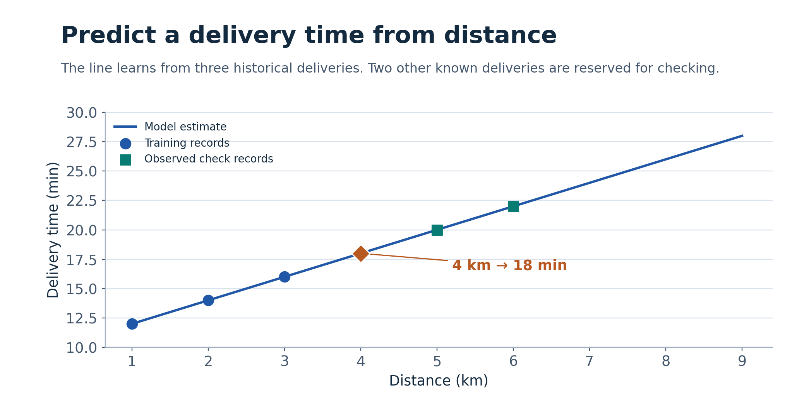
See your first predictionPredict delivery times from CSV data, check the model on unseen deliveries, and try a local prediction service. The workbook uses synthetic data so you can reproduce the exercises and inspect each decision.
Start with a prediction · Follow the Core course · Find a lesson ZIP · Look up a term
🌱 Beginner path
Start with lesson 002. Open the complete workbook folder from your download or repository copy, then extract lesson 002 inside it. Open a terminal in the lesson folder, where you can see lesson.py and the CSV files. If you need Python, follow the setup guide first. Keep each script beside its own data files.
🚚 1. Make a prediction
python -m pip install -r requirements.txt
python lesson.pyUnder New delivery estimates, find 18.0 minutes next to 4 km. Open new_inputs.csv, change the first distance from 4 to 8, save, and run python lesson.py again. That row should now say 26.0 minutes.
If Python reports that it cannot find lesson.py, open the terminal in the folder that contains the file. If your computer uses python3, use it in both commands.
⚖️ 2. Investigate the 90 kg parcel
Extract the lesson and open a terminal in its folder. Run python -m pip install -r requirements.txt once, then python lesson.py.
Read Decision: CORRECT and compare 17.7 and 26.0 minutes for the same reserved parcel. In weighing_slip.csv, change the second cell from 5 to 90 and rerun. Expect KEEP. Clear that cell and rerun again. Expect FLAG.
📏 3. Test a saved model with 90 km
Extract the lesson, open its folder in a terminal, and run these commands.
python -m pip install -r requirements.txt
python train_range_model.py
python test_range_model.pyFind 1.8163 and Outside training range next to 90 km. Change 90 to 45 in range_requests.csv. Run only python test_range_model.py again. The 45 km row should show 100.0 minutes.
Use the HTML workbook for responsive tables and diagrams. Keep the Markdown, HTML, and supporting folders together after unzipping the workbook.
🧭 Core course
Core gives you a path from a first prediction to a local delivery service. Practice gives you another task to try. Reference documents a topic or platform. Some PDF headings share a script. Follow the question for the lesson you opened.
If you are setting up Python for the first time, use the shared setup page. Use the glossary when a term is new.
| Lesson name | What you’ll do | Download |
|---|---|---|
| 002 · Your first prediction Core | Read a CSV, make a prediction, and change one distance. | ⬇️ Lesson ZIP |
| 032 · Identify missing values Core | Find missing weights and zones before preparing the data. | ⬇️ Lesson ZIP |
| 055 · Standardize formats Core | Make dates and kilograms consistent across input rows. | ⬇️ Lesson ZIP |
| 069 · Spot, check, and handle an outlier Core | Verify an unusual weight before correcting it or setting it aside. | ⬇️ Lesson ZIP |
| 071 · Normalization (Min-Max Scaling) Core | Use a saved scaler and model to check a new delivery request. | ⬇️ Lesson ZIP |
| 442 · Choose the right data split Core | Choose a split that matches the orders the app will see. | ⬇️ Lesson ZIP |
| 444 · Choose a cutoff for rare urgent orders Core | Balance missed urgent orders and false alarms. First read lesson 205. | ⬇️ Lesson ZIP |
| 446 · Evaluate delivery errors by route, weight and zone Core | Read errors in minutes for routes, weights, and delivery zones. | ⬇️ Lesson ZIP |
| 447 · Capstone: From delivery CSV to local model service Core | After lessons 442 and 446, build a local service and monitor it on later deliveries. | ⬇️ Lesson ZIP |
🧭 Contents
- Beginner path
- Core course
- New applied labs and capstone
- Setup
- Glossary
- Lesson downloads
- Start here
- 1. Data Science Pipeline
- 2. Data Sets
- 2.1. Salary & Experience Dataset
- 2.2. Titanic Dataset
- 2.3. House Prices Dataset
- 2.4. Iris Dataset
- 2.5. UCI Adult Income Dataset
- 2.6. Wine Quality Dataset
- 2.7. Boston Housing Dataset
- 2.8. MNIST Dataset
- 2.9. Customer Segmentation Dataset
- 2.10. Bank Marketing Dataset
- 2.11. Heart Disease Dataset
- 2.12. Fashion MNIST
- 2.13. Google Play Store Dataset
- 3. Machine Learning Categories
- Complete train and test scripts
- PDF page map
🌱 Start here
| Lesson name | What you’ll do | Download |
|---|---|---|
| Start here Practice | Read a delivery table, teach a model with three rows, and ask it for a new delivery time. | ⬇️ Lesson ZIP |

👀 Read the visual. Follow a delivery request from the CSV to the result.
👉 Use what you see. Edit one input first. Compare the new estimate with the original so you can trace what changed.
Each lesson has its own package list and CSVs. Run the commands from its folder. The sample rows were made for this workbook, including the exercises listed under the PDF’s public dataset headings.
| If you see | Check this first |
|---|---|
Python cannot find lesson.py |
Open the extracted lesson folder before running the command. |
ModuleNotFoundError |
Run python -m pip install -r requirements.txt from that folder. Use the same Python to install and run. |
| Python cannot find a CSV | Keep the CSV files next to lesson.py and keep their original names. |
🚚 Your first prediction
| Lesson name | What you’ll do | Download |
|---|---|---|
| Your first prediction Core | Predict how long a 4 km delivery will take, then check the model against two trips with known times. | ⬇️ Lesson ZIP |
➡️ Next Core lesson. Identify missing values.
🎯 Goal. How long might a 4 km delivery take? Each row is one delivery. Each column is one type of fact. Distance is the input. The known time is the answer the model learns from.
📋 Sample data
| distance_km | minutes |
|---|---|
| 1 | 12 |
| 2 | 14 |
| 3 | 16 |
| 5 | 20 |
| 6 | 22 |
▶️ Run. Unzip the lesson files and open a terminal in that folder. Install the lesson’s packages with python -m pip install -r requirements.txt, then run python lesson.py.
🐍 Complete script from the ZIP
"""
Your first prediction
Predict how long a 4 km delivery will take, then check the model against two trips with known times.
Run: python lesson.py
Change 4 to 8 in new_inputs.csv, then run this script again.
"""
from pathlib import Path
import pandas as pd
from sklearn.linear_model import LinearRegression
input_path = Path(__file__).resolve().with_name("sample.csv")
new_path = Path(__file__).resolve().with_name("new_inputs.csv")
# 1. Read the CSV and check its inputs, including distance_km, minutes.
deliveries = pd.read_csv(input_path)
# 2. Print the result next to the input values so you can compare them.
print("One completed delivery")
print(deliveries.head(1).to_string(index=False))
# 3. Set aside the check rows before the model learns.
training = deliveries.iloc[:3]
model = LinearRegression()
# 4. Teach the model from the training inputs and delivery time in minutes.
model.fit(training[["distance_km"]], training["minutes"])
checking = deliveries.iloc[3:]
# 5. Compare predictions with the measured answers in the check rows.
check_minutes = model.predict(checking[["distance_km"]])
checking_results = checking.copy()
checking_results["predicted_minutes"] = check_minutes.round(1)
print("\nCompare the recorded and predicted minutes")
print(checking_results.to_string(index=False))
# 6. Apply the fitted model to the new CSV rows and print a result for each row.
new_delivery = pd.read_csv(new_path)
new_minutes = model.predict(new_delivery[["distance_km"]])
results = new_delivery.copy()
results["Predicted time (min)"] = new_minutes.round(1)
print("\nNew delivery estimates")
print(results.to_string(index=False))✅ Check. See 18.0 minutes next to 4 km under New delivery estimates.
| Distance (km) | Predicted minutes |
|---|---|
| 4 | 18.0 |
| 7 | 24.0 |
| 9 | 28.0 |
🧪 Change one input. In new_inputs.csv change 4 to 8. After rerunning, the first estimate should be 26.0 minutes.
📩 CSV used for the estimates
| distance_km |
|---|
| 4 |
| 7 |
| 9 |

👀 Read the visual. Find the diamond at 4 km and read 18 minutes on the vertical scale. The squares show observed times that were held out of fitting.
👉 Use what you see. Compare the 18-minute estimate with the known times nearby. Try a different distance and read its point the same way.
💡 What happened? In these made-up rows, each additional kilometre takes two more minutes. The model guesses 18 minutes for 4 km. The other two rows show how to check a prediction when you know what actually happened.
| Workbook term | Meaning in the delivery example |
|---|---|
| Input or feature | Something you know before predicting, such as distance. |
| Target, answer, or label | What you are trying to predict. For a category, you’ll often hear label. |
| Training rows | Rows that teach the model. |
| Validation rows | Extra rows used to choose a method or setting. |
| Test rows | Rows saved for the final check after the choices are made. |
import |
Make code from an installed package available. |
DataFrame |
A Python table with rows and named columns. |
.iloc[0] and .iloc[:3] |
The first row and the first three rows. Python starts counting at zero. |
read_csv and StringIO |
Read comma-separated data. StringIO lets text inside an example act like a small file. |
fit, transform, and predict |
Learn from training data, apply a learned change, and give an answer for a new row. |
make_pipeline |
Keep steps such as filling blanks, scaling numbers, and fitting a model together so they also run in order on a new row. |
Read in stages. Start with Missing Values, Outliers, Min-Max Scaling, and Data Splitting. Once you can explain the input, answer, and prediction in a lesson, try changing one row.
🟩 1. Data Science Pipeline
| Lesson name | What you’ll do | Download |
|---|---|---|
| 1. Data Science Pipeline Practice | Turn a business question into something you can measure before you choose a model. | ⬇️ Lesson ZIP |

👀 Read the visual. Follow the delivery-time example through the whole pipeline.
👉 Use what you see. Write down the answer the model must predict and the inputs the app will know when someone requests it.
🎯 1.1 Problem Definition
| Lesson name | What you’ll do | Download |
|---|---|---|
| 1.1 Problem Definition Practice | Decide what question the model should answer and how you will judge its answers. | ⬇️ Lesson ZIP |
📌 Before you start. Pick one result you want the app to produce.

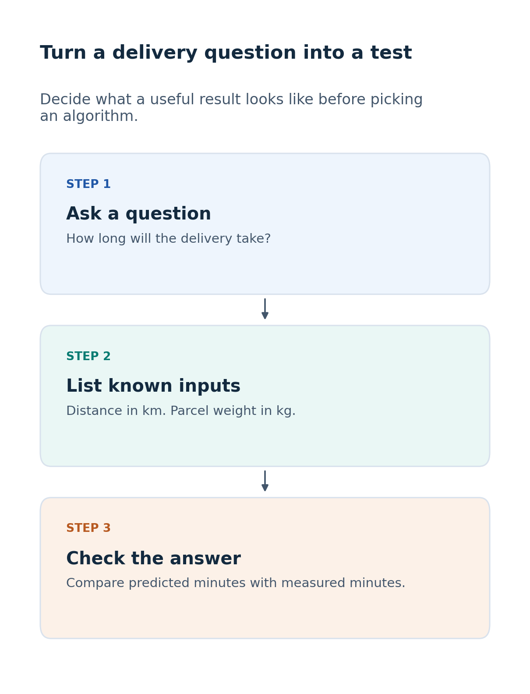
👀 Read the visual. Decide what a useful result looks like before picking an algorithm.
👉 Use what you see. If the app predicts minutes, start with an error measured in minutes, such as MAE.
🗣️ Understand the business problem or use case
| Lesson name | What you’ll do | Download |
|---|---|---|
| Understand the business problem or use case Practice | Name the decision you want to make for a delivery, a support message, or a shopper. | ⬇️ Lesson ZIP |
In the worksheet below, write the decision or action the result should support.
🎯 Define the objective
| Lesson name | What you’ll do | Download |
|---|---|---|
| Define the objective Practice | Decide whether the task needs a number, a category, or groups of similar rows. | ⬇️ Lesson ZIP |
Choose what the output should look like. The sample worksheet distinguishes a number, a category, and a group.
📏 Identify key performance metrics
| Lesson name | What you’ll do | Download |
|---|---|---|
| Identify key performance metrics Practice | Pick a score that fits the question, such as minutes of error or how many urgent cases the model catches. | ⬇️ Lesson ZIP |
Use the worksheet to select a first check. The evaluation section shows how to compute accuracy, RMSE, and F1-score.
🧭 Understand the domain knowledge related to the data
| Lesson name | What you’ll do | Download |
|---|---|---|
| Understand the domain knowledge related to the data Practice | Write down what the data means, including its units and what you know before predicting. | ⬇️ Lesson ZIP |
Add a units or timing check for each input you plan to use.
📋 Set constraints & assumptions
| Lesson name | What you’ll do | Download |
|---|---|---|
| Set constraints & assumptions Practice | Record the time, hardware and accuracy limits that affect your project. | ⬇️ Lesson ZIP |
Write one row for each practical choice before you train. Change the goal and choose a different metric or check.
📋 Sample data
| use_case | objective | metric | domain_check | constraint |
|---|---|---|---|---|
| Estimate delivery time | regression | RMSE | Distance is in km | One laptop |
| Route support messages | classification | F1 | Negation changes meaning | Review missed items |
| Group shoppers | clustering | Silhouette | Income and scores use different units | Groups must be interpretable |
▶️ Run. Unzip the lesson files and open a terminal in that folder. Install the lesson’s packages with python -m pip install -r requirements.txt, then run python lesson.py.
🔹 Steps in the script
- Read the project brief. Each row lists one example project.
- Print the result next to the input values so you can compare them.
✅ Check. Look for Route support messages Review missed items in the output excerpt below.
Route support messages Review missed items
Group shoppers Groups must be interpretable
First decision: Estimate delivery time🧪 Change one input. Add one task to sample.csv with a decision, objective, metric, domain check and constraint. Look for it in the printed table.
💡 Takeaway. Record the domain assumption, available computing power, and the error you can tolerate. Accuracy is another option for classification. Revisit the brief after evaluation.
📥 1.2 Data Collection
| Lesson name | What you’ll do | Download |
|---|---|---|
| 1.2 Data Collection Practice | Read orders from a CSV, a small database, a local API, and a sample web page. | ⬇️ Lesson ZIP |
📌 Before you start. Know which fields you need and what each row should represent.

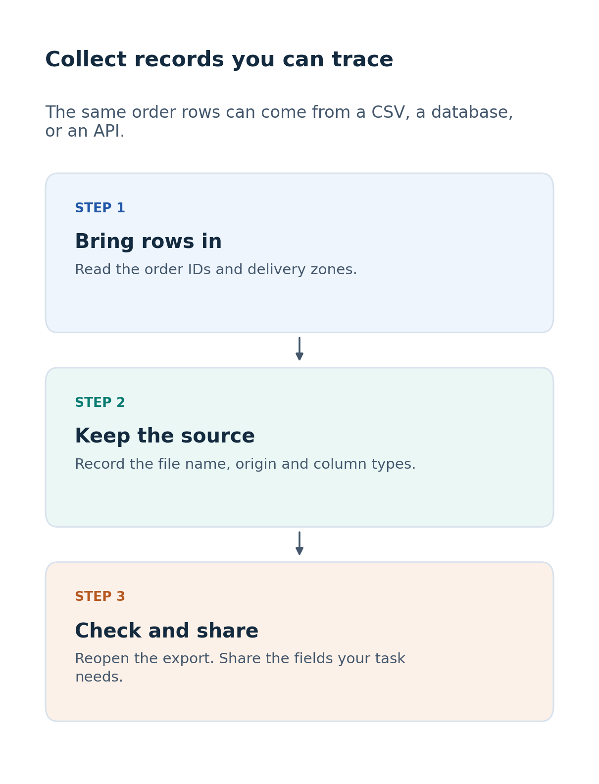
👀 Read the visual. The same order rows can come from a CSV, a database, or an API.
👉 Use what you see. If a column disappears after export, check what was collected and which columns were selected.
🔎 Identify data sources
| Lesson name | What you’ll do | Download |
|---|---|---|
| Identify data sources Practice | Compare four ways to bring order data into Python. | ⬇️ Lesson ZIP |
Create four sources in Python. Use a local test API and a sample HTML page so you can practise without sending a request over the network.
📋 Sample data
| order_id | zone |
|---|---|
| 1 | north |
| 2 | south |
| 3 | west |
▶️ Run. Unzip the lesson files and open a terminal in that folder. Install the lesson’s packages with python -m pip install -r requirements.txt, then run python lesson.py.
🔹 Steps in the script
- Read the order IDs and the zone for each order.
- Send a practice request and read the response code and body.
✅ Check. Look for Rows from the CSV and database: 3 3 in the output excerpt below.
Rows from the CSV and database: 3 3
Orders returned by the local API
order_id zone🧪 Change one input. Add order_id 4 with zone west in sample.csv. Look for it in the database, API or page output.
💡 Takeaway. The test client makes a GET request and checks the response before reading its rows. The HTML parser extracts the zone from the supplied page. For a live API, check pagination as well as status. For web scraping, check permitted access and the site’s terms first.
📦 Gather structured and unstructured data
| Lesson name | What you’ll do | Download |
|---|---|---|
| Gather structured and unstructured data Practice | Collect a delivery table, a text file, an image, and a short video into one folder. | ⬇️ Lesson ZIP |
The collection exercise below creates a CSV for structured records and a manifest for text, images, and video.
🗄️ Store data in a centralized location
| Lesson name | What you’ll do | Download |
|---|---|---|
| Store data in a centralized location Practice | Save the collected records, media and file list in one location. | ⬇️ Lesson ZIP |
Run the collection exercise and inspect the files in collection_demo/.
🏷️ Track metadata
| Lesson name | What you’ll do | Download |
|---|---|---|
| Track metadata Practice | Record where a file came from, how large it is and what its columns contain. | ⬇️ Lesson ZIP |
After the collection exercise runs, inspect its printed source, file size, collection method, and field types.
🔒 Handle data privacy & security concerns
| Lesson name | What you’ll do | Download |
|---|---|---|
| Handle data privacy & security concerns Practice | Export a delivery table with order IDs and times while keeping contact details out of the shared file. | ⬇️ Lesson ZIP |
Keep a list of fields you actually need. The example removes a fictional contact field before sharing. Access controls, retention, and permission to collect data are separate checks.
Create a structured CSV and a manifest for unstructured text, images, and video. Keep the raw files and manifest in one project folder.
📋 Sample data
| order_id | minutes | contact |
|---|---|---|
| 1 | 22 | sample1@example.invalid |
| 2 | 31 | sample2@example.invalid |
▶️ Run. Unzip the lesson files and open a terminal in that folder. Install the lesson’s packages with python -m pip install -r requirements.txt, then run python lesson.py.
🔹 Steps in the script
- Read the CSV and check its inputs, including order_id, minutes, contact.
- Print the result next to the input values so you can compare them.
✅ Check. Look for {'source': 'original sample', 'method': 'created in Python', 'bytes': 27, 'types': {'order_id': 'int64', … in the output excerpt below.
{'source': 'original sample', 'method': 'created in Python', 'bytes': 27, 'types': {'order_id': 'int64', 'minutes': 'int64'}}
file_type collected
text True🧪 Change one input. Try changing order_id from 1 to 2 in sample.csv. Compare the new output.
💡 Takeaway. The manifest lists the three sample files. Open the image and count the video frames to confirm they can be read. This exercise uses Pillow and imageio with FFmpeg from the setup commands. For real data, choose a controlled local directory, cloud store, or database and review applicable requirements such as GDPR or HIPAA with the data owner.
🧼 1.3 Data Cleaning & Preprocessing
| Lesson name | What you’ll do | Download |
|---|---|---|
| 1.3 Data Cleaning & Preprocessing Practice | Start by finding blanks and question marks in your delivery data. | ⬇️ Lesson ZIP |
📌 Before you start. Open an extracted lesson, find sample.csv, and identify its inputs and known answer.
🕳️ 1.3.1 Handle Missing Values
| Lesson name | What you’ll do | Download |
|---|---|---|
| 1.3.1 Handle Missing Values Practice | Count missing entries and locate the delivery rows you need to review. | ⬇️ Lesson ZIP |

👀 Read the visual. This example follows one completed delivery whose weight is missing.
👉 Use what you see. If the actual delivery time is missing, hold that row out of supervised training. You can still ask the model to estimate its time.
🔎 Identify missing values
| Lesson name | What you’ll do | Download |
|---|---|---|
| Identify missing values Core | Find which weights or delivery zones are missing and read the affected rows. | ⬇️ Lesson ZIP |
➡️ Next Core lesson. Standardize formats.
Read a CSV with blank numeric and categorical cells and a custom missing marker. Find the affected columns and rows before choosing a treatment.
📋 Sample data
Swipe or scroll to see every column.
| distance_km | weight_kg | zone | delivery_minutes |
|---|---|---|---|
| 2 | 1 | north | 19 |
| 4 | — | north | 30 |
| 6 | 2 | — | 29 |
| 8 | 4 | south | 40 |
| 10 | 1 | ? | 33 |
| 12 | 3 | south | 44 |
▶️ Run. Unzip the lesson files and open a terminal in that folder. Install the lesson’s packages with python -m pip install -r requirements.txt, then run python lesson.py.
🔹 Steps in the script
- Read the CSV. Treat a question mark like a blank cell.
- Count missing values by column. Then print the rows you need to review.
✅ Check. Find one blank weight and two missing zones, then see the affected rows.
| Column | Missing cells |
|---|---|
| distance_km | 0 |
| weight_kg | 1 |
🧪 Change one input. Fill the blank weight with 2 in sample.csv. The missing weight count should fall by one.
🐍 Complete script from the ZIP
"""
Identify missing values
Find which weights or delivery zones are missing and read the affected rows.
Run: python lesson.py
Leave one weight_kg cell blank or put ? in zone in sample.csv. See which column’s count changes.
"""
from pathlib import Path
import pandas as pd
input_path = Path(__file__).resolve().with_name("sample.csv")
# 1. Read the CSV. Treat a question mark like a blank cell.
data = pd.read_csv(input_path, na_values=["?"])
# 2. Count missing values by column. Then print the rows you need to review.
missing = data.isna()
counts = missing.sum().rename("Missing cells").rename_axis("Column").reset_index()
print(counts.to_string(index=False))
print("\nRows to review")
print(
data.loc[missing.any(axis=1), ["distance_km", "weight_kg", "zone"]].to_string(
index=False
)
)
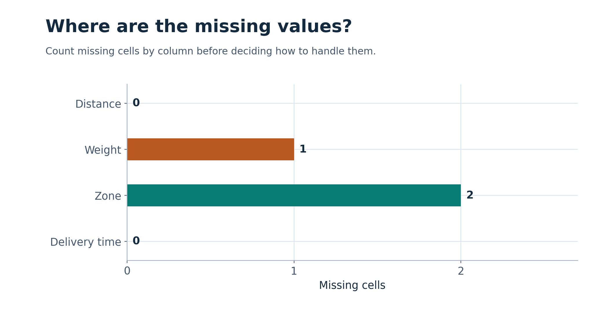
Open full-size image ↗👀 Read the visual. Zone has two missing entries. Weight has one. Check those columns before fitting a model.
👉 Use what you see. Start with Zone, which has the most blanks. Open the marked rows and decide whether a source check or a fill rule makes sense.
💡 Takeaway. The blank weight is numeric. The blank zone and ? become missing categories. The next examples decide how to handle them before fitting a model.
🩹 Handle missing values
| Lesson name | What you’ll do | Download |
|---|---|---|
| Handle missing values Practice | Decide which incomplete delivery rows you can still use to train a model. | ⬇️ Lesson ZIP |
🧽 Remove
| Lesson name | What you’ll do | Download |
|---|---|---|
| Remove Practice | Drop a spare note column and remove rows missing a required distance or known time. | ⬇️ Lesson ZIP |
Inspect a tiny table. Drop an unhelpful note column, drop training rows missing an input you cannot recover, and use the remaining rows for a regression fit.
📋 Sample data
| distance_km | note | minutes |
|---|---|---|
| 2 | — | 19 |
| 4 | left at desk | 23 |
| — | — | 27 |
| 8 | — | 31 |
| 10 | — | 35 |
▶️ Run. Unzip the lesson files and open a terminal in that folder. Install the lesson’s packages with python -m pip install -r requirements.txt, then run python lesson.py.
🔹 Steps in the script
- Read the CSV and check its inputs, including distance_km, note, minutes.
- Keep rows with both a usable input and a known answer.
- Set aside the check rows before the model learns.
- Teach the model from the training inputs and delivery time in minutes.
- Apply the fitted model to the new CSV rows and print a result for each row.
✅ Check. Look for Rows retained: 4 in the output excerpt below.
Rows retained: 4
Held-out prediction: [35.0]
[25. 41.]🧪 Change one input. Leave distance_km blank on a practice row. Compare the number of usable rows and enter a new distance to predict.
💡 Takeaway. Choose what to drop after reviewing why a value is missing. A required label is a different case from a missing input.
🩺 Impute
| Lesson name | What you’ll do | Download |
|---|---|---|
| Impute Practice | Fill a missing parcel weight before estimating the delivery time. | ⬇️ Lesson ZIP |
Run the numeric and categorical examples below on training rows, then inspect what the fitted imputer returns on later rows.
🔢 Numerical Data: Mean, Median, Mode, KNN Imputer
| Lesson name | What you’ll do | Download |
|---|---|---|
| Numerical Data: Mean, Median, Mode, KNN Imputer Practice | Compare four ways of filling the same missing weight and see how each changes the prediction. | ⬇️ Lesson ZIP |
🎯 Goal. How long would a 10 km delivery take if the parcel weight had not been recorded? Use the first four deliveries to learn. For the fifth delivery, deliberately hide the known 1 kg weight, and keep its actual time, 33 minutes, for comparison.
Model inputs: distance and weight. Known answer: delivery time. One row to follow: the 10 km delivery.
📋 Sample data
Swipe or scroll to see every column.
| distance_km | weight_kg | zone | delivery_minutes |
|---|---|---|---|
| 2 | 1 | north | 19 |
| 4 | — | north | 30 |
| 6 | 2 | — | 29 |
| 8 | 4 | south | 40 |
| 10 | 1 | ? | 33 |
| 12 | 3 | south | 44 |
▶️ Run. Unzip the lesson files and open a terminal in that folder. Install the lesson’s packages with python -m pip install -r requirements.txt, then run python lesson.py.
🔹 Steps in the script
- Read the delivery table. Distance is in km, and weight is in kg.
- Set aside the check rows before the model learns.
- Read the new CSV rows, then apply the rules from the sample.
- Give each method the same practice data so you can compare the results.
- Learn the conversion on the training inputs before applying it to a new row.
✅ Check. Look for New row Method Filled kg Prediction in minutes Actual minutes in the output excerpt below.
| New row | Method | Filled kg | Prediction in minutes | Actual minutes |
|---|---|---|---|---|
| 1 | Mean | 2.33 | 33.59 | 33.0 |
| 2 | Mean | 2.00 | 28.56 | 29.0 |
🧪 Change one input. Leave weight_kg blank for a new distance and compare what each method fills in.
 Open full-size image ↗
Open full-size image ↗👀 Read the visual. The same shipment gets a different weight and prediction under each method. The dashed line marks its actual time. Choose a method on more than one validation row.
👉 Use what you see. Compare each right-hand bar with the actual-time line. Check several more rows before picking a fill method.
Read the table. Each method fills the same missing weight and trains its own model. The training weights available for the first three methods are 1, 2, and 4 kg. All three occur once, so scikit-learn chooses the smallest tied value for the mode. KNN looks for two similar training deliveries. The example scales the inputs first so the units can be compared.
🏷️ Categorical Data: Mode, "Unknown" placeholder
| Lesson name | What you’ll do | Download |
|---|---|---|
| Categorical Data: Mode, "Unknown" placeholder Practice | Try the most common delivery zone and an explicit Unknown label for the same blank cell. | ⬇️ Lesson ZIP |
🎯 Goal. If the zone is missing, should a model see the most common zone or a separate Unknown category? Compare what happens to the same two deliveries.
📋 Sample data
| zone | minutes |
|---|---|
| north | 19 |
| north | 30 |
| — | 29 |
| south | 40 |
| ? | 33 |
| south | 44 |
▶️ Run. Unzip the lesson files and open a terminal in that folder. Install the lesson’s packages with python -m pip install -r requirements.txt, then run python lesson.py.
🔹 Steps in the script
- Read the CSV and check its inputs, including zone, minutes.
- Set aside the check rows before the model learns.
- Read the new CSV rows, then apply the rules from the sample.
- Give each method the same practice data so you can compare the results.
✅ Check. Look for Mode zone filled minutes in the output excerpt below.
| Mode | zone filled | minutes |
|---|---|---|
| NaN | north | 26.0 |
| south | south | 40.0 |
🧪 Change one input. Change zone in new_inputs.csv, for example from ? to north. Compare the printed rows.
Read the table. On row 5 the mode uses North, while the other approach preserves Unknown. Row 6 is already South, so both methods keep it.
⏳ Time-Series Data: Forward Fill (ffill), Backward Fill (bfill)
| Lesson name | What you’ll do | Download |
|---|---|---|
| Time-Series Data: Forward Fill (ffill), Backward Fill (bfill) Practice | Fill a gap in daily counts using the previous day or the next recorded day. | ⬇️ Lesson ZIP |
Fill a gap in train data and predict a later count. Compare a past-only fill with a retrospective fill when the later observation is already known.
📋 Sample data
| day | requests |
|---|---|
| 1 | 10 |
| 2 | — |
| 3 | 16 |
| 4 | 19 |
| 5 | 22 |
▶️ Run. Unzip the lesson files and open a terminal in that folder. Install the lesson’s packages with python -m pip install -r requirements.txt, then run python lesson.py.
🔹 Steps in the script
- Read the CSV and check its inputs, including day, requests.
- Set aside the check rows before the model learns.
- Fit the model on the prepared training rows. Keep it for the checks below.
- Apply the fitted model to the new CSV rows and print a result for each row.
✅ Check. Look for day requests forward backward in the output excerpt below.
Swipe or scroll to see every column.
| day | requests | forward | backward |
|---|---|---|---|
| 1 | 10.0 | 10.0 | 10.0 |
| 2 | NaN | 10.0 | 16.0 |
🧪 Change one input. Edit the input values in new_inputs.csv and compare the displayed predictions.
💡 Takeaway. Forward fill uses the earlier value 10. Backward fill uses 16 from day 3. For a day-2 live prediction, that later value would be unavailable.
⚖️ When missing values change the answer
| Lesson name | What you’ll do | Download |
|---|---|---|
| When missing values change the answer Practice | See how losing the slower trips can make the average delivery time look too low. | ⬇️ Lesson ZIP |
🎯 Goal. What happens to the reported average if the slowest deliveries are the ones without a recorded time?
📋 Sample data
| Route | True time | Recorded time |
|---|---|---|
| Short | 12 | 12.0 |
| Short | 14 | 14.0 |
| Short | 16 | 16.0 |
| Long | 30 | 30.0 |
| Long | 32 | — |
| Long | 34 | — |
▶️ Run. Unzip the lesson files and open a terminal in that folder. Install the lesson’s packages with python -m pip install -r requirements.txt, then run python lesson.py.
🔹 Steps in the script
- Read the CSV and check its inputs, including Route, True time, Recorded time.
- Print the result next to the input values so you can compare them.
- Plot the values so you can see how they compare.
✅ Check. Look for Average uses Average time (min) in the output excerpt below.
| Average uses | Average time (min) |
|---|---|
| All six times | 23.0 |
| Recorded times only | 18.0 |
🧪 Change one input. Try changing True time from 12 to 16 in sample.csv. Compare the new output.

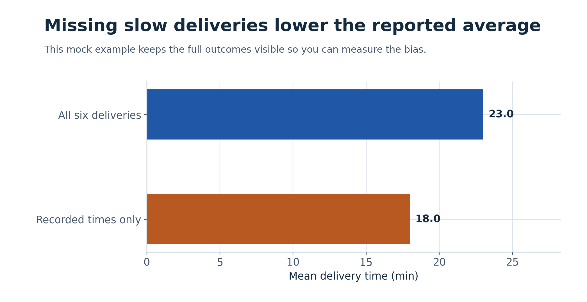
Open full-size image ↗👀 Read the visual. When two slow deliveries are missing, the average falls. Use the graph to compare the two sets of rows.
👉 Use what you see. Check whether blanks tend to occur on longer trips. Use the recorded source or report the gap before treating the lower average as typical.
The toy example keeps the true times so you can see what was lost. In a real dataset those answers may be unknown. Compare where blanks appear across routes, then investigate why the time was missing.
🔁 1.3.2 Remove Duplicates
| Lesson name | What you’ll do | Download |
|---|---|---|
| 1.3.2 Remove Duplicates Practice | Check whether repeated order records would give some deliveries extra weight in training. | ⬇️ Lesson ZIP |

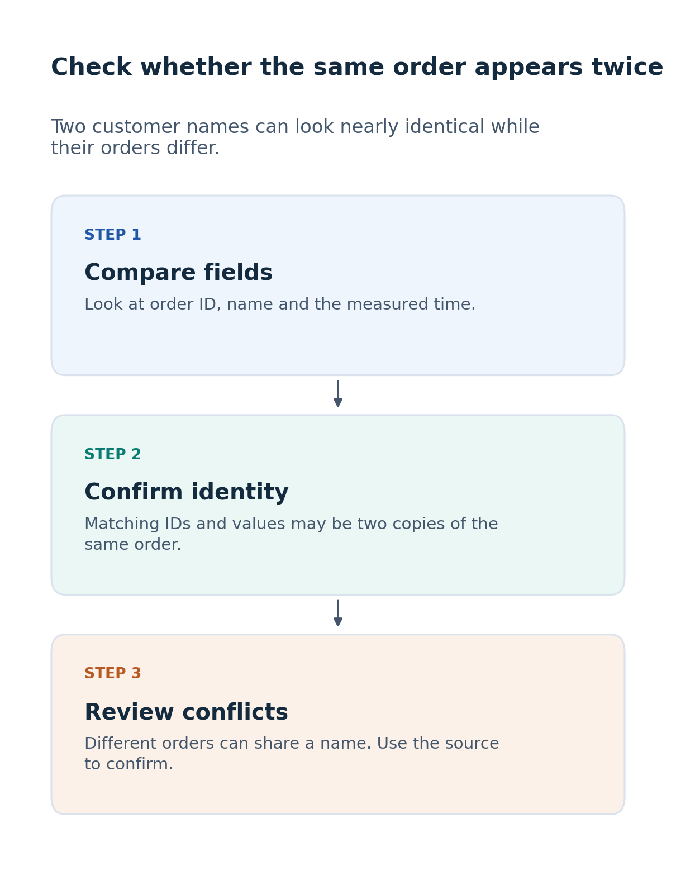
👀 Read the visual. Two customer names can look nearly identical while their orders differ.
👉 Use what you see. Keep both rows if the source confirms they are separate orders.
🧾 Detect & Remove Exact Duplicates
| Lesson name | What you’ll do | Download |
|---|---|---|
| Detect & Remove Exact Duplicates Practice | Keep one copy of each exact row before training on distance and time. | ⬇️ Lesson ZIP |
Count repeated records, keep the first exact copy, then fit on one row per order.
📋 Sample data
| order_id | km | minutes |
|---|---|---|
| A | 2 | 14 |
| A | 2 | 14 |
| B | 5 | 20 |
| C | 8 | 26 |
| D | 10 | 30 |
▶️ Run. Unzip the lesson files and open a terminal in that folder. Install the lesson’s packages with python -m pip install -r requirements.txt, then run python lesson.py.
🔹 Steps in the script
- Read the CSV and check its inputs, including order_id, km, minutes.
- Print the result next to the input values so you can compare them.
- Apply the confirmed correction before teaching the model.
- Set aside the check rows before the model learns.
- Teach the model from the training inputs and delivery time in minutes.
- Apply the fitted model to the new CSV rows and print a result for each row.
✅ Check. Look for Repeated rows: 1 in the output excerpt below.
Repeated rows: 1
D prediction: [30.0]
km prediction🧪 Change one input. Edit the input values in new_inputs.csv and compare the displayed predictions.
🔍 Handle Near-Duplicates
| Lesson name | What you’ll do | Download |
|---|---|---|
| Handle Near-Duplicates Practice | Compare near-identical names and use the order ID before combining records. | ⬇️ Lesson ZIP |
Normalize the name and use fuzzy matching to flag a candidate. Confirm the shared order ID before merging.
📋 Sample data
| order_id | name | minutes |
|---|---|---|
| A | Maya Jensen | 19 |
| A | maya jensen | 19 |
| B | Maya Jenson | 31 |
▶️ Run. Unzip the lesson files and open a terminal in that folder. Install the lesson’s packages with python -m pip install -r requirements.txt, then run python lesson.py.
🔹 Steps in the script
- Read the CSV and check its inputs, including order_id, name, minutes.
- Give different spellings of the same value one consistent form.
✅ Check. Look for Similar names: 0.91 in the output excerpt below.
Similar names: 0.91
Confirmed distinct orders: ['A', 'B']🧪 Change one input. Try changing order_id from A to B in sample.csv. Compare the new output.
💡 Takeaway. The similar names with different order IDs remain separate. If the same person can appear more than once, decide whether to group their rows when splitting.
🧰 1.3.3 Fix Inconsistent Data
| Lesson name | What you’ll do | Download |
|---|---|---|
| 1.3.3 Fix Inconsistent Data Practice | Get two systems’ dates, weight units and delivery zones into one shared format. | ⬇️ Lesson ZIP |
📅 Standardize formats
| Lesson name | What you’ll do | Download |
|---|---|---|
| Standardize formats Core | Turn dates, pounds and uneven zone names into consistent model inputs, then predict a new delivery. | ⬇️ Lesson ZIP |
➡️ Next Core lesson. Investigate the outlier.

👀 Read the visual. The same conversion steps run for training deliveries and new shipments.
👉 Use what you see. Give the model 8.16 kg for this shipment. Its training weight column uses kilograms.
🎯 Goal. How can the model compare shipments when one system writes pounds and another writes kilograms? Make the units, dates, and zone names consistent first.
📋 Sample data
| ship_date | weight | unit | zone | minutes |
|---|---|---|---|---|
| 01/02/2025 | 10 | lb | NORTH | 19 |
| 2025-01-03 | 8 | kg | south | 27 |
| 01/04/2025 | 35 | lbs | NORTH | 38 |
| 2025-01-05 | 16 | kg | south | 40 |
| 2025-01-06 | 12 | kg | north | 35 |
▶️ Run. Unzip the lesson files and open a terminal in that folder. Install the lesson’s packages with python -m pip install -r requirements.txt, then run python lesson.py.
🔹 Steps in the script
- Read the shipment records from both systems.
- Write one cleanup function for dates, weight units and zone names.
- Use the first four cleaned rows for training. Keep the final delivery for a check.
- Give the model kilograms, a weekday number and a zone flag. Teach it the recorded minutes.
- Clean new shipments with those same rules and estimate the minutes.
✅ Check. Find a standardized ISO date and its weight in kilograms before reading the estimate.
Original date Standard date Original weight Weight (kg) Original zone Standard zone South flag
01/02/2025 2025-01-02 10 lb 4.54 NORTH north 0
2025-01-03 2025-01-03 8 kg 8.00 south south 1🧪 Change one input. Try 22 lb on 01/13/2025 in new_inputs.csv. The cleaned row should show 2025-01-13 and about 9.98 kg.
🐍 Complete script from the ZIP
"""
Standardize formats
Turn dates, pounds and uneven zone names into consistent model inputs, then predict a new delivery.
Run: python lesson.py
Try changing ship_date from 01/07/2025 to 2025-01-10 in new_inputs.csv. Compare the new output.
"""
from pathlib import Path
import pandas as pd
from sklearn.linear_model import LinearRegression
input_path = Path(__file__).resolve().with_name("sample.csv")
new_path = Path(__file__).resolve().with_name("new_inputs.csv")
# 1. Read the shipment records from both systems.
data = pd.read_csv(input_path)
# 2. Write one cleanup function for dates, weight units and zone names.
def clean(frame):
us_dates = pd.to_datetime(frame["ship_date"], format="%m/%d/%Y", errors="coerce")
iso_dates = pd.to_datetime(frame["ship_date"], format="%Y-%m-%d", errors="coerce")
dates = us_dates.fillna(iso_dates)
units = frame["unit"].str.strip().str.lower()
kilograms = frame["weight"] * units.map(
{"kg": 1, "lb": 0.45359237, "lbs": 0.45359237}
)
zone = frame["zone"].str.strip().str.lower()
if (
dates.isna().any()
or kilograms.isna().any()
or not zone.isin(["north", "south"]).all()
):
raise ValueError("Check for an unreadable date, weight, unit, or zone.")
return pd.DataFrame(
{
"date": dates.dt.strftime("%Y-%m-%d"),
"weight_kg": kilograms,
"zone": zone,
"weekday": dates.dt.dayofweek,
"is_south": zone.eq("south").astype(int),
}
)
cleaned = clean(data)
before_after = pd.DataFrame(
{
"Original date": data["ship_date"],
"Standard date": cleaned["date"],
"Original weight": data["weight"].astype(str) + " " + data["unit"],
"Weight (kg)": cleaned["weight_kg"].round(2),
"Original zone": data["zone"].str.strip(),
"Standard zone": cleaned["zone"],
"South flag": cleaned["is_south"],
}
)
inputs = ["weight_kg", "weekday", "is_south"]
# 3. Use the first four cleaned rows for training. Keep the final delivery for a check.
training = cleaned.iloc[:4]
# 4. Give the model kilograms, a weekday number and a zone flag. Teach it the recorded minutes.
model = LinearRegression().fit(training[inputs], data.iloc[:4]["minutes"])
last_shipment = clean(data.iloc[4:])[inputs]
predicted = model.predict(last_shipment)[0]
results = pd.DataFrame(
{
"Shipment": ["Check row 5"],
"Actual time (min)": [data.iloc[4]["minutes"]],
"Predicted time (min)": [round(predicted, 1)],
}
)
print(before_after.to_string(index=False))
print(results.to_string(index=False))
# 5. Clean new shipments with those same rules and estimate the minutes.
rows = pd.read_csv(new_path)
changed = clean(rows)
changed["predicted_minutes"] = model.predict(changed[inputs]).round(2)
print(changed.to_string(index=False))Before and after
| Original date | Standard date | Original weight | Weight (kg) | Original zone | Standard zone | South flag |
|---|---|---|---|---|---|---|
| 01/02/2025 | 2025-01-02 | 10 lb | 4.54 | NORTH | north | 0 |
| 2025-01-03 | 2025-01-03 | 8 kg | 8 | south | south | 1 |
| 01/04/2025 | 2025-01-04 | 35 lbs | 15.88 | NORTH | north | 0 |
| 2025-01-05 | 2025-01-05 | 16 kg | 16 | south | south | 1 |
| 2025-01-06 | 2025-01-06 | 12 kg | 12 | north | north | 0 |
📊 Results
| Shipment | Actual time (min) | Predicted time (min) |
|---|---|---|
| Check row 5 | 35 | 34.5 |
Read the table. The model uses kilograms, weekday, and a South flag. The true delivery times are the answers used during training.
✍️ Fix typos and spelling variations
| Lesson name | What you’ll do | Download |
|---|---|---|
| Fix typos and spelling variations Practice | Map known spelling variants to a single category before encoding it. | ⬇️ Lesson ZIP |
Clean a category from the source PDF’s example. Use an explicit mapping for trusted variants, then train and apply an encoder.
📋 Sample data
| record_id | category |
|---|---|
| 1 | Male |
| 2 | M |
| 3 | Female |
| 4 | female |
▶️ Run. Unzip the lesson files and open a terminal in that folder. Install the lesson’s packages with python -m pip install -r requirements.txt, then run python lesson.py.
🔹 Steps in the script
- Read the CSV and check its inputs, including record_id, category.
- Give different spellings of the same value one consistent form.
- Fit the model on the prepared training rows. Keep it for the checks below.
✅ Check. Look for category standard in the output excerpt below.
category standard
Male Male
M Male🧪 Change one input. Try changing record_id from 1 to 3 in sample.csv. Compare the new output.
💡 Takeaway. Check the field definition before equating two spellings. Apply the same mapping and encoder before a model’s prediction, as in the one-hot lab below.
📊 1.3.4 Handle Outliers
| Lesson name | What you’ll do | Download |
|---|---|---|
| 1.3.4 Handle Outliers Practice | Use parcel weights to see which records deserve a closer look. | ⬇️ Lesson ZIP |
🚩 Detection Methods
| Lesson name | What you’ll do | Download |
|---|---|---|
| Detection Methods Practice | Compare two ways to flag unusual parcel weights and inspect the chart. | ⬇️ Lesson ZIP |
📦 Boxplots & Visualization
| Lesson name | What you’ll do | Download |
|---|---|---|
| Boxplots & Visualization Practice | Find a weight far from the others on a boxplot. | ⬇️ Lesson ZIP |
Run the detection code below and inspect the isolated point above the upper whisker.
📏 Z-score Method
| Lesson name | What you’ll do | Download |
|---|---|---|
| Z-score Method Practice | Flag a parcel that is more than three standard deviations from the average weight. | ⬇️ Lesson ZIP |
The detection code calculates the training mean and standard deviation, then flags readings more than 3 standard deviations away.
📐 Interquartile Range (IQR)
| Lesson name | What you’ll do | Download |
|---|---|---|
| Interquartile Range (IQR) Practice | Use the middle half of the weight distribution to set a review range. | ⬇️ Lesson ZIP |
Create normal-looking delivery weights and a deliberately large value. Flag it with the two numeric checks, then inspect the box plot.
📋 Sample data. Preview of the first 8 of 12 rows.
| weight_kg |
|---|
| 2 |
| 3 |
| 3 |
| 4 |
| 4 |
| 4 |
| 5 |
| 5 |
▶️ Run. Unzip the lesson files and open a terminal in that folder. Install the lesson’s packages with python -m pip install -r requirements.txt, then run python lesson.py.
🔹 Steps in the script
- Read the CSV and check its inputs, including weight_kg.
- Find where the middle values sit, then compare the remaining rows with those limits.
- Plot the values so you can see how they compare.
✅ Check. Look for weight_kg Z-score IQR in the output excerpt below.
weight_kg Z-score IQR
80 True True🧪 Change one input. Compare 80 kg with 8 kg. Change or add a measured weight in sample.csv, then look for the flag and the boxplot.
 Open full-size image ↗
Open full-size image ↗👀 Read the visual. The 80 kg weight is above the review line. The zoom shows how the middle half of the recorded weights anchors the review rule.
👉 Use what you see. Check the source record before you change or set aside a flagged weight.
💡 Takeaway. Review any flagged value with the source. A large valid delivery is useful data when the model needs to handle it.
🛠️ Handling Strategies
| Lesson name | What you’ll do | Download |
|---|---|---|
| Handling Strategies Practice | Compare deleting a confirmed error, clipping a value and applying a log. | ⬇️ Lesson ZIP |
🧽 Remove
| Lesson name | What you’ll do | Download |
|---|---|---|
| Remove Practice | Remove an impossible negative parcel weight before fitting a model. | ⬇️ Lesson ZIP |
In the handling exercise below, remove the deliberately invalid negative weight and check the row count.
✂️ Cap/Clip Values
| Lesson name | What you’ll do | Download |
|---|---|---|
| Cap/Clip Values Practice | Cap very low and very high weights using limits learned from training rows. | ⬇️ Lesson ZIP |
In the same exercise, print the capped training input and apply the training limit to the held-out row.
📉 Transform Data
| Lesson name | What you’ll do | Download |
|---|---|---|
| Transform Data Practice | Use a log to shrink the effect of large weights, then compare the predicted time. | ⬇️ Lesson ZIP |
Run three strategies on a table with a deliberately invalid negative weight and a real heavy shipment. Learn the clipping limit from training data.
📋 Sample data
| weight_kg | minutes |
|---|---|
| 1 | 18 |
| -45 | 18 |
| 2 | 21 |
| 3 | 23 |
| 5 | 28 |
| 40 | 72 |
| 7 | 32 |
▶️ Run. Unzip the lesson files and open a terminal in that folder. Install the lesson’s packages with python -m pip install -r requirements.txt, then run python lesson.py.
🔹 Steps in the script
- Read the weights in kilograms and the delivery times in minutes.
- Set aside the check rows before the model learns.
- Give each method the same practice data so you can compare the results.
✅ Check. Look for Confirmed errors removed: 1 in the output excerpt below.
Confirmed errors removed: 1
remove only
weight_used_by_model original_weight_kg predicted_minutes actual_minutes🧪 Change one input. Try changing weight_kg from 1 to 2 in sample.csv. Compare the new output.
💡 Takeaway. Use a validation set to choose a strategy. For cross-validation, learn a clipping bound inside each training fold.
🚦 Spot, check, and handle an outlier
| Lesson name | What you’ll do | Download |
|---|---|---|
| Spot, check, and handle an outlier Core | Review a recorded 90 kg parcel, correct it using the weighing slip, and compare the two predictions on a graph. | ⬇️ Lesson ZIP |
➡️ Next Core lesson. Min-Max Scaling.
🎯 Goal. Is a 90 kg parcel a recording mistake? Follow one point from the raw table to the flag, check the source, then compare two model predictions.
📋 Sample data
| parcel | weight_kg | minutes |
|---|---|---|
| 1 | 1 | 12 |
| 2 | 2 | 14 |
| 3 | 3 | 16 |
| 4 | 4 | 18 |
| 5 | 90 | 20 |
| 6 | 6 | 22 |
| 7 | 7 | 24 |
| 8 | 8 | 26 |
▶️ Run. Unzip the lesson files and open a terminal in that folder. Install the lesson’s packages with python -m pip install -r requirements.txt, then run python lesson.py.
Edit weighing_slip.csv to make a different decision. The script reads the recorded weight from sample.csv and the verified weight from the slip.
🐍 Complete script from the ZIP
"""Review the 90 kg entry for parcel 5. Run with python lesson.py."""
from pathlib import Path
import matplotlib.pyplot as plt
import pandas as pd
from sklearn.linear_model import LinearRegression
folder = Path(__file__).resolve().parent
# 1. Open the delivery log. Keep the last parcel for a fair model check.
deliveries = pd.read_csv(folder / "sample.csv")
training = deliveries.iloc[:-1].copy()
check = deliveries.iloc[[-1]]
parcel_under_review = 5
is_parcel_5 = training["parcel"].eq(parcel_under_review)
recorded_kg = training.loc[is_parcel_5, "weight_kg"].item()
# 2. Learn the review limits from the middle half of the training weights.
lower_quarter = training["weight_kg"].quantile(0.25)
upper_quarter = training["weight_kg"].quantile(0.75)
middle_spread = upper_quarter - lower_quarter
lower_limit = lower_quarter - 1.5 * middle_spread
upper_limit = upper_quarter + 1.5 * middle_spread
flagged = training.loc[
~training["weight_kg"].between(lower_limit, upper_limit), ["parcel", "weight_kg"]
]
print(f"Training review range: {lower_limit:g} to {upper_limit:g} kg.")
print("Training records outside that range")
print(flagged.to_string(index=False))
fig, ax = plt.subplots(figsize=(8, 4), layout="constrained")
ax.scatter(deliveries["parcel"], deliveries["weight_kg"], color="#165eab")
ax.scatter([parcel_under_review], [recorded_kg], marker="D", color="#a94914", s=95)
ax.axhline(upper_limit, color="#165eab", linestyle="--", label="Upper review limit")
ax.set(xlabel="Parcel ID", ylabel="Recorded weight (kg)", title="Compare recorded weights")
ax.legend()
fig.savefig(folder / "review-weights.png", dpi=180)
plt.close(fig)
# 3. Look up parcel 5 on the original weighing slip.
# A blank cell, missing row or missing file leaves the weight unverified.
slip_file = folder / "weighing_slip.csv"
verified_kg = None
if slip_file.exists() and slip_file.stat().st_size:
slip = pd.read_csv(slip_file)
weights = slip.loc[slip["parcel"].eq(parcel_under_review), "verified_weight_kg"]
if len(weights) == 1:
weight = pd.to_numeric(weights, errors="coerce").item()
if pd.notna(weight) and 0 < weight < float("inf"):
verified_kg = weight
# 4. Follow the slip. A flag by itself cannot tell us the right weight.
reviewed = training.copy()
if verified_kg is None:
decision = "FLAG"
# Set the unverified row aside in this exercise until someone reweighs it.
reviewed = reviewed.loc[~is_parcel_5]
explanation = "Parcel 5 needs a source check. Set it aside for this model run."
elif verified_kg == recorded_kg:
decision = "KEEP"
explanation = f"The slip confirms {recorded_kg:g} kg. Keep the recorded weight."
else:
decision = "CORRECT"
reviewed["weight_kg"] = reviewed["weight_kg"].astype(float)
reviewed.loc[is_parcel_5, "weight_kg"] = verified_kg
explanation = f"The slip confirms {verified_kg:g} kg. Change {recorded_kg:g} kg to {verified_kg:g} kg."
print(f"\nDecision: {decision}")
print(explanation)
# 5. Ask both models about the same reserved parcel and compare with its actual time.
columns = ["weight_kg"]
actual = check["minutes"].item()
results = []
for name, rows in [("Original records", training), ("After source review", reviewed)]:
model = LinearRegression().fit(rows[columns], rows["minutes"])
estimate = model.predict(check[columns]).item()
results.append([name, estimate, actual])
comparison = pd.DataFrame(results, columns=["Training data", "Predicted minutes", "Actual minutes"])
print("\nCheck parcel 8")
print(comparison.round(1).to_string(index=False))
fig, ax = plt.subplots(figsize=(8, 3.7), layout="constrained")
bars = ax.barh(comparison["Training data"], comparison["Predicted minutes"],
color=["#a94914", "#096f69"])
ax.bar_label(bars, fmt="%.1f", padding=5)
ax.axvline(actual, color="#172740", linestyle="--", label=f"Actual: {actual:g} min")
ax.set(xlabel="Predicted minutes", xlim=(0, max(actual, *comparison["Predicted minutes"]) * 1.30))
ax.legend()
fig.savefig(folder / "compare-estimates.png", dpi=180)
plt.close(fig)
print("Open review-weights.png and compare-estimates.png in this folder.")✅ Check. Find Decision: CORRECT and compare 17.7 with 26.0 minutes for the same check parcel.
| Training data | Predicted minutes | Actual minutes |
|---|---|---|
| Original records | 17.7 | 26 |
| After source review | 26.0 | 26 |
🧪 Change one input. In weighing_slip.csv, change the verified weight from 5 to 90 for KEEP. Clear the second cell for FLAG.
| Second cell in weighing_slip.csv | Expected decision | Action |
|---|---|---|
| 5 | CORRECT | Use 5 kg in the reviewed training copy. |
| 90 | KEEP | Use the original 90 kg. |
| Blank | FLAG | Set that row aside for this practice run and request a source check. |
 Open full-size image ↗
Open full-size image ↗👀 Read the visual. Spot parcel 5 above the review line. Use the weighing slip to decide what to do with it.
👉 Use what you see. Flag parcel 5 for review. The plot tells you which record to check.

👀 Read the visual. Follow the branch that matches the source. In this exercise the weighing slip shows 5 kg, so the 90 kg entry gets corrected.
👉 Use what you see. Keep a confirmed 90 kg. If the source is missing, request a reweigh and leave the value flagged.
 Open full-size image ↗
Open full-size image ↗👀 Read the visual. The corrected bar reaches the actual-time line for this parcel. Test on more deliveries before treating that as evidence of a general improvement.
👉 Use what you see. Use the verified training correction, then check more held-out deliveries before trusting the improvement in an app.
💡 What happened? The example supplies a fictional source note confirming that parcel 5 weighed 5 kg. Only that confirmation justifies correcting the 90. If the source confirms 90 kg, keep it and decide whether the model should handle that kind of delivery. The error for one check parcel illustrates the effect. It does not establish how well the model will work elsewhere.
⚖️ 1.3.5 Normalize or Standardize Data
| Lesson name | What you’ll do | Download |
|---|---|---|
| 1.3.5 Normalize or Standardize Data Practice | Learn a scale from training deliveries and reuse it on new rows. | ⬇️ Lesson ZIP |
🟦 Normalization (Min-Max Scaling)
| Lesson name | What you’ll do | Download |
|---|---|---|
| Normalization (Min-Max Scaling) Core | Scale known distances, then see what happens when training covers 1–50 km and someone enters 90 km. | ⬇️ Lesson ZIP |
 Open full-size image ↗
Open full-size image ↗👀 Read the visual. Follow the distance axis. The shortest training distance (2 km) maps to 0, and the longest (8 km) maps to 1.
👉 Use what you see. Scale the new distance with those same endpoints. The weight uses its own training endpoints.
➡️ Next Core lesson. Choose the right data split.
🎯 Goal. How long will a 5 km delivery with a 2 kg parcel take? We know the distance and weight. The delivery time is the answer we want the model to predict. Below, the first four rows teach the model and the last two check it.
📋 Sample data
| distance_km | weight_kg | delivery_minutes |
|---|---|---|
| 2 | 1 | 19 |
| 4 | 3 | 30 |
| 6 | 2 | 29 |
| 8 | 4 | 40 |
| 10 | 1 | 33 |
| 12 | 3 | 44 |
▶️ Run. Unzip the lesson files and open a terminal in that folder. Install the lesson’s packages with python -m pip install -r requirements.txt, then run python lesson.py.
🐍 Complete script from the ZIP
"""
Normalization (Min-Max Scaling)
Scale known distances, then see what happens when training covers 1–50 km and someone enters 90 km.
Run: python lesson.py
Try 5 km with 2 kg and 12 km with 4 kg in new_inputs.csv. Then use the separate saved-model exercise to try a 90 km route.
"""
from pathlib import Path
import pandas as pd
from sklearn.linear_model import LinearRegression
from sklearn.preprocessing import MinMaxScaler
input_path = Path(__file__).resolve().with_name("sample.csv")
new_path = Path(__file__).resolve().with_name("new_inputs.csv")
# 1. Read the delivery log. Each row has a distance, a weight and an actual time.
deliveries = pd.read_csv(input_path)
# iloc counts rows by position. The first four teach the scaler and model.
# 2. Take the first four trips for training. Save the last two to check the model.
training = deliveries.iloc[:4]
checking = deliveries.iloc[4:]
inputs = ["distance_km", "weight_kg"]
scaler = MinMaxScaler()
# 3. Find the smallest and largest training values for each input, then scale the training rows.
scaled_training = scaler.fit_transform(training[inputs])
training_table = training[inputs].reset_index(drop=True)
training_table[["scaled_distance", "scaled_weight"]] = scaled_training.round(2)
print("Training rows before and after scaling")
print(training_table.to_string(index=False))
model = LinearRegression()
# 4. Teach the model using the scaled distance and weight. Leave the answers in minutes.
model.fit(scaled_training, training["delivery_minutes"])
# 5. Check the model against the measured delivery times.
check_times = model.predict(scaler.transform(checking[inputs]))
known_results = checking[inputs].copy()
known_results["actual_minutes"] = checking["delivery_minutes"]
known_results["predicted_minutes"] = check_times.round(1)
print("\nCheck the predictions against actual deliveries")
print(known_results.to_string(index=False))
# 6. Reuse the fitted scaler for the new trips. Print the raw inputs, scaled inputs and predicted minutes together.
new_delivery = pd.read_csv(new_path)
scaled_new = scaler.transform(new_delivery[inputs])
new_time = model.predict(scaled_new)
new_delivery[["scaled_distance", "scaled_weight"]] = scaled_new.round(2)
new_delivery["predicted_minutes"] = new_time.round(1)
print("\nNew deliveries and their predicted minutes")
print(new_delivery.to_string(index=False))✅ Check. On the short example, find 27.5 minutes for the new 5 km, 2 kg parcel. In the saved model exercise, find 1.8163 for 90 km.
| Distance (km) | Weight (kg) | Scaled distance | Scaled weight | Predicted minutes |
|---|---|---|---|---|
| 5 | 2 | 0.50 | 0.33 | 27.5 |
| 10 | 3 | 1.33 | 0.67 | 39.0 |
| 12 | 4 | 1.67 | 1.00 | 46.0 |
🧪 Change one input. Change 90 to 45 in range_requests.csv. Run only test_range_model.py. The app should offer an estimate.
Read the prediction. The model receives approximately 0.50 and 0.33 for the new delivery and predicts 27.5 minutes. A later distance outside the training range can scale below 0 or above 1. Keep the same fitted scaler when predicting. This linear model illustrates the wiring. Scaling can change how distance-based or regularized models behave.
🚚 The training range is 1–50 km. A user enters 90 km.
 Open full-size image ↗
Open full-size image ↗👀 Read the visual. Follow 90 km up to the orange diamond. It is above 1 because 90 is above the fitted maximum of 50.
👉 Use what you see. Check whether the app should return an estimate for a distance outside its training range.
Use the files in the Min-Max Scaling lesson ZIP.
- Run
python train_range_model.py. It learns from the measured trips inrange_training.csv, checks three separate trips, and saves the scaler together with the model. - Open
range_requests.csv. The 90 km row is already there. The model has never seen that row or an actual delivery time for it. - Run
python test_range_model.py. It loads the saved model and uses the same minimum of 1 km and maximum of 50 km. - Replace 90 with 45, 105 or
unknownand rerun only the test script.
Swipe or scroll to see every column.
| Entered distance (km) | Scaled distance | Demo estimate (min) | In-range-only app |
|---|---|---|---|
| 1 | 0.0000 | 12.0 | Shows 12.0 min |
| 25 | 0.4898 | 60.0 | Shows 60.0 min |
| 50 | 1.0000 | 110.0 | Shows 110.0 min |
| 90 | 1.8163 | 190.0 | Shows an outside-range message |
The 90 km calculation is (90 − 1) ÷ (50 − 1) ≈ 1.8163. Since the input is above the fitted maximum, the scaled value is above 1. The toy model extends its line to 190 minutes. To support long routes, train and test with separate measured long-distance deliveries.
🐍 Train once and save
"""Train and save the model for deliveries from 1 to 50 km."""
from pathlib import Path
import joblib
import pandas as pd
from sklearn.linear_model import LinearRegression
from sklearn.pipeline import make_pipeline
from sklearn.preprocessing import MinMaxScaler
folder = Path(__file__).resolve().parent
inputs = ["distance_km"]
# 1. Read completed deliveries. Each distance has a measured time in minutes.
training = pd.read_csv(folder / "range_training.csv")
checking = pd.read_csv(folder / "range_check.csv")
# 2. Teach the scaler and the model using only the training rows.
# The pipeline keeps them together, so the same scaler is used every time.
delivery_model = make_pipeline(MinMaxScaler(), LinearRegression())
delivery_model.fit(training[inputs], training["actual_minutes"])
# 3. Use separate completed trips to check the model's estimates.
checking["predicted_minutes"] = delivery_model.predict(checking[inputs]).round(1)
print("Check rows with known times")
print(checking.to_string(index=False))
# 4. Save everything needed for later predictions.
model_file = folder / "range_model.joblib"
joblib.dump(delivery_model, model_file)
print(f"Saved {model_file.name}. Next, run python test_range_model.py.")🐍 Try distances without retraining
"""Test new distances without retraining the model."""
from pathlib import Path
import joblib
import pandas as pd
folder = Path(__file__).resolve().parent
inputs = ["distance_km"]
# 1. Open the file you created by running train_range_model.py.
model_file = folder / "range_model.joblib"
if not model_file.is_file():
raise SystemExit("Run python train_range_model.py first.")
# Load the file you trained here, or another artifact from a source you trust.
delivery_model = joblib.load(model_file)
scaler = delivery_model.named_steps["minmaxscaler"]
# 2. Read the distances someone entered. You can edit this CSV and rerun.
requests = pd.read_csv(folder / "range_requests.csv")
distance = pd.to_numeric(requests["distance_km"], errors="coerce")
valid = distance.notna() & distance.ge(0) & distance.lt(float("inf"))
lowest = scaler.data_min_[0]
highest = scaler.data_max_[0]
within_training_range = valid & distance.between(lowest, highest)
print(f"Training range: {lowest:g} to {highest:g} km")
# 3. Show what the scaler and the toy model do with all valid distances.
# 90 km is a valid distance and will scale above 1.
requests["scaled_distance"] = float("nan")
requests["demo_minutes"] = float("nan")
if valid.any():
valid_inputs = distance.loc[valid].to_frame("distance_km")
requests.loc[valid, "scaled_distance"] = scaler.transform(valid_inputs).ravel()
requests.loc[valid, "demo_minutes"] = delivery_model.predict(valid_inputs)
# 4. Show what a delivery app could return if it serves this range only.
requests["app_minutes"] = requests["demo_minutes"].where(within_training_range)
requests["app_message"] = "Estimate ready"
requests.loc[~valid, "app_message"] = "Enter a finite, nonnegative distance."
requests.loc[valid & ~within_training_range, "app_message"] = (
f"Outside training range ({lowest:g}–{highest:g} km)"
)
print(
requests.to_string(
index=False,
na_rep="—",
formatters={
"scaled_distance": "{:.4f}".format,
"demo_minutes": "{:.1f}".format,
"app_minutes": "{:.1f}".format,
},
)
)🟩 Standardization (Z-score Scaling)
| Lesson name | What you’ll do | Download |
|---|---|---|
| Standardization (Z-score Scaling) Practice | Measure distance and weight relative to their training averages, then estimate a new delivery time. | ⬇️ Lesson ZIP |

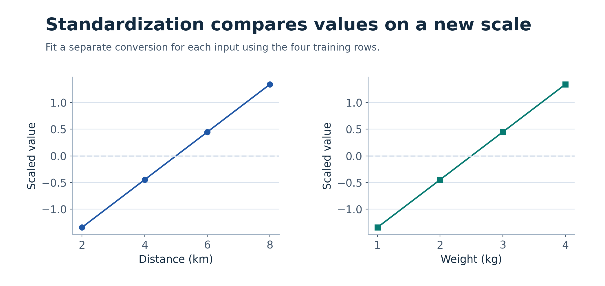
Open full-size image ↗👀 Read the visual. Start with the dashed zero line. Points below it have an original value below the training average.
👉 Use what you see. Use the training average and spread to prepare each new delivery before it reaches the model.
🎯 Goal. How does the same delivery example work if we measure distances and weights relative to their training average? The model still predicts minutes.
📋 Sample data
| distance_km | weight_kg | delivery_minutes |
|---|---|---|
| 2 | 1 | 19 |
| 4 | 3 | 30 |
| 6 | 2 | 29 |
| 8 | 4 | 40 |
| 10 | 1 | 33 |
| 12 | 3 | 44 |
▶️ Run. Unzip the lesson files and open a terminal in that folder. Install the lesson’s packages with python -m pip install -r requirements.txt, then run python lesson.py.
🔹 Steps in the script
- Read the practice deliveries and their measured times.
- Use the first four trips to learn and keep the last two for checking.
- Find the training average and spread for each input. Express each row in those units.
- Teach the model how the scaled inputs relate to the measured minutes.
- Read the new trips and scale them using the training values.
- Compare estimates with the two known times, then read the estimates for your new trips.
✅ Check. Look for New deliveries and their predicted minutes in the output excerpt below.
New deliveries and their predicted minutes
distance_km weight_kg scaled_distance scaled_weight predicted_minutes
5 2 0.00 -0.45 27.5🧪 Change one input. In new_inputs.csv, try 5 km and 2 kg, then try 12 km and 4 kg. Read the scaled values and predicted minutes in the same row.
Read the prediction. The input scale changes and this example still predicts 27.5 minutes for the new delivery. Standardization works for this calculation even when the data is skewed.
🧭 When to use?
| Lesson name | What you’ll do | Download |
|---|---|---|
| When to use? Practice | Compare several transformations using the same rows and pick one based on validation error. | ⬇️ Lesson ZIP |
Run Which Technique Should You Use? to compare the original values and both scalers under the same validation procedure. Choose the setup on validation rows and measure the chosen model on separate final test rows.
🏷️ 1.3.6 Convert Categorical Data
| Lesson name | What you’ll do | Download |
|---|---|---|
| 1.3.6 Convert Categorical Data Practice | Turn labels such as color into numerical columns a model can read. | ⬇️ Lesson ZIP |

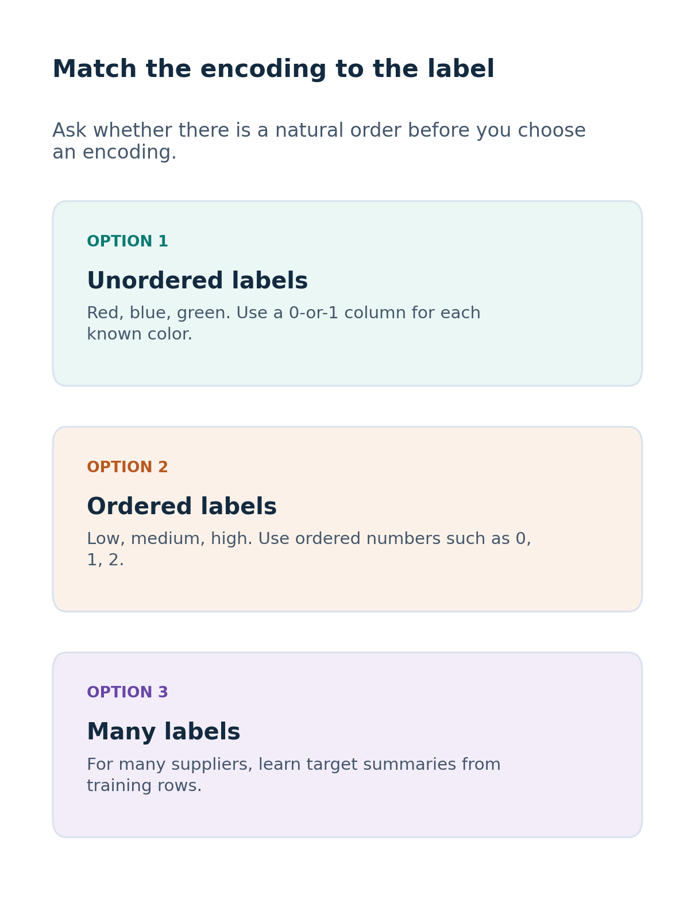
👀 Read the visual. Ask whether there is a natural order before you choose an encoding.
👉 Use what you see. Low < Medium < High is meaningful. Use one-hot encoding if giving the labels an order would invent a ranking.
🌈 One-Hot Encoding (For Unordered Categories)
| Lesson name | What you’ll do | Download |
|---|---|---|
| One-Hot Encoding (For Unordered Categories) Practice | Give each known color its own 0-or-1 column and try a new color. | ⬇️ Lesson ZIP |

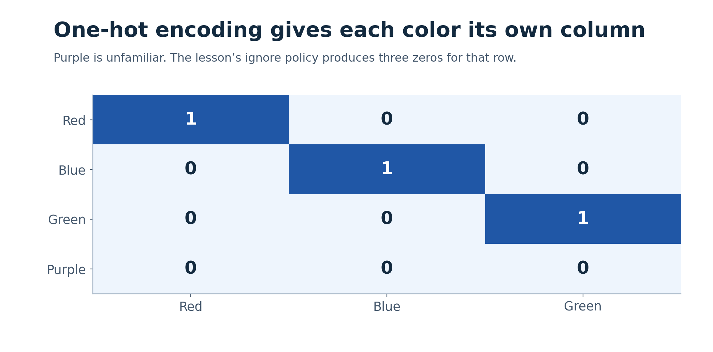
Open full-size image ↗👀 Read the visual. Find the 1 in the red row. Each known color activates a different column.
👉 Use what you see. Find the purple row in the script’s result. The encoder gives it three zeros because purple never appeared in training.
🎯 Goal. How many orders might a product receive if the only input is its color? Turn each color name into numbers the model can read.
📋 Sample data
| color | orders |
|---|---|
| Red | 20 |
| Blue | 12 |
| Green | 15 |
| Red | 22 |
| Blue | 14 |
| Green | 16 |
| Red | 23 |
▶️ Run. Unzip the lesson files and open a terminal in that folder. Install the lesson’s packages with python -m pip install -r requirements.txt, then run python lesson.py.
🔹 Steps in the script
- Read the CSV and check its inputs, including color, orders.
- Set aside the check rows before the model learns.
- Learn the conversion on the training inputs before applying it to a new row.
- Teach the model from the training inputs and the recorded order count.
- Apply the fitted model to the new CSV rows and print a result for each row.
✅ Check. Look for Original color Red Blue Green in the output excerpt below.
Swipe or scroll to see every column.
| Original color | Red | Blue | Green |
|---|---|---|---|
| Red | 1 | 0 | 0 |
| Blue | 0 | 1 | 0 |
🧪 Change one input. In new_inputs.csv, enter Red, Blue and an unfamiliar color such as Purple. See the encoded columns and predicted orders for each one.
🐍 Complete script from the ZIP
"""
One-Hot Encoding (For Unordered Categories)
Give each known color its own 0-or-1 column and try a new color.
Run: python lesson.py
In new_inputs.csv, enter Red, Blue and an unfamiliar color such as Purple. See the encoded columns and predicted orders for each one.
"""
from pathlib import Path
import pandas as pd
from sklearn.linear_model import LinearRegression
from sklearn.preprocessing import OneHotEncoder
input_path = Path(__file__).resolve().with_name("sample.csv")
new_path = Path(__file__).resolve().with_name("new_inputs.csv")
# 1. Read the CSV and check its inputs, including color, orders.
products = pd.read_csv(input_path)
# 2. Set aside the check rows before the model learns.
training = products.iloc[:6]
checking = products.iloc[6:]
# An unfamiliar category can still pass through the encoder.
encoder = OneHotEncoder(
categories=[["Red", "Blue", "Green"]], handle_unknown="ignore", sparse_output=False
)
# 3. Learn the conversion on the training inputs before applying it to a new row.
training_bits = encoder.fit_transform(training[["color"]])
colors = pd.DataFrame({"color": ["Red", "Blue", "Green", "Purple"]})
bits = encoder.transform(colors).astype(int)
encoding_table = pd.DataFrame(bits, columns=["Red", "Blue", "Green"])
encoding_table.insert(0, "Original color", colors["color"])
# 4. Teach the model from the training inputs and the recorded order count.
model = LinearRegression().fit(training_bits, training["orders"])
# 5. Apply the fitted model to the new CSV rows and print a result for each row.
test_colors = pd.read_csv(new_path)
fresh_bits = encoder.transform(test_colors)
estimates = model.predict(fresh_bits)
results = test_colors.copy()
results[["Red", "Blue", "Green"]] = fresh_bits.astype(int)
results["Predicted orders"] = estimates.round(1)
print(encoding_table.to_string(index=False))
print(results.to_string(index=False))Read the table. Red is 1, 0, 0. Purple has no column because it was absent from training. The example still returns an estimate, but the model has learned nothing specific about Purple.
🪜 Label Encoding (For Ordered Categories)
| Lesson name | What you’ll do | Download |
|---|---|---|
| Label Encoding (For Ordered Categories) Practice | Turn Low, Medium and High into ordered numbers before predicting a review action. | ⬇️ Lesson ZIP |
Encode ordered priority values low → medium → high. Use LabelEncoder separately for the answer column when integer class IDs are needed.
📋 Sample data
| priority | action |
|---|---|
| Low | wait |
| Low | wait |
| Medium | wait |
| Medium | review |
| High | review |
| High | review |
| High | review |
▶️ Run. Unzip the lesson files and open a terminal in that folder. Install the lesson’s packages with python -m pip install -r requirements.txt, then run python lesson.py.
🔹 Steps in the script
- Read the CSV and check its inputs, including priority, action.
- Set aside the check rows before the model learns.
- Teach the model from the training inputs and the boarding priority.
- Apply the fitted model to the new CSV rows and print a result for each row.
✅ Check. Look for Priority codes: [0.0, 1.0, 2.0] in the output excerpt below.
Priority codes: [0.0, 1.0, 2.0]
Held-out label: ['review']
priority action🧪 Change one input. Try changing priority from Low to High in new_inputs.csv. Compare the new output.
💡 Takeaway. The input uses OrdinalEncoder because priority has a meaningful order. LabelEncoder maps the labels and reverses the prediction.
🎯 Target Encoding (For High-Cardinality Categories)
| Lesson name | What you’ll do | Download |
|---|---|---|
| Target Encoding (For High-Cardinality Categories) Practice | Summarize each supplier by its learned delay rate and try a supplier the model has never seen. | ⬇️ Lesson ZIP |
Generate batches with repeated supplier IDs and different delay rates. Fit a cross-fitted target encoder inside a pipeline. Inspect the value used for an unseen supplier.
Replace a supplier name with a number based on how often its training orders were delayed. If 2 of 5 orders were delayed, the simple rate is 2 ÷ 5 = 0.40. The encoder adjusts rates for small groups and computes training values without using the row’s own answer.
📋 Sample data. Preview of the first 5 of 72 rows.
| supplier | delayed |
|---|---|
| S00 | 1 |
| S01 | 1 |
| S02 | 1 |
| S03 | 1 |
| S04 | 0 |
▶️ Run. Unzip the lesson files and open a terminal in that folder. Install the lesson’s packages with python -m pip install -r requirements.txt, then run python lesson.py.
🔹 Steps in the script
- Read the CSV and check its inputs, including supplier, delayed.
- Set aside the check rows before the model learns.
- Fit the model on the prepared training rows. Keep it for the checks below.
- Apply the fitted model to the new CSV rows and print a result for each row.
✅ Check. Look for supplier delayed in the output excerpt below.
| supplier | delayed |
|---|---|
| S00 | 1 |
| S01 | 1 |
🧪 Change one input. Enter S00 and a supplier name such as New Supplier. Compare their encoded values and estimated chances of delay.
💡 Takeaway. The encoder estimates a smoothed training target rate. The training transform inside the pipeline uses cross-fitting. If the real task predicts completely new suppliers, group the evaluation split by supplier.
Read one row. The first number belongs to supplier S00. The second is the value used for an unseen supplier. These numbers represent training delay rates, adjusted by the encoder.
✍️ 1.3.7 Text Data Cleaning
| Lesson name | What you’ll do | Download |
|---|---|---|
| 1.3.7 Text Data Cleaning Practice | Clean the capitalization and punctuation in support messages before classifying them. | ⬇️ Lesson ZIP |

👀 Read the visual. Use the same text processing for every message.
👉 Use what you see. Try a billing message next. See which words the model can count using its training vocabulary.
🔡 Convert to lowercase & remove punctuation
| Lesson name | What you’ll do | Download |
|---|---|---|
| Convert to lowercase & remove punctuation Practice | Compare the original and cleaned message, then see which category the model predicts. | ⬇️ Lesson ZIP |

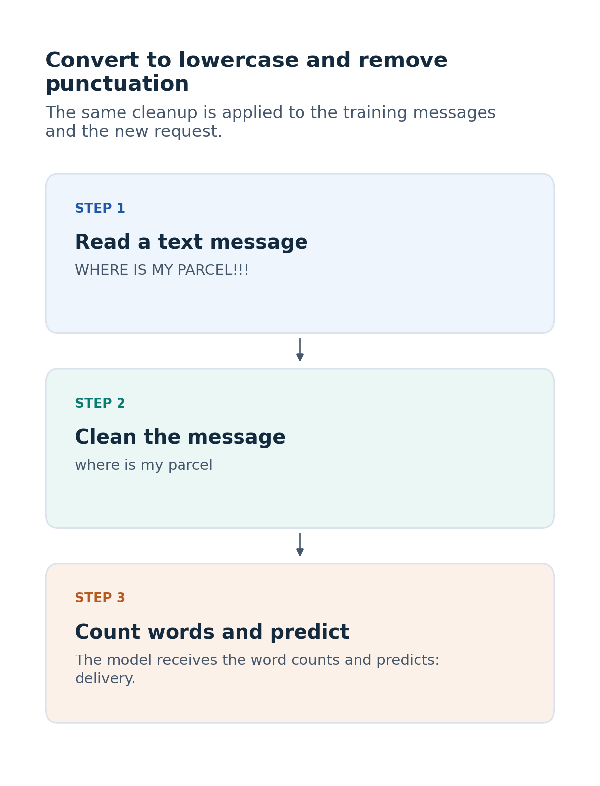
👀 Read the visual. Compare the first and second steps. The punctuation disappears and the letters become lowercase before the model receives the counts.
👉 Use what you see. Try the refund message. Compare its cleaned words and category with the parcel message.
🎯 Goal. Is WHERE IS MY PARCEL!!! a delivery or billing message? The model needs numbers, so we clean the text and count words first.
📋 Sample data
| message | category |
|---|---|
| MY Parcel Is Late!!! | delivery |
| Where is my PACKAGE? | delivery |
| The parcel never arrived. | delivery |
| Please REFUND my payment! | billing |
| My invoice is WRONG? | billing |
| I was charged twice. | billing |
| Where is my parcel? | delivery |
| Please refund this charge! | billing |
▶️ Run. Unzip the lesson files and open a terminal in that folder. Install the lesson’s packages with python -m pip install -r requirements.txt, then run python lesson.py.
🔹 Steps in the script
- Read the support messages and their known categories.
- Keep the same lowercase and punctuation rules for training and new messages.
- Set aside the check rows before the model learns.
- Teach the model from the training inputs and the known message category.
- Apply the fitted model to the new CSV rows and print a result for each row.
✅ Check. Read the original message, the cleaned message and the predicted category on the same row.
Original message Cleaned message
MY Parcel Is Late!!! my parcel is late
Raw message Clean message Prediction🧪 Change one input. Try WHERE IS MY PARCEL!!! and check that cleanup produces where is my parcel.
🐍 Complete script from the ZIP
"""
Convert to lowercase & remove punctuation
Compare the original and cleaned message, then see which category the model predicts.
Run: python lesson.py
Try WHERE IS MY PARCEL!!! and Please refund my card charge. Read the cleaned message and its category.
"""
from pathlib import Path
import re
import pandas as pd
from sklearn.feature_extraction.text import CountVectorizer
from sklearn.linear_model import LogisticRegression
input_path = Path(__file__).resolve().with_name("sample.csv")
new_path = Path(__file__).resolve().with_name("new_inputs.csv")
# 1. Read the support messages and their known categories.
messages = pd.read_csv(input_path)
# 2. Keep the same lowercase and punctuation rules for training and new messages.
def clean_message(text):
lower = text.lower()
words = re.sub(r"[^\w\s]|_", " ", lower)
return " ".join(words.split())
before_after = pd.DataFrame(
{
"Original message": [messages.iloc[0]["message"]],
"Cleaned message": [clean_message(messages.iloc[0]["message"])],
}
)
print(before_after.to_string(index=False))
# 3. Set aside the check rows before the model learns.
training = messages.iloc[:6]
checking = messages.iloc[6:]
counts = CountVectorizer(preprocessor=clean_message)
# Learn the needed values here. New rows use transform with these saved values.
word_counts = counts.fit_transform(training["message"])
# 4. Teach the model from the training inputs and the known message category.
model = LogisticRegression().fit(word_counts, training["category"])
# 5. Apply the fitted model to the new CSV rows and print a result for each row.
raw_messages = pd.read_csv(new_path)["message"].tolist()
predictions = model.predict(counts.transform(raw_messages))
results = pd.DataFrame(
{
"Raw message": raw_messages,
"Clean message": [clean_message(text) for text in raw_messages],
"Prediction": predictions,
}
)
print(results.to_string(index=False))Read the prediction. The new message is predicted as delivery. counts.transform(...) reuses the training vocabulary and applies the same cleaning to the new message.
🧽 Remove stop words (e.g., "the", "and", "is")
| Lesson name | What you’ll do | Download |
|---|---|---|
| Remove stop words (e.g., "the", "and", "is") Practice | Drop selected common words such as the and is, then test a delivery or billing message. | ⬇️ Lesson ZIP |
Inspect the tokens before and after removing a small stop list. Keep the word ‘not’ so it can retain meaning in a larger dataset.
📋 Sample data
| message | category |
|---|---|
| MY Parcel Is Late!!! | delivery |
| Where is my PACKAGE? | delivery |
| The parcel never arrived. | delivery |
| Please REFUND my payment! | billing |
| My invoice is WRONG? | billing |
| I was charged twice. | billing |
| Where is my parcel? | delivery |
| Please refund this charge! | billing |
▶️ Run. Unzip the lesson files and open a terminal in that folder. Install the lesson’s packages with python -m pip install -r requirements.txt, then run python lesson.py.
🔹 Steps in the script
- Read the support messages and their known categories.
- Print the result next to the input values so you can compare them.
- Set aside the check rows before the model learns.
- Teach the model from the training inputs and the known message category.
- Apply the fitted model to the new CSV rows and print a result for each row.
✅ Check. Look for Before: ['the', 'parcel', 'is', 'not', 'here', 'and', 'am', 'waiting'] in the output excerpt below.
Before: ['the', 'parcel', 'is', 'not', 'here', 'and', 'am', 'waiting']
After: ['parcel', 'not', 'here', 'am', 'waiting']
Actual: ['delivery', 'billing']🧪 Change one input. Replace one message in new_inputs.csv. Include one delivery message and one billing message.
🔤 Tokenization & Lemmatization
| Lesson name | What you’ll do | Download |
|---|---|---|
| Tokenization & Lemmatization Practice | Split sentences into words and bring a few word variants back to the same form. | ⬇️ Lesson ZIP |
Split a sentence into tokens and apply a short, explicit base-form dictionary. Fit the word-count classifier using the same tokenizer for predictions.
📋 Sample data
| message | category |
|---|---|
| MY Parcel Is Late!!! | delivery |
| Where is my PACKAGE? | delivery |
| The parcel never arrived. | delivery |
| Please REFUND my payment! | billing |
| My invoice is WRONG? | billing |
| I was charged twice. | billing |
| Where is my parcel? | delivery |
| Please refund this charge! | billing |
▶️ Run. Unzip the lesson files and open a terminal in that folder. Install the lesson’s packages with python -m pip install -r requirements.txt, then run python lesson.py.
🔹 Steps in the script
- Read the support messages and their known categories.
- Split text into words, then look up each word’s usual form.
- Set aside the check rows before the model learns.
- Teach the model from the training inputs and the known message category.
- Apply the fitted model to the new CSV rows and print a result for each row.
✅ Check. Look for Tokens: ['late', 'parcel', 'and', 'two', 'charge'] in the output excerpt below.
Tokens: ['late', 'parcel', 'and', 'two', 'charge']
Actual: ['delivery', 'billing']
Predicted: ['delivery', 'billing']🧪 Change one input. Replace one message in new_inputs.csv. Include one delivery message and one billing message.
💡 Takeaway. This small dictionary covers the words in the exercise. For varied text, use and test a language-aware lemmatizer.
🔢 Convert Text to Numerical Representation
| Lesson name | What you’ll do | Download |
|---|---|---|
| Convert Text to Numerical Representation Practice | Compare plain word counts and weighted word counts for short messages. | ⬇️ Lesson ZIP |
Use the same messages to compare two ways of turning words into numbers. The combined script prints a raw count and a TF-IDF weight for the word parcel. Follow the same row before comparing the two values.
📋 Sample data
| message | category |
|---|---|
| MY Parcel Is Late!!! | delivery |
| Where is my PACKAGE? | delivery |
| The parcel never arrived. | delivery |
| Please REFUND my payment! | billing |
| My invoice is WRONG? | billing |
| I was charged twice. | billing |
| Where is my parcel? | delivery |
| Please refund this charge! | billing |
🧮 CountVectorizer
| Lesson name | What you’ll do | Download |
|---|---|---|
| CountVectorizer Practice | Make one column for each learned word and count it in a new message. | ⬇️ Lesson ZIP |
▶️ Run. Unzip the lesson and follow its README to run python lesson.py.
- Read the CSV of messages and known categories. Set aside the check rows.
- Learn the vocabulary and see how CountVectorizer represents one word.
- Use the same fitted vectorizer for the check rows and new messages.
✅ Check. Look for CountVectorizer parcel feature: 1. The first training message contains parcel once.
🧪 Change one input. In new_inputs.csv, change the first message to WHERE ARE MY PACKAGES?. Rerun the script and find the edited message beside its predicted category.
📊 TF-IDF
| Lesson name | What you’ll do | Download |
|---|---|---|
| TF-IDF Practice | Make words that stand out across messages count more than words that appear everywhere. | ⬇️ Lesson ZIP |
▶️ Run. Unzip the lesson and follow its README to run python lesson.py.
- Read the CSV of messages and known categories. Set aside the check rows.
- Learn the vocabulary and see how TfidfVectorizer represents one word.
- Use the same fitted vectorizer for the check rows and new messages.
✅ Check. Look for TfidfVectorizer parcel feature: 0.52. This is the rounded weight for parcel in the first training message.
🧪 Change one input. In new_inputs.csv, change the first message to WHERE ARE MY PACKAGES?. Rerun the script and find the edited message beside its predicted category.
🧬 Word Embeddings (Word2Vec, BERT, etc.)
| Lesson name | What you’ll do | Download |
|---|---|---|
| Word Embeddings (Word2Vec, BERT, etc.) Practice | Represent a message with a short list of numbers and feed it into a classifier. | ⬇️ Lesson ZIP |
Fit Word2Vec only on original training sentences. Average their word vectors into one row per message, then train a message classifier.
Advanced. An embedding is a list of numbers that represents something. Here one list represents one message.
📋 Sample data
| message | category |
|---|---|
| MY Parcel Is Late!!! | delivery |
| Where is my PACKAGE? | delivery |
| The parcel never arrived. | delivery |
| Please REFUND my payment! | billing |
| My invoice is WRONG? | billing |
| I was charged twice. | billing |
| Where is my parcel? | delivery |
| Please refund this charge! | billing |
▶️ Run. Unzip the lesson files and open a terminal in that folder. Install the lesson’s packages with python -m pip install -r requirements.txt, then run python lesson.py.
🔹 Steps in the script
- Read the support messages and their known categories.
- Set aside the check rows before the model learns.
- Teach the model from the training inputs and the known message category.
- Apply the fitted model to the new CSV rows and print a result for each row.
✅ Check. Look for Training matrix: (6, 8) in the output excerpt below.
Training matrix: (6, 8)
Held-out predictions: ['delivery', 'billing']
message predicted🧪 Change one input. Replace one message in new_inputs.csv. Include one delivery message and one billing message.
💡 Takeaway. An 8-element row enters the classifier. A tiny corpus illustrates the mechanics. Use more original text before comparing representation quality.
Create a tiny randomly initialized BERT model to inspect contextual representations without downloading weights. Learn the token vocabulary from the original training messages, pool their token vectors, and fit a classifier.
Advanced. An embedding is a list of numbers that represents something. Here one list represents one message.
📋 Sample data
| message | category |
|---|---|
| MY Parcel Is Late!!! | delivery |
| Where is my PACKAGE? | delivery |
| The parcel never arrived. | delivery |
| Please REFUND my payment! | billing |
| My invoice is WRONG? | billing |
| I was charged twice. | billing |
| Where is my parcel? | delivery |
| Please refund this charge! | billing |
▶️ Run. Unzip the lesson files and open a terminal in that folder. Install the lesson’s packages with python -m pip install -r requirements.txt, then run python lesson.py.
🔹 Steps in the script
- Read the support messages and their known categories.
- Set aside the check rows before the model learns.
- Teach the model from the training inputs and the known message category.
- Apply the fitted model to the new CSV rows and print a result for each row.
✅ Check. Look for Training matrix: (6, 16) in the output excerpt below.
Training matrix: (6, 16)
Held-out predictions: ['delivery', 'billing']
message predicted🧪 Change one input. Replace one message in new_inputs.csv. Include one delivery message and one billing message.
💡 Takeaway. The attention mask excludes padding. This randomly initialized encoder demonstrates the mechanics and has no learned language knowledge.
✅ 1.3.8 Handle Boolean Data
| Lesson name | What you’ll do | Download |
|---|---|---|
| 1.3.8 Handle Boolean Data Practice | Make mixed yes/no entries consistent before a model uses them. | ⬇️ Lesson ZIP |

👀 Read the visual. Handle each entry based on its meaning.
👉 Use what you see. A false value is a known 0. Leave an unknown entry missing until a rule handles it.
🔢 Convert Boolean values to standard format (1 or 0)
| Lesson name | What you’ll do | Download |
|---|---|---|
| Convert Boolean values to standard format (1 or 0) Practice | Change different spellings of yes and no into 1 and 0 and flag unrecognized values. | ⬇️ Lesson ZIP |
Create and read a short signup CSV. Map the original spellings to numeric flags before modeling.
📋 Sample data
| signed_up |
|---|
| Yes |
| no |
| true |
| 0 |
| unknown |
▶️ Run. Unzip the lesson files and open a terminal in that folder. Install the lesson’s packages with python -m pip install -r requirements.txt, then run python lesson.py.
🔹 Steps in the script
- Read the CSV and check its inputs, including signed_up.
- Give different spellings of the same value one consistent form.
✅ Check. Look for signed_up flag in the output excerpt below.
| signed_up | flag |
|---|---|
| Yes | 1.0 |
| no | 0.0 |
🧪 Change one input. Change signed_up in sample.csv, for example from Yes to true. Compare the printed rows.
💡 Takeaway. The unknown entry stays missing so the next example can handle it explicitly.
🩹 Fill missing values with mode
| Lesson name | What you’ll do | Download |
|---|---|---|
| Fill missing values with mode Practice | Fill an unknown signup flag with the most common training value before making a prediction. | ⬇️ Lesson ZIP |
Read mixed Boolean spellings, map them to 0/1, and fit the most-frequent imputer inside a classifier.
📋 Sample data
| signed_up | clicked |
|---|---|
| Yes | 1 |
| No | 0 |
| True | 1 |
| 0 | 0 |
| 1 | 1 |
| unknown | 0 |
▶️ Run. Unzip the lesson files and open a terminal in that folder. Install the lesson’s packages with python -m pip install -r requirements.txt, then run python lesson.py.
🔹 Steps in the script
- Read the CSV and check its inputs, including signed_up, clicked.
- Give different spellings of the same value one consistent form.
- Fit the model on the prepared training rows. Keep it for the checks below.
- Apply the fitted model to the new CSV rows and print a result for each row.
✅ Check. Look for signed_up flag in the output excerpt below.
| signed_up | flag |
|---|---|
| Yes | 1.0 |
| No | 0.0 |
🧪 Change one input. Try Yes, 0 and an unknown value in new_inputs.csv.
⏳ 1.3.9 Handle Date/Time Data
| Lesson name | What you’ll do | Download |
|---|---|---|
| 1.3.9 Handle Date/Time Data Practice | Read written dates and timestamps so Python can use them consistently. | ⬇️ Lesson ZIP |

👀 Read the visual. Use the date and time 2025-02-05 09:00 as a worked example.
👉 Use what you see. Change 09:00 to 17:00 and find the difference in the Hour column.
📅 Convert to datetime format
| Lesson name | What you’ll do | Download |
|---|---|---|
| Convert to datetime format Practice | Parse two date formats and a Unix timestamp, and spot an unreadable value. | ⬇️ Lesson ZIP |
Read two timestamp formats plus a Unix timestamp. Convert valid values and report a malformed date.
▶️ Run. Unzip the lesson files and open a terminal in that folder. Install the lesson’s packages with python -m pip install -r requirements.txt, then run python lesson.py.
🔹 Steps in the script
- Read the raw date strings, including different formats and an invalid value.
- Print the result next to the input values so you can compare them.
✅ Check. Look for ['2025-02-03', '2025-02-04', 'invalid date', '2023-02-10'] in the output excerpt below.
['2025-02-03', '2025-02-04', 'invalid date', '2023-02-10']🧪 Change one input. Enter 12/31/2025, 2025-12-31 and an unreadable date. Compare the results.
🗓️ Extract useful features (Year, Month, Day, Weekday, Hour, etc.)
| Lesson name | What you’ll do | Download |
|---|---|---|
| Extract useful features (Year, Month, Day, Weekday, Hour, etc.) Practice | Turn one timestamp into model inputs such as weekday and hour. | ⬇️ Lesson ZIP |
Turn timestamp strings into five features. Use hour and weekday to fit a delivery-volume model, then predict a new hour using the same parser.
📋 Sample data
| timestamp | orders |
|---|---|
| 2025-02-03 08:00 | 10 |
| 2025-02-03 10:00 | 14 |
| 2025-02-04 08:00 | 13 |
| 2025-02-04 10:00 | 17 |
▶️ Run. Unzip the lesson files and open a terminal in that folder. Install the lesson’s packages with python -m pip install -r requirements.txt, then run python lesson.py.
🔹 Steps in the script
- Read the timestamp and recorded order count for each row.
- Read each timestamp once and pull out the parts the model can use.
- Teach the model from the training inputs and the recorded order count.
- Apply the fitted model to the new CSV rows and print a result for each row.
✅ Check. Look for Year Month Day Weekday Hour in the output excerpt below.
| Year | Month | Day | Weekday | Hour |
|---|---|---|---|---|
| 2025 | 2 | 3 | 0 | 8 |
| 2025 | 2 | 3 | 0 | 10 |
🧪 Change one input. Try 2025-02-05 09:00 and 2026-01-12 08:30 in new_inputs.csv. Keep the YYYY-MM-DD HH:MM format.
🩹 Handle missing dates using interpolation
| Lesson name | What you’ll do | Download |
|---|---|---|
| Handle missing dates using interpolation Practice | Estimate a missing time-series reading from the readings on either side. | ⬇️ Lesson ZIP |
Put observations on a daily calendar and estimate the missing measurement in a retrospective series.
📋 Sample data
| day | orders |
|---|---|
| 2025-02-01 | 10 |
| 2025-02-03 | 16 |
| 2025-02-04 | 19 |
▶️ Run. Unzip the lesson files and open a terminal in that folder. Install the lesson’s packages with python -m pip install -r requirements.txt, then run python lesson.py.
🔹 Steps in the script
- Read the CSV and check its inputs, including day, orders.
- Print the result next to the input values so you can compare them.
✅ Check. Look for observed interpolated in the output excerpt below.
observed interpolated
day
2025-02-01 10.0 10.0🧪 Change one input. Try changing day from 2025-02-01 to 2025-02-04 in sample.csv. Compare the new output.
💡 Takeaway. February 2 gets 13 using both adjacent days. Interpolate a missing measurement on a known schedule. For a live prediction on February 2, restrict inputs to data actually available then.
🔢 1.3.10 Handle Large Numbers
| Lesson name | What you’ll do | Download |
|---|---|---|
| 1.3.10 Handle Large Numbers Practice | Check how a log makes large numeric values easier to compare. | ⬇️ Lesson ZIP |

👀 Read the visual. Start with the count 100,000,000.
👉 Use what you see. Use scientific notation for readability. Apply a transformation when the model should see a different scale.
📉 Apply Log Transformation (if data is highly skewed)
| Lesson name | What you’ll do | Download |
|---|---|---|
| Apply Log Transformation (if data is highly skewed) Practice | Use a log so a few very large readings have less influence on the scale. | ⬇️ Lesson ZIP |
Run the traffic model below and compare the raw counts with the log features. Try log1p when the feature can contain zero.
🔬 Convert to scientific notation (if values are too large)
| Lesson name | What you’ll do | Download |
|---|---|---|
| Convert to scientific notation (if values are too large) Practice | Display large numbers in compact scientific notation and read the original value alongside them. | ⬇️ Lesson ZIP |
Read large traffic values and long event IDs. Display traffic in scientific notation and send its log-transformed numeric form into regression.
📋 Sample data
| event_id | visits | server_cost |
|---|---|---|
| 123456789012345 | 100 | 8 |
| 123456789012346 | 10000 | 15 |
| 123456789012347 | 1000000 | 19 |
| 123456789012348 | 12500000000 | 30 |
▶️ Run. Unzip the lesson files and open a terminal in that folder. Install the lesson’s packages with python -m pip install -r requirements.txt, then run python lesson.py.
🔹 Steps in the script
- Read the CSV and check its inputs, including event_id, visits, server_cost.
- Print the result next to the input values so you can compare them.
- Fit the model on the prepared training rows. Keep it for the checks below.
✅ Check. Look for First ID: 123456789012345 in the output excerpt below.
First ID: 123456789012345
Traffic display: ['1.000e+02', '1.000e+04', '1.000e+06', '1.250e+10']
Numeric log features: [4.62, 9.21, 13.82, 23.25]🧪 Change one input. Try changing event_id from 123456789012345 to 123456789012347 in sample.csv. Compare the new output.
💡 Takeaway. Scientific notation changes the display. The log changes the numeric feature. IDs remain exact strings and stay out of the model.
🗂️ Data Types, Issues & Preprocessing Techniques
| Lesson name | What you’ll do | Download |
|---|---|---|
| Data Types, Issues & Preprocessing Techniques Practice | Turn a nested record into a flat row and identify the fields a model can use. | ⬇️ Lesson ZIP |
| PDF data type | Example you can try | Common issue and fix |
|---|---|---|
| 🔢 Numeric (int, float) | 42, 3.14, -100, 0.001 |
Check missing values and outliers, then scale when useful. |
| 🏷️ Categorical (enum, labels) | Red, Blue, Yes, No |
Standardize spelling and choose one-hot or ordinal encoding. |
| ✍️ Text (strings) | Hello, Data Science!, abc123 |
Test case and punctuation changes, stop words, TF-IDF, or embeddings. |
| ✅ Boolean (True/False) | True, False, 1, 0, Yes, No |
Map consistently and treat missing values explicitly. |
| 🔭 Large Numbers (BigInt, Long Float) | 123456789012345, 9.87654321e+10 |
Preserve IDs, format large measurements for display, and try log for skew. |
| 📅 Datetime (Timestamps, Dates) | 2024-02-10, 10:30 AM, 1676025600 |
Parse formats explicitly and derive year, month, day, weekday, or hour. |
| 🌍 Geospatial (Lat/Long, Addresses) | (37.7749, -122.4194), New York, USA |
Check bounds and unmatched addresses. Use a permitted geocoder for new data. |
| 🧱 Complex Data (JSON, XML, Dictionaries) | {"name": "John", "age": 25} |
Flatten nested data and check missing keys. |
| 🖼️ Images (Pixels, Matrices) | RGB(255, 0, 0), [[0.1, 0.2], [0.3, 0.4]] |
Resize, try grayscale, and extract pixels or CNN features. |
| 🎧 Audio (Waves, Spectrograms) | WAV, MP3 | Inspect sample rate and noise, then build a spectrogram or MFCCs. |
| 🎬 Video (Frames, Sequences) | MP4 or image sequence | Sample frames in order and build CNN features for a sequence model such as an LSTM. |
🌍 Geospatial (Lat/Long, Addresses)
| Lesson name | What you’ll do | Download |
|---|---|---|
| Geospatial (Lat/Long, Addresses) Practice | Look up coordinates for three depots and use them to estimate delivery time. | ⬇️ Lesson ZIP |
Use the local list of depots to find latitude and longitude. Separate addresses with coordinates from those that need review.
📍 Convert to coordinates
| Lesson name | What you’ll do | Download |
|---|---|---|
| Convert to coordinates Practice | Look up the latitude and longitude of a known depot. | ⬇️ Lesson ZIP |
🧪 Change one input. In new_inputs.csv, change North Depot to Unknown Depot. Follow the README to rerun the script. The unknown address needs review and gets no estimate.
🌐 Geocoding APIs
| Lesson name | What you’ll do | Download |
|---|---|---|
| Geocoding APIs Reference | Run the offline lookup and read the walkthrough for replacing it with a live provider. | ⬇️ Lesson ZIP |
Open the ZIP’s README for the manual walkthrough. The runnable example uses a local depot lookup.
🧱 Complex Data (JSON, XML, Dictionaries)
| Lesson name | What you’ll do | Download |
|---|---|---|
| Complex Data (JSON, XML, Dictionaries) Practice | Read the same delivery fields from a nested dictionary, JSON, and XML. | ⬇️ Lesson ZIP |
Resolve some sample addresses using a small offline lookup, preserve missing coordinates, and flatten two nested input formats. Feed the extracted fields into a simple model.
📋 Sample data
| address | weight_kg | minutes |
|---|---|---|
| Depot North | 1 | 10 |
| Depot South | 3 | 16 |
| Depot North | — | 12 |
| Unknown | 2 | 15 |
▶️ Run. Unzip the lesson files and open a terminal in that folder. Install the lesson’s packages with python -m pip install -r requirements.txt, then run python lesson.py.
🔹 Steps in the script
- Read the weights in kilograms and the delivery times in minutes.
- Print the result next to the input values so you can compare them.
- Teach the model from the training inputs and delivery time in minutes.
✅ Check. Look for address minutes parcel.kg latitude longitude in the output excerpt below.
| address | minutes | parcel.kg | latitude | longitude |
|---|---|---|---|---|
| Depot North | 10 | 1.0 | 59.35 | 18.05 |
| Depot South | 16 | 3.0 | 59.28 | 18.02 |
🧪 Change one input. Change address in sample.csv, for example from Depot North to Depot South. Compare the printed rows.
🖼️ Images (Pixels, Matrices)
| Lesson name | What you’ll do | Download |
|---|---|---|
| Images (Pixels, Matrices) Practice | Turn simple color pictures into a small matrix of numbers. | ⬇️ Lesson ZIP |

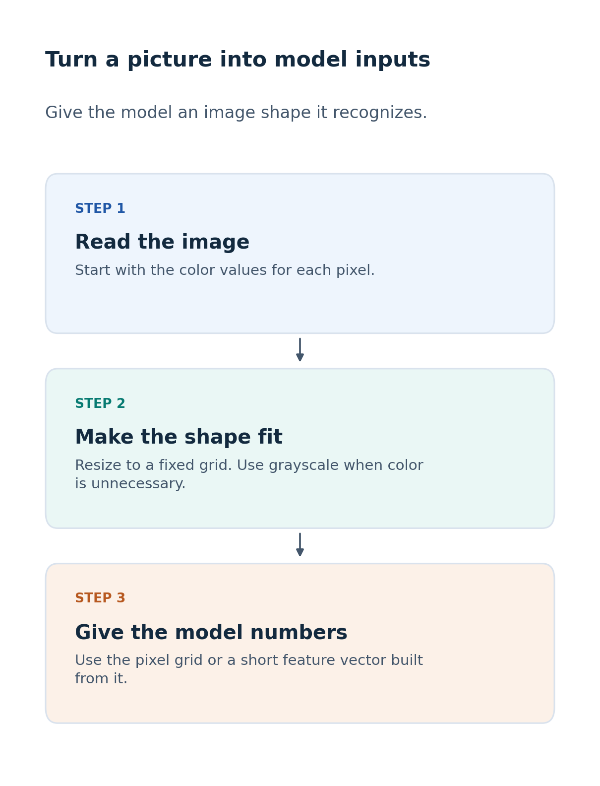
👀 Read the visual. Give the model an image shape it recognizes.
👉 Use what you see. If a new picture is larger, apply the same resize rule before predicting.
Create two tiny RGB images, resize and convert them to grayscale, then fit a model on the pixel vectors and predict a new image.
▶️ Run. Unzip the lesson files and open a terminal in that folder. Install the lesson’s packages with python -m pip install -r requirements.txt, then run python lesson.py.
🔹 Steps in the script
- Read the CSV and check its inputs, including red, green, blue.
- Fit the model on the prepared training rows. Keep it for the checks below.
- Apply the fitted model to the new CSV rows and print a result for each row.
✅ Check. Look for Image matrix becomes one row: (4, 16) in the output excerpt below.
Image matrix becomes one row: (4, 16)
First normalized pixels: [0.059, 0.059, 0.059, 0.059]
New picture: ['light', 'dark', 'light']🧪 Change one input. Edit the red, green, and blue numbers (0–255) in new_inputs.csv to predict dark or light.
🧩 Image embeddings
| Lesson name | What you’ll do | Download |
|---|---|---|
| Image embeddings Practice | Summarize a drawing with two numeric measurements and use them to predict its direction. | ⬇️ Lesson ZIP |
🎯 Goal. Can two easy measurements describe a picture well enough to tell whether a bar is sideways or upright? A short list of numbers that represents a picture is an embedding.
📋 Sample data
| direction | position |
|---|---|
| Sideways | 1 |
| Sideways | 3 |
| Upright | 1 |
| Upright | 3 |
▶️ Run. Unzip the lesson files and open a terminal in that folder. Install the lesson’s packages with python -m pip install -r requirements.txt, then run python lesson.py.
🔹 Steps in the script
- Read the CSV and check its inputs, including direction, position.
- Read the new CSV rows, then apply the rules from the sample.
- Fit the model on the prepared training rows. Keep it for the checks below.
- Plot the values so you can see how they compare.
✅ Check. Look for Vertical spread Horizontal spread Label or prediction in the output excerpt below.
Vertical spread Horizontal spread Label or prediction
0.00 1.12 Sideways
0.00 1.12 Sideways🧪 Change one input. Try changing direction from Upright to Sideways in new_inputs.csv. Compare the new output.
 Open full-size image ↗
Open full-size image ↗👀 Read the visual. A narrow upright line has vertical spread and no horizontal spread. The classifier receives these two numbers for the third drawing.
👉 Use what you see. Change the orientation of the new drawing and inspect its two numbers before reading the prediction.
A vertical bar spreads lit pixels across several rows. The first number is larger. The model receives the two numbers, then finds the training picture with the closest pair. This exercise uses two hand-picked measurements. A neural image encoder can learn its own measurements.
🎧 Audio (Waves, Spectrograms)
| Lesson name | What you’ll do | Download |
|---|---|---|
| Audio (Waves, Spectrograms) Practice | Create tones, inspect how their pitch looks in a plot, and classify them. | ⬇️ Lesson ZIP |

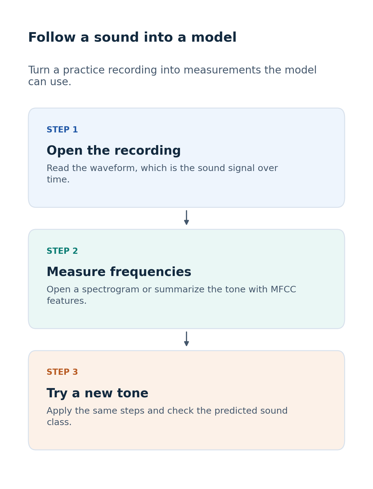
👀 Read the visual. Turn a practice recording into measurements the model can use.
👉 Use what you see. Try a higher pitch and look for a higher band in the spectrogram.
Create four WAV recordings of original tones. Convert each WAV into log-mel and MFCC features, train on the feature rows, and classify a new tone. The same feature extraction works after decoding an MP3 to the same sample rate.
▶️ Run. Unzip the lesson files and open a terminal in that folder. Install the lesson’s packages with python -m pip install -r requirements.txt, then run python lesson.py.
🔹 Steps in the script
- Build a short sound from a frequency in the CSV.
- Read the tone frequencies. Each row describes one sound to make.
- Fit the model on the prepared training rows. Keep it for the checks below.
- Apply the fitted model to the new CSV rows and print a result for each row.
✅ Check. Look for One MFCC row: 8 in the output excerpt below.
One MFCC row: 8
New WAV sound: ['high']
Decoded MP3 sound: ['high']🧪 Change one input. Change the frequency in new_inputs.csv to a value around 280 or 900. The script creates real WAV audio from those numbers and checks an MP3 round trip.
🎬 Video (Frames, Sequences)
| Lesson name | What you’ll do | Download |
|---|---|---|
| Video (Frames, Sequences) Practice | Make a short video from frames and classify which way an object moves. | ⬇️ Lesson ZIP |

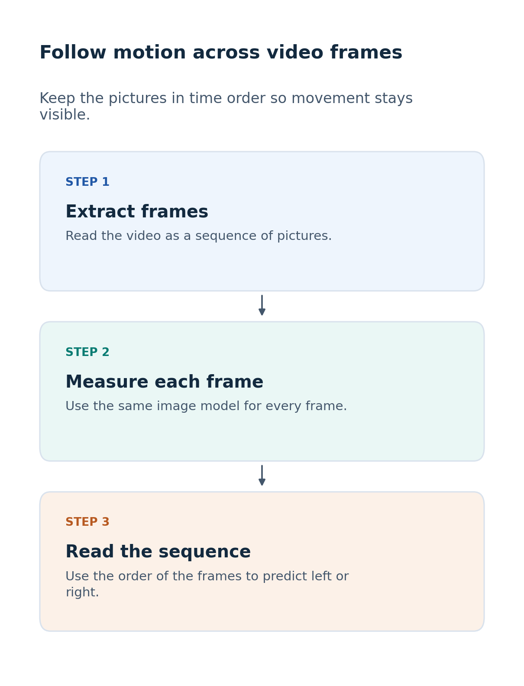
👀 Read the visual. Keep the pictures in time order so movement stays visible.
👉 Use what you see. Check frame order when direction matters. A picture shows position and the sequence shows movement.
Create small moving-dot clips. Use a convolution to extract frame features and an LSTM to classify movement direction from ordered frames. The vectors shown come from the original frame sequence.
▶️ Run. Unzip the lesson files and open a terminal in that folder. Install the lesson’s packages with python -m pip install -r requirements.txt, then run python lesson.py.
🔹 Steps in the script
- Build a short sequence of frames showing one direction of travel.
- Read the CSV and check its inputs, including direction, row.
- Apply the fitted model to the new CSV rows and print a result for each row.
✅ Check. Look for Clips × frames × channels × height × width: (8, 4, 1, 6, 6) in the output excerpt below.
Clips × frames × channels × height × width: (8, 4, 1, 6, 6)
Decoded MP4 direction: [1]
Directions for all new clips: [1, 0]🧪 Change one input. Try changing direction from 1 to 0 in new_inputs.csv. Compare the new output.
💡 Takeaway. Keep all frames from a source clip in the same split. When using MP4, decode frames in order and choose a frame interval before creating the tensor.
ℹ️ Data
| Lesson name | What you’ll do | Download |
|---|---|---|
| Data Practice | Use original sensor readings to see how a numeric transformation changes model inputs. | ⬇️ Lesson ZIP |
These eight transformations use only original measurements. Fit each transformation on training rows and keep the same fitted object for later predictions.
📘 1️⃣ Min-Max Scaling (Normalization)
| Lesson name | What you’ll do | Download |
|---|---|---|
| Min-Max Scaling (Normalization) Practice | Rescale the sensor training range to 0–1 and predict the costs of new readings. | ⬇️ Lesson ZIP |
🎯 Goal. How much might a new reading cost? Signal is the input. Cost is the known answer. Change the signal first, then give the model that changed number.
📋 Sample data
| signal | cost |
|---|---|
| 1 | 10 |
| 5 | 18 |
| 12 | 25 |
| 20 | 31 |
| 35 | 41 |
| 80 | 53 |
| 160 | 64 |
| 10 | 23 |
Showing the first 8 of 9 rows. The CSV has the full sample.
▶️ Run. Unzip the lesson files and open a terminal in that folder. Install the lesson’s packages with python -m pip install -r requirements.txt, then run python lesson.py.
🔹 Steps in the script
- Read the sensor readings and their measured costs.
- Set aside the check rows before the model learns.
- Teach the model from the training inputs and the recorded cost.
- Apply the fitted model to the new CSV rows and print a result for each row.
✅ Check. Look for Min-Max Scaling first two training rows: [[0.0], [0.03]] in the output excerpt below.
Min-Max Scaling first two training rows: [[0.0], [0.03]]
Actual costs: [23, 48]
Predicted costs: [23.9, 37.7]🧪 Change one input. Try a signal reading of 3, 15, or 40 in new_inputs.csv. Compare the predicted cost for each row.

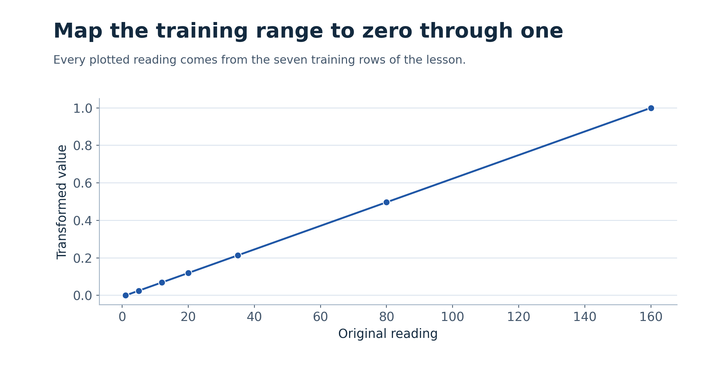
Open full-size image ↗👀 Read the visual. Each dot connects one original measurement to the value used by the model.
👉 Use what you see. Use the first and last dots to check how the training extremes map to 0 and 1.
💡 Takeaway. Compute (x - train_min) / (train_max - train_min) on nonconstant features. The PDF’s [20, 30, 50, 80, 100] becomes [0, .125, .375, .75, 1]. A bounded training range can help some neural-network inputs. For −1 to 1, change feature_range.
📘 2️⃣ Z-Score Standardization (Standardization)
| Lesson name | What you’ll do | Download |
|---|---|---|
| Z-Score Standardization (Standardization) Practice | Measure sensor readings in standard deviations from the training average. | ⬇️ Lesson ZIP |
🎯 Goal. How much might a new reading cost? Signal is the input. Cost is the known answer. Change the signal first, then give the model that changed number.
📋 Sample data
| signal | cost |
|---|---|
| 1 | 10 |
| 5 | 18 |
| 12 | 25 |
| 20 | 31 |
| 35 | 41 |
| 80 | 53 |
| 160 | 64 |
| 10 | 23 |
Showing the first 8 of 9 rows. The CSV has the full sample.
▶️ Run. Unzip the lesson files and open a terminal in that folder. Install the lesson’s packages with python -m pip install -r requirements.txt, then run python lesson.py.
🔹 Steps in the script
- Read the sensor readings and their measured costs.
- Set aside the check rows before the model learns.
- Teach the model from the training inputs and the recorded cost.
- Apply the fitted model to the new CSV rows and print a result for each row.
✅ Check. Look for Z-Score Standardization first two training rows: [[-0.82], [-0.75]] in the output excerpt below.
Z-Score Standardization first two training rows: [[-0.82], [-0.75]]
Actual costs: [23, 48]
Predicted costs: [23.9, 37.7]🧪 Change one input. Try a signal reading of 3, 15, or 40 in new_inputs.csv. Compare the predicted cost for each row.

👀 Read the visual. Each dot connects one original measurement to the value used by the model.
👉 Use what you see. Find where the curve crosses zero. Readings on that side of the training average change sign.
💡 Takeaway. Standardization subtracts the training mean and divides by the training standard deviation. Practice: (70 - 50) / 10 = 2.
📘 3️⃣ Log Transformation (Log Scaling)
| Lesson name | What you’ll do | Download |
|---|---|---|
| Log Transformation (Log Scaling) Practice | Use a log so large sensor readings have less influence on the scale. | ⬇️ Lesson ZIP |
🎯 Goal. How much might a new reading cost? Signal is the input. Cost is the known answer. Change the signal first, then give the model that changed number.
📋 Sample data
| signal | cost |
|---|---|
| 1 | 10 |
| 5 | 18 |
| 12 | 25 |
| 20 | 31 |
| 35 | 41 |
| 80 | 53 |
| 160 | 64 |
| 10 | 23 |
Showing the first 8 of 9 rows. The CSV has the full sample.
▶️ Run. Unzip the lesson files and open a terminal in that folder. Install the lesson’s packages with python -m pip install -r requirements.txt, then run python lesson.py.
🔹 Steps in the script
- Read the sensor readings and their measured costs.
- Set aside the check rows before the model learns.
- Teach the model from the training inputs and the recorded cost.
- Apply the fitted model to the new CSV rows and print a result for each row.
✅ Check. Look for Log Transformation first two training rows: [[0.69], [1.79]] in the output excerpt below.
Log Transformation first two training rows: [[0.69], [1.79]]
Actual costs: [23, 48]
Predicted costs: [26.7, 47.2]🧪 Change one input. Try a signal reading of 3, 15, or 40 in new_inputs.csv. Compare the predicted cost for each row.
 Open full-size image ↗
Open full-size image ↗👀 Read the visual. Each dot connects one original measurement to the value used by the model.
👉 Use what you see. Compare the vertical gaps at the low and high ends. A log gives later increases in the raw reading less space on the transformed scale.
💡 Takeaway. For the PDF’s numeric example, log10([1, 10, 100, 1000]) gives [0, 1, 2, 3]. To use log10(1 + x), the inputs for those outputs are [0, 9, 99, 999]. This pipeline uses natural log with log1p.
📘 4️⃣ Robust Scaling (Median & IQR Scaling)
| Lesson name | What you’ll do | Download |
|---|---|---|
| Robust Scaling (Median & IQR Scaling) Practice | Scale readings using the middle value and the spread of the middle half. | ⬇️ Lesson ZIP |
🎯 Goal. How much might a new reading cost? Signal is the input. Cost is the known answer. Change the signal first, then give the model that changed number.
📋 Sample data
| signal | cost |
|---|---|
| 1 | 10 |
| 5 | 18 |
| 12 | 25 |
| 20 | 31 |
| 35 | 41 |
| 80 | 53 |
| 160 | 64 |
| 10 | 23 |
Showing the first 8 of 9 rows. The CSV has the full sample.
▶️ Run. Unzip the lesson files and open a terminal in that folder. Install the lesson’s packages with python -m pip install -r requirements.txt, then run python lesson.py.
🔹 Steps in the script
- Read the sensor readings and their measured costs.
- Set aside the check rows before the model learns.
- Teach the model from the training inputs and the recorded cost.
- Apply the fitted model to the new CSV rows and print a result for each row.
✅ Check. Look for Robust Scaling first two training rows: [[-0.39], [-0.31]] in the output excerpt below.
Robust Scaling first two training rows: [[-0.39], [-0.31]]
Actual costs: [23, 48]
Predicted costs: [23.9, 37.7]🧪 Change one input. Try a signal reading of 3, 15, or 40 in new_inputs.csv. Compare the predicted cost for each row.

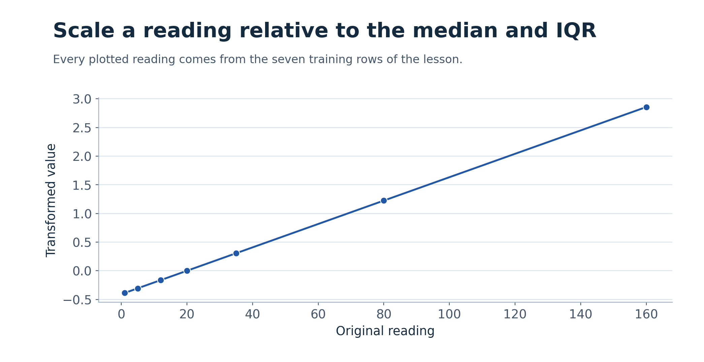
Open full-size image ↗👀 Read the visual. Each dot connects one original measurement to the value used by the model.
👉 Use what you see. Find the training median near zero, then inspect how far the largest reading sits from it.
💡 Takeaway. The transform is (x - median) / IQR. Try the PDF’s [10, 15, 20, 1000] and compare the robust and z-score values for the first three inputs. An extreme can still affect the IQR in tiny samples.
📘 5️⃣ Power Transformations (Box-Cox & Yeo-Johnson)
| Lesson name | What you’ll do | Download |
|---|---|---|
| Power Transformations (Box-Cox & Yeo-Johnson) Practice | Try two power transformations on the same readings and compare the cost predictions. | ⬇️ Lesson ZIP |
🎯 Goal. How much might a new reading cost? Signal is the input. Cost is the known answer. Change the signal first, then give the model that changed number.
📋 Sample data
| signal | cost |
|---|---|
| 1 | 10 |
| 5 | 18 |
| 12 | 25 |
| 20 | 31 |
| 35 | 41 |
| 80 | 53 |
| 160 | 64 |
| 10 | 23 |
Showing the first 8 of 9 rows. The CSV has the full sample.
▶️ Run. Unzip the lesson files and open a terminal in that folder. Install the lesson’s packages with python -m pip install -r requirements.txt, then run python lesson.py.
🔹 Steps in the script
- Read the sensor readings and their measured costs.
- Set aside the check rows before the model learns.
- Read the new CSV rows, then apply the rules from the sample.
- Give each method the same practice data so you can compare the results.
✅ Check. Look for Box-Cox first two training rows: [[-1.64], [-0.85]] in the output excerpt below.
Box-Cox first two training rows: [[-1.64], [-0.85]]
Actual costs: [23, 48]
Predicted costs: [26.5, 46.6]🧪 Change one input. Try a signal reading of 3, 15, or 40 in new_inputs.csv. Compare the predicted cost for each row.

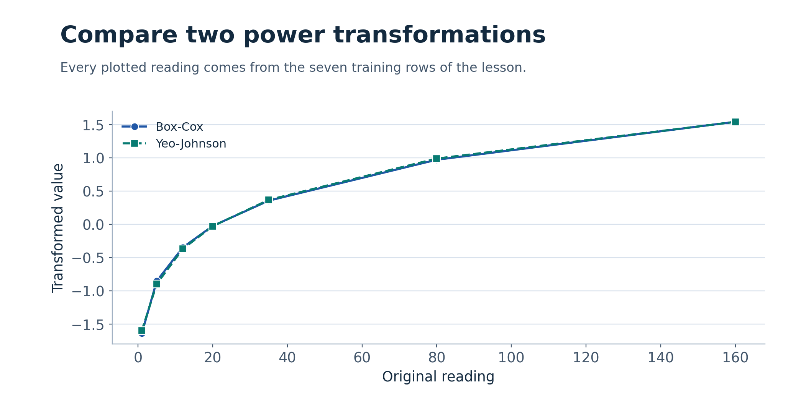
Open full-size image ↗👀 Read the visual. Compare the square and circle at the same original reading. The methods fit separate transformations to training data.
👉 Use what you see. Try a positive reading first. The Box–Cox variant requires positive input.
💡 Takeaway. Box–Cox needs strictly positive inputs. Yeo–Johnson is also suitable when the feature contains zeros or negatives.
📘 6️⃣ Quantile Transformation (Rank Scaling)
| Lesson name | What you’ll do | Download |
|---|---|---|
| Quantile Transformation (Rank Scaling) Practice | Use the rank of each reading to place it on a new scale. | ⬇️ Lesson ZIP |
🎯 Goal. How much might a new reading cost? Signal is the input. Cost is the known answer. Change the signal first, then give the model that changed number.
📋 Sample data
| signal | cost |
|---|---|
| 1 | 10 |
| 5 | 18 |
| 12 | 25 |
| 20 | 31 |
| 35 | 41 |
| 80 | 53 |
| 160 | 64 |
| 10 | 23 |
Showing the first 8 of 9 rows. The CSV has the full sample.
▶️ Run. Unzip the lesson files and open a terminal in that folder. Install the lesson’s packages with python -m pip install -r requirements.txt, then run python lesson.py.
🔹 Steps in the script
- Read the sensor readings and their measured costs.
- Set aside the check rows before the model learns.
- Read the new CSV rows, then apply the rules from the sample.
- Give each method the same practice data so you can compare the results.
✅ Check. Look for uniform first two training rows: [[0.0], [0.13]] in the output excerpt below.
uniform first two training rows: [[0.0], [0.13]]
Actual costs: [23, 48]
Predicted costs: [24.0, 48.1]🧪 Change one input. Try a signal reading of 3, 15, or 40 in new_inputs.csv. Compare the predicted cost for each row.
👀 Read the visual. The same training ranks stretch across different output scales. Circles show uniform output and squares show normal output.
👉 Use what you see. Try another input and compare which fitted output scale changes the model result.
💡 Takeaway. Ranking changes the distances between measurements. Compare uniform and normal output, and check the handling of ties.
📘 7️⃣ Binning (Discretization)
| Lesson name | What you’ll do | Download |
|---|---|---|
| Binning (Discretization) Practice | Put continuous sensor readings into bins and use the bins as model inputs. | ⬇️ Lesson ZIP |
🎯 Goal. How much might a new reading cost? Signal is the input. Cost is the known answer. Change the signal first, then give the model that changed number.
📋 Sample data
| signal | cost |
|---|---|
| 1 | 10 |
| 5 | 18 |
| 12 | 25 |
| 20 | 31 |
| 35 | 41 |
| 80 | 53 |
| 160 | 64 |
| 10 | 23 |
Showing the first 8 of 9 rows. The CSV has the full sample.
▶️ Run. Unzip the lesson files and open a terminal in that folder. Install the lesson’s packages with python -m pip install -r requirements.txt, then run python lesson.py.
🔹 Steps in the script
- Read the sensor readings and their measured costs.
- Set aside the check rows before the model learns.
- Teach the model from the training inputs and the recorded cost.
- Apply the fitted model to the new CSV rows and print a result for each row.
✅ Check. Look for Binning first two training rows: [[1.0, 0.0, 0.0], [1.0, 0.0, 0.0]] in the output excerpt below.
Binning first two training rows: [[1.0, 0.0, 0.0], [1.0, 0.0, 0.0]]
Actual costs: [23, 48]
Predicted costs: [25.0, 53.0]🧪 Change one input. Enter 3, 60, and 150 as signal values. Compare their predictions with the printed bin limits.

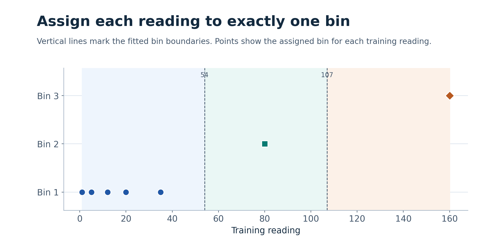
Open full-size image ↗👀 Read the visual. Each dot connects one original measurement to the value used by the model.
👉 Use what you see. Compare the active 1 for different raw readings. A change in the active column marks a move into another bin.
💡 Takeaway. With the PDF’s ages [5, 12, 25, 40, 60], bands 0–12, 13–19, and 20–60 give child, child, adult, adult, adult. For a learned binning rule, print the training edges and reuse them at prediction.
📘 8️⃣ Polynomial Features (Feature Expansion)
| Lesson name | What you’ll do | Download |
|---|---|---|
| Polynomial Features (Feature Expansion) Practice | Add squared terms so a linear model can describe a curved pattern. | ⬇️ Lesson ZIP |
🎯 Goal. How much might a new reading cost? Signal is the input. Cost is the known answer. Change the signal first, then give the model that changed number.
📋 Sample data
| signal | cost |
|---|---|
| 1 | 10 |
| 5 | 18 |
| 12 | 25 |
| 20 | 31 |
| 35 | 41 |
| 80 | 53 |
| 160 | 64 |
| 10 | 23 |
Showing the first 8 of 9 rows. The CSV has the full sample.
▶️ Run. Unzip the lesson files and open a terminal in that folder. Install the lesson’s packages with python -m pip install -r requirements.txt, then run python lesson.py.
🔹 Steps in the script
- Read the sensor readings and their measured costs.
- Set aside the check rows before the model learns.
- Teach the model from the training inputs and the recorded cost.
- Apply the fitted model to the new CSV rows and print a result for each row.
✅ Check. Look for Polynomial Features first two training rows: [[1.0, 1.0, 1.0], [5.0, 25.0, 125.0]] in the output excerpt below.
Polynomial Features first two training rows: [[1.0, 1.0, 1.0], [5.0, 25.0, 125.0]]
Actual costs: [23, 48]
Predicted costs: [22.0, 49.4]🧪 Change one input. Try a signal reading of 3, 15, or 40 in new_inputs.csv. Compare the predicted cost for each row.
 Open full-size image ↗
Open full-size image ↗👀 Read the visual. Each dot connects one original measurement to the value used by the model.
👉 Use what you see. Follow the two values for the same reading. The feature with the steeper rise is the squared term.
💡 Takeaway. With one input, the expansion adds x² and x³. For x = 2, the row is [2, 4, 8].
🧭 Which Technique Should You Use?
| Lesson name | What you’ll do | Download |
|---|---|---|
| Which Technique Should You Use? Practice | Use the same validation folds to compare which transformation makes better predictions. | ⬇️ Lesson ZIP |
Compare candidates using the same folds on an original, skewed feature. Each transformation learns from the training part of each fold. The validation scores help you choose a method. Use separate final test rows to measure the result you would report.
📋 Sample data
| signal | cost |
|---|---|
| 1 | 10 |
| 5 | 18 |
| 12 | 25 |
| 20 | 31 |
| 35 | 41 |
| 80 | 53 |
| 160 | 64 |
| 10 | 23 |
Showing the first 8 of 9 rows. The CSV has the full sample.
▶️ Run. Unzip the lesson files and open a terminal in that folder. Install the lesson’s packages with python -m pip install -r requirements.txt, then run python lesson.py.
🔹 Steps in the script
- Read the sensor readings and their measured costs.
- Compare the printed output with the original values.
✅ Check. Look for Raw MAE 10.88 in the output excerpt below.
| Raw | MAE 10.88 |
|---|---|
| Min-Max Scaling | MAE 12.18 |
| Z-Score Standardization | MAE 10.94 |
🧪 Change one input. Try changing signal from 1 to 12 in sample.csv. Compare the new output.
💡 Takeaway. Compare the reported errors and any differences in results across folds. One small table illustrates the method.
🔍 1.4. Exploratory Data Analysis (EDA)
| Lesson name | What you’ll do | Download |
|---|---|---|
| 1.4. Exploratory Data Analysis (EDA) Practice | Explore a delivery table with charts and numbers before you train. | ⬇️ Lesson ZIP |
📌 Before you start. Read a sample table and locate its numeric columns.
📊 Visualization is used here!
| Lesson name | What you’ll do | Download |
|---|---|---|
| Visualization is used here! Practice | Use charts to see how weights spread and how time changes with distance. | ⬇️ Lesson ZIP |
🎨 Visualization Techniques
| Lesson name | What you’ll do | Download |
|---|---|---|
| Visualization Techniques Practice | Use histograms, scatter plots, box plots, heatmaps and pair plots to explore the same table. | ⬇️ Lesson ZIP |
📊 Histograms
| Lesson name | What you’ll do | Download |
|---|---|---|
| Histograms Practice | Count how often each range of weights occurs. | ⬇️ Lesson ZIP |
Count how many weights fall in each range before checking the large value.
🔵 Scatter Plots
| Lesson name | What you’ll do | Download |
|---|---|---|
| Scatter Plots Practice | Put distance on one axis and delivery time on the other. | ⬇️ Lesson ZIP |
One dot is one delivery. Read distance along the bottom and minutes up the side.
📦 Box Plots
| Lesson name | What you’ll do | Download |
|---|---|---|
| Box Plots Practice | Find which weights sit far outside the usual group. | ⬇️ Lesson ZIP |
The box represents the middle half of the weights. Inspect a point far beyond the whiskers.
🌡️ Heatmaps
| Lesson name | What you’ll do | Download |
|---|---|---|
| Heatmaps Practice | Compare how strongly pairs of numeric columns move together. | ⬇️ Lesson ZIP |
Find the value where two column names meet. Values near 1 indicate the measurements rise together.
🟣 Pair Plots
| Lesson name | What you’ll do | Download |
|---|---|---|
| Pair Plots Practice | View several pairs of input columns at once. | ⬇️ Lesson ZIP |
Run the following example for all five charts. The diagonal panels show one field at a time.
Create sample measurements. Compute mean, median, and skew, then use the five charts to inspect distributions, trends, outliers, and redundant inputs.
📋 Sample data
Swipe or scroll to see every column.
| distance | route_distance | weight | minutes |
|---|---|---|---|
| 2 | 2.2 | 1 | 19 |
| 4 | 4.4 | 3 | 30 |
| 6 | 6.6 | 2 | 29 |
| 8 | 8.8 | 4 | 40 |
| 10 | 11 | 1 | 33 |
| 12 | 13.2 | 15 | 61 |
▶️ Run. Unzip the lesson files and open a terminal in that folder. Install the lesson’s packages with python -m pip install -r requirements.txt, then run python lesson.py.
🔹 Steps in the script
- Read the CSV and check its inputs, including distance, route_distance, weight.
- Print the result next to the input values so you can compare them.
- Plot the values so you can see how they compare.
✅ Check. Look for distance route_distance weight minutes in the output excerpt below.
distance route_distance weight minutes
mean 7.0 7.7 4.33 35.33
median 7.0 7.7 2.50 31.50🧪 Change one input. Try changing distance from 2 to 6 in sample.csv. Compare the new output.
 Open full-size image ↗
Open full-size image ↗👀 Read the visual. Compare distance with route distance in the matrix. Values close to +1 move together in this sample, which makes the two inputs candidates for a redundancy check.
👉 Use what you see. Start with the plot that answers your question. Use the box plot to review unusual weights, then use the scatter plot to compare distance and time.

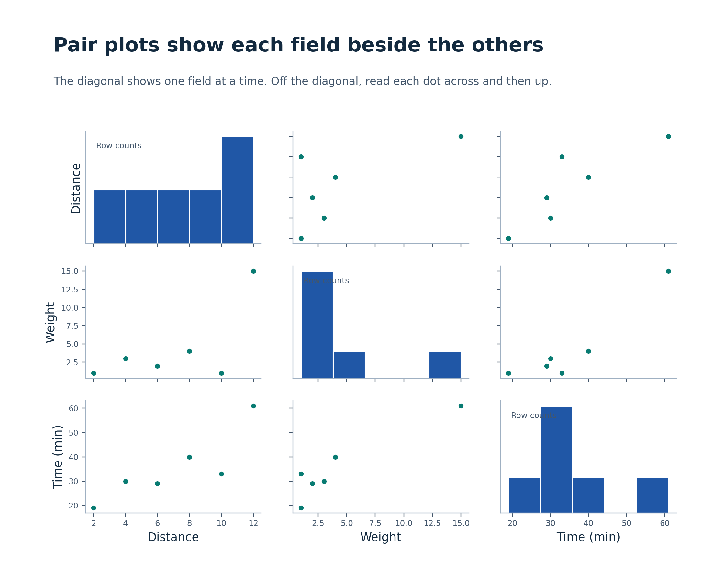
Open full-size image ↗👀 Read the visual. Find the distance-versus-time cell. The dots are the same deliveries you saw in the earlier chart.
👉 Use what you see. If two measured columns show nearly the same pattern, check if both are available and useful before training with both.
💡 Takeaway. Distance and route distance track one another perfectly in the sample. The name for this kind of overlap between model inputs is multicollinearity. Consider keeping one. If exploration guides modeling, use training data.
🛠️ 1.5. Feature Engineering & Feature Selection
| Lesson name | What you’ll do | Download |
|---|---|---|
| 1.5. Feature Engineering & Feature Selection Practice | See how creating or choosing useful input columns helps the model. | ⬇️ Lesson ZIP |
📌 Before you start. Identify the raw columns the app will have when it makes a prediction.

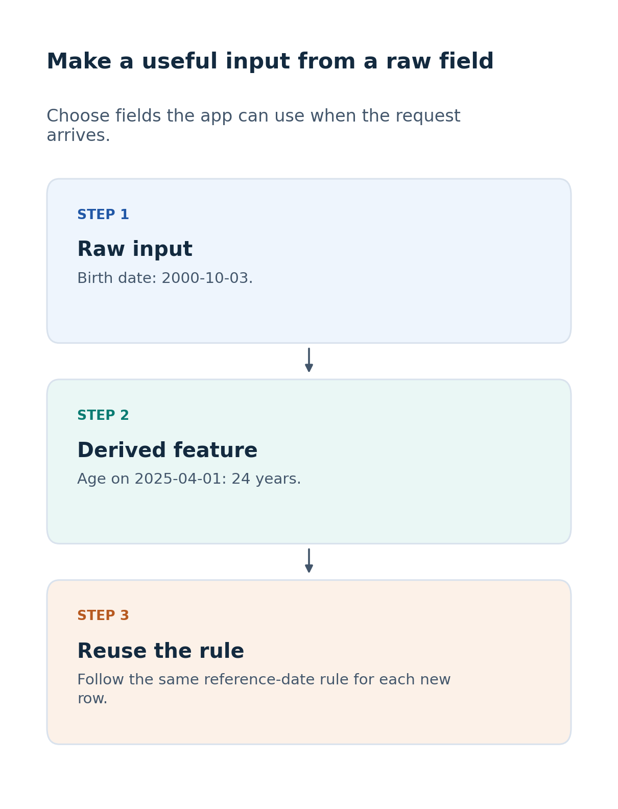
👀 Read the visual. Choose fields the app can use when the request arrives.
👉 Use what you see. Use a feature only if the app knows it at prediction time. A measured delivery time arrives after the trip.
🎨 Visualization helps here!
| Lesson name | What you’ll do | Download |
|---|---|---|
| Visualization helps here! Practice | Shuffle model inputs one at a time and plot which one changes the score most. | ⬇️ Lesson ZIP |
🔧 Feature Engineering
| Lesson name | What you’ll do | Download |
|---|---|---|
| Feature Engineering Practice | Create age and an urgent-word flag from two raw fields. | ⬇️ Lesson ZIP |
➕ Create new features
| Lesson name | What you’ll do | Download |
|---|---|---|
| Create new features Practice | Give the model numbers derived from dates and messages. | ⬇️ Lesson ZIP |
Create age as of the input date, and turn a message keyword into a model feature. Repeat the same steps on a new row.
📋 Sample data
| birth | message | review |
|---|---|---|
| 1990-11-16 | please help urgently | 1 |
| 2000-10-03 | regular update | 0 |
| 1983-01-09 | urgent order change | 1 |
| 1992-07-05 | thanks for the update | 0 |
| 1998-03-01 | urgent call requested | 1 |
▶️ Run. Unzip the lesson files and open a terminal in that folder. Install the lesson’s packages with python -m pip install -r requirements.txt, then run python lesson.py.
🔹 Steps in the script
- Read the CSV and check its inputs, including birth, message, review.
- Turn a date and a message into numerical inputs.
- Teach the model from the training inputs and whether the message needs review.
- Apply the fitted model to the new CSV rows and print a result for each row.
✅ Check. Look for age urgent in the output excerpt below.
| age | urgent |
|---|---|
| 34 | 0 |
| 24 | 0 |
🧪 Change one input. Edit the input values in new_inputs.csv and compare the displayed predictions.
🪄 Transform features
| Lesson name | What you’ll do | Download |
|---|---|---|
| Transform features Practice | Change the shape of an input so the model can represent a curved pattern. | ⬇️ Lesson ZIP |
Run Log Transformation and Polynomial Features. Both exercises read original measurements and pass the transformed columns into a model.
🔬 Feature Selection
| Lesson name | What you’ll do | Download |
|---|---|---|
| Feature Selection Practice | Choose useful input columns, then see how the choice affects predictions. | ⬇️ Lesson ZIP |
🧽 Remove irrelevant or redundant features
| Lesson name | What you’ll do | Download |
|---|---|---|
| Remove irrelevant or redundant features Practice | Remove an ID and a duplicate measurement before selecting model inputs. | ⬇️ Lesson ZIP |
🧪 Use statistical tests (ANOVA, Chi-square test)
| Lesson name | What you’ll do | Download |
|---|---|---|
| Use statistical tests (ANOVA, Chi-square test) Practice | Compare ANOVA and chi-square to see which input each method chooses. | ⬇️ Lesson ZIP |
Compare feature scores on original observations. Remove a duplicate measurement and an ID, fit ANOVA or chi-square selection inside the pipeline, and predict held-out labels.
📋 Sample data
| id | minutes | duplicate_minutes | keyword | review |
|---|---|---|---|---|
| 0 | 2 | 2 | 0 | 0 |
| 1 | 18 | 18 | 1 | 1 |
| 2 | 3 | 3 | 0 | 0 |
| 3 | 20 | 20 | 1 | 1 |
| 4 | 4 | 4 | 1 | 0 |
| 5 | 23 | 23 | 0 | 1 |
| 6 | 5 | 5 | 0 | 0 |
| 7 | 24 | 24 | 1 | 1 |
▶️ Run. Unzip the lesson files and open a terminal in that folder. Install the lesson’s packages with python -m pip install -r requirements.txt, then run python lesson.py.
🔹 Steps in the script
- Read the CSV and check its inputs, including id, minutes, duplicate_minutes.
- Give each method the same practice data so you can compare the results.
✅ Check. Look for ANOVA selected: ['minutes'] in the output excerpt below.
ANOVA selected: ['minutes']
Held-out labels: [0, 1]
Chi-square selected: ['minutes']🧪 Change one input. Try changing id from 0 to 2 in sample.csv. Compare the new output.
💡 Takeaway. Chi-square in this example receives nonnegative numeric inputs. In a real study, choose a test whose assumptions match the features and the task.
🏷️ Encoding categorical variables
| Lesson name | What you’ll do | Download |
|---|---|---|
| Encoding categorical variables Practice | Turn category names into input numbers the model can read. | ⬇️ Lesson ZIP |
Run One-Hot Encoding on unordered inputs and Label Encoding (For Ordered Categories) for the separate ordinal-input and label demonstrations.
⚖️ Scaling and Normalization
| Lesson name | What you’ll do | Download |
|---|---|---|
| Scaling and Normalization Practice | Put distance and weight on comparable scales before predicting time. | ⬇️ Lesson ZIP |
Run the two independent model examples under Normalize or Standardize Data.
🎨 Visualization Techniques
| Lesson name | What you’ll do | Download |
|---|---|---|
| Visualization Techniques Practice | Plot model importance and compare related inputs. | ⬇️ Lesson ZIP |
📊 Bar plots
| Lesson name | What you’ll do | Download |
|---|---|---|
| Bar plots Practice | Use bars to compare how much each input helps the model. | ⬇️ Lesson ZIP |
🖼️ Pair plots
| Lesson name | What you’ll do | Download |
|---|---|---|
| Pair plots Practice | Use a pair plot to check relationships before deciding which columns to keep. | ⬇️ Lesson ZIP |
Run the Pair Plots for joint relationships and the Feature Importance Plot to see how a trained model uses the selected fields.
🏗️ 1.6. Data Splitting
| Lesson name | What you’ll do | Download |
|---|---|---|
| 1.6. Data Splitting Practice | Give training, validation and test rows different jobs. | ⬇️ Lesson ZIP |
📌 Before you start. Know which column is the answer and which columns the model can use. After reading the three split roles, run lesson 442.

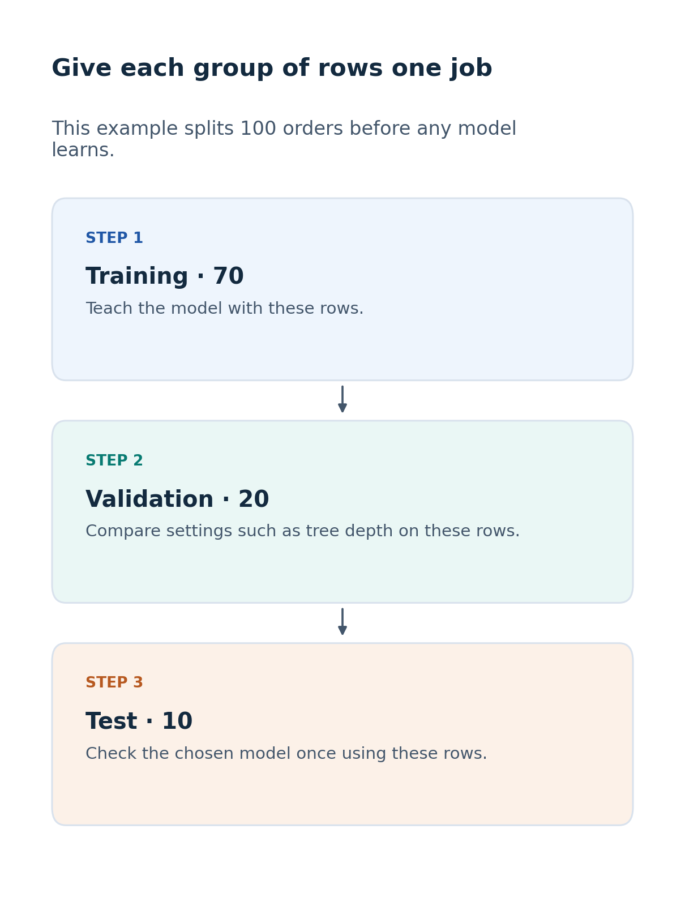
👀 Read the visual. This example splits 100 orders before any model learns.
👉 Use what you see. If you reuse test results to choose settings, save separate untouched rows for the final check.
🟩 Training set
| Lesson name | What you’ll do | Download |
|---|---|---|
| Training set Practice | Use training rows to teach a decision tree how to flag urgent deliveries. | ⬇️ Lesson ZIP |
Like practice questions with answers. The model learns from these rows. Any data step that learns an average or a category list learns it here.
🟨 Validation set
| Lesson name | What you’ll do | Download |
|---|---|---|
| Validation set Practice | Use validation rows to choose a tree depth. | ⬇️ Lesson ZIP |
Use these separate rows to choose between models or settings. The next exercise uses them to choose how deep a tree may grow.
🟦 Test set
| Lesson name | What you’ll do | Download |
|---|---|---|
| Test set Practice | Check the chosen model once using its untouched test rows. | ⬇️ Lesson ZIP |
Save these rows until the model’s settings are chosen. Evaluate the chosen model on them at the end.
📐 Common split ratios
| Lesson name | What you’ll do | Download |
|---|---|---|
| Common split ratios Practice | Compare how many rows go into an 80/20 split and a 70/20/10 split. | ⬇️ Lesson ZIP |
The split scripts share a checked recipe. Lesson 184 uses 80/20 with a fixed depth. The other split lessons use 70/20/10 so readers can trace training, selection, and testing.
🟦 80%-20% (Train-Test)
| Lesson name | What you’ll do | Download |
|---|---|---|
| 80%-20% (Train-Test) Practice | Train with 80% of the rows and check the model with the remaining 20%. | ⬇️ Lesson ZIP |
Use 80 rows to train and 20 to check. If you must choose between models, make those choices inside the 80, for example with cross-validation.
🟩 70%-20%-10% (Train-Validation-Test)
| Lesson name | What you’ll do | Download |
|---|---|---|
| 70%-20%-10% (Train-Validation-Test) Practice | Use 70% to learn, 20% to choose tree depth and 10% to check it. | ⬇️ Lesson ZIP |
Use 70 rows to learn, 20 to choose a setting, and 10 to check the chosen model.
🎯 Stratified Sampling
| Lesson name | What you’ll do | Download |
|---|---|---|
| Stratified Sampling Practice | Keep similar proportions of urgent orders in each group. | ⬇️ Lesson ZIP |

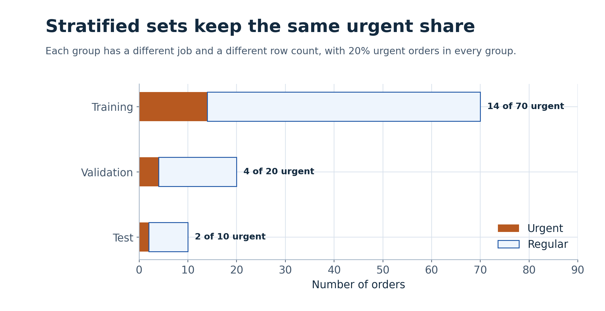
Open full-size image ↗👀 Read the visual. Compare both pieces of information. The bars have different lengths, and the urgent share is 20% in each.
👉 Use what you see. Check that shipment IDs and input pairs stay in only one set before using the final test score.
The sample CSV contains 100 different shipments. Twenty are urgent. The code checks unique IDs and unique input pairs before splitting, then confirms that neither can appear in two sets.
Swipe or scroll to see every column.
| Set | Rows | Urgent orders | Urgent share |
|---|---|---|---|
| Training | 70 | 14 | 20% |
| Validation | 20 | 4 | 20% |
| Test | 10 | 2 | 20% |
▶️ Run. Extract the ⬇️ Lesson ZIP. In the lesson folder, run python -m pip install -r requirements.txt once and then python lesson.py.
✅ Check. Zero shared IDs or identical input rows. Depth 3 wins on validation. The model catches both urgent test orders and makes one false alarm. The two urgent cases teach you how to read the test counts. A larger batch is needed to estimate production performance.
🧪 Change one input. Duplicate one row in sample.csv. The script should stop before fitting. Remove that copy, run the lesson again, then continue to choose the right data split.
🤖 1.7. Model Selection & Training
| Lesson name | What you’ll do | Download |
|---|---|---|
| 1.7. Model Selection & Training Practice | Compare candidate models using the same training task and a common error measure. | ⬇️ Lesson ZIP |
📌 Before you start. Find the training and validation sets. Try the validation curve before choosing an advanced tuning method.

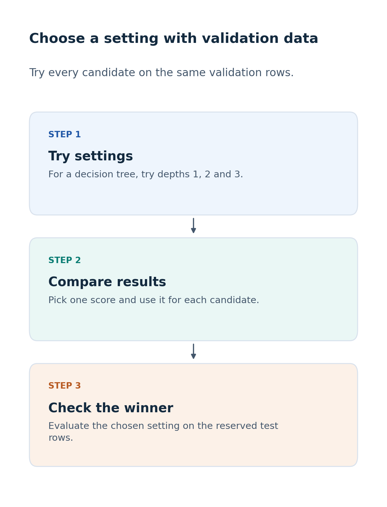
👀 Read the visual. Try every candidate on the same validation rows.
👉 Use what you see. A deeper tree can memorize the training rows. Use validation results to choose its depth.
🏁 Choose the best Machine Learning model
| Lesson name | What you’ll do | Download |
|---|---|---|
| Choose the best Machine Learning model Practice | Check which model works better on the same rows and metric. | ⬇️ Lesson ZIP |
Choose based on the answer. Use regression for a number, classification for a known category, and clustering to find groups when there are no known answers. Here the answer is urgent or not urgent.
🏋️ Train the model using the training dataset
| Lesson name | What you’ll do | Download |
|---|---|---|
| Train the model using the training dataset Practice | Give models the same inputs and known answers before comparing their errors. | ⬇️ Lesson ZIP |
Generate original delivery measurements and labels. Compare a baseline, logistic regression, a tree, a forest, and SVM on identical validation folds. Use these validation scores to select a model. Evaluate that choice on separate final test rows, as in the delivery capstone.
📋 Sample data. Preview of the first 5 of 84 rows.
| km | kg | Answer used in training |
|---|---|---|
| 47 | 3 | 1 |
| 31 | 6 | 1 |
| 34 | 11 | 1 |
| 44 | 10 | 1 |
| 29 | 8 | 1 |
▶️ Run. Unzip the lesson files and open a terminal in that folder. Install the lesson’s packages with python -m pip install -r requirements.txt, then run python lesson.py.
🔹 Steps in the script
- Read the practice deliveries. Use km for distance and kg for parcel weight.
- Read the mean validation score for each candidate and compare it with the baseline.
✅ Check. Look for DummyClassifier 0.687 in the output excerpt below.
DummyClassifier 0.687
LogisticRegression 0.908
DecisionTreeClassifier 0.744🧪 Change one input. Change an input and its known answer consistently in sample.csv. Rerun the comparison and check what changes.
💡 Takeaway. Use Regression Algorithms for numeric predictions, XGBoost and LightGBM for boosted trees, and Clustering Algorithms for K-Means and DBSCAN.
🎛️ Tune hyperparameters
| Lesson name | What you’ll do | Download |
|---|---|---|
| Tune hyperparameters Practice | Try different Ridge settings and compare how search methods find them. | ⬇️ Lesson ZIP |
🟦 Grid Search
| Lesson name | What you’ll do | Download |
|---|---|---|
| Grid Search Practice | Try every value in a small settings list and keep the best validation score. | ⬇️ Lesson ZIP |
Write a short list of settings. Test every setting on the same check rows. The next exercise tries four values of alpha.
🟩 Random Search
| Lesson name | What you’ll do | Download |
|---|---|---|
| Random Search Practice | Test a random subset of settings when trying every option would take longer. | ⬇️ Lesson ZIP |
Pick several settings from a bigger list at random. This exercise tries four out of twenty possibilities.
🟪 Bayesian Optimization
| Lesson name | What you’ll do | Download |
|---|---|---|
| Bayesian Optimization Practice | Use scores from earlier trials to choose another setting to try. | ⬇️ Lesson ZIP |
Generate a training set and search regularization settings using three strategies. Use the same validation folds and compare the chosen setting.
Advanced. Try a few values for alpha, a Ridge model setting. Use the scores so far to pick a promising untried value.
📋 Sample data. Preview of the first 5 of 42 rows.
| Input 1 | Input 2 | Input 3 |
|---|---|---|
| 0.5004 | 1.5889 | 1.1027 |
| -1.0992 | -0.7993 | 1.4942 |
| -1.9789 | 1.2849 | 1.1883 |
| -0.1283 | -0.7879 | -0.8863 |
| -0.9805 | -0.2197 | 0.0182 |
▶️ Run. Unzip the lesson files and open a terminal in that folder. Install the lesson’s packages with python -m pip install -r requirements.txt, then run python lesson.py.
🔹 Steps in the script
- Read the CSV and check its inputs, including input_1, input_2, input_3.
- Give each method the same practice data so you can compare the results.
- Apply the fitted model to the new CSV rows and print a result for each row.
✅ Check. Look for GridSearchCV 1 MAE 0.81 in the output excerpt below.
GridSearchCV 1 MAE 0.81
RandomizedSearchCV 0.062 MAE 0.837
Bayesian 1.585 MAE 0.802🧪 Change one input. Edit new_inputs.csv and rerun the script. Change an input and its known answer consistently in sample.csv. Rerun the comparison and check what changes.
🔄 Cross-validation
| Lesson name | What you’ll do | Download |
|---|---|---|
| Cross-validation Practice | Take turns holding different deliveries back and compare the error on each group. | ⬇️ Lesson ZIP |
Print the training and validation sizes and report the variation across folds on original delivery rows.
📋 Sample data
| distance_km | weight_kg | delivery_minutes |
|---|---|---|
| 2 | 1 | 19 |
| 4 | 3 | 30 |
| 6 | 2 | 29 |
| 8 | 4 | 40 |
| 10 | 1 | 33 |
| 12 | 3 | 44 |
▶️ Run. Unzip the lesson files and open a terminal in that folder. Install the lesson’s packages with python -m pip install -r requirements.txt, then run python lesson.py.
🔹 Steps in the script
- Read the delivery table. Distance is in km, and weight is in kg.
- Take turns keeping one group back for a check. Read each group’s average error in minutes.
✅ Check. Check the Average error in minutes column. Each row of the table is a different group kept back for checking.
Swipe or scroll to see every column.
| Fold | Rows to learn | Rows to check | Average error in minutes |
|---|---|---|---|
| 1 | 4 | 2 | 0.37 |
| 2 | 4 | 2 | 0.49 |
🧪 Change one input. Change the known time for one delivery. Rerun and find which fold errors change.
🐍 Complete script from the ZIP
"""
Cross-validation
Take turns holding different deliveries back and compare the error on each group.
Run: python lesson.py
Change the recorded time for one completed delivery. See which three-group check changes its error.
"""
from pathlib import Path
import pandas as pd
from sklearn.linear_model import LinearRegression
from sklearn.model_selection import KFold, cross_val_score
input_path = Path(__file__).resolve().with_name("sample.csv")
# 1. Read the delivery table. Distance is in km, and weight is in kg.
deliveries = pd.read_csv(input_path)
folds = KFold(3, shuffle=True, random_state=7)
X = deliveries[["distance_km", "weight_kg"]]
# 2. Take turns keeping one group back for a check. Read each group’s average error in minutes.
errors = -cross_val_score(
LinearRegression(),
X,
deliveries["delivery_minutes"],
scoring="neg_mean_absolute_error",
cv=folds,
)
results = []
for fold_number, (training, checking) in enumerate(folds.split(X), start=1):
results.append([fold_number, len(training), len(checking), errors[fold_number - 1]])
table = pd.DataFrame(
results,
columns=["Fold", "Rows to learn", "Rows to check", "Average error in minutes"],
)
print(table.round(2).to_string(index=False))📏 1.8. Model Evaluation
| Lesson name | What you’ll do | Download |
|---|---|---|
| 1.8. Model Evaluation Practice | Measure prediction errors on check rows and read the chart that explains them. | ⬇️ Lesson ZIP |
📌 Before you start. Keep test data separate and know the model’s prediction type. Try classification thresholds or grouped regression errors.

👀 Read the visual. Start with what the app actually returns.
👉 Use what you see. If missing urgent orders is costly, inspect recall and the missed-urgent cell of the confusion matrix.
🎨 Visualization is used here!
| Lesson name | What you’ll do | Download |
|---|---|---|
| Visualization is used here! Practice | Use separate charts to see missed cases, thresholds and feature importance. | ⬇️ Lesson ZIP |
🎯 Classification Metrics
| Lesson name | What you’ll do | Download |
|---|---|---|
| Classification Metrics Practice | Check how a classifier handles urgent orders with several scores. | ⬇️ Lesson ZIP |
The script reserves 30 test orders. If a distance–weight pair appears in test, it is left out of training. During cross-validation, all training rows with a matching pair stay in the same fold.
🧮 Accuracy, Precision, Recall, F1-score, AUC-ROC
| Lesson name | What you’ll do | Download |
|---|---|---|
| Accuracy, Precision, Recall, F1-score, AUC-ROC Practice | Measure correct answers, false alarms, missed urgent cases and ranking. | ⬇️ Lesson ZIP |
| Metric | How to read it in this example |
|---|---|
| Accuracy | Correct guesses divided by all guesses. Here, 27 of 30 are correct. |
| Precision | Of the orders predicted urgent, how many truly were urgent? Here 17 of 19. |
| Recall | Of the orders that truly were urgent, how many did we find? Here 17 of 18. |
| F1-score | A score that combines precision and recall. It falls when either is low. |
| AUC-ROC | How well the model ranks urgent orders above other orders across possible cutoffs. 0.5 is chance-level ranking and 1 is perfect ranking. |
🎨 Visualization Techniques
| Lesson name | What you’ll do | Download |
|---|---|---|
| Visualization Techniques Practice | Choose a chart that answers your question about classifier mistakes. | ⬇️ Lesson ZIP |
📋 Confusion Matrix
| Lesson name | What you’ll do | Download |
|---|---|---|
| Confusion Matrix Practice | Locate missed urgent orders and false alarms in a labeled matrix. | ⬇️ Lesson ZIP |
▶️ Run. Extract the ⬇️ Lesson ZIP. In the lesson folder, run python -m pip install -r requirements.txt once and then python lesson.py.
| Actual order | Predicted regular | Predicted urgent |
|---|---|---|
| Regular | 10 | 2 |
| Urgent | 1 | 17 |
✅ Check. Actual urgent + predicted regular = one missed urgent order. Change cutoff in new_inputs.csv to 0.25 and find that cell again.
 Open full-size image ↗
Open full-size image ↗👀 Read the visual. Use the row for orders that really were urgent. Move across to the regular prediction column to find the one urgent order the model missed.
The rows are the real answers. The columns are the guessed answers. With 1 meaning urgent, the top right is a false alarm and the bottom left is a missed urgent order.
📈 ROC Curve
| Lesson name | What you’ll do | Download |
|---|---|---|
| ROC Curve Practice | Compare catches and false alarms at two fixed practice cutoffs. | ⬇️ Lesson ZIP |
▶️ Run. Extract the ⬇️ Lesson ZIP. In the lesson folder, run python -m pip install -r requirements.txt once and then python lesson.py.
Swipe or scroll to see every column.
| Cutoff | Urgent caught | Urgent missed | False alarms |
|---|---|---|---|
| 0.25 | 18 | 0 | 2 |
| 0.75 | 17 | 1 | 1 |
✅ Check. In this exercise the lower cutoff finds one more urgent order and raises one more false alarm. Read the horizontal axis to see which fraction of regular orders triggered an alert.
 Open full-size image ↗
Open full-size image ↗👀 Read the visual. Follow the two labeled points. Raising the cutoff to 0.75 avoids one false alarm and misses one additional urgent order.
An urgent probability becomes an urgent prediction when it reaches a chosen cutoff. As you move that cutoff, the curve shows how the share of found urgent orders and the share of false alarms change.
🧭 Feature Importance Plot
| Lesson name | What you’ll do | Download |
|---|---|---|
| Feature Importance Plot Practice | Shuffle an input to see how much worse the model performs without its original values. | ⬇️ Lesson ZIP |
Shuffle one input at a time and see how the model’s score changes. A larger drop suggests the model depended more on that input in this check. Run the next exercise to draw the three graphs.
Generate original order data, compare candidate classifiers on training folds, and evaluate the chosen model once on a held-out split. Plot confusion, ROC, and validation-fold feature importance.
📋 Sample data. Preview of the first 5 of 120 rows.
| distance | weight | Answer used in training |
|---|---|---|
| 37 | 5 | 1 |
| 25 | 7 | 1 |
| 27 | 5 | 1 |
| 35 | 7 | 1 |
| 23 | 6 | 0 |
▶️ Run. Unzip the lesson files and open a terminal in that folder. Install the lesson’s packages with python -m pip install -r requirements.txt, then run python lesson.py.
🔹 Steps in the script
- Read the CSV and check its inputs, including distance, weight, answer.
- Set aside the check rows before the model learns.
- Fit the model on the prepared training rows. Keep it for the checks below.
- Check how often the model gets the known answers right on the rows you set aside.
- Plot the values so you can see how they compare.
- Apply the fitted model to the new CSV rows and print a result for each row.
✅ Check. Look for accuracy 0.900 in the output excerpt below.
| accuracy | 0.900 |
|---|---|
| precision | 0.895 |
| recall | 0.944 |
🧪 Change one input. Edit new_inputs.csv and rerun the script. Change an input and its known answer consistently in sample.csv. Rerun the comparison and check what changes.
 Open full-size image ↗
Open full-size image ↗👀 Read the visual. Use the row for orders that really were urgent. Move across to the regular prediction column to find the one urgent order the model missed.
👉 Use what you see. Compare that cell with the two false alarms. These errors affect an app in different ways.

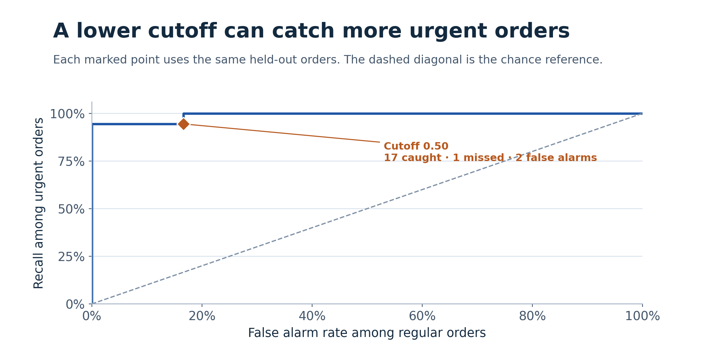
Open full-size image ↗👀 Read the visual. The diamond corresponds to the confusion matrix above. Other points summarize different cutoffs on the same test orders.
👉 Use what you see. When choosing a cutoff, compare how many urgent orders you catch with how many false alarms your team can handle.

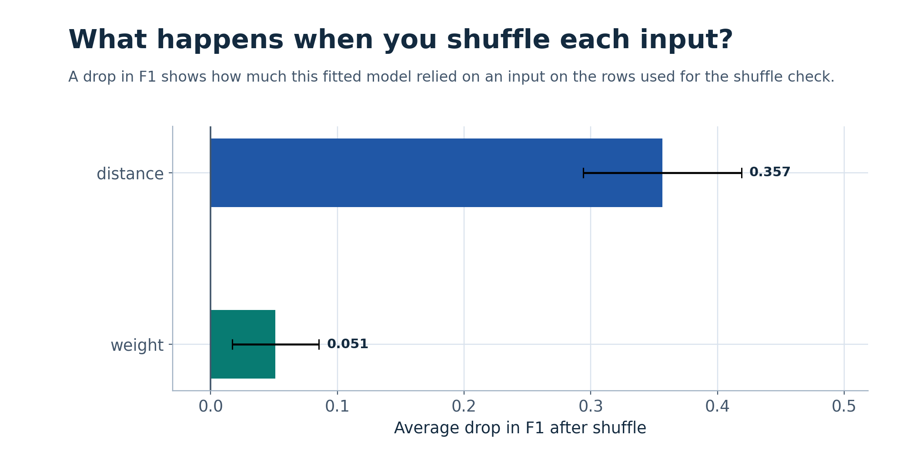
Open full-size image ↗👀 Read the visual. A longer positive bar means scrambling the input reduced this model’s F1 more on these check rows.
👉 Use what you see. Use this chart to ask what the model relied on. A shuffle result alone does not establish a causal effect.
💡 Takeaway. Read the two off-diagonal cells to identify false positives and missed positives. Feature importance measures reliance by this fitted model.
📐 Regression Metrics
| Lesson name | What you’ll do | Download |
|---|---|---|
| Regression Metrics Practice | Read prediction errors in minutes and compare them with a simple baseline. Worked calculation using two test trips. | ⬇️ Lesson ZIP |
🧮 RMSE, MAE, R² score
| Lesson name | What you’ll do | Download |
|---|---|---|
| RMSE, MAE, R² score Practice | Compare average error, large misses and fit relative to a baseline. Worked calculation using two test trips. | ⬇️ Lesson ZIP |
🧮 Worked calculation. The scores below use two test deliveries so you can see the arithmetic. For an error estimate across routes, weights, and zones, run lesson 446.
| Metric | How to read it |
|---|---|
| MAE | Average size of the mistake, in minutes here. If the two errors have sizes 2 and 4, the MAE is 3 minutes. |
| RMSE | Another error in minutes that gives large mistakes more weight. For errors of size 2 and 4, RMSE is about 3.16 minutes. Smaller is better for MAE and RMSE. |
| R² | Compare with a simple mean prediction on the same data. 1 is perfect, 0 matches that benchmark, and a negative value does worse. |
📉 Residual Plots
| Lesson name | What you’ll do | Download |
|---|---|---|
| Residual Plots Practice | Plot actual minutes minus predicted minutes to see where the model is off. Worked calculation using two test trips. | ⬇️ Lesson ZIP |
The plot has two test points. Treat it as practice reading the direction of an error. Try lesson 446 to inspect a larger test batch.
Train on four original deliveries and compare predictions against two held-out values. Calculate errors in minutes and view the residuals.
📋 Sample data
| distance_km | weight_kg | delivery_minutes |
|---|---|---|
| 2 | 1 | 19 |
| 4 | 3 | 30 |
| 6 | 2 | 29 |
| 8 | 4 | 40 |
| 10 | 1 | 33 |
| 12 | 3 | 44 |
▶️ Run. Unzip the lesson files and open a terminal in that folder. Install the lesson’s packages with python -m pip install -r requirements.txt, then run python lesson.py.
🔹 Steps in the script
- Read the delivery table. Distance is in km, and weight is in kg.
- Set aside the check rows before the model learns.
- Teach the model from the training inputs and delivery time in minutes.
- Plot the values so you can see how they compare.
- Apply the fitted model to the new CSV rows and print a result for each row.
✅ Check. Look for RMSE: 2.0 in the output excerpt below.
RMSE: 2.0
MAE: 2.0
R²: 0.868🧪 Change one input. Edit the input values in new_inputs.csv and compare the displayed predictions.

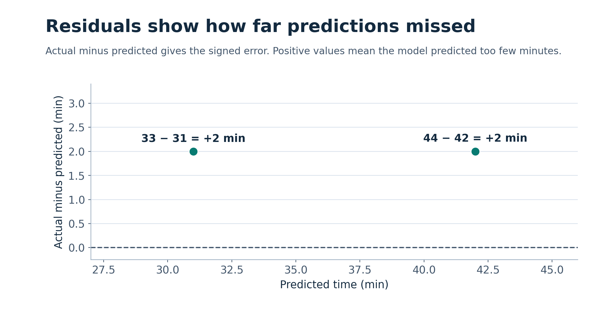
Open full-size image ↗👀 Read the visual. Each real delivery took two minutes longer than predicted. Use these two rows to practice the calculation, then use lesson 446 to investigate a larger sample.
👉 Use what you see. Look for errors that grow as predicted time increases. Check longer trips separately if the large errors cluster there.
💡 Takeaway. Positive residuals are underpredictions. Compare patterns on a larger holdout before drawing conclusions.
🚀 1.9. Model Deployment
| Lesson name | What you’ll do | Download |
|---|---|---|
| 1.9. Model Deployment Practice | Serve a delivery model through a local test endpoint. | ⬇️ Lesson ZIP |
📌 Before you start. Run a saved model and check the inputs the app expects. Then try the local service in the capstone.

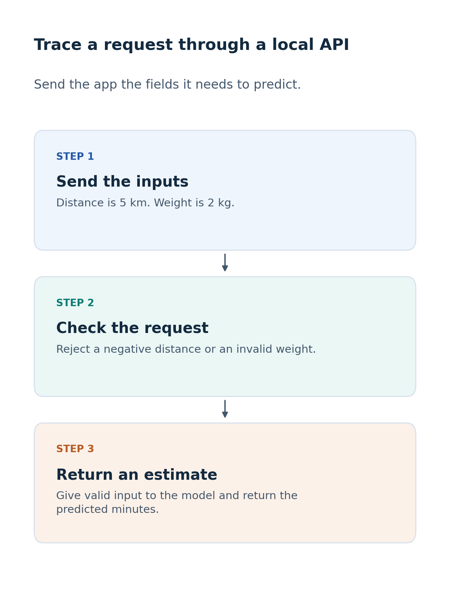
👀 Read the visual. Send the app the fields it needs to predict.
👉 Use what you see. Try both a normal row and a negative distance. Check the response code and the message in each case.
🌐 APIs, Web Apps, or Cloud Services
| Lesson name | What you’ll do | Download |
|---|---|---|
| APIs, Web Apps, or Cloud Services Practice | Send input data to a local API and inspect what comes back. | ⬇️ Lesson ZIP |
🔌 Flask, FastAPI, or Streamlit
| Lesson name | What you’ll do | Download |
|---|---|---|
| Flask, FastAPI, or Streamlit Practice | Run a local API example before comparing Python frameworks. | ⬇️ Lesson ZIP |
⚡ FastAPI
| Lesson name | What you’ll do | Download |
|---|---|---|
| FastAPI Practice | Send valid and invalid deliveries to a FastAPI route and read the response. | ⬇️ Lesson ZIP |
Save an original delivery model, reload it, and submit one JSON request to a local FastAPI test client. The request goes through the API contract without starting a public server.
📋 Sample data
| distance_km | weight_kg | delivery_minutes |
|---|---|---|
| 2 | 1 | 19 |
| 4 | 3 | 30 |
| 6 | 2 | 29 |
| 8 | 4 | 40 |
| 10 | 1 | 33 |
| 12 | 3 | 44 |
▶️ Run. Unzip the lesson files and open a terminal in that folder. Install the lesson’s packages with python -m pip install -r requirements.txt, then run python lesson.py.
🔹 Steps in the script
- Read the delivery table. Distance is in km, and weight is in kg.
- Send a practice request and read the response code and body.
- Send each new CSV row to the app and read the response.
✅ Check. Find HTTP 200 for a valid request and 422 for the negative distance.
200 {'minutes': 27.8}
Invalid distance: 422
{'distance_km': 5, 'weight_kg': 2} 200 {'minutes': 27.8}🧪 Change one input. Enter 15 km with 2 kg, then with 0 kg. Check that only the positive weight gives an estimate.
🧪 Flask
| Lesson name | What you’ll do | Download |
|---|---|---|
| Flask Practice | Send the same delivery fields to a Flask route and read the JSON reply. | ⬇️ Lesson ZIP |
Send the same contract to a local Flask test client using an independently created training table.
📋 Sample data
| distance_km | weight_kg | delivery_minutes |
|---|---|---|
| 2 | 1 | 19 |
| 4 | 3 | 30 |
| 6 | 2 | 29 |
| 8 | 4 | 40 |
| 10 | 1 | 33 |
| 12 | 3 | 44 |
▶️ Run. Unzip the lesson files and open a terminal in that folder. Install the lesson’s packages with python -m pip install -r requirements.txt, then run python lesson.py.
🔹 Steps in the script
- Read the delivery table. Distance is in km, and weight is in kg.
- Teach the model from the training inputs and delivery time in minutes.
- Send each new CSV row to the app and read the response.
✅ Check. Look for 200 {'minutes': 27.8} in the output excerpt below.
200 {'minutes': 27.8}
{'distance_km': 5, 'weight_kg': 2} 200 {'minutes': 27.8}
{'distance_km': 20, 'weight_kg': 4} 200 {'minutes': 61.4}🧪 Change one input. Try changing distance_km from 5 to -2 in new_inputs.csv. Compare the new output.
🖥️ Streamlit
| Lesson name | What you’ll do | Download |
|---|---|---|
| Streamlit Practice | Fill in a Streamlit form and see the delivery estimate change. | ⬇️ Lesson ZIP |
Build a two-field web form and verify its displayed prediction with the Streamlit test driver.
▶️ Run. Unzip the lesson files and open a terminal in that folder. Install the lesson’s packages with python -m pip install -r requirements.txt, then run python lesson.py.
🔹 Steps in the script
- Read the training data for the form and fit a model in the local Streamlit app.
- Teach the model from the training inputs and delivery time in minutes.
- Send each new CSV row to the app and read the response.
✅ Check. Look for Prediction: 27.5 minutes in the output excerpt below.
Prediction: 27.5 minutes
5 2 Prediction: 27.5 minutes
10 4 Prediction: 43.0 minutes🧪 Change one input. Enter distances of 5, 10 and 15 km with positive weights. The script fills out the sample form for each row.
💡 Takeaway. For interactive use, save the Python inside the triple-quoted string into delivery_app.py and launch that file with the Streamlit command.
☁️ AWS, Google Cloud, or Heroku
| Lesson name | What you’ll do | Download |
|---|---|---|
| AWS, Google Cloud, or Heroku Reference | Practice a local request check, then use the deployment notes for your platform. Local request check + manual cloud walkthrough. | ⬇️ Lesson ZIP |
Use the Cloud deployment walkthrough once a local request works.
📱 REST API or integrate with mobile/web apps
| Lesson name | What you’ll do | Download |
|---|---|---|
| REST API or integrate with mobile/web apps Practice | Turn CSV rows into JSON request bodies a web or mobile app would send. | ⬇️ Lesson ZIP |
A request sends the facts the model needs. A response sends its answer. The web page example connects the form to that request.
Validate a sample deployment request locally. Reuse this JSON schema when you wire up a mobile or web client. AWS, Google Cloud, and Heroku are hosting options for the same service.
▶️ Run. Unzip the lesson files and open a terminal in that folder. Install the lesson’s packages with python -m pip install -r requirements.txt, then run python lesson.py.
🔹 Steps in the script
- Read the delivery table. Distance is in km, and weight is in kg.
✅ Check. Look for POST /predict {"distance_km": 5, "weight_kg": 2} in the output excerpt below.
POST /predict {"distance_km": 5, "weight_kg": 2}
POST /predict {"distance_km": 10, "weight_kg": 3}
POST /predict {"distance_km": 14, "weight_kg": 4}🧪 Change one input. Try changing distance_km from 5 to 14 in sample.csv. Compare the new output.
💡 Takeaway. Deploy only if you have an approved environment. Package the app, its dependencies, and the trusted model. Send this same request to the hosted endpoint and compare the response with the local test. FastAPI testing
🌐 First API call from a web page
| Lesson name | What you’ll do | Download |
|---|---|---|
| First API call from a web page Practice | Send a distance to a local model from a web page and read the response. | ⬇️ Lesson ZIP |
🎯 Goal. Can a web page give a delivery distance to a model and show its answer? Open the page, type 4, and press Predict. The Python block tests the same request the button makes.
📋 Sample data
| distance_km | minutes |
|---|---|
| 1 | 12 |
| 2 | 14 |
| 3 | 16 |
▶️ Run. Unzip the lesson files and open a terminal in that folder. Install the lesson’s packages with python -m pip install -r requirements.txt, then run python lesson.py.
🔹 Steps in the script
- Read the CSV and check its inputs, including distance_km, minutes.
- Teach the model from the training inputs and delivery time in minutes.
✅ Check. Read 200 for the page and 18.0 minutes for the 4 km request.
| Action | HTTP status | Predicted minutes |
|---|---|---|
| Open the page | 200 | NaN |
| Predict 4 km | 200 | 18.0 |
🧪 Change one input. Change 4 to 12 in new_inputs.csv. The local test request should report 34.0 minutes.
See the page locally. Paste the two blocks into web_delivery.py. Install uvicorn. From that folder run python -m uvicorn web_delivery:app --host 127.0.0.1 --port 8000, then open http://127.0.0.1:8000. The browser sends a distance to the same API. A mobile app can send the same request. This lab checks the endpoint locally.
☁️ Cloud deployment walkthrough
| Lesson name | What you’ll do | Download |
|---|---|---|
| Cloud deployment walkthrough Reference | Check your request format locally, then follow the deployment steps for your chosen platform. Local request check + manual cloud walkthrough. | ⬇️ Lesson ZIP |
Use the same request on a cloud service after the local prediction works. No cloud account is needed for the Python exercise. Hosting below is a separate practice step, and may require billing.
| Service from the PDF | What to do | Check before sharing |
|---|---|---|
| AWS Elastic Beanstalk | Use the official Flask tutorial. Use the workbook’s Flask code in application.py, expose the Flask app as application, and add a requirements.txt with flask, pandas, and scikit-learn. Follow the tutorial’s environment creation and deployment steps. |
Call /predict with the same two fields as your local Flask test. |
| Google Cloud Run | Follow the Flask quickstart. Put the workbook’s Flask code in main.py, name the Flask object app, and list Flask, pandas, scikit-learn, and gunicorn in requirements.txt. Run the quickstart’s source deployment in your project. |
Call /predict and compare the response with the local result. Use authenticated access when possible. |
| Heroku | Follow the Python getting-started guide. Save the Flask service as application.py, list its packages plus gunicorn, and add a Procfile containing web: gunicorn application:app. |
Run locally first, deploy from your project, then send the same prediction request. |
Keep API credentials private and delete the practice service when you finish. The deployment commands run only in your own authorized account. The workbook exercises use local requests.
📈 1.10. Model Monitoring & Maintenance
| Lesson name | What you’ll do | Download |
|---|---|---|
| 1.10. Model Monitoring & Maintenance Practice | Follow a model over several batches and decide when to investigate or retrain. | ⬇️ Lesson ZIP |
📌 Before you start. Know the original test score and how to identify later rows. See the capstone monitoring step.

👀 Read the visual. Review new inputs and later measured outcomes.
👉 Use what you see. A change in trip distances is a reason to check. Use measured results to see whether the predictions got worse.
📊 Visualization helps track model performance!
| Lesson name | What you’ll do | Download |
|---|---|---|
| Visualization helps track model performance! Practice | Plot how accuracy and input distances change between batches. | ⬇️ Lesson ZIP |
📈 Monitor model accuracy & performance over time
| Lesson name | What you’ll do | Download |
|---|---|---|
| Monitor model accuracy & performance over time Practice | Check model accuracy after new delivery outcomes are recorded. | ⬇️ Lesson ZIP |
Count correct predictions for each batch only after the real answers arrive.
🌊 Detect data drift
| Lesson name | What you’ll do | Download |
|---|---|---|
| Detect data drift Practice | See whether the new trips cover different distances than the earlier trips. | ⬇️ Lesson ZIP |
Compare what the model saw before with what arrives now. Here the recent distances are longer.
🔔 Implement automated alerts
| Lesson name | What you’ll do | Download |
|---|---|---|
| Implement automated alerts Practice | Raise a local alert if accuracy falls or the input data changes too much. | ⬇️ Lesson ZIP |
Choose a lower limit for accuracy and an allowed shift in the inputs. The example prints an alert if either crosses its limit.
🔄 Retrain the model periodically with new data
| Lesson name | What you’ll do | Download |
|---|---|---|
| Retrain the model periodically with new data Practice | Train a candidate on newer deliveries and compare it with the running model on a later batch. | ⬇️ Lesson ZIP |
Fit a new candidate using recent labeled rows, then compare the old and new model on a later batch.
🎨 Visualization Techniques
| Lesson name | What you’ll do | Download |
|---|---|---|
| Visualization Techniques Practice | Use a local dashboard to read the latest accuracy and see an alert. | ⬇️ Lesson ZIP |
🖥️ Live dashboards using Tableau, Power BI, or Matplotlib/Seaborn
| Lesson name | What you’ll do | Download |
|---|---|---|
| Live dashboards using Tableau, Power BI, or Matplotlib/Seaborn Practice | Create a local dashboard and use the companion lessons to prepare BI imports. | ⬇️ Lesson ZIP |
🌊 Drift detection charts
| Lesson name | What you’ll do | Download |
|---|---|---|
| Drift detection charts Practice | Compare the old and new distributions to see how delivery distances have shifted. | ⬇️ Lesson ZIP |
⏱️ Real-time model accuracy tracking dashboards
| Lesson name | What you’ll do | Download |
|---|---|---|
| Real-time model accuracy tracking dashboards Practice | Watch how accuracy changes as batches with known results arrive. | ⬇️ Lesson ZIP |
Generate historical, recent, and future delivery batches. Compare input distributions, calculate accuracy after labels arrive, trigger an alert, and test a retrained candidate on a later batch.
📋 Sample data. Preview of the first 5 of 40 rows.
| km | late |
|---|---|
| 19 | Yes |
| 13 | Yes |
| 14 | Yes |
| 18 | Yes |
| 12 | Yes |
▶️ Run. Unzip the lesson files and open a terminal in that folder. Install the lesson’s packages with python -m pip install -r requirements.txt, then run python lesson.py.
🔹 Steps in the script
- Read the labeled batches so you can compare the model’s results over time.
- Teach the model from the training inputs and whether the delivery was late.
- Plot the values so you can see how they compare.
✅ Check. Look for Recent accuracy: 0.53 median km change: 7.0 in the output excerpt below.
Recent accuracy: 0.53 median km change: 7.0
ALERT: investigate before promoting a candidate.
Later batch, live / candidate: 0.5 1.0🧪 Change one input. Try changing km from 19 to 14 in sample.csv. Compare the new output.
👀 Read the visual. Read the distance shift on the left. Use the measured outcomes on the right to find whether accuracy changed.
👉 Use what you see. Investigate the actual mistakes before you consider promoting an updated model.
💡 Takeaway. Import monitoring.csv into Tableau or Power BI, or refresh the charts as batches arrive. The historical reference score uses a fresh batch from the same toy distribution. Update live accuracy only after outcomes arrive.
🔄 A dashboard that refreshes on your computer
| Lesson name | What you’ll do | Download |
|---|---|---|
| A dashboard that refreshes on your computer Practice | Run a local dashboard that reads the latest accuracy file. | ⬇️ Lesson ZIP |
🎯 Goal. What would a dashboard show after a fresh batch of answers arrives? Use a small history of three batches and display the latest labeled accuracy. The dashboard refreshes locally while it is open.
▶️ Run. Unzip the lesson files and open a terminal in that folder. Install the lesson’s packages with python -m pip install -r requirements.txt, then run python lesson.py.
🔹 Steps in the script
- Read the labeled batches so you can compare the model’s results over time.
- Print the result next to the input values so you can compare them.
✅ Check. The latest batch has 16 correct predictions out of 20. That gives 80% accuracy, below the 85% alert threshold, so the alert is visible.
| Dashboard field | Value |
|---|---|
| Latest labeled accuracy | 80% |
| Alert threshold | 85% |
| Alert visible | True |
🧪 Change one input. Change the final batch’s Correct count in sample.csv from 16 to 18 and keep Checked at 20. Rerun python lesson.py. The result should show 90% accuracy and no alert.
Run python -m streamlit run monitoring_dashboard.py in the folder where the exercise saved the file. While the dashboard is open, add a labeled row to monitoring.csv and calculate its Accuracy as Correct divided by Checked. The five-second refresh picks up the change. This refreshes the display. To update the actual model periodically, run the training-and-check code on a schedule, and keep the current model unless the candidate passes the agreed check.
| Dashboard option | Use the generated monitoring.csv |
|---|---|
| Tableau Desktop | Connect to a Text File. Put Batch on Columns and Accuracy on Rows, then choose a line mark. Replace the CSV with one that has the same columns and refresh the data source. Tableau Text File connector |
| Power BI Desktop | Choose Get Data, then Text/CSV. Load Batch and Accuracy and place them on a line chart. Choose Refresh after saving a new batch. Microsoft Text/CSV connector |
| Streamlit | Run the local dashboard example above. Its view refreshes while the page is open. Streamlit fragment reference |
🕒 Scheduled model checks
| Lesson name | What you’ll do | Download |
|---|---|---|
| Scheduled model checks Practice | Reuse the same model check for each batch and see which one raises an alert. | ⬇️ Lesson ZIP |
🎯 Goal. What can a recurring model check do? Run the same check on two later batches. For each run, compare a candidate with the current model on rows the candidate did not learn from.
▶️ Run. Unzip the lesson files and open a terminal in that folder. Install the lesson’s packages with python -m pip install -r requirements.txt, then run python lesson.py.
🔹 Steps in the script
- Read the labeled batches so you can compare the model’s results over time.
- Print the result next to the input values so you can compare them.
✅ Check. Look for Check Current error (min) Candidate error (min) Decision in the output excerpt below.
Check Current error (min) Candidate error (min) Decision
Monday 0.0 0.0 Keep current model
Tuesday 3.0 0.0 Review candidate🧪 Change one input. Try changing distance from 1 to 3 in sample.csv. Compare the new output.
The exercise runs two simulated check times immediately. To run it at real times, save the script and use your operating system’s scheduler to call python your_script.py on a schedule. For real batches, read the labeled CSV for that run and keep a log. Review a candidate on a meaningful, separate test set before replacing the current model.
🟪 2. Data Sets
| Lesson name | What you’ll do | Download |
|---|---|---|
| 2. Data Sets Practice | Start the practice datasets with a small table of experience and salary. | ⬇️ Lesson ZIP |
📌 Before you start. Be able to read a CSV, choose a target, and explain how test rows are kept separate.
The original dataset names below are PDF section headings. The code under each heading creates a new dataset. The workbook never downloads, loads, or copies any of those published datasets.
💵 2.1. Salary & Experience Dataset
| Lesson name | What you’ll do | Download |
|---|---|---|
| 2.1. Salary & Experience Dataset Practice | Use years of experience and department from invented employee records to estimate salary. | ⬇️ Lesson ZIP |
📋 Description
| Lesson name | What you’ll do | Download |
|---|---|---|
| Description Reference | Inspect the columns in the invented employee records and see what each row represents. | ⬇️ Lesson ZIP |
Predict a fictional employee’s salary from years of experience and department.
🧪 Practice
| Lesson name | What you’ll do | Download |
|---|---|---|
| Practice Practice | Use years of experience and department from invented employee records to estimate salary. | ⬇️ Lesson ZIP |
🧪 Missing values
| Lesson name | What you’ll do | Download |
|---|---|---|
| Missing values Practice | Find missing entries in the invented employee records and see how the example prepares them for a model. | ⬇️ Lesson ZIP |
Run the sample and inspect the missing-value handling before fitting.
🧪 Feature scaling
| Lesson name | What you’ll do | Download |
|---|---|---|
| Feature scaling Practice | Put the numerical inputs on a common scale before using the invented employee records in a model. | ⬇️ Lesson ZIP |
Inspect the numeric range or pixel range and follow the scaling step in the lab.
🧪 Outliers
| Lesson name | What you’ll do | Download |
|---|---|---|
| Outliers Practice | Look for unusual measurements in the invented employee records and see which rows need checking. | ⬇️ Lesson ZIP |
Review the extreme values or pixel range. Decide whether each flagged value is possible.
🧪 Categorical encoding
| Lesson name | What you’ll do | Download |
|---|---|---|
| Categorical encoding Practice | Turn categories in the invented employee records into numbers the model can read. | ⬇️ Lesson ZIP |
Inspect the encoded fields and check how the model receives categories or class labels.
Audit missing salaries and extreme experience or salaries. Scale experience, encode department, and examine salary scaling separately as a target transformation.
🎯 Goal. Predict a fictional employee’s salary from years of experience and department. The sample table shows the real answers for this exercise. Use the last rows only for checking.
📋 Sample data
| experience | department | salary |
|---|---|---|
| 1 | Support | 32000 |
| 2 | Support | 34000 |
| 4 | Engineering | 42000 |
| 5 | Sales | 43000 |
| 6 | Sales | — |
| 8 | Engineering | 54000 |
| 12 | Engineering | 68000 |
| 9 | Sales | 55000 |
Showing the first 8 of 9 rows. The CSV has the full sample.
▶️ Run. Unzip the lesson files and open a terminal in that folder. Install the lesson’s packages with python -m pip install -r requirements.txt, then run python lesson.py.
🔹 Steps in the script
- Read the example records from sample.csv. The table uses the dataset fields shown below.
- Set aside the check rows before the model learns.
- Find blanks in the rows you are about to use.
- Find where the middle values sit, then compare the remaining rows with those limits.
- Teach the model from the training inputs and salary.
- Apply the fitted model to the new CSV rows and print a result for each row.
✅ Check. Look for Missing cells before filling or removing rows: {'experience': 0, 'department': 0, 'salary': 1} in the output excerpt below.
Missing cells before filling or removing rows: {'experience': 0, 'department': 0, 'salary': 1}
Field Rows to review
experience 0🧪 Change one input. Change an input in new_inputs.csv. Compare the predictions with the held-out check above.
💡 Takeaway. The missing label is dropped for supervised training. The two reported averages compare a median-filled summary and a complete-case summary without treating either as ground truth.
🧾 Source
| Lesson name | What you’ll do | Download |
|---|---|---|
| Source Reference | Read the dataset name from the PDF and inspect the invented employee records used in this exercise. | ⬇️ Lesson ZIP |
Original practice data created for this workbook.
⛴️ 2.2. Titanic Dataset
| Lesson name | What you’ll do | Download |
|---|---|---|
| 2.2. Titanic Dataset Practice | Use age, fare and family details from invented ferry bookings to estimate priority boarding. | ⬇️ Lesson ZIP |
📋 Description
| Lesson name | What you’ll do | Download |
|---|---|---|
| Description Reference | Inspect the columns in the invented ferry bookings and see what each row represents. | ⬇️ Lesson ZIP |
Predict whether a fictional ferry traveler was assigned a priority boarding slot. This is an invented boarding exercise.
🧪 Practice
| Lesson name | What you’ll do | Download |
|---|---|---|
| Practice Practice | Use age, fare and family details from invented ferry bookings to estimate priority boarding. | ⬇️ Lesson ZIP |
🧪 Missing values
| Lesson name | What you’ll do | Download |
|---|---|---|
| Missing values Practice | Find missing entries in the invented ferry bookings and see how the example prepares them for a model. | ⬇️ Lesson ZIP |
Run the sample and inspect the missing-value handling before fitting.
🧪 Categorical encoding
| Lesson name | What you’ll do | Download |
|---|---|---|
| Categorical encoding Practice | Turn categories in the invented ferry bookings into numbers the model can read. | ⬇️ Lesson ZIP |
Inspect the encoded fields and check how the model receives categories or class labels.
🧪 Outliers
| Lesson name | What you’ll do | Download |
|---|---|---|
| Outliers Practice | Look for unusual measurements in the invented ferry bookings and see which rows need checking. | ⬇️ Lesson ZIP |
Review the extreme values or pixel range. Decide whether each flagged value is possible.
🧪 Scaling
| Lesson name | What you’ll do | Download |
|---|---|---|
| Scaling Practice | Put the numerical inputs on a common scale before using the invented ferry bookings in a model. | ⬇️ Lesson ZIP |
Check the normalized or standardized model inputs.
🧪 Feature extraction
| Lesson name | What you’ll do | Download |
|---|---|---|
| Feature extraction Practice | Make a family-size column from siblings and parents before predicting boarding priority. | ⬇️ Lesson ZIP |
Compare the original counts with the derived family size.
Inspect unusual ages and fares. Fill age and terminal, encode pass type, create family size, and scale fare. Use a cabin-recorded field to preserve missing cabin information.
🎯 Goal. Predict whether a fictional ferry traveler was assigned a priority boarding slot. This is an invented boarding exercise. The sample table shows the real answers for this exercise. Use the last rows only for checking.
📋 Sample data
| age | fare | pass_type | terminal | cabin | siblings | parents | priority |
|---|---|---|---|---|---|---|---|
| 18 | 12 | standard | north | — | 0 | 1 | 0 |
| — | 18 | standard | — | A | 1 | 0 | 0 |
| 52 | 46 | premium | south | B | 0 | 0 | 1 |
| 34 | 24 | standard | north | — | 1 | 1 | 0 |
| 62 | 64 | premium | south | C | 0 | 0 | 1 |
| 65 | 22 | standard | south | B | 0 | 0 | 1 |
| 29 | 120 | premium | north | A | 2 | 0 | 1 |
| 19 | 19 | standard | north | — | 0 | 1 | 0 |
Showing the first 8 of 9 rows. The CSV has the full sample.
▶️ Run. Unzip the lesson files and open a terminal in that folder. Install the lesson’s packages with python -m pip install -r requirements.txt, then run python lesson.py.
🔹 Steps in the script
- Read the example records from sample.csv. The table uses the dataset fields shown below.
- Set aside the check rows before the model learns.
- Find blanks in the rows you are about to use.
- Find where the middle values sit, then compare the remaining rows with those limits.
- Teach the model from the training inputs and the boarding priority.
- Apply the fitted model to the new CSV rows and print a result for each row.
✅ Check. Look for Missing cells before filling or removing rows: {'age': 1, 'fare': 0, 'family_size': 0, 'cabin_recorded': 0, … in the output excerpt below.
Missing cells before filling or removing rows: {'age': 1, 'fare': 0, 'family_size': 0, 'cabin_recorded': 0, 'pass_type': 0, 'terminal': 1, 'priority': 0}
Field Rows to review
age 0🧪 Change one input. Change an input in new_inputs.csv. Compare the predictions with the held-out check above.
A flag asks you to inspect the original value. Keep it if the record is valid. A model prediction is an estimate.
🧾 Source
| Lesson name | What you’ll do | Download |
|---|---|---|
| Source Reference | Read the dataset name from the PDF and inspect the invented ferry bookings used in this exercise. | ⬇️ Lesson ZIP |
Original practice data created for this workbook.
🏠 2.3. House Prices Dataset
| Lesson name | What you’ll do | Download |
|---|---|---|
| 2.3. House Prices Dataset Practice | Use floor area, rooms and neighborhood from invented property listings to estimate sale price. | ⬇️ Lesson ZIP |
📋 Description
| Lesson name | What you’ll do | Download |
|---|---|---|
| Description Reference | Inspect the columns in the invented property listings and see what each row represents. | ⬇️ Lesson ZIP |
Predict sale prices for fictional homes using area, room count, neighborhood, street type, exterior, pool, and garage.
🧪 Practice
| Lesson name | What you’ll do | Download |
|---|---|---|
| Practice Practice | Use floor area, rooms and neighborhood from invented property listings to estimate sale price. | ⬇️ Lesson ZIP |
🧪 Missing values
| Lesson name | What you’ll do | Download |
|---|---|---|
| Missing values Practice | Find missing entries in the invented property listings and see how the example prepares them for a model. | ⬇️ Lesson ZIP |
Run the sample and inspect the missing-value handling before fitting.
🧪 Categorical encoding
| Lesson name | What you’ll do | Download |
|---|---|---|
| Categorical encoding Practice | Turn categories in the invented property listings into numbers the model can read. | ⬇️ Lesson ZIP |
Inspect the encoded fields and check how the model receives categories or class labels.
🧪 Outliers
| Lesson name | What you’ll do | Download |
|---|---|---|
| Outliers Practice | Look for unusual measurements in the invented property listings and see which rows need checking. | ⬇️ Lesson ZIP |
Review the extreme values or pixel range. Decide whether each flagged value is possible.
🧪 Feature scaling
| Lesson name | What you’ll do | Download |
|---|---|---|
| Feature scaling Practice | Put the numerical inputs on a common scale before using the invented property listings in a model. | ⬇️ Lesson ZIP |
Inspect the numeric range or pixel range and follow the scaling step in the lab.
🧪 Handling skewed data
| Lesson name | What you’ll do | Download |
|---|---|---|
| Handling skewed data Practice | Use a log on prices so a few very expensive homes have less influence on the scale. | ⬇️ Lesson ZIP |
Compare the raw target with the log-transformed fit and reverse the transform before checking prices.
Inspect large areas and sale prices. Interpret explicit no-pool and no-garage entries, impute unresolved values, and try a log-transformed sale price.
🎯 Goal. Predict sale prices for fictional homes using area, room count, neighborhood, street type, exterior, pool, and garage. The sample table shows the real answers for this exercise. Use the last rows only for checking.
📋 Sample data
| area | rooms | neighborhood | street | exterior | pool | garage | price |
|---|---|---|---|---|---|---|---|
| 55 | 2 | North | paved | wood | — | none | 165000 |
| 72 | 3 | South | paved | brick | — | single | 215000 |
| 105 | 4 | North | gravel | wood | — | single | 280000 |
| 200 | 6 | South | paved | brick | good | double | 760000 |
| 85 | 3 | North | paved | wood | — | single | 220000 |
| 95 | 4 | South | gravel | brick | — | double | 270000 |
| 68 | 3 | North | paved | wood | — | none | 187000 |
| 140 | 5 | South | paved | brick | good | double | 395000 |
▶️ Run. Unzip the lesson files and open a terminal in that folder. Install the lesson’s packages with python -m pip install -r requirements.txt, then run python lesson.py.
🔹 Steps in the script
- Read the example records from sample.csv. The table uses the dataset fields shown below.
- Set aside the check rows before the model learns.
- Find blanks in the rows you are about to use.
- Find where the middle values sit, then compare the remaining rows with those limits.
- Fit the model on the prepared training rows. Keep it for the checks below.
- Apply the fitted model to the new CSV rows and print a result for each row.
✅ Check. Look for Missing cells before filling or removing rows: {'area': 0, 'rooms': 0, 'neighborhood': 0, 'street': 0, … in the output excerpt below.
Missing cells before filling or removing rows: {'area': 0, 'rooms': 0, 'neighborhood': 0, 'street': 0, 'exterior': 0, 'pool': 0, 'garage': 0, 'price': 0}
Field Rows to review
area 1🧪 Change one input. Change an input in new_inputs.csv. Compare the predictions with the held-out check above.
A flag asks you to inspect the original value. Keep it if the record is valid. A model prediction is an estimate.
🧾 Source
| Lesson name | What you’ll do | Download |
|---|---|---|
| Source Reference | Read the dataset name from the PDF and inspect the invented property listings used in this exercise. | ⬇️ Lesson ZIP |
Original practice data created for this workbook.
🌸 2.4. Iris Dataset
| Lesson name | What you’ll do | Download |
|---|---|---|
| 2.4. Iris Dataset Practice | Use sepal and petal measurements from invented flower measurements to estimate flower type. | ⬇️ Lesson ZIP |
📋 Description
| Lesson name | What you’ll do | Download |
|---|---|---|
| Description Reference | Inspect the columns in the invented flower measurements and see what each row represents. | ⬇️ Lesson ZIP |
Classify original measurements of three imaginary flower types using sepal and petal length and width.
🧪 Practice
| Lesson name | What you’ll do | Download |
|---|---|---|
| Practice Practice | Use sepal and petal measurements from invented flower measurements to estimate flower type. | ⬇️ Lesson ZIP |
🧪 Feature scaling
| Lesson name | What you’ll do | Download |
|---|---|---|
| Feature scaling Practice | Put the numerical inputs on a common scale before using the invented flower measurements in a model. | ⬇️ Lesson ZIP |
Inspect the numeric range or pixel range and follow the scaling step in the lab.
🧪 Outliers
| Lesson name | What you’ll do | Download |
|---|---|---|
| Outliers Practice | Look for unusual measurements in the invented flower measurements and see which rows need checking. | ⬇️ Lesson ZIP |
Review the extreme values or pixel range. Decide whether each flagged value is possible.
🧪 Categorical encoding
| Lesson name | What you’ll do | Download |
|---|---|---|
| Categorical encoding Practice | Turn categories in the invented flower measurements into numbers the model can read. | ⬇️ Lesson ZIP |
Inspect the encoded fields and check how the model receives categories or class labels.
🧪 Visualization
| Lesson name | What you’ll do | Download |
|---|---|---|
| Visualization Practice | Plot petal and sepal measurements to see which flowers look similar. | ⬇️ Lesson ZIP |
Inspect the training histograms and pair plots before reading the held-out predictions.
Inspect measurements, encode target species, standardize the four features, and train a distance-based model.
Read the original flower samples. Use training-only histograms and pair plots, then compare a held-out prediction with its known label.
📋 Sample data
| sepal_length | sepal_width | petal_length | petal_width | species |
|---|---|---|---|---|
| 3 | 2 | 1 | .2 | star |
| 3.2 | 2.1 | 1.2 | .3 | star |
| 4.5 | 2 | 3 | .8 | fan |
| 4.6 | 2.1 | 3.1 | .9 | fan |
| 6.1 | 3 | 5 | 2 | bell |
| 6.2 | 3.1 | 5.2 | 4.6 | bell |
| 4.7 | 2.2 | 3.2 | .9 | fan |
| 5.9 | 2.9 | 4.9 | 1.9 | bell |
▶️ Run. Unzip the lesson files and open a terminal in that folder. Install the lesson’s packages with python -m pip install -r requirements.txt, then run python lesson.py.
🔹 Steps in the script
- Read the example records from sample.csv. The table uses the dataset fields shown below.
- Set aside the check rows before the model learns.
- Find where the middle values sit, then compare the remaining rows with those limits.
- Plot the values so you can see how they compare.
- Teach the model from the training inputs and the known flower type.
- Apply the fitted model to the new CSV rows and print a result for each row.
✅ Check. Look for Flower measurements to review: {'sepal_length': 0, 'sepal_width': 0, 'petal_length': 0, 'petal_width': 1} in the output excerpt below.
Flower measurements to review: {'sepal_length': 0, 'sepal_width': 0, 'petal_length': 0, 'petal_width': 1}
Actual: ['fan', 'bell']
Predicted: ['fan', 'bell']🧪 Change one input. Change an input in new_inputs.csv. Compare the predictions with the held-out check above.
 Open full-size image ↗
Open full-size image ↗👀 Read the visual. Start with petal length along the bottom. See how the star, fan and bell groups fall in different areas of the chart.
👉 Use what you see. For a new flower, compare its two measurements with these groups, then run the full prediction using all four measurements.
🧾 Source
| Lesson name | What you’ll do | Download |
|---|---|---|
| Source Reference | Read the dataset name from the PDF and inspect the invented flower measurements used in this exercise. | ⬇️ Lesson ZIP |
Original practice data created for this workbook.
👥 2.5. UCI Adult Income Dataset
| Lesson name | What you’ll do | Download |
|---|---|---|
| 2.5. UCI Adult Income Dataset Practice | Use age, education and working hours from invented income records to estimate income group. | ⬇️ Lesson ZIP |
📋 Description
| Lesson name | What you’ll do | Download |
|---|---|---|
| Description Reference | Inspect the columns in the invented income records and see what each row represents. | ⬇️ Lesson ZIP |
Predict whether a fictional worker’s annual income is above $50,000.
🧪 Practice
| Lesson name | What you’ll do | Download |
|---|---|---|
| Practice Practice | Use age, education and working hours from invented income records to estimate income group. | ⬇️ Lesson ZIP |
🧪 Missing values
| Lesson name | What you’ll do | Download |
|---|---|---|
| Missing values Practice | Find missing entries in the invented income records and see how the example prepares them for a model. | ⬇️ Lesson ZIP |
Run the sample and inspect the missing-value handling before fitting.
🧪 Categorical encoding
| Lesson name | What you’ll do | Download |
|---|---|---|
| Categorical encoding Practice | Turn categories in the invented income records into numbers the model can read. | ⬇️ Lesson ZIP |
Inspect the encoded fields and check how the model receives categories or class labels.
🧪 Feature scaling
| Lesson name | What you’ll do | Download |
|---|---|---|
| Feature scaling Practice | Put the numerical inputs on a common scale before using the invented income records in a model. | ⬇️ Lesson ZIP |
Inspect the numeric range or pixel range and follow the scaling step in the lab.
🧪 Outliers
| Lesson name | What you’ll do | Download |
|---|---|---|
| Outliers Practice | Look for unusual measurements in the invented income records and see which rows need checking. | ⬇️ Lesson ZIP |
Review the extreme values or pixel range. Decide whether each flagged value is possible.
Audit missing workclass and occupation. Review extreme ages and hours, scale those inputs, and encode education, workclass, and marital status.
🎯 Goal. Predict whether a fictional worker’s annual income is above $50,000. The sample table shows the real answers for this exercise. Use the last rows only for checking.
📋 Sample data
| age | hours | education | workclass | occupation | marital_status | income_group |
|---|---|---|---|---|---|---|
| 22 | 25 | school | private | retail | single | 50k_or_less |
| 30 | 35 | degree | private | analyst | single | 50k_or_less |
| 36 | 45 | degree | public | manager | married | above_50k |
| 49 | 47 | graduate | private | — | married | above_50k |
| 47 | 50 | degree | — | engineer | married | above_50k |
| 73 | 17 | school | private | retail | single | 50k_or_less |
| 28 | 28 | school | public | — | single | 50k_or_less |
| 38 | 45 | degree | public | engineer | married | above_50k |
▶️ Run. Unzip the lesson files and open a terminal in that folder. Install the lesson’s packages with python -m pip install -r requirements.txt, then run python lesson.py.
🔹 Steps in the script
- Read the example records from sample.csv. The table uses the dataset fields shown below.
- Set aside the check rows before the model learns.
- Find blanks in the rows you are about to use.
- Find where the middle values sit, then compare the remaining rows with those limits.
- Fit the model on the prepared training rows. Keep it for the checks below.
- Apply the fitted model to the new CSV rows and print a result for each row.
✅ Check. Look for Missing cells before filling or removing rows: {'age': 0, 'hours': 0, 'education': 0, 'workclass': 1, … in the output excerpt below.
Missing cells before filling or removing rows: {'age': 0, 'hours': 0, 'education': 0, 'workclass': 1, 'occupation': 1, 'marital_status': 0, 'income_group': 0}
Field Rows to review
age 0🧪 Change one input. Change an input in new_inputs.csv. Compare the predictions with the held-out check above.
A flag asks you to inspect the original value. Keep it if the record is valid. A model prediction is an estimate.
🧾 Source
| Lesson name | What you’ll do | Download |
|---|---|---|
| Source Reference | Read the dataset name from the PDF and inspect the invented income records used in this exercise. | ⬇️ Lesson ZIP |
Original practice data created for this workbook.
🍷 2.6. Wine Quality Dataset
| Lesson name | What you’ll do | Download |
|---|---|---|
| 2.6. Wine Quality Dataset Practice | Use alcohol, citric acid and sulphates from invented wine measurements to estimate quality. | ⬇️ Lesson ZIP |
📋 Description
| Lesson name | What you’ll do | Download |
|---|---|---|
| Description Reference | Inspect the columns in the invented wine measurements and see what each row represents. | ⬇️ Lesson ZIP |
Predict the review score of a fictional beverage from measured alcohol, citric acid, and sulphates.
🧪 Practice
| Lesson name | What you’ll do | Download |
|---|---|---|
| Practice Practice | Use alcohol, citric acid and sulphates from invented wine measurements to estimate quality. | ⬇️ Lesson ZIP |
🧪 Missing values
| Lesson name | What you’ll do | Download |
|---|---|---|
| Missing values Practice | Find missing entries in the invented wine measurements and see how the example prepares them for a model. | ⬇️ Lesson ZIP |
Run the sample and inspect the missing-value handling before fitting.
🧪 Outliers
| Lesson name | What you’ll do | Download |
|---|---|---|
| Outliers Practice | Look for unusual measurements in the invented wine measurements and see which rows need checking. | ⬇️ Lesson ZIP |
Review the extreme values or pixel range. Decide whether each flagged value is possible.
🧪 Feature scaling
| Lesson name | What you’ll do | Download |
|---|---|---|
| Feature scaling Practice | Put the numerical inputs on a common scale before using the invented wine measurements in a model. | ⬇️ Lesson ZIP |
Inspect the numeric range or pixel range and follow the scaling step in the lab.
🧪 Categorical encoding
| Lesson name | What you’ll do | Download |
|---|---|---|
| Categorical encoding Practice | Turn categories in the invented wine measurements into numbers the model can read. | ⬇️ Lesson ZIP |
Inspect the encoded fields and check how the model receives categories or class labels.
🧪 Normalization
| Lesson name | What you’ll do | Download |
|---|---|---|
| Normalization Practice | Put the numerical inputs on a common scale before using the invented wine measurements in a model. | ⬇️ Lesson ZIP |
Check the 0–1 scaling step used in the relevant model.
Audit missing chemistry and unusual alcohol or sulphates. Standardize for regression and compare min–max scaling and target labels for classification.
🎯 Goal. Predict the review score of a fictional beverage from measured alcohol, citric acid, and sulphates. The sample table shows the real answers for this exercise. Use the last rows only for checking.
📋 Sample data
Swipe or scroll to see every column.
| alcohol | citric_acid | sulphates | quality |
|---|---|---|---|
| 8 | .2 | .3 | 4 |
| 9 | .2 | .4 | 5 |
| 10 | .3 | — | 5 |
| 11 | .3 | .6 | 6 |
| 12 | .4 | .7 | 7 |
| 16 | .3 | 1.1 | 8 |
| 9.5 | .2 | .4 | 5 |
| 12.1 | .4 | .7 | 7 |
▶️ Run. Unzip the lesson files and open a terminal in that folder. Install the lesson’s packages with python -m pip install -r requirements.txt, then run python lesson.py.
🔹 Steps in the script
- Read the example records from sample.csv. The table uses the dataset fields shown below.
- Set aside the check rows before the model learns.
- Find blanks in the rows you are about to use.
- Find where the middle values sit, then compare the remaining rows with those limits.
- Fit the model on the prepared training rows. Keep it for the checks below.
- Apply the fitted model to the new CSV rows and print a result for each row.
✅ Check. Look for Missing cells before filling or removing rows: {'alcohol': 0, 'citric_acid': 0, 'sulphates': 1, 'quality': 0} in the output excerpt below.
Missing cells before filling or removing rows: {'alcohol': 0, 'citric_acid': 0, 'sulphates': 1, 'quality': 0}
Field Rows to review
alcohol 1🧪 Change one input. Change an input in new_inputs.csv. Compare the predictions with the held-out check above.
A flag asks you to inspect the original value. Keep it if the record is valid. A model prediction is an estimate.
🧾 Source
| Lesson name | What you’ll do | Download |
|---|---|---|
| Source Reference | Read the dataset name from the PDF and inspect the invented wine measurements used in this exercise. | ⬇️ Lesson ZIP |
Original practice data created for this workbook.
🏘️ 2.7. Boston Housing Dataset
| Lesson name | What you’ll do | Download |
|---|---|---|
| 2.7. Boston Housing Dataset Practice | Use room count, crime rate and household income from invented neighborhood records to estimate house price. | ⬇️ Lesson ZIP |
📋 Description
| Lesson name | What you’ll do | Download |
|---|---|---|
| Description Reference | Inspect the columns in the invented neighborhood records and see what each row represents. | ⬇️ Lesson ZIP |
Predict a made-up neighborhood price using fictional crime, room count, income, and zone fields. These fields are the workbook’s own schema.
🧪 Practice
| Lesson name | What you’ll do | Download |
|---|---|---|
| Practice Practice | Use room count, crime rate and household income from invented neighborhood records to estimate house price. | ⬇️ Lesson ZIP |
🧪 Missing values
| Lesson name | What you’ll do | Download |
|---|---|---|
| Missing values Practice | Find missing entries in the invented neighborhood records and see how the example prepares them for a model. | ⬇️ Lesson ZIP |
Run the sample and inspect the missing-value handling before fitting.
🧪 Feature scaling
| Lesson name | What you’ll do | Download |
|---|---|---|
| Feature scaling Practice | Put the numerical inputs on a common scale before using the invented neighborhood records in a model. | ⬇️ Lesson ZIP |
Inspect the numeric range or pixel range and follow the scaling step in the lab.
🧪 Outliers
| Lesson name | What you’ll do | Download |
|---|---|---|
| Outliers Practice | Look for unusual measurements in the invented neighborhood records and see which rows need checking. | ⬇️ Lesson ZIP |
Review the extreme values or pixel range. Decide whether each flagged value is possible.
🧪 Categorical encoding
| Lesson name | What you’ll do | Download |
|---|---|---|
| Categorical encoding Practice | Turn categories in the invented neighborhood records into numbers the model can read. | ⬇️ Lesson ZIP |
Inspect the encoded fields and check how the model receives categories or class labels.
Impute missing income, compare extreme household income and room counts, standardize numeric inputs, and encode the fictional zones.
🎯 Goal. Predict a made-up neighborhood price using fictional crime, room count, income, and zone fields. These fields are the workbook’s own schema. The sample table shows the real answers for this exercise. Use the last rows only for checking.
📋 Sample data
| crime_per_1000 | rooms | household_income | zone | price |
|---|---|---|---|---|
| 2 | 3 | 38000 | North | 180000 |
| 1 | 5 | 57000 | South | 300000 |
| 4 | 4 | — | Central | 215000 |
| 3 | 4 | 48000 | North | 240000 |
| 1 | 7 | 124000 | South | 620000 |
| 8 | 3 | 41000 | Central | 170000 |
| 2 | 4 | 47000 | North | 230000 |
| 1 | 5 | 61000 | South | 312000 |
▶️ Run. Unzip the lesson files and open a terminal in that folder. Install the lesson’s packages with python -m pip install -r requirements.txt, then run python lesson.py.
🔹 Steps in the script
- Read the example records from sample.csv. The table uses the dataset fields shown below.
- Set aside the check rows before the model learns.
- Find blanks in the rows you are about to use.
- Find where the middle values sit, then compare the remaining rows with those limits.
- Fit the model on the prepared training rows. Keep it for the checks below.
- Apply the fitted model to the new CSV rows and print a result for each row.
✅ Check. Look for Missing cells before filling or removing rows: {'crime_per_1000': 0, 'rooms': 0, 'household_income': 1, … in the output excerpt below.
Missing cells before filling or removing rows: {'crime_per_1000': 0, 'rooms': 0, 'household_income': 1, 'zone': 0, 'price': 0}
Field Rows to review
crime_per_1000 1🧪 Change one input. Change an input in new_inputs.csv. Compare the predictions with the held-out check above.
💡 Takeaway. The schema follows the learning exercise. The historical dataset’s published variables and assumptions can differ.
🧾 Source
| Lesson name | What you’ll do | Download |
|---|---|---|
| Source Reference | Read the dataset name from the PDF and inspect the invented neighborhood records used in this exercise. | ⬇️ Lesson ZIP |
Original practice data created for this workbook.
🔢 2.8. MNIST Dataset
| Lesson name | What you’ll do | Download |
|---|---|---|
| 2.8. MNIST Dataset Practice | Use pixels in each drawing from hand-drawn digit shapes to estimate digit. | ⬇️ Lesson ZIP |
📋 Description
| Lesson name | What you’ll do | Download |
|---|---|---|
| Description Reference | Inspect the columns in the hand-drawn digit shapes and see what each row represents. | ⬇️ Lesson ZIP |
Classify newly drawn digit glyphs. Each shape below uses workbook-designed pixels.
🧪 Practice
| Lesson name | What you’ll do | Download |
|---|---|---|
| Practice Practice | Use pixels in each drawing from hand-drawn digit shapes to estimate digit. | ⬇️ Lesson ZIP |
🧪 Resizing
| Lesson name | What you’ll do | Download |
|---|---|---|
| Resizing Practice | Make the hand-drawn digit shapes the same size before using them in a model. | ⬇️ Lesson ZIP |
Print the original shape and watch the grid change before expanding it into features.
🧪 Normalization
| Lesson name | What you’ll do | Download |
|---|---|---|
| Normalization Practice | Put the pixels on a common scale before using the hand-drawn digit shapes in a model. | ⬇️ Lesson ZIP |
Check the 0–1 scaling step used in the relevant model.
🧪 Feature scaling
| Lesson name | What you’ll do | Download |
|---|---|---|
| Feature scaling Practice | Put the pixels on a common scale before using the hand-drawn digit shapes in a model. | ⬇️ Lesson ZIP |
Inspect the numeric range or pixel range and follow the scaling step in the lab.
🧪 Outliers
| Lesson name | What you’ll do | Download |
|---|---|---|
| Outliers Practice | Look for blank drawings or unusual pixel patterns in the hand-drawn digit shapes and see which rows need checking. | ⬇️ Lesson ZIP |
Review the extreme values or pixel range. Decide whether each flagged value is possible.
Check the raw grid and pixel range, resize a copy, normalize intensities to 0–1, flatten the image, and predict held-out labels. Print a one-hot target separately.
Create the glyph dataset in Python and use it in a model.
📋 Sample data. Preview of the first 5 of 10 rows.
| Original pixel grid (rows separated by /) | Label |
|---|---|
| ### / #.# / #.# / #.# / ### | 0 |
| .#. / ##. / .#. / .#. / ### | 1 |
| ### / ..# / ### / #.. / ### | 2 |
| ### / ..# / .## / ..# / ### | 3 |
| #.# / #.# / ### / ..# / ..# | 4 |
▶️ Run. Unzip the lesson files and open a terminal in that folder. Install the lesson’s packages with python -m pip install -r requirements.txt, then run python lesson.py.
🔹 Steps in the script
- Read the small drawings and their labels. Each slash separates two rows of pixels.
- Resize each picture and turn it into the same number of pixel values.
- Fit the model on the prepared training rows. Keep it for the checks below.
- Apply the fitted model to the new CSV rows and print a result for each row.
✅ Check. Look for First raw sketch: ['###', '#.#', '#.#', '#.#', '###'] in the output excerpt below.
First raw sketch: ['###', '#.#', '#.#', '#.#', '###']
Blank images to inspect: 0
Model-input shape: (10, 64)🧪 Change one input. Edit new_inputs.csv. Within a picture, # is an on pixel, a dot is an off pixel, and / starts the next row.
💡 Takeaway. Resizing changes the grid. Flattening changes its representation. Keep the grid for a model that uses spatial features.
🧾 Source
| Lesson name | What you’ll do | Download |
|---|---|---|
| Source Reference | Read the dataset name from the PDF and inspect the hand-drawn digit shapes used in this exercise. | ⬇️ Lesson ZIP |
Original practice data created for this workbook.
🛍️ 2.9. Customer Segmentation Dataset
| Lesson name | What you’ll do | Download |
|---|---|---|
| 2.9. Customer Segmentation Dataset Practice | Use age, annual income and spending score from invented shopper records to estimate shopper group. | ⬇️ Lesson ZIP |
📋 Description
| Lesson name | What you’ll do | Download |
|---|---|---|
| Description Reference | Inspect the columns in the invented shopper records and see what each row represents. | ⬇️ Lesson ZIP |
Group fictional customers based on age, annual income, spending score, and region.
🧪 Practice
| Lesson name | What you’ll do | Download |
|---|---|---|
| Practice Practice | Use age, annual income and spending score from invented shopper records to estimate shopper group. | ⬇️ Lesson ZIP |
🧪 Missing values
| Lesson name | What you’ll do | Download |
|---|---|---|
| Missing values Practice | Find missing entries in the invented shopper records and see how the example prepares them for a model. | ⬇️ Lesson ZIP |
Run the sample and inspect the missing-value handling before fitting.
🧪 Feature scaling
| Lesson name | What you’ll do | Download |
|---|---|---|
| Feature scaling Practice | Put the numerical inputs on a common scale before using the invented shopper records in a model. | ⬇️ Lesson ZIP |
Inspect the numeric range or pixel range and follow the scaling step in the lab.
🧪 Categorical encoding
| Lesson name | What you’ll do | Download |
|---|---|---|
| Categorical encoding Practice | Turn categories in the invented shopper records into numbers the model can read. | ⬇️ Lesson ZIP |
Inspect the encoded fields and check how the model receives categories or class labels.
🧪 Outliers
| Lesson name | What you’ll do | Download |
|---|---|---|
| Outliers Practice | Look for unusual measurements in the invented shopper records and see which rows need checking. | ⬇️ Lesson ZIP |
Review the extreme values or pixel range. Decide whether each flagged value is possible.
Review unusual values and missing income or scores. Compare scaled and unscaled inputs. Encode region if useful and check resulting profiles.
Read original customer rows, fit an imputation and clustering pipeline, then assign a new row.
📋 Sample data
Swipe or scroll to see every column.
| age | annual_income | score | region |
|---|---|---|---|
| 21 | 24000 | 68 | north |
| 24 | — | 72 | north |
| 22 | 27000 | 70 | north |
| 42 | 57000 | 40 | south |
| 46 | 60000 | — | south |
| 44 | 56000 | 42 | south |
| 60 | 94000 | 75 | west |
| 58 | 90000 | 77 | west |
Showing the first 8 of 10 rows. The CSV has the full sample.
▶️ Run. Unzip the lesson files and open a terminal in that folder. Install the lesson’s packages with python -m pip install -r requirements.txt, then run python lesson.py.
🔹 Steps in the script
- Read the example records from sample.csv. The table uses the dataset fields shown below.
- Set aside the check rows before the model learns.
- Read the new CSV rows, then apply the rules from the sample.
- Give each method the same practice data so you can compare the results.
✅ Check. Look for age annual_income score in the output excerpt below.
age annual_income score
0.05 21.4 25050.0 40.70
0.95 62.4 117400.0 78.95🧪 Change one input. Change annual_income or score in new_inputs.csv. Compare the new cluster with scaling turned on and off.
💡 Takeaway. Cluster numbers can change between fits. Compare their profiles and stability rather than the numeric ID.
🧾 Source
| Lesson name | What you’ll do | Download |
|---|---|---|
| Source Reference | Read the dataset name from the PDF and inspect the invented shopper records used in this exercise. | ⬇️ Lesson ZIP |
Original practice data created for this workbook.
🏦 2.10. Bank Marketing Dataset
| Lesson name | What you’ll do | Download |
|---|---|---|
| 2.10. Bank Marketing Dataset Practice | Use balance, duration and job from invented bank campaign records to estimate subscription. | ⬇️ Lesson ZIP |
📋 Description
| Lesson name | What you’ll do | Download |
|---|---|---|
| Description Reference | Inspect the columns in the invented bank campaign records and see what each row represents. | ⬇️ Lesson ZIP |
Predict whether a fictional customer will subscribe before the current call begins.
🧪 Practice
| Lesson name | What you’ll do | Download |
|---|---|---|
| Practice Practice | Use balance, duration and job from invented bank campaign records to estimate subscription. | ⬇️ Lesson ZIP |
🧪 Categorical encoding
| Lesson name | What you’ll do | Download |
|---|---|---|
| Categorical encoding Practice | Turn categories in the invented bank campaign records into numbers the model can read. | ⬇️ Lesson ZIP |
Inspect the encoded fields and check how the model receives categories or class labels.
🧪 Feature scaling
| Lesson name | What you’ll do | Download |
|---|---|---|
| Feature scaling Practice | Put the numerical inputs on a common scale before using the invented bank campaign records in a model. | ⬇️ Lesson ZIP |
Inspect the numeric range or pixel range and follow the scaling step in the lab.
🧪 Outliers
| Lesson name | What you’ll do | Download |
|---|---|---|
| Outliers Practice | Look for unusual measurements in the invented bank campaign records and see which rows need checking. | ⬇️ Lesson ZIP |
Review the extreme values or pixel range. Decide whether each flagged value is possible.
🧪 Missing values
| Lesson name | What you’ll do | Download |
|---|---|---|
| Missing values Practice | Find missing entries in the invented bank campaign records and see how the example prepares them for a model. | ⬇️ Lesson ZIP |
Run the sample and inspect the missing-value handling before fitting.
Encode job, marital status, and education. Audit balance and duration and inspect unknown categories. Scale balance for predictions. Scale current-call duration only for a descriptive exercise.
🎯 Goal. Predict whether a fictional customer will subscribe before the current call begins. The sample table shows the real answers for this exercise. Use the last rows only for checking.
📋 Sample data
| age | balance | duration | job | marital | education | prior | subscribed |
|---|---|---|---|---|---|---|---|
| 21 | 500 | 60 | student | single | school | none | no |
| 36 | 1200 | 110 | admin | married | degree | none | no |
| 44 | 4200 | 210 | manager | married | degree | success | yes |
| 51 | 6500 | 450 | owner | married | graduate | success | yes |
| 28 | 300 | 35 | — | single | school | none | no |
| 60 | 12000 | 650 | owner | — | graduate | success | yes |
| 30 | 700 | 40 | admin | single | degree | none | no |
| 49 | 5000 | 220 | manager | married | degree | success | yes |
▶️ Run. Unzip the lesson files and open a terminal in that folder. Install the lesson’s packages with python -m pip install -r requirements.txt, then run python lesson.py.
🔹 Steps in the script
- Read the example records from sample.csv. The table uses the dataset fields shown below.
- Print the result next to the input values so you can compare them.
- Set aside the check rows before the model learns.
- Find blanks in the rows you are about to use.
- Find where the middle values sit, then compare the remaining rows with those limits.
- Teach the model from the training inputs and whether the customer subscribed.
- Apply the fitted model to the new CSV rows and print a result for each row.
✅ Check. Look for Balance / duration range: {'balance': {'min': 300, 'max': 12000}, 'duration': {'min': 35, 'max': 650}} in the output excerpt below.
Balance / duration range: {'balance': {'min': 300, 'max': 12000}, 'duration': {'min': 35, 'max': 650}}
Training-only descriptive duration scale: [-0.86, -0.63, -0.19, 0.88, -0.97, 1.77]
Missing cells before filling or removing rows: {'age': 0, 'balance': 0, 'job': 1, 'marital': 1, 'education': 0, 'prior': 0, 'subscribed': 0}🧪 Change one input. Change an input in new_inputs.csv. Compare the predictions with the held-out check above.
💡 Takeaway. Current-call duration becomes available after the call. Excluding it from the input prevents future information leaking into this before-the-call task.
🧾 Source
| Lesson name | What you’ll do | Download |
|---|---|---|
| Source Reference | Read the dataset name from the PDF and inspect the invented bank campaign records used in this exercise. | ⬇️ Lesson ZIP |
Original practice data created for this workbook.
❤️ 2.11. Heart Disease Dataset
| Lesson name | What you’ll do | Download |
|---|---|---|
| 2.11. Heart Disease Dataset Practice | Use age, cholesterol and other practice measurements from invented health-related rows to estimate fabricated label. | ⬇️ Lesson ZIP |
📋 Description
| Lesson name | What you’ll do | Download |
|---|---|---|
| Description Reference | Inspect the columns in the invented health-related rows and see what each row represents. | ⬇️ Lesson ZIP |
Classify an invented label using fictional measurements. The labels are created for a coding exercise.
🧪 Practice
| Lesson name | What you’ll do | Download |
|---|---|---|
| Practice Practice | Use age, cholesterol and other practice measurements from invented health-related rows to estimate fabricated label. | ⬇️ Lesson ZIP |
🧪 Feature scaling
| Lesson name | What you’ll do | Download |
|---|---|---|
| Feature scaling Practice | Put the numerical inputs on a common scale before using the invented health-related rows in a model. | ⬇️ Lesson ZIP |
Inspect the numeric range or pixel range and follow the scaling step in the lab.
🧪 Categorical encoding
| Lesson name | What you’ll do | Download |
|---|---|---|
| Categorical encoding Practice | Turn categories in the invented health-related rows into numbers the model can read. | ⬇️ Lesson ZIP |
Inspect the encoded fields and check how the model receives categories or class labels.
🧪 Outliers
| Lesson name | What you’ll do | Download |
|---|---|---|
| Outliers Practice | Look for unusual measurements in the invented health-related rows and see which rows need checking. | ⬇️ Lesson ZIP |
Review the extreme values or pixel range. Decide whether each flagged value is possible.
Scale numeric inputs, inspect extreme cholesterol and blood pressure readings, and encode sex and chest-pain fields.
🎯 Goal. Classify an invented label using fictional measurements. The labels are created for a coding exercise. The sample table shows the real answers for this exercise. Use the last rows only for checking.
📋 Sample data
| age | cholesterol | blood_pressure | exercise_score | sex | chest_pain | example_label |
|---|---|---|---|---|---|---|
| 29 | 155 | 111 | 80 | F | none | 0 |
| 38 | 166 | 118 | 72 | M | none | 0 |
| 58 | 250 | 147 | 39 | F | reported | 1 |
| 62 | 273 | 157 | 33 | M | reported | 1 |
| 45 | 172 | 123 | 66 | F | none | 0 |
| 67 | 300 | 163 | 29 | M | reported | 1 |
| 41 | 169 | 122 | 70 | M | none | 0 |
| 65 | 277 | 155 | 34 | F | reported | 1 |
▶️ Run. Unzip the lesson files and open a terminal in that folder. Install the lesson’s packages with python -m pip install -r requirements.txt, then run python lesson.py.
🔹 Steps in the script
- Read the example records from sample.csv. The table uses the dataset fields shown below.
- Set aside the check rows before the model learns.
- Find blanks in the rows you are about to use.
- Find where the middle values sit, then compare the remaining rows with those limits.
- Fit the model on the prepared training rows. Keep it for the checks below.
- Apply the fitted model to the new CSV rows and print a result for each row.
✅ Check. Look for Missing cells before filling or removing rows: {'age': 0, 'cholesterol': 0, 'blood_pressure': 0, … in the output excerpt below.
Missing cells before filling or removing rows: {'age': 0, 'cholesterol': 0, 'blood_pressure': 0, 'exercise_score': 0, 'sex': 0, 'chest_pain': 0, 'example_label': 0}
Field Rows to review
age 0🧪 Change one input. Change an input in new_inputs.csv. Compare the predictions with the held-out check above.
💡 Takeaway. Synthetic labels demonstrate preprocessing and classification. They have no clinical use.
🧾 Source
| Lesson name | What you’ll do | Download |
|---|---|---|
| Source Reference | Read the dataset name from the PDF and inspect the invented health-related rows used in this exercise. | ⬇️ Lesson ZIP |
Original practice data created for this workbook.
👕 2.12. Fashion MNIST
| Lesson name | What you’ll do | Download |
|---|---|---|
| 2.12. Fashion MNIST Practice | Use pixels in each drawing from hand-drawn clothing shapes to estimate clothing type. | ⬇️ Lesson ZIP |
📋 Description
| Lesson name | What you’ll do | Download |
|---|---|---|
| Description Reference | Inspect the columns in the hand-drawn clothing shapes and see what each row represents. | ⬇️ Lesson ZIP |
Classify newly drawn clothing glyphs. Each shape below uses workbook-designed pixels.
🧪 Practice
| Lesson name | What you’ll do | Download |
|---|---|---|
| Practice Practice | Use pixels in each drawing from hand-drawn clothing shapes to estimate clothing type. | ⬇️ Lesson ZIP |
🧪 Resizing
| Lesson name | What you’ll do | Download |
|---|---|---|
| Resizing Practice | Resize one clothing drawing and check its dimensions and pixel count. | ⬇️ Lesson ZIP |
✅ Try the dedicated task. Change side from 8 to 10 and check the output for a 10 by 10 image and 100 pixels.
Print the original shape and watch the grid change before expanding it into features.
🧪 Normalization
| Lesson name | What you’ll do | Download |
|---|---|---|
| Normalization Practice | Put the pixels on a common scale before using the hand-drawn clothing shapes in a model. | ⬇️ Lesson ZIP |
Check the 0–1 scaling step used in the relevant model.
🧪 One-hot encoding
| Lesson name | What you’ll do | Download |
|---|---|---|
| One-hot encoding Practice | Turn categories in the hand-drawn clothing shapes into numbers the model can read. | ⬇️ Lesson ZIP |
Print the indicator row for a sample clothing label.
🧪 Flattening
| Lesson name | What you’ll do | Download |
|---|---|---|
| Flattening Practice | Flatten one clothing drawing and reconstruct the original pixel grid. | ⬇️ Lesson ZIP |
✅ Try the dedicated task. A 5 by 5 drawing becomes 25 values. Change order from C to F, compare the first ten values, and verify that reconstruction still works.
Check that each image becomes one row with one entry per pixel.
Check the raw grid and pixel range, resize a copy, normalize intensities to 0–1, flatten the image, and predict held-out labels. Print a one-hot target separately.
Create the glyph dataset in Python and use it in a model.
📋 Sample data
| split | pixel_rows | label |
|---|---|---|
| train | .###./#####/#.#.#/..#../.###. | T-shirt |
| train | ..#../.###./.###./#####/##### | dress |
| train | .###./.###./.#.#./.#.#./.#.#. | trousers |
| check | .###./#####/#.#.#/.###./.###. | T-shirt |
| check | ..#../.###./#####/#####/##### | dress |
▶️ Run. Unzip the lesson files and open a terminal in that folder. Install the lesson’s packages with python -m pip install -r requirements.txt, then run python lesson.py.
🔹 Steps in the script
- Read the small drawings and their labels. Each slash separates two rows of pixels.
- Resize each picture and turn it into the same number of pixel values.
- Fit the model on the prepared training rows. Keep it for the checks below.
- Apply the fitted model to the new CSV rows and print a result for each row.
✅ Check. Look for First raw sketch: ['.###.', '#####', '#.#.#', '..#..', '.###.'] in the output excerpt below.
First raw sketch: ['.###.', '#####', '#.#.#', '..#..', '.###.']
Blank images to inspect: 0
Model-input shape: (3, 64)🧪 Change one input. Edit new_inputs.csv. Within a picture, # is an on pixel, a dot is an off pixel, and / starts the next row.
💡 Takeaway. Resizing changes the grid. Flattening changes its representation. Keep the grid for a model that uses spatial features.
🧾 Source
| Lesson name | What you’ll do | Download |
|---|---|---|
| Source Reference | Read the dataset name from the PDF and inspect the hand-drawn clothing shapes used in this exercise. | ⬇️ Lesson ZIP |
Original practice data created for this workbook.
📱 2.13. Google Play Store Dataset
| Lesson name | What you’ll do | Download |
|---|---|---|
| 2.13. Google Play Store Dataset Practice | Use price, rating and category from invented app listings to estimate install count. | ⬇️ Lesson ZIP |
📋 Description
| Lesson name | What you’ll do | Download |
|---|---|---|
| Description Reference | Inspect the columns in the invented app listings and see what each row represents. | ⬇️ Lesson ZIP |
Analyze fictional app listings with app name, category, rating, price, and install count.
🧪 Practice
| Lesson name | What you’ll do | Download |
|---|---|---|
| Practice Practice | Use price, rating and category from invented app listings to estimate install count. | ⬇️ Lesson ZIP |
🧪 Categorical encoding
| Lesson name | What you’ll do | Download |
|---|---|---|
| Categorical encoding Practice | Turn categories in the invented app listings into numbers the model can read. | ⬇️ Lesson ZIP |
Inspect the encoded fields and check how the model receives categories or class labels.
🧪 Missing values
| Lesson name | What you’ll do | Download |
|---|---|---|
| Missing values Practice | Find missing entries in the invented app listings and see how the example prepares them for a model. | ⬇️ Lesson ZIP |
Run the sample and inspect the missing-value handling before fitting.
🧪 Outliers
| Lesson name | What you’ll do | Download |
|---|---|---|
| Outliers Practice | Look for unusual measurements in the invented app listings and see which rows need checking. | ⬇️ Lesson ZIP |
Review the extreme values or pixel range. Decide whether each flagged value is possible.
Check missing ratings and categories. Parse the numeric fields, investigate extreme prices and installs, and encode category and explicit price/rating bands.
Create a messy storefront CSV. Inspect before and after cleanup. Use the cleaned fields for an exploratory report and a small install-count regression.
📋 Sample data
| name | category | rating | price | installs |
|---|---|---|---|---|
| Meter | tools | 4.1 | $0 | 1,000+ |
| Map | travel | 4.8 | $4 | 2,000+ |
| Puzzle | game | 3.9 | $0 | 650+ |
| Notes | tools | — | $1 | 550+ |
| Plan | travel | 4.1 | $35 | 80,000+ |
| Photo | — | 4.0 | $3 | 300+ |
| Quiz | game | 4.2 | $2 | 1,200+ |
▶️ Run. Unzip the lesson files and open a terminal in that folder. Install the lesson’s packages with python -m pip install -r requirements.txt, then run python lesson.py.
🔹 Steps in the script
- Read the example records from sample.csv. The table uses the dataset fields shown below.
- Set aside the check rows before the model learns.
- Fit the model on the prepared training rows. Keep it for the checks below.
- Apply the fitted model to the new CSV rows and print a result for each row.
✅ Check. Look for Missing ratings: 1 in the output excerpt below.
Missing ratings: 1
name price installs
Plan 35 80000🧪 Change one input. Change price to $5 in new_inputs.csv. Run the same command and compare the result.
💡 Takeaway. The synthetic 80,000-install listing dominates this tiny fit. Compare errors before trusting an extreme prediction or deciding whether to transform the target.
🧾 Source
| Lesson name | What you’ll do | Download |
|---|---|---|
| Source Reference | Read the dataset name from the PDF and inspect the invented app listings used in this exercise. | ⬇️ Lesson ZIP |
Original practice data created for this workbook.
🧠 3. Machine Learning Categories
| Lesson name | What you’ll do | Download |
|---|---|---|
| 3. Machine Learning Categories Practice | Try a delivery prediction, then explore the other types of learning. | ⬇️ Lesson ZIP |
📌 Before you start. Know the difference between a prediction, a label, and feedback from an action.
🔵 3.1. Supervised Learning
| Lesson name | What you’ll do | Download |
|---|---|---|
| 3.1. Supervised Learning Practice | Use deliveries with known times to train and check a model. | ⬇️ Lesson ZIP |

👀 Read the visual. The known answer is the value you want to predict.
👉 Use what you see. Compare predictions with measured times on trips the model did not learn from.
🤖 Common Algorithms
| Lesson name | What you’ll do | Download |
|---|---|---|
| Common Algorithms Practice | Fit a first supervised model and use the following lessons to try other algorithms. | ⬇️ Lesson ZIP |
📐 Regression Algorithms
| Lesson name | What you’ll do | Download |
|---|---|---|
| Regression Algorithms Practice | Use known delivery times to learn how to predict a number. | ⬇️ Lesson ZIP |
📏 Linear Regression
| Lesson name | What you’ll do | Download |
|---|---|---|
| Linear Regression Practice | Fit a line to distance and weight and estimate delivery minutes. | ⬇️ Lesson ZIP |
🎯 Goal. How many minutes will this delivery take? Give the model distance, weight, and known times in training. Compare predictions with the actual times on rows set aside for checking.
📋 Sample data. Preview of the first 5 of 60 rows.
| km | kg | minutes |
|---|---|---|
| 48 | 4 | 90 |
| 32 | 6 | 71 |
| 35 | 5 | 72.5 |
| 45 | 3 | 84.5 |
| 29 | 12 | 77.5 |
▶️ Run. Unzip the lesson files and open a terminal in that folder. Install the lesson’s packages with python -m pip install -r requirements.txt, then run python lesson.py.
🔹 Steps in the script
- Read the practice deliveries. Use km for distance and kg for parcel weight.
- Set aside the check rows before the model learns.
- Teach the model from the training inputs and delivery time in minutes.
- Compare predictions with the measured answers in the check rows.
- Apply the fitted model to the new CSV rows and print a result for each row.
✅ Check. Find the new 5 km, 2 kg delivery. Its estimated time is 22.02 minutes. The held-out mean absolute error (MAE) is 1.26 minutes.
| Distance | Weight | Estimated time |
|---|---|---|
| 5 km | 2 kg | 22.02 minutes |
🧪 Change one input. Change km or kg in new_inputs.csv. The model is trained on sample.csv. The new rows only receive predictions.
⚖️ Ridge/Lasso Regression
| Lesson name | What you’ll do | Download |
|---|---|---|
| Ridge/Lasso Regression Practice | Compare two ways to keep a regression model from putting too much weight on an input. | ⬇️ Lesson ZIP |
🎯 Goal. How many minutes will this delivery take? Give the model distance, weight, and known times in training. Compare predictions with the actual times on rows set aside for checking.
📋 Sample data. Preview of the first 5 of 60 rows.
| km | kg | minutes |
|---|---|---|
| 48 | 4 | 90 |
| 32 | 6 | 71 |
| 35 | 5 | 72.5 |
| 45 | 3 | 84.5 |
| 29 | 12 | 77.5 |
▶️ Run. Unzip the lesson files and open a terminal in that folder. Install the lesson’s packages with python -m pip install -r requirements.txt, then run python lesson.py.
🔹 Steps in the script
- Read the practice deliveries. Use km for distance and kg for parcel weight.
- Set aside the check rows before the model learns.
- Read the new CSV rows, then apply the rules from the sample.
- Give each method the same practice data so you can compare the results.
✅ Check. Find the new 5 km, 2 kg delivery. Its estimated time is 22.05 minutes. The first table shows Ridge. Scroll to the next table to compare Lasso.
| Distance | Weight | Estimated time |
|---|---|---|
| 5 km | 2 kg | 22.05 minutes |
🧪 Change one input. Change km or kg in new_inputs.csv. The model is trained on sample.csv. The new rows only receive predictions.
🌀 Polynomial Regression
| Lesson name | What you’ll do | Download |
|---|---|---|
| Polynomial Regression Practice | Add curved input terms to a model that predicts delivery time. | ⬇️ Lesson ZIP |
🎯 Goal. How many minutes will this delivery take? Give the model distance, weight, and known times in training. Compare predictions with the actual times on rows set aside for checking.
📋 Sample data. Preview of the first 5 of 60 rows.
| km | kg | minutes |
|---|---|---|
| 48 | 4 | 90 |
| 32 | 6 | 71 |
| 35 | 5 | 72.5 |
| 45 | 3 | 84.5 |
| 29 | 12 | 77.5 |
▶️ Run. Unzip the lesson files and open a terminal in that folder. Install the lesson’s packages with python -m pip install -r requirements.txt, then run python lesson.py.
🔹 Steps in the script
- Read the practice deliveries. Use km for distance and kg for parcel weight.
- Set aside the check rows before the model learns.
- Read the new CSV rows, then apply the rules from the sample.
- Give each method the same practice data so you can compare the results.
✅ Check. Find the new 5 km, 2 kg delivery. Its estimated time is 26.01 minutes. The held-out mean absolute error (MAE) is 1.66 minutes.
| Distance | Weight | Estimated time |
|---|---|---|
| 5 km | 2 kg | 26.01 minutes |
🧪 Change one input. Change km or kg in new_inputs.csv. The model is trained on sample.csv. The new rows only receive predictions.
🟣 Support Vector Regression (SVR)
| Lesson name | What you’ll do | Download |
|---|---|---|
| Support Vector Regression (SVR) Practice | Use support vector regression to estimate a numeric delivery time. | ⬇️ Lesson ZIP |
🎯 Goal. How many minutes will this delivery take? Give the model distance, weight, and known times in training. Compare predictions with the actual times on rows set aside for checking.
📋 Sample data. Preview of the first 5 of 60 rows.
| km | kg | minutes |
|---|---|---|
| 48 | 4 | 90 |
| 32 | 6 | 71 |
| 35 | 5 | 72.5 |
| 45 | 3 | 84.5 |
| 29 | 12 | 77.5 |
▶️ Run. Unzip the lesson files and open a terminal in that folder. Install the lesson’s packages with python -m pip install -r requirements.txt, then run python lesson.py.
🔹 Steps in the script
- Read the practice deliveries. Use km for distance and kg for parcel weight.
- Set aside the check rows before the model learns.
- Teach the model from the training inputs and delivery time in minutes.
- Compare predictions with the measured answers in the check rows.
- Apply the fitted model to the new CSV rows and print a result for each row.
✅ Check. Find the new 5 km, 2 kg delivery. Its estimated time is 32.28 minutes. The held-out mean absolute error (MAE) is 1.82 minutes.
| Distance | Weight | Estimated time |
|---|---|---|
| 5 km | 2 kg | 32.28 minutes |
🧪 Change one input. Change km or kg in new_inputs.csv. The model is trained on sample.csv. The new rows only receive predictions.
🌳 Decision Trees (for Regression)
| Lesson name | What you’ll do | Download |
|---|---|---|
| Decision Trees (for Regression) Practice | Split deliveries by conditions on distance and weight to predict minutes. | ⬇️ Lesson ZIP |
🎯 Goal. How many minutes will this delivery take? Give the model distance, weight, and known times in training. Compare predictions with the actual times on rows set aside for checking.
📋 Sample data. Preview of the first 5 of 60 rows.
| km | kg | minutes |
|---|---|---|
| 48 | 4 | 90 |
| 32 | 6 | 71 |
| 35 | 5 | 72.5 |
| 45 | 3 | 84.5 |
| 29 | 12 | 77.5 |
▶️ Run. Unzip the lesson files and open a terminal in that folder. Install the lesson’s packages with python -m pip install -r requirements.txt, then run python lesson.py.
🔹 Steps in the script
- Read the practice deliveries. Use km for distance and kg for parcel weight.
- Set aside the check rows before the model learns.
- Teach the model from the training inputs and delivery time in minutes.
- Compare predictions with the measured answers in the check rows.
- Apply the fitted model to the new CSV rows and print a result for each row.
✅ Check. Find the new 5 km, 2 kg delivery. Its estimated time is 22.75 minutes. The held-out mean absolute error (MAE) is 5.52 minutes.
| Distance | Weight | Estimated time |
|---|---|---|
| 5 km | 2 kg | 22.75 minutes |
🧪 Change one input. Change km or kg in new_inputs.csv. The model is trained on sample.csv. The new rows only receive predictions.
🌲 Random Forest (for Regression)
| Lesson name | What you’ll do | Download |
|---|---|---|
| Random Forest (for Regression) Practice | Average the predictions of several trees for a delivery. | ⬇️ Lesson ZIP |
🎯 Goal. How many minutes will this delivery take? Give the model distance, weight, and known times in training. Compare predictions with the actual times on rows set aside for checking.
📋 Sample data. Preview of the first 5 of 60 rows.
| km | kg | minutes |
|---|---|---|
| 48 | 4 | 90 |
| 32 | 6 | 71 |
| 35 | 5 | 72.5 |
| 45 | 3 | 84.5 |
| 29 | 12 | 77.5 |
▶️ Run. Unzip the lesson files and open a terminal in that folder. Install the lesson’s packages with python -m pip install -r requirements.txt, then run python lesson.py.
🔹 Steps in the script
- Read the practice deliveries. Use km for distance and kg for parcel weight.
- Set aside the check rows before the model learns.
- Teach the model from the training inputs and delivery time in minutes.
- Compare predictions with the measured answers in the check rows.
- Apply the fitted model to the new CSV rows and print a result for each row.
✅ Check. Find the new 5 km, 2 kg delivery. Its estimated time is 28.12 minutes. The held-out mean absolute error (MAE) is 5.05 minutes.
| Distance | Weight | Estimated time |
|---|---|---|
| 5 km | 2 kg | 28.12 minutes |
🧪 Change one input. Change km or kg in new_inputs.csv. The model is trained on sample.csv. The new rows only receive predictions.
⚡ Gradient Boosting (GBM)
| Lesson name | What you’ll do | Download |
|---|---|---|
| Gradient Boosting (GBM) Practice | Fit trees in sequence so later trees can correct earlier time errors. | ⬇️ Lesson ZIP |
🎯 Goal. How many minutes will this delivery take? Give the model distance, weight, and known times in training. Compare predictions with the actual times on rows set aside for checking.
📋 Sample data. Preview of the first 5 of 60 rows.
| km | kg | minutes |
|---|---|---|
| 48 | 4 | 90 |
| 32 | 6 | 71 |
| 35 | 5 | 72.5 |
| 45 | 3 | 84.5 |
| 29 | 12 | 77.5 |
▶️ Run. Unzip the lesson files and open a terminal in that folder. Install the lesson’s packages with python -m pip install -r requirements.txt, then run python lesson.py.
🔹 Steps in the script
- Read the practice deliveries. Use km for distance and kg for parcel weight.
- Set aside the check rows before the model learns.
- Teach the model from the training inputs and delivery time in minutes.
- Compare predictions with the measured answers in the check rows.
- Apply the fitted model to the new CSV rows and print a result for each row.
✅ Check. Find the new 5 km, 2 kg delivery. Its estimated time is 25.10 minutes. The held-out mean absolute error (MAE) is 3.99 minutes.
| Distance | Weight | Estimated time |
|---|---|---|
| 5 km | 2 kg | 25.10 minutes |
🧪 Change one input. Change km or kg in new_inputs.csv. The model is trained on sample.csv. The new rows only receive predictions.
🟧 XGBoost
| Lesson name | What you’ll do | Download |
|---|---|---|
| XGBoost Practice | Use XGBoost to predict delivery time and check the error in minutes. | ⬇️ Lesson ZIP |
🎯 Goal. How many minutes will this delivery take? Give the model distance, weight, and known times in training. Compare predictions with the actual times on rows set aside for checking.
📋 Sample data. Preview of the first 5 of 60 rows.
| km | kg | minutes |
|---|---|---|
| 48 | 4 | 90 |
| 32 | 6 | 71 |
| 35 | 5 | 72.5 |
| 45 | 3 | 84.5 |
| 29 | 12 | 77.5 |
▶️ Run. Unzip the lesson files and open a terminal in that folder. Install the lesson’s packages with python -m pip install -r requirements.txt, then run python lesson.py.
🔹 Steps in the script
- Read the practice deliveries. Use km for distance and kg for parcel weight.
- Set aside the check rows before the model learns.
- Teach the model from the training inputs and delivery time in minutes.
- Compare predictions with the measured answers in the check rows.
- Apply the fitted model to the new CSV rows and print a result for each row.
✅ Check. Find the new 5 km, 2 kg delivery. Its estimated time is 22.84 minutes. The held-out mean absolute error (MAE) is 5.71 minutes.
| Distance | Weight | Estimated time |
|---|---|---|
| 5 km | 2 kg | 22.84 minutes |
🧪 Change one input. Change km or kg in new_inputs.csv. The model is trained on sample.csv. The new rows only receive predictions.
🟨 LightGBM
| Lesson name | What you’ll do | Download |
|---|---|---|
| LightGBM Practice | Use LightGBM to predict delivery time and read the held-out error. | ⬇️ Lesson ZIP |
🎯 Goal. How many minutes will this delivery take? Give the model distance, weight, and known times in training. Compare predictions with the actual times on rows set aside for checking.
📋 Sample data. Preview of the first 5 of 60 rows.
| km | kg | minutes |
|---|---|---|
| 48 | 4 | 90 |
| 32 | 6 | 71 |
| 35 | 5 | 72.5 |
| 45 | 3 | 84.5 |
| 29 | 12 | 77.5 |
▶️ Run. Unzip the lesson files and open a terminal in that folder. Install the lesson’s packages with python -m pip install -r requirements.txt, then run python lesson.py.
🔹 Steps in the script
- Read the practice deliveries. Use km for distance and kg for parcel weight.
- Set aside the check rows before the model learns.
- Read the new CSV rows, then apply the rules from the sample.
- Give each method the same practice data so you can compare the results.
✅ Check. Find the new 5 km, 2 kg delivery. Its estimated time is 28.51 minutes. The held-out mean absolute error (MAE) is 5.03 minutes.
| Distance | Weight | Estimated time |
|---|---|---|
| 5 km | 2 kg | 28.51 minutes |
🧪 Change one input. Change km or kg in new_inputs.csv. The model is trained on sample.csv. The new rows only receive predictions.
🎯 Classification Algorithms
| Lesson name | What you’ll do | Download |
|---|---|---|
| Classification Algorithms Practice | Use known late or on-time answers to predict a category for a new delivery. | ⬇️ Lesson ZIP |
📈 Logistic Regression
| Lesson name | What you’ll do | Download |
|---|---|---|
| Logistic Regression Practice | Estimate whether a delivery will be late from its distance and weight. | ⬇️ Lesson ZIP |
🎯 Goal. Was this delivery late? The inputs are distance and weight. The training answer is 1 for late and 0 for on time. Check the predictions on deliveries the model has not seen.
📋 Sample data. Preview of the first 5 of 60 rows.
| km | kg | late |
|---|---|---|
| 48 | 4 | 1 |
| 32 | 6 | 1 |
| 35 | 5 | 1 |
| 45 | 3 | 1 |
| 29 | 12 | 1 |
▶️ Run. Unzip the lesson files and open a terminal in that folder. Install the lesson’s packages with python -m pip install -r requirements.txt, then run python lesson.py.
🔹 Steps in the script
- Read the practice deliveries. Use km for distance and kg for parcel weight.
- Set aside the check rows before the model learns.
- Teach the model from the training inputs and whether the delivery was late.
- Apply the fitted model to the new CSV rows and print a result for each row.
✅ Check. This synthetic test has accuracy 1.0. Compare each example prediction with the answer at the same position. The example lines below only preview the test.
| Measure | Result |
|---|---|
| Test accuracy | 1.0 |
| Predicted classes (preview) | [0, 1, 0, 1] |
| Actual classes (preview) | [0, 1, 0, 1] |
🧪 Change one input. Change km or kg in new_inputs.csv. The model is trained on sample.csv. The new rows only receive predictions.
🧩 K-Nearest Neighbors (KNN)
| Lesson name | What you’ll do | Download |
|---|---|---|
| K-Nearest Neighbors (KNN) Practice | Look at nearby deliveries with known answers to predict late or on time. | ⬇️ Lesson ZIP |
🎯 Goal. Was this delivery late? The inputs are distance and weight. The training answer is 1 for late and 0 for on time. Check the predictions on deliveries the model has not seen.
📋 Sample data. Preview of the first 5 of 60 rows.
| km | kg | late |
|---|---|---|
| 48 | 4 | 1 |
| 32 | 6 | 1 |
| 35 | 5 | 1 |
| 45 | 3 | 1 |
| 29 | 12 | 1 |
▶️ Run. Unzip the lesson files and open a terminal in that folder. Install the lesson’s packages with python -m pip install -r requirements.txt, then run python lesson.py.
🔹 Steps in the script
- Read the practice deliveries. Use km for distance and kg for parcel weight.
- Set aside the check rows before the model learns.
- Teach the model from the training inputs and whether the delivery was late.
- Apply the fitted model to the new CSV rows and print a result for each row.
✅ Check. This synthetic test has accuracy 1.0. Compare each example prediction with the answer at the same position. The example lines below only preview the test.
| Measure | Result |
|---|---|
| Test accuracy | 1.0 |
| Predicted classes (preview) | [0, 1, 0, 1] |
| Actual classes (preview) | [0, 1, 0, 1] |
🧪 Change one input. Change km or kg in new_inputs.csv. The model is trained on sample.csv. The new rows only receive predictions.
🟣 Support Vector Machines (SVM)
| Lesson name | What you’ll do | Download |
|---|---|---|
| Support Vector Machines (SVM) Practice | Learn a boundary between late and on-time deliveries. | ⬇️ Lesson ZIP |
🎯 Goal. Was this delivery late? The inputs are distance and weight. The training answer is 1 for late and 0 for on time. Check the predictions on deliveries the model has not seen.
📋 Sample data. Preview of the first 5 of 60 rows.
| km | kg | late |
|---|---|---|
| 48 | 4 | 1 |
| 32 | 6 | 1 |
| 35 | 5 | 1 |
| 45 | 3 | 1 |
| 29 | 12 | 1 |
▶️ Run. Unzip the lesson files and open a terminal in that folder. Install the lesson’s packages with python -m pip install -r requirements.txt, then run python lesson.py.
🔹 Steps in the script
- Read the practice deliveries. Use km for distance and kg for parcel weight.
- Set aside the check rows before the model learns.
- Teach the model from the training inputs and whether the delivery was late.
- Apply the fitted model to the new CSV rows and print a result for each row.
✅ Check. This synthetic test has accuracy 1.0. Compare each example prediction with the answer at the same position. The example lines below only preview the test.
| Measure | Result |
|---|---|
| Test accuracy | 1.0 |
| Predicted classes (preview) | [0, 1, 0, 1] |
| Actual classes (preview) | [0, 1, 0, 1] |
🧪 Change one input. Change km or kg in new_inputs.csv. The model is trained on sample.csv. The new rows only receive predictions.
🌳 Decision Trees (for Classification)
| Lesson name | What you’ll do | Download |
|---|---|---|
| Decision Trees (for Classification) Practice | Use a tree of yes/no decisions to predict whether a delivery will be late. | ⬇️ Lesson ZIP |
🎯 Goal. Was this delivery late? The inputs are distance and weight. The training answer is 1 for late and 0 for on time. Check the predictions on deliveries the model has not seen.
📋 Sample data. Preview of the first 5 of 60 rows.
| km | kg | late |
|---|---|---|
| 48 | 4 | 1 |
| 32 | 6 | 1 |
| 35 | 5 | 1 |
| 45 | 3 | 1 |
| 29 | 12 | 1 |
▶️ Run. Unzip the lesson files and open a terminal in that folder. Install the lesson’s packages with python -m pip install -r requirements.txt, then run python lesson.py.
🔹 Steps in the script
- Read the practice deliveries. Use km for distance and kg for parcel weight.
- Set aside the check rows before the model learns.
- Teach the model from the training inputs and whether the delivery was late.
- Apply the fitted model to the new CSV rows and print a result for each row.
✅ Check. This synthetic test has accuracy 1.0. Compare each example prediction with the answer at the same position. The example lines below only preview the test.
| Measure | Result |
|---|---|
| Test accuracy | 1.0 |
| Predicted classes (preview) | [0, 1, 0, 1] |
| Actual classes (preview) | [0, 1, 0, 1] |
🧪 Change one input. Change km or kg in new_inputs.csv. The model is trained on sample.csv. The new rows only receive predictions.
🌲 Random Forest (for Classification)
| Lesson name | What you’ll do | Download |
|---|---|---|
| Random Forest (for Classification) Practice | Combine votes from several trees to classify a new delivery. | ⬇️ Lesson ZIP |
🎯 Goal. Was this delivery late? The inputs are distance and weight. The training answer is 1 for late and 0 for on time. Check the predictions on deliveries the model has not seen.
📋 Sample data. Preview of the first 5 of 60 rows.
| km | kg | late |
|---|---|---|
| 48 | 4 | 1 |
| 32 | 6 | 1 |
| 35 | 5 | 1 |
| 45 | 3 | 1 |
| 29 | 12 | 1 |
▶️ Run. Unzip the lesson files and open a terminal in that folder. Install the lesson’s packages with python -m pip install -r requirements.txt, then run python lesson.py.
🔹 Steps in the script
- Read the practice deliveries. Use km for distance and kg for parcel weight.
- Set aside the check rows before the model learns.
- Teach the model from the training inputs and whether the delivery was late.
- Apply the fitted model to the new CSV rows and print a result for each row.
✅ Check. This synthetic test has accuracy 0.933. Compare each example prediction with the answer at the same position. The example lines below only preview the test.
| Measure | Result |
|---|---|
| Test accuracy | 0.933 |
| Predicted classes (preview) | [1, 1, 0, 1] |
| Actual classes (preview) | [0, 1, 0, 1] |
🧪 Change one input. Change km or kg in new_inputs.csv. The model is trained on sample.csv. The new rows only receive predictions.
🎲 Naive Bayes
| Lesson name | What you’ll do | Download |
|---|---|---|
| Naive Bayes Practice | Use probabilities learned from known late and on-time deliveries. | ⬇️ Lesson ZIP |
🎯 Goal. Was this delivery late? The inputs are distance and weight. The training answer is 1 for late and 0 for on time. Check the predictions on deliveries the model has not seen.
📋 Sample data. Preview of the first 5 of 60 rows.
| km | kg | late |
|---|---|---|
| 48 | 4 | 1 |
| 32 | 6 | 1 |
| 35 | 5 | 1 |
| 45 | 3 | 1 |
| 29 | 12 | 1 |
▶️ Run. Unzip the lesson files and open a terminal in that folder. Install the lesson’s packages with python -m pip install -r requirements.txt, then run python lesson.py.
🔹 Steps in the script
- Read the practice deliveries. Use km for distance and kg for parcel weight.
- Set aside the check rows before the model learns.
- Teach the model from the training inputs and whether the delivery was late.
- Apply the fitted model to the new CSV rows and print a result for each row.
✅ Check. This synthetic test has accuracy 1.0. Compare each example prediction with the answer at the same position. The example lines below only preview the test.
| Measure | Result |
|---|---|
| Test accuracy | 1.0 |
| Predicted classes (preview) | [0, 1, 0, 1] |
| Actual classes (preview) | [0, 1, 0, 1] |
🧪 Change one input. Change km or kg in new_inputs.csv. The model is trained on sample.csv. The new rows only receive predictions.
⚡ Gradient Boosting
| Lesson name | What you’ll do | Download |
|---|---|---|
| Gradient Boosting Practice | Add trees in sequence to correct the late/on-time model’s mistakes. | ⬇️ Lesson ZIP |
🎯 Goal. Was this delivery late? The inputs are distance and weight. The training answer is 1 for late and 0 for on time. Check the predictions on deliveries the model has not seen.
📋 Sample data. Preview of the first 5 of 60 rows.
| km | kg | late |
|---|---|---|
| 48 | 4 | 1 |
| 32 | 6 | 1 |
| 35 | 5 | 1 |
| 45 | 3 | 1 |
| 29 | 12 | 1 |
▶️ Run. Unzip the lesson files and open a terminal in that folder. Install the lesson’s packages with python -m pip install -r requirements.txt, then run python lesson.py.
🔹 Steps in the script
- Read the practice deliveries. Use km for distance and kg for parcel weight.
- Set aside the check rows before the model learns.
- Teach the model from the training inputs and whether the delivery was late.
- Apply the fitted model to the new CSV rows and print a result for each row.
✅ Check. This synthetic test has accuracy 1.0. Compare each example prediction with the answer at the same position. The example lines below only preview the test.
| Measure | Result |
|---|---|
| Test accuracy | 1.0 |
| Predicted classes (preview) | [0, 1, 0, 1] |
| Actual classes (preview) | [0, 1, 0, 1] |
🧪 Change one input. Change km or kg in new_inputs.csv. The model is trained on sample.csv. The new rows only receive predictions.
🟧 XGBoost
| Lesson name | What you’ll do | Download |
|---|---|---|
| XGBoost Practice | Use XGBoost to classify a delivery as late or on time. | ⬇️ Lesson ZIP |
🎯 Goal. Was this delivery late? The inputs are distance and weight. The training answer is 1 for late and 0 for on time. Check the predictions on deliveries the model has not seen.
📋 Sample data. Preview of the first 5 of 60 rows.
| km | kg | late |
|---|---|---|
| 48 | 4 | 1 |
| 32 | 6 | 1 |
| 35 | 5 | 1 |
| 45 | 3 | 1 |
| 29 | 12 | 1 |
▶️ Run. Unzip the lesson files and open a terminal in that folder. Install the lesson’s packages with python -m pip install -r requirements.txt, then run python lesson.py.
🔹 Steps in the script
- Read the practice deliveries. Use km for distance and kg for parcel weight.
- Set aside the check rows before the model learns.
- Teach the model from the training inputs and whether the delivery was late.
- Apply the fitted model to the new CSV rows and print a result for each row.
✅ Check. This synthetic test has accuracy 1.0. Compare each example prediction with the answer at the same position. The example lines below only preview the test.
| Measure | Result |
|---|---|
| Test accuracy | 1.0 |
| Predicted classes (preview) | [0, 1, 0, 1] |
| Actual classes (preview) | [0, 1, 0, 1] |
🧪 Change one input. Change km or kg in new_inputs.csv. The model is trained on sample.csv. The new rows only receive predictions.
🟨 LightGBM
| Lesson name | What you’ll do | Download |
|---|---|---|
| LightGBM Practice | Use LightGBM to classify a delivery as late or on time. | ⬇️ Lesson ZIP |
🎯 Goal. Was this delivery late? The inputs are distance and weight. The training answer is 1 for late and 0 for on time. Check the predictions on deliveries the model has not seen.
📋 Sample data. Preview of the first 5 of 60 rows.
| km | kg | late |
|---|---|---|
| 48 | 4 | 1 |
| 32 | 6 | 1 |
| 35 | 5 | 1 |
| 45 | 3 | 1 |
| 29 | 12 | 1 |
▶️ Run. Unzip the lesson files and open a terminal in that folder. Install the lesson’s packages with python -m pip install -r requirements.txt, then run python lesson.py.
🔹 Steps in the script
- Read the practice deliveries. Use km for distance and kg for parcel weight.
- Set aside the check rows before the model learns.
- Teach the model from the training inputs and whether the delivery was late.
- Apply the fitted model to the new CSV rows and print a result for each row.
✅ Check. This synthetic test has accuracy 1.0. Compare each example prediction with the answer at the same position. The example lines below only preview the test.
| Measure | Result |
|---|---|
| Test accuracy | 1.0 |
| Predicted classes (preview) | [0, 1, 0, 1] |
| Actual classes (preview) | [0, 1, 0, 1] |
🧪 Change one input. Change km or kg in new_inputs.csv. The model is trained on sample.csv. The new rows only receive predictions.
🧭 K-Means Classifier
| Lesson name | What you’ll do | Download |
|---|---|---|
| K-Means Classifier Practice | Find clusters first, then use known labels to name each cluster. | ⬇️ Lesson ZIP |
The PDF uses this label under supervised learning. This exercise shows how to build a particular classifier from a K-Means transform and a label-based mapping learned on training data.
📋 Sample data. Preview of the first 5 of 6 rows.
| Input 1 | Input 2 |
|---|---|
| 1 | 1 |
| 2 | 1 |
| 1 | 2 |
| 8 | 8 |
| 9 | 8 |
▶️ Run. Unzip the lesson files and open a terminal in that folder. Install the lesson’s packages with python -m pip install -r requirements.txt, then run python lesson.py.
🔹 Steps in the script
- Read the CSV and check its inputs, including x, y, label.
- Match each cluster to the most common known label among its training rows.
- Apply the fitted model to the new CSV rows and print a result for each row.
✅ Check. Look for Cluster IDs: [0, 1, 0] in the output excerpt below.
Cluster IDs: [0, 1, 0]
Mapped class predictions: ['local', 'long', 'local']🧪 Change one input. Try changing x from 1.5 to 4 in new_inputs.csv. Compare the new output.
💡 Takeaway. Standard K-Means outputs cluster IDs. A label-based mapping like the one above adds a supervised decision rule. Compare it with KNN before choosing a classifier.
XGBoost and LightGBM. Use their regression or classification examples on the original delivery dataset.
🟢 3.2. Unsupervised Learning
| Lesson name | What you’ll do | Download |
|---|---|---|
| 3.2. Unsupervised Learning Practice | Group similar shoppers using their measurements without given group labels. | ⬇️ Lesson ZIP |

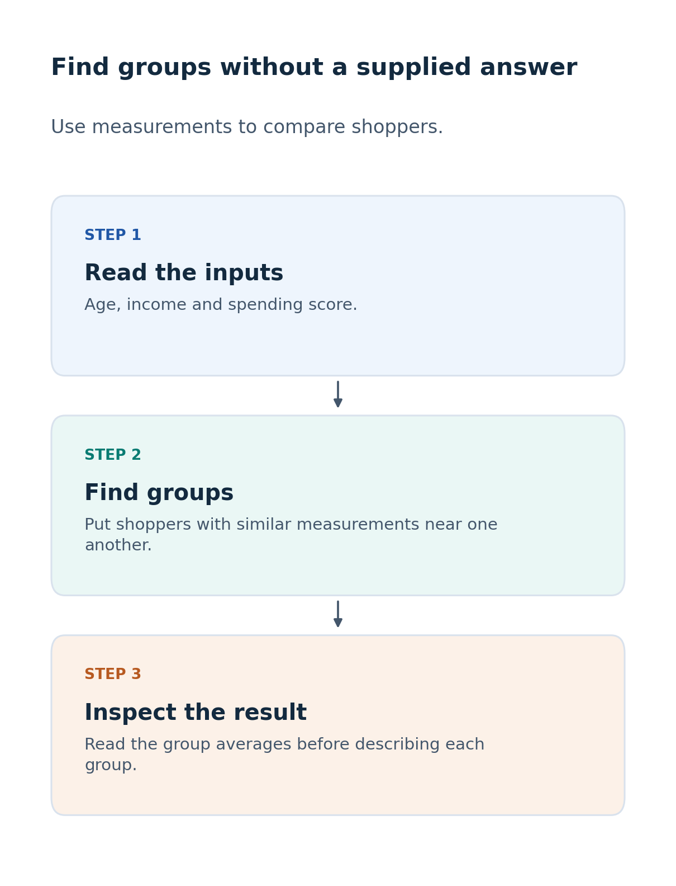
👀 Read the visual. Use measurements to compare shoppers.
👉 Use what you see. Group numbers are names assigned by the algorithm. Compare the profiles to understand the groups.
🧩 Common Algorithms
| Lesson name | What you’ll do | Download |
|---|---|---|
| Common Algorithms Practice | Explore how an algorithm can group shoppers from their measurements. | ⬇️ Lesson ZIP |
🧩 Clustering Algorithms
| Lesson name | What you’ll do | Download |
|---|---|---|
| Clustering Algorithms Practice | Find groups of shoppers with similar ages, incomes and spending scores. | ⬇️ Lesson ZIP |
Use measured inputs to find groups when the rows have no known group labels. Group numbers are names assigned by the algorithm. Use the plots to compare the groups’ shapes and profiles.
🟢 K-Means
| Lesson name | What you’ll do | Download |
|---|---|---|
| K-Means Practice | Choose three shopper groups and see where the fitted model puts new shoppers. | ⬇️ Lesson ZIP |
Read original customer measurements, scale them, and inspect group memberships and profiles.
📋 Sample data
| age | income | spending |
|---|---|---|
| 21 | 25 | 71 |
| 23 | 28 | 73 |
| 26 | 31 | 68 |
| 42 | 55 | 41 |
| 43 | 59 | 45 |
| 46 | 62 | 43 |
| 59 | 89 | 77 |
| 62 | 93 | 80 |
Showing the first 8 of 9 rows. The CSV has the full sample.
▶️ Run. Unzip the lesson files and open a terminal in that folder. Install the lesson’s packages with python -m pip install -r requirements.txt, then run python lesson.py.
🔹 Steps in the script
- Read the CSV and check its inputs, including age, income, spending.
- Learn the conversion on the training inputs before applying it to a new row.
- Fit the model on the prepared training rows. Keep it for the checks below.
- Apply the fitted model to the new CSV rows and print a result for each row.
✅ Check. Look for Labels: [0, 0, 0, 2, 2, 2, 1, 1, 1] in the output excerpt below.
Labels: [0, 0, 0, 2, 2, 2, 1, 1, 1]
age income spending
group🧪 Change one input. Change a measurement in new_inputs.csv. The fitted scaler and algorithm process each row.

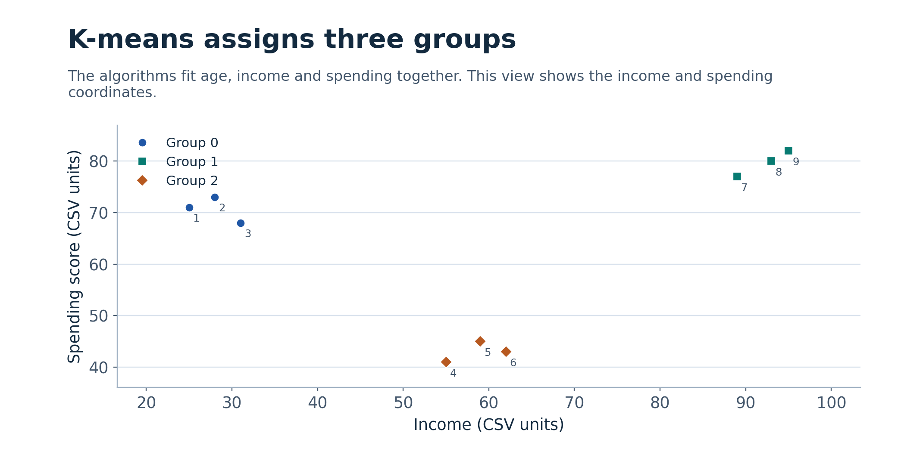
Open full-size image ↗👀 Read the visual. Colors show assigned groups. The clustering also used age, which does not appear on these axes.
👉 Use what you see. Read each group’s measurements before giving it a customer label. Try another row and see which group it joins.
💡 Takeaway. Choose a number of centers. Group labels have no inherent order.
🌳 Hierarchical Clustering
| Lesson name | What you’ll do | Download |
|---|---|---|
| Hierarchical Clustering Practice | See which shoppers merge first by reading the clustering tree from bottom to top. | ⬇️ Lesson ZIP |
Read original customer measurements, scale them, and inspect group memberships and profiles.
📋 Sample data
| age | income | spending |
|---|---|---|
| 21 | 25 | 71 |
| 23 | 28 | 73 |
| 26 | 31 | 68 |
| 42 | 55 | 41 |
| 43 | 59 | 45 |
| 46 | 62 | 43 |
| 59 | 89 | 77 |
| 62 | 93 | 80 |
Showing the first 8 of 9 rows. The CSV has the full sample.
▶️ Run. Unzip the lesson files and open a terminal in that folder. Install the lesson’s packages with python -m pip install -r requirements.txt, then run python lesson.py.
🔹 Steps in the script
- Read the CSV and check its inputs, including age, income, spending.
- Fit the clustering method using the full input table.
- Plot the values so you can see how they compare.
✅ Check. Look for Labels: [1, 1, 1, 2, 2, 2, 0, 0, 0] in the output excerpt below.
Labels: [1, 1, 1, 2, 2, 2, 0, 0, 0]
age income spending
group🧪 Change one input. Add one shopper to sample.csv and rerun to rebuild the tree using every row. Compare the lowest joins with the original tree.

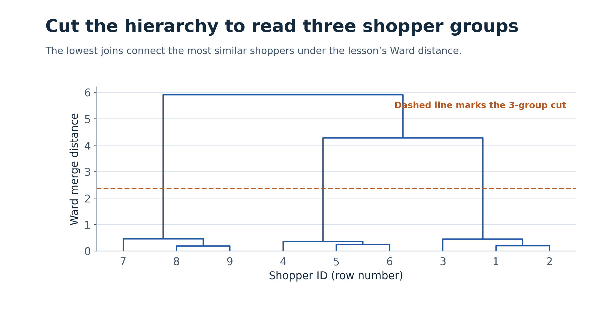
Open full-size image ↗👀 Read the visual. Read upward from the shopper IDs. Each bar shows where branches join. Count the three branches the dashed line crosses.
👉 Use what you see. Compare the same shopper IDs on the paired income and spending chart.

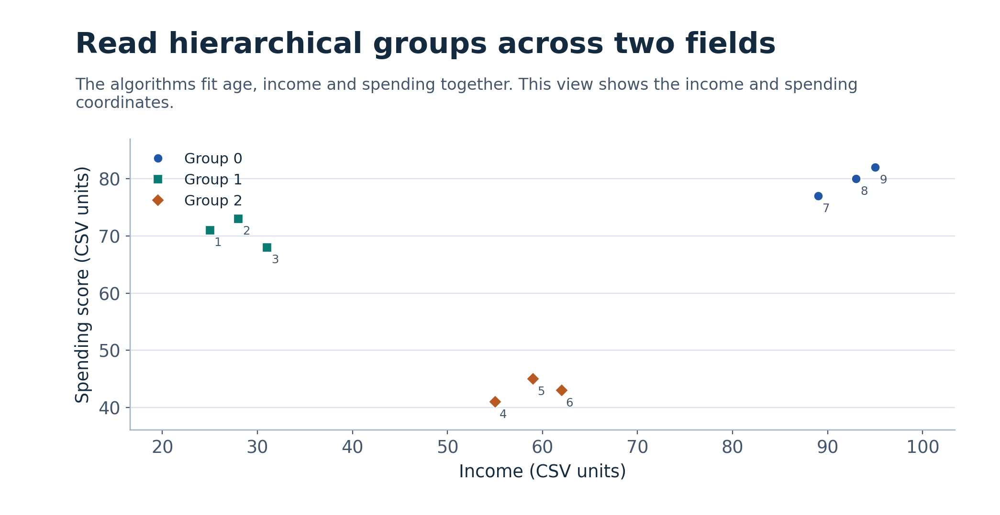
Open full-size image ↗👀 Read the visual. Match a shopper ID in this plot to the tree leaves. The model also uses age, which is absent from these axes.
👉 Use what you see. Compare the colored groups with the joins in the tree above. A different cut can produce a different number of groups.
💡 Takeaway. Agglomerative clustering builds a tree of groups. Change the cut by changing n_clusters.
🔵 DBSCAN
| Lesson name | What you’ll do | Download |
|---|---|---|
| DBSCAN Practice | Look for dense groups of shoppers and flag isolated points as noise. | ⬇️ Lesson ZIP |
Read original customer measurements, scale them, and inspect group memberships and profiles.
📋 Sample data
| age | income | spending |
|---|---|---|
| 21 | 25 | 71 |
| 23 | 28 | 73 |
| 26 | 31 | 68 |
| 42 | 55 | 41 |
| 43 | 59 | 45 |
| 46 | 62 | 43 |
| 59 | 89 | 77 |
| 62 | 93 | 80 |
Showing the first 8 of 9 rows. The CSV has the full sample.
▶️ Run. Unzip the lesson files and open a terminal in that folder. Install the lesson’s packages with python -m pip install -r requirements.txt, then run python lesson.py.
🔹 Steps in the script
- Read the CSV and check its inputs, including age, income, spending.
- Fit the clustering method using the full input table.
✅ Check. Look for Labels: [0, 0, 0, 1, 1, 1, 2, 2, 2] in the output excerpt below.
Labels: [0, 0, 0, 1, 1, 1, 2, 2, 2]
age income spending
group🧪 Change one input. Add an isolated shopper to sample.csv and rerun to find clusters again. Check whether its label is −1, which marks noise.
 Open full-size image ↗
Open full-size image ↗👀 Read the visual. These supplied rows all get a group label. An isolated row can get the noise label −1 when you rerun DBSCAN.
👉 Use what you see. Add a shopper far from the existing measurements and check whether its label becomes −1.
💡 Takeaway. DBSCAN means Density-Based Spatial Clustering of Applications with Noise. Try smaller eps to see noise rows labeled −1.
🎲 Gaussian Mixture Models (GMM)
| Lesson name | What you’ll do | Download |
|---|---|---|
| Gaussian Mixture Models (GMM) Practice | Give each shopper a probability of belonging to each group. | ⬇️ Lesson ZIP |
Read original customer measurements, scale them, and inspect group memberships and profiles.
📋 Sample data
| age | income | spending |
|---|---|---|
| 21 | 25 | 71 |
| 23 | 28 | 73 |
| 26 | 31 | 68 |
| 42 | 55 | 41 |
| 43 | 59 | 45 |
| 46 | 62 | 43 |
| 59 | 89 | 77 |
| 62 | 93 | 80 |
Showing the first 8 of 9 rows. The CSV has the full sample.
▶️ Run. Unzip the lesson files and open a terminal in that folder. Install the lesson’s packages with python -m pip install -r requirements.txt, then run python lesson.py.
🔹 Steps in the script
- Read the CSV and check its inputs, including age, income, spending.
- Learn the conversion on the training inputs before applying it to a new row.
- Fit the model on the prepared training rows. Keep it for the checks below.
- Apply the fitted model to the new CSV rows and print a result for each row.
✅ Check. Look for Labels: [0, 0, 0, 2, 2, 2, 1, 1, 1] in the output excerpt below.
Labels: [0, 0, 0, 2, 2, 2, 1, 1, 1]
age income spending
group🧪 Change one input. Change a measurement in new_inputs.csv. The fitted scaler and algorithm process each row.
 Open full-size image ↗
Open full-size image ↗👀 Read the visual. Colors show assigned groups. The clustering also used age, which does not appear on these axes.
👉 Use what you see. Look up the membership probabilities when a point falls between two groups. A weak preference can mean the assignment is uncertain.
💡 Takeaway. GMM can assign probabilities across several Gaussian components.
📉 Dimensionality Reduction
| Lesson name | What you’ll do | Download |
|---|---|---|
| Dimensionality Reduction Practice | Shrink three input measurements into fewer measurements you can inspect. | ⬇️ Lesson ZIP |
📊 Principal Component Analysis (PCA)
| Lesson name | What you’ll do | Download |
|---|---|---|
| Principal Component Analysis (PCA) Practice | Combine overlapping measurements into fewer columns and see how much variation they keep. | ⬇️ Lesson ZIP |
Read original measurements, reduce their dimensions, and inspect the first rows of the new representation.
📋 Sample data
Swipe or scroll to see every column.
| long | wide | score | group |
|---|---|---|---|
| 2 | 1 | 3 | 0 |
| 3 | 2 | 4 | 0 |
| 4 | 1 | 2 | 0 |
| 5 | 6 | 7 | 1 |
| 6 | 7 | 8 | 1 |
| 7 | 6 | 9 | 1 |
| 8 | 8 | 7 | 1 |
| 10 | 9 | 10 | 1 |
▶️ Run. Unzip the lesson files and open a terminal in that folder. Install the lesson’s packages with python -m pip install -r requirements.txt, then run python lesson.py.
🔹 Steps in the script
- Read the CSV and check its inputs, including long, wide, score.
- Learn the conversion on the training inputs before applying it to a new row.
- Apply the conversion learned from training to each new row.
✅ Check. Look for Variance explained: [0.94, 0.05] in the output excerpt below.
Variance explained: [0.94, 0.05]
Output shape: (8, 2)
First two rows: [[-2.3, -0.19], [-1.66, -0.16]]🧪 Change one input. Change a measurement in new_inputs.csv. The fitted scaler and algorithm process each row.
💡 Takeaway. Fit on training rows inside a prediction pipeline when evaluating a model.
Each new column is a mix of the original measurements. The variance values show how much spread the new columns retain.
🎨 t-Distributed Stochastic Neighbor Embedding (t-SNE)
| Lesson name | What you’ll do | Download |
|---|---|---|
| t-Distributed Stochastic Neighbor Embedding (t-SNE) Practice | Draw similar rows near one another in a two-dimensional plot. | ⬇️ Lesson ZIP |
Read original measurements, reduce their dimensions, and inspect the first rows of the new representation.
📋 Sample data
Swipe or scroll to see every column.
| long | wide | score | group |
|---|---|---|---|
| 2 | 1 | 3 | 0 |
| 3 | 2 | 4 | 0 |
| 4 | 1 | 2 | 0 |
| 5 | 6 | 7 | 1 |
| 6 | 7 | 8 | 1 |
| 7 | 6 | 9 | 1 |
| 8 | 8 | 7 | 1 |
| 10 | 9 | 10 | 1 |
▶️ Run. Unzip the lesson files and open a terminal in that folder. Install the lesson’s packages with python -m pip install -r requirements.txt, then run python lesson.py.
🔹 Steps in the script
- Read the CSV and check its inputs, including long, wide, score.
- Fit the transformation using all the displayed rows.
- Plot the values so you can see how they compare.
✅ Check. Look for Output shape: (8, 2) in the output excerpt below.
Output shape: (8, 2)
First two rows: [[-0.47999998927116394, 21.760000228881836], [-2.5999999046325684, 13.529999732971191]]🧪 Change one input. Add one row to sample.csv and rerun to recompute all the plotted positions. Nearby points are useful cues. Axis values and distances across separated groups have limited meaning.
 Open full-size image ↗
Open full-size image ↗👀 Read the visual. Look for neighboring row numbers. The axes are learned positions, and their signs and units have no fixed meaning.
👉 Use what you see. Use nearby points to look for local patterns. Check the original features before assigning meaning to the overall spacing.
💡 Takeaway. Use this for inspecting neighborhoods in the given data. Distances between far groups can be misleading.
🎯 Linear Discriminant Analysis (LDA)
| Lesson name | What you’ll do | Download |
|---|---|---|
| Linear Discriminant Analysis (LDA) Practice | Use known group labels to build a smaller set of measurements that separates the groups. | ⬇️ Lesson ZIP |
Read original measurements, reduce their dimensions, and inspect the first rows of the new representation.
LDA uses class labels to find a useful new axis, so it is supervised. Its position here follows the PDF’s order.
📋 Sample data
Swipe or scroll to see every column.
| long | wide | score | group |
|---|---|---|---|
| 2 | 1 | 3 | 0 |
| 3 | 2 | 4 | 0 |
| 4 | 1 | 2 | 0 |
| 5 | 6 | 7 | 1 |
| 6 | 7 | 8 | 1 |
| 7 | 6 | 9 | 1 |
| 8 | 8 | 7 | 1 |
| 10 | 9 | 10 | 1 |
▶️ Run. Unzip the lesson files and open a terminal in that folder. Install the lesson’s packages with python -m pip install -r requirements.txt, then run python lesson.py.
🔹 Steps in the script
- Read the CSV and check its inputs, including long, wide, score.
- Learn the conversion on the training inputs before applying it to a new row.
- Apply the conversion learned from training to each new row.
✅ Check. Look for Training class predictions: [0, 0, 0, 1, 1, 1, 1, 1] in the output excerpt below.
Training class predictions: [0, 0, 0, 1, 1, 1, 1, 1]
Output shape: (8, 1)
First two rows: [[-3.92], [-2.91]]🧪 Change one input. Change long, wide or score in one new row. Compare the resulting projection with the training projections.
💡 Takeaway. LDA is supervised because it uses the class labels. PCA and t-SNE above do not use them.
🎛️ Independent Component Analysis (ICA)
| Lesson name | What you’ll do | Download |
|---|---|---|
| Independent Component Analysis (ICA) Practice | Use independent component analysis to separate patterns mixed across the measured columns. | ⬇️ Lesson ZIP |
Read original measurements, reduce their dimensions, and inspect the first rows of the new representation.
📋 Sample data
Swipe or scroll to see every column.
| long | wide | score | group |
|---|---|---|---|
| 2 | 1 | 3 | 0 |
| 3 | 2 | 4 | 0 |
| 4 | 1 | 2 | 0 |
| 5 | 6 | 7 | 1 |
| 6 | 7 | 8 | 1 |
| 7 | 6 | 9 | 1 |
| 8 | 8 | 7 | 1 |
| 10 | 9 | 10 | 1 |
▶️ Run. Unzip the lesson files and open a terminal in that folder. Install the lesson’s packages with python -m pip install -r requirements.txt, then run python lesson.py.
🔹 Steps in the script
- Read the CSV and check its inputs, including long, wide, score.
- Learn the conversion on the training inputs before applying it to a new row.
- Apply the conversion learned from training to each new row.
✅ Check. Look for Output shape: (8, 2) in the output excerpt below.
Output shape: (8, 2)
First two rows: [[-1.21, -0.82], [-0.86, -0.65]]
[2 1 3] -> [-1.21 -0.82]🧪 Change one input. Change a measurement in new_inputs.csv. The fitted scaler and algorithm process each row.
💡 Takeaway. ICA seeks comparatively independent signals. Component order and sign can vary.
🚨 Anomaly Detection
| Lesson name | What you’ll do | Download |
|---|---|---|
| Anomaly Detection Practice | Compare a typical parcel with one that needs a closer look. | ⬇️ Lesson ZIP |
🌲 Isolation Forest
| Lesson name | What you’ll do | Download |
|---|---|---|
| Isolation Forest Practice | Train on regular parcels and see which new measurements are unusual. | ⬇️ Lesson ZIP |
Train an anomaly detector on routine original shipments. Score one typical and one much heavier shipment.
📋 Sample data. Preview of the first 5 of 45 rows.
| Input 1 | Input 2 |
|---|---|
| 10.0012 | 4.1494 |
| 9.7259 | 3.5547 |
| 9.5453 | 3.5042 |
| 10.0601 | 4.6701 |
| 9.5078 | 3.6898 |
▶️ Run. Unzip the lesson files and open a terminal in that folder. Install the lesson’s packages with python -m pip install -r requirements.txt, then run python lesson.py.
🔹 Steps in the script
- Read the CSV and check its inputs, including minutes, kg.
- Read the new CSV rows, then apply the rules from the sample.
- Fit the model on the prepared training rows. Keep it for the checks below.
✅ Check. Look for Example training shipments: [[10.0, 4.15], [9.73, 3.55], [9.55, 3.5]] in the output excerpt below.
Example training shipments: [[10.0, 4.15], [9.73, 3.55], [9.55, 3.5]]
Typical / unusually large: [1, -1, -1]🧪 Change one input. Edit the rows in new_inputs.csv. Compare a typical case with an unusually heavy parcel. A flag means check the original record.
💡 Takeaway. −1 means the detector flagged the row. Investigate the source before removing anything.
🟣 One-Class SVM
| Lesson name | What you’ll do | Download |
|---|---|---|
| One-Class SVM Practice | Learn a boundary around typical parcels and check which new ones fall outside. | ⬇️ Lesson ZIP |
Train an anomaly detector on routine original shipments. Score one typical and one much heavier shipment.
📋 Sample data. Preview of the first 5 of 45 rows.
| Input 1 | Input 2 |
|---|---|
| 10.0012 | 4.1494 |
| 9.7259 | 3.5547 |
| 9.5453 | 3.5042 |
| 10.0601 | 4.6701 |
| 9.5078 | 3.6898 |
▶️ Run. Unzip the lesson files and open a terminal in that folder. Install the lesson’s packages with python -m pip install -r requirements.txt, then run python lesson.py.
🔹 Steps in the script
- Read the CSV and check its inputs, including minutes, kg.
- Read the new CSV rows, then apply the rules from the sample.
- Fit the model on the prepared training rows. Keep it for the checks below.
✅ Check. Look for Example training shipments: [[10.0, 4.15], [9.73, 3.55], [9.55, 3.5]] in the output excerpt below.
Example training shipments: [[10.0, 4.15], [9.73, 3.55], [9.55, 3.5]]
Typical / unusually large: [1, -1, -1]🧪 Change one input. Edit the rows in new_inputs.csv. Compare a typical case with an unusually heavy parcel. A flag means check the original record.
💡 Takeaway. −1 means the detector flagged the row. Investigate the source before removing anything.
📏 Z-score Algorithm
| Lesson name | What you’ll do | Download |
|---|---|---|
| Z-score Algorithm Practice | Check how many standard deviations a parcel weight lies from the training average. | ⬇️ Lesson ZIP |
Measure how far three new readings are from the training average. Each z-score uses the training standard deviation as its unit.
📋 Sample data. Preview of the first 5 of 8 rows.
| training |
|---|
| 9 |
| 8 |
| 10 |
| 11 |
| 11 |
▶️ Run. Unzip the lesson files and open a terminal in that folder. Install the lesson’s packages with python -m pip install -r requirements.txt, then run python lesson.py.
🔹 Steps in the script
- Read the CSV and check its inputs, including weight_kg.
- Measure each new weight in training standard deviations from the mean.
- Flag weights more than three training standard deviations from the mean.
✅ Check. The 40 kg parcel is 24.49 training standard deviations above the mean. It is the only flagged parcel.
Z-scores: [0.0, 24.49, 1.63]
Flagged: [False, True, False]🧪 Change one input. Edit the rows in new_inputs.csv. Compare a typical case with an unusually heavy parcel. A flag means check the original record.
A flag means the number is far from the training average. Check how it was measured before correcting or removing it.
🛒 Association
| Lesson name | What you’ll do | Download |
|---|---|---|
| Association Practice | Find which items shoppers put in the same basket. | ⬇️ Lesson ZIP |
🧺 Apriori Algorithm
| Lesson name | What you’ll do | Download |
|---|---|---|
| Apriori Algorithm Practice | Find frequent pairs by testing item combinations and dropping rare candidates. | ⬇️ Lesson ZIP |
🌳 Frequent Pattern Growth
| Lesson name | What you’ll do | Download |
|---|---|---|
| Frequent Pattern Growth Practice | Find common item pairs by organizing recurring items in a tree. | ⬇️ Lesson ZIP |
Read five original baskets. Compare Apriori and FP-Growth on the same Boolean input and calculate the confidence of a rule.
📋 Sample data
| items |
|---|
| milk|bread |
| milk|bread|eggs |
| bread |
| milk|bread |
| milk|apples |
▶️ Run. Unzip the lesson files and open a terminal in that folder. Install the lesson’s packages with python -m pip install -r requirements.txt, then run python lesson.py.
🔹 Steps in the script
- Read the baskets. A vertical bar separates the items in each basket.
- Compare the printed output with the original values.
✅ Check. Look for fpgrowth [(('bread', 'milk'), 0.6)] in the output excerpt below.
fpgrowth [(('bread', 'milk'), 0.6)]
Milk to bread confidence: 0.75🧪 Change one input. Add or change a basket in sample.csv. Use | between items. The printed support is the share of baskets that contain the item set.
💡 Takeaway. The pair appears in 3 of 5 baskets. Bread occurs in 3 of the 4 baskets containing milk.
🟣 3.3. Semi-Supervised Learning
| Lesson name | What you’ll do | Download |
|---|---|---|
| 3.3. Semi-Supervised Learning Practice | Fit a small classifier using rows with known and missing labels. | ⬇️ Lesson ZIP |

👀 Read the visual. Keep separate known answers to check whether the extra rows helped.
👉 Use what you see. If guesses are uncertain or checks get worse, collect more confirmed labels.
🧪 Common Algorithms
| Lesson name | What you’ll do | Download |
|---|---|---|
| Common Algorithms Practice | Try one way to use both labeled and unlabeled rows before predicting new cases. | ⬇️ Lesson ZIP |
🧭 Semi-Supervised Support Vector Machines (S3VM)
| Lesson name | What you’ll do | Download |
|---|---|---|
| Semi-Supervised Support Vector Machines (S3VM) Practice | See how a small support-vector example can choose labels for some unknown rows. | ⬇️ Lesson ZIP |
Use a small transductive SVM exercise. Try all labelings of four unlabeled points, fit an SVM for each, and keep the lowest weighted objective. The three new inputs come from a separate file and have no known answers. The script accepts four blank training labels and known classes −1 and 1.
📋 Sample data. Preview of the first 5 of 8 rows.
| Input 1 | Input 2 |
|---|---|
| -2 | -2 |
| -1.6 | -1.9 |
| 1.8 | 1.9 |
| 2 | 2 |
| -1.4 | -1.3 |
▶️ Run. Unzip the lesson files and open a terminal in that folder. Install the lesson’s packages with python -m pip install -r requirements.txt, then run python lesson.py.
🔹 Steps in the script
- Read the CSV and check its inputs, including x, y, label.
- Try balanced guesses for the unknown labels and keep the lowest-loss fit.
- Apply the fitted model to the new CSV rows and print a result for each row.
✅ Check. Look for Chosen training pseudo-labels: (-1, -1, 1, 1) in the output excerpt below.
Chosen training pseudo-labels: (-1, -1, 1, 1)
Predictions for new rows: [-1, 1, 1]🧪 Change one input. Change x or y in new_inputs.csv. Keep two known classes and four unlabeled practice rows if editing sample.csv.
💡 Takeaway. The search solves a small balanced semi-supervised SVM formulation. Enumerating labels grows exponentially, so larger problems use an optimization solver.
🏷️ Label Propagation
| Lesson name | What you’ll do | Download |
|---|---|---|
| Label Propagation Practice | Pass labels from known points to nearby unknown points. | ⬇️ Lesson ZIP |
Mask all but four labels per class. Propagate those labels across nearby training points, then score a separate labeled holdout.
📋 Sample data. Preview of the first 5 of 72 rows.
| Input 1 | Input 2 |
|---|---|
| -1.999 | -1.761 |
| -2.2193 | -2.7125 |
| -2.3637 | -2.7933 |
| -1.9519 | -0.9278 |
| -2.3938 | -2.4964 |
▶️ Run. Unzip the lesson files and open a terminal in that folder. Install the lesson’s packages with python -m pip install -r requirements.txt, then run python lesson.py.
🔹 Steps in the script
- Read the CSV and check its inputs, including x, y, label.
- Set aside the check rows before the model learns.
- Fit the model on the prepared training rows. Keep it for the checks below.
- Apply the fitted model to the new CSV rows and print a result for each row.
✅ Check. Start by reading the count of labeled and unlabeled training rows. This example masks labels in the training set and scores against separate, labeled test rows.
Labeled / unlabeled training rows: 8 46
Holdout accuracy: 1.0
Predictions from new feature rows: [0, 1, 1]🧪 Change one input. Edit x or y in new_inputs.csv. These rows are kept separate from the rows with masked labels and the labeled check rows.
🔄 Self-Training
| Lesson name | What you’ll do | Download |
|---|---|---|
| Self-Training Practice | Use confident guesses as extra training labels and compare with the known check rows. | ⬇️ Lesson ZIP |
Fit an initial classifier with known labels. Let a self-training classifier add confident pseudo-labels. Compare both on the same untouched rows.
📋 Sample data. Preview of the first 5 of 72 rows.
| Input 1 | Input 2 |
|---|---|
| -1.999 | -1.761 |
| -2.2193 | -2.7125 |
| -2.3637 | -2.7933 |
| -1.9519 | -0.9278 |
| -2.3938 | -2.4964 |
▶️ Run. Unzip the lesson files and open a terminal in that folder. Install the lesson’s packages with python -m pip install -r requirements.txt, then run python lesson.py.
🔹 Steps in the script
- Read the CSV and check its inputs, including x, y, label.
- Set aside the check rows before the model learns.
- Identify the labeled training rows for the baseline.
- Fit the model on the prepared training rows. Keep it for the checks below.
- Apply the fitted model to the new CSV rows and print a result for each row.
✅ Check. In the supplied run, both methods score 1.0 on the held-out rows. The model assigned 46 pseudo-labels, and the measured score stayed the same.
Labeled / unlabeled training rows: 8 46
Added pseudo-labels: 46
Labeled-only / self-training: 1.0 1.0🧪 Change one input. Edit x or y in new_inputs.csv. These rows are kept separate from the rows with masked labels and the labeled check rows.
A pseudo-label is the model’s guess. Check the held-out rows with known answers before deciding whether adding guesses helped.
🤝 Co-Training
| Lesson name | What you’ll do | Download |
|---|---|---|
| Co-Training Practice | Let models trained on different input columns teach each other from unlabeled rows. | ⬇️ Lesson ZIP |
Train two classifiers on separate measurements of the same original rows. Give each model’s most confident guesses to the other view and compare predictions on held-out rows.
📋 Sample data. Preview of the first 5 of 72 rows.
| Input 1 | Input 2 |
|---|---|
| -1.999 | -1.761 |
| -2.2193 | -2.7125 |
| -2.3637 | -2.7933 |
| -1.9519 | -0.9278 |
| -2.3938 | -2.4964 |
▶️ Run. Unzip the lesson files and open a terminal in that folder. Install the lesson’s packages with python -m pip install -r requirements.txt, then run python lesson.py.
🔹 Steps in the script
- Read the CSV and check its inputs, including x, y, label.
- Set aside the check rows before the model learns.
- Have the two classifiers exchange confident labels on unlabeled training rows.
- Apply the fitted model to the new CSV rows and print a result for each row.
✅ Check. Check Labels per view. Both classifiers have 13 labels after exchanging confident guesses. The toy held-out score is 1.0.
Labeled / unlabeled training rows: 8 46
Labels per view: [13, 13]
Holdout accuracy: 1.0🧪 Change one input. Edit x or y in new_inputs.csv. These rows are kept separate from the rows with masked labels and the labeled check rows.
📐 Regression
| Lesson name | What you’ll do | Download |
|---|---|---|
| Regression Practice | Train a model with a few known numbers, then use its confident estimates to add practice rows. | ⬇️ Lesson ZIP |
Hide half the original training prices, add predicted values only where two simple regressors agree, and evaluate the result on an untouched holdout.
📋 Sample data. Preview of the first 5 of 10 rows.
| Input 1 |
|---|
| 1 |
| 2 |
| 3 |
| 4 |
| 5 |
▶️ Run. Unzip the lesson files and open a terminal in that folder. Install the lesson’s packages with python -m pip install -r requirements.txt, then run python lesson.py.
🔹 Steps in the script
- Read the CSV and check its inputs, including input, answer.
- Set aside the check rows before the model learns.
- Keep half the training answers and compare guesses from two regressors.
- Fit the model on the prepared training rows. Keep it for the checks below.
- Apply the fitted model to the new CSV rows and print a result for each row.
✅ Check. The supplied run adds five predicted training values. Held-out MAE rises from 0.47 to 0.57 after adding them, so keep the baseline for this comparison.
Added values: 5
Holdout MAE, before / after: 0.47 0.57
Fresh estimates: [27.56, 60.9, 66.96]🧪 Change one input. Change the input in new_inputs.csv. The model supplies an estimated numeric value.
🟠 3.4. Reinforcement Learning
| Lesson name | What you’ll do | Download |
|---|---|---|
| 3.4. Reinforcement Learning Practice | Follow a robot’s moves and see the rewards it earns. | ⬇️ Lesson ZIP |

👀 Read the visual. Repeat with a new state so an agent can improve.
👉 Use what you see. Try both actions from cell 3. Compare the next state and reward before choosing a policy.
🎮 Key Concepts
| Lesson name | What you’ll do | Download |
|---|---|---|
| Key Concepts Practice | Connect the robot’s position, chosen move and reward using a short track. | ⬇️ Lesson ZIP |
🤖 Agent
| Lesson name | What you’ll do | Download |
|---|---|---|
| Agent Practice | See how a robot receives feedback after choosing which way to move. | ⬇️ Lesson ZIP |
The learner that chooses a move. In this exercise, follow the dot on the track.
🌍 Environment
| Lesson name | What you’ll do | Download |
|---|---|---|
| Environment Practice | Read the track rules that decide what happens after each move. | ⬇️ Lesson ZIP |
The world the learner plays in. It is a track with five cells and a goal at cell 4.
↔︎️ Actions
| Lesson name | What you’ll do | Download |
|---|---|---|
| Actions Practice | Try moving left and right from the same starting cell. | ⬇️ Lesson ZIP |
The moves the agent can make. In this exercise, 0 means left and 1 means right.
📍 State
| Lesson name | What you’ll do | Download |
|---|---|---|
| State Practice | Give the robot different starting positions and see its next state. | ⬇️ Lesson ZIP |
What the agent knows now. Here it is the number of the cell it is standing in.
⭐ Reward
| Lesson name | What you’ll do | Download |
|---|---|---|
| Reward Practice | Compare the rewards for an ordinary move and a move that reaches the goal. | ⬇️ Lesson ZIP |
A number received after a move. Reaching the goal gives +1. Every other move costs 0.02.
🧭 Policy
| Lesson name | What you’ll do | Download |
|---|---|---|
| Policy Practice | Follow a simple rule for choosing moves and compare the resulting rewards. | ⬇️ Lesson ZIP |
A rule for choosing an action. The example’s policy always moves right.
📈 Value Function
| Lesson name | What you’ll do | Download |
|---|---|---|
| Value Function Practice | Add future rewards with more weight on the rewards that come sooner. | ⬇️ Lesson ZIP |
A value function is the expected discounted return when a policy starts from a given state. This lesson follows one fixed sequence and calculates the discounted return for that sequence.
Let a toy agent follow a simple policy on a five-cell track. Print its states, rewards, and discounted return. The policy always moves right, so you can compare the total after changing the starting cell.
▶️ Run. Unzip the lesson files and open a terminal in that folder. Install the lesson’s packages with python -m pip install -r requirements.txt, then run python lesson.py.
🔹 Steps in the script
- Read the track rules. Each row describes one move and its reward.
- Read what happens after this move from the track table.
- Give later rewards less weight, then add them to find the discounted return.
✅ Check. Starting at cell 0, the agent moves right four times. The last move gives a reward of 1.00. The discounted return for the whole route rounds to 0.8.
Move From cell Action To cell Reward
1 0 Right 1 -0.02
2 1 Right 2 -0.02🧪 Change one input. Set start to 3 in new_inputs.csv and rerun. Find the row for 3 → 4. The reward for that move is 1.0.
🧪 Common Algorithms
| Lesson name | What you’ll do | Download |
|---|---|---|
| Common Algorithms Practice | Learn from trial moves until the robot can choose a better path. | ⬇️ Lesson ZIP |
🎯 Q-Learning
| Lesson name | What you’ll do | Download |
|---|---|---|
| Q-Learning Practice | Build a table of expected rewards for each cell and move. | ⬇️ Lesson ZIP |
Start with zero action values. Let the agent explore and update a small Q-table from observed moves and rewards. Print its learned policy.
▶️ Run. Unzip the lesson files and open a terminal in that folder. Install the lesson’s packages with python -m pip install -r requirements.txt, then run python lesson.py.
🔹 Steps in the script
- Read the track rules. Each row describes one move and its reward.
- Read what happens after this move from the track table.
- Read the new CSV rows, then apply the rules from the sample.
✅ Check. Look for Best actions (0 left, 1 right): [1, 1, 1, 1] in the output excerpt below.
Best actions (0 left, 1 right): [1, 1, 1, 1]
State values: [0.8, 0.86, 0.93, 1.0]
Moves for test starts: [1, 1, 1]🧪 Change one input. Change a starting cell (0–3) in new_inputs.csv. Read the saved-in-memory policy’s preferred move, 0 left or 1 right.
 Open full-size image ↗
Open full-size image ↗👀 Read the visual. Compare the two bars at your starting cell. The learned policy chooses the higher-valued move.
👉 Use what you see. At the same starting cell, choose the direction with the higher bar, then try it and check the reward.
🧠 Deep Q Networks (DQN)
| Lesson name | What you’ll do | Download |
|---|---|---|
| Deep Q Networks (DQN) Practice | Teach a small neural network to score left and right moves. | ⬇️ Lesson ZIP |
Replace the Q-table with a small neural network. Train on a generated replay batch and use a separate target copy for the next-state values.
Advanced. The model has two outputs. One estimates the value of moving left, and one estimates the value of moving right.
▶️ Run. Unzip the lesson files and open a terminal in that folder. Install the lesson’s packages with python -m pip install -r requirements.txt, then run python lesson.py.
🔹 Steps in the script
- Read the track rules. Each row describes one move and its reward.
- Read what happens after this move from the track table.
- Read the new CSV rows, then apply the rules from the sample.
✅ Check. Look for Replay transitions: 8 in the output excerpt below.
Replay transitions: 8
DQN policy: [1, 1, 1, 1]
Moves for test starts: [1, 1, 1]🧪 Change one input. Try changing start from 0 to 3 in new_inputs.csv. Compare the new output.
💡 Takeaway. The replay batch holds the toy environment’s transitions. In an image task, replace the one-hot state input with an encoder for the pixels.
📈 Policy Gradient Methods
| Lesson name | What you’ll do | Download |
|---|---|---|
| Policy Gradient Methods Practice | Improve the probability of choosing a move that has paid off. | ⬇️ Lesson ZIP |
🎭 Actor-Critic
| Lesson name | What you’ll do | Download |
|---|---|---|
| Actor-Critic Practice | Use one part to choose actions and another to estimate how good they are. | ⬇️ Lesson ZIP |
Run direct policy gradient and actor–critic on a one-state environment. Both learn which button pays more. Actor–critic also learns a baseline value.
Advanced. The actor chooses a button. The critic estimates how rewarding the choice is. The actor changes its choices based on how the reward compares with the estimate.
▶️ Run. Unzip the lesson files and open a terminal in that folder. Install the lesson’s packages with python -m pip install -r requirements.txt, then run python lesson.py.
🔹 Steps in the script
- Read the CSV and check its inputs, including button, chance_of_reward.
- Compare the printed output with the original values.
✅ Check. Look for Policy gradient chosen button: 1 in the output excerpt below.
Policy gradient chosen button: 1
Actor-Critic chosen button: 1
Estimated policy value: 0.72🧪 Change one input. Swap the two reward chances in sample.csv. Rerun and see which button each method prefers.
🌳 Monte Carlo Tree Search (MCTS)
| Lesson name | What you’ll do | Download |
|---|---|---|
| Monte Carlo Tree Search (MCTS) Practice | Try several possible future move sequences before choosing a first move. | ⬇️ Lesson ZIP |
Try tree search on the original five-cell track. Expand unvisited branches, choose known branches by an upper confidence bound, and back up a rollout return.
Advanced. Try several paths from the first cell. Give a branch more trials if it looks good or has barely been explored.
▶️ Run. Unzip the lesson files and open a terminal in that folder. Install the lesson’s packages with python -m pip install -r requirements.txt, then run python lesson.py.
🔹 Steps in the script
- Read the track rules. Each row describes one move and its reward.
- Read what happens after this move from the track table.
✅ Check. Look for First-step visits: [17, 223] in the output excerpt below.
First-step visits: [17, 223]
Recommended first action: 1🧪 Change one input. Change the ordinary move reward in sample.csv. Keep the goal and the list of state/action pairs. See whether the planner's first move changes.
🎮 Model-Free
| Lesson name | What you’ll do | Download |
|---|---|---|
| Model-Free Practice | Learn which moves pay off through trial runs without needing a planning model. | ⬇️ Lesson ZIP |
Run Q-Learning by changing the per-move penalty, or use Policy Optimization with different rewards. Both learn from observed feedback.
🗺️ Model-Based
| Lesson name | What you’ll do | Download |
|---|---|---|
| Model-Based Practice | Plan moves using rules that describe what happens next. | ⬇️ Lesson ZIP |
🧪 Learn the Model
| Lesson name | What you’ll do | Download |
|---|---|---|
| Learn the Model Practice | Build a small transition table from observed moves and use it to plan. | ⬇️ Lesson ZIP |
🎲 Given the Model
| Lesson name | What you’ll do | Download |
|---|---|---|
| Given the Model Practice | Plan the best move using a transition table that is already available. | ⬇️ Lesson ZIP |
Generate one observation for each state-action pair and store the resulting transition as a learned model. Compare a small look-ahead planner with the original rules and with the learned table.
▶️ Run. Unzip the lesson files and open a terminal in that folder. Install the lesson’s packages with python -m pip install -r requirements.txt, then run python lesson.py.
🔹 Steps in the script
- Read the track rules. Each row describes one move and its reward.
- Read what happens after this move from the track table.
- Read the new CSV rows, then apply the rules from the sample.
✅ Check. Look for given-the-model first-action values: [0.74, 0.8] in the output excerpt below.
given-the-model first-action values: [0.74, 0.8]
Best action: 1
Start 0, planned values: [0.7403087499999998, 0.8003249999999998]🧪 Change one input. Edit start in new_inputs.csv. The planner reads the supplied transition rules directly.
💡 Takeaway. The deterministic table has every state-action pair. With incomplete or uncertain observations, quantify the uncertainty before using it for planning.
🗂️ Summary of Machine Learning Categories
| Lesson name | What you’ll do | Download |
|---|---|---|
| Summary of Machine Learning Categories Practice | Match a delivery problem to one of the four learning categories. | ⬇️ Lesson ZIP |
✅ Try the dedicated task. Match the kind of feedback to the learning category. Edit a row in new_inputs.csv to go from known answers to some answers and compare the category.
| PDF category | Run first | What to check |
|---|---|---|
| 🔵 Supervised | Regression Algorithms or Classification Algorithms | Compare held-out predictions with known labels. |
| 🟢 Unsupervised | Clustering Algorithms, Dimensionality Reduction, Anomaly Detection | Read profiles, projections, or flagged records. |
| 🟣 Semi-Supervised | Label Propagation, Self-Training, Co-Training, or S3VM | Keep a fully labeled holdout. |
| 🟠 Reinforcement | Q-Learning, DQN, Policy Gradient Methods, Actor-Critic, or MCTS | Watch rewards and measure the final decision policy. |
🧠 Machine Learning Algorithms
| Lesson name | What you’ll do | Download |
|---|---|---|
| Machine Learning Algorithms Practice | Use delivery data to connect the diagram’s regression branch to a concrete prediction. | ⬇️ Lesson ZIP |
The PDF’s closing diagram calls this Every data scientist must know. Jump to the worksheet for each branch. PCA and ICA are mapped to dimensionality reduction, and standard K-Means to clustering.
📏 Simple Linear Regression
| Lesson name | What you’ll do | Download |
|---|---|---|
| Simple Linear Regression Practice | Use distance alone to predict delivery time. | ⬇️ Lesson ZIP |
📐 Multivariate Regression
| Lesson name | What you’ll do | Download |
|---|---|---|
| Multivariate Regression Practice | Predict delivery minutes and fuel use for each new delivery. | ⬇️ Lesson ZIP |
Use one input for a simple regression. Then fit multiple predictors for one target and fit a multivariate model for two targets.
📋 Sample data
| distance_km | weight_kg | delivery_minutes |
|---|---|---|
| 2 | 1 | 19 |
| 4 | 3 | 30 |
| 6 | 2 | 29 |
| 8 | 4 | 40 |
| 10 | 1 | 33 |
| 12 | 3 | 44 |
▶️ Run. Unzip the lesson files and open a terminal in that folder. Install the lesson’s packages with python -m pip install -r requirements.txt, then run python lesson.py.
🔹 Steps in the script
- Read the delivery table. Distance is in km, and weight is in kg.
- Set aside the check rows before the model learns.
- Teach the model from the training inputs and delivery time in minutes.
- Apply the fitted model to the new CSV rows and print a result for each row.
✅ Check. Look for Simple predictions: [45.0, 51.2] in the output excerpt below.
Simple predictions: [45.0, 51.2]
Multiple-predictor predictions: [31.0, 42.0]
Two outcomes per row: [[31.0, 1.55], [42.0, 1.95]]🧪 Change one input. Enter another distance and weight. Read the separate columns for estimated minutes and fuel litres.
💡 Takeaway. Multiple linear regression uses more than one predictor. In stricter usage, multivariate regression predicts more than one outcome.
| Branch from the diagram | Workbook links |
|---|---|
| Supervised → Classification | Naive Bayes, Logistic Regression, KNN, SVM, Random Forest, Decision Trees. |
| Supervised → Regression | Simple Linear Regression, Multivariate Regression, Lasso Regression, SVR, Random Forest, Decision Trees. |
| Unsupervised | K-Means and DBSCAN, PCA and ICA, Frequently occurring items, Apriori and FP-Growth, Z-score and Isolation Forest. |
| Semi-Supervised → Classification and Regression | Self-Training, Co-Training, Regression. |
| Reinforcement → Model-Free and Model-Based | Policy Optimization, Q-Learning, Learn the Model, Given the Model. |
🛠️ Applied model checks and capstone
🧪 442 · Choose the right data split
| Lesson name | What you’ll do | Download |
|---|---|---|
| Choose the right data split Core | Compare random, customer-grouped, and chronological splits on the same delivery data. | ⬇️ Lesson ZIP |
▶️ Run. Extract the ⬇️ Lesson ZIP. In the lesson folder, run python -m pip install -r requirements.txt once and then python lesson.py.
✅ Check. All plans share zero shipment IDs. The customer plan shares zero customers. Only the time plan puts all test dates after training. The script includes customer ID to show how known and unseen customers can change the task. Use that field only if you know it when making a prediction. Each split answers a different question.
 Open full-size image ↗
Open full-size image ↗👀 Read the visual. Choose different customers to test how the app handles people it has never seen. Choose later dates to test how an app trained on past orders handles future orders.
👉 Use what you see. Inspect the split check before looking at MAE. All three plans keep shipment IDs disjoint with the supplied data.
🧪 Change one input. Leave only customer in new_inputs.csv. Check that this plan keeps all rows for an unseen customer together.
| What the app will see | Pick this split | Check before fitting |
|---|---|---|
| Independent orders from the same setting | Random | Check that no shipment ID repeats across sets. |
| Customers who were never in training | Customer grouped | Check for zero shared customer IDs. |
| Later deliveries | Time ordered | Check that the last training date is before the first test date. |
➡️ Next Core lesson. Choose a cutoff for rare urgent orders. Cross-validation guide
🧪 443 · Spot overfitting with a validation curve
| Lesson name | What you’ll do | Download |
|---|---|---|
| Spot overfitting with a validation curve Practice | Vary model complexity, read the training and validation errors, and test the selected setting once. | ⬇️ Lesson ZIP |
▶️ Run. Extract the ⬇️ Lesson ZIP. In the lesson folder, run python -m pip install -r requirements.txt once and then python lesson.py.
✅ Check. A depth-25 tree has almost zero training error but higher validation error. Depth 3 wins on validation.
🧪 Change one input. Add a deeper tree to new_inputs.csv. Compare its training and validation errors with the shallower tree before checking the winner.

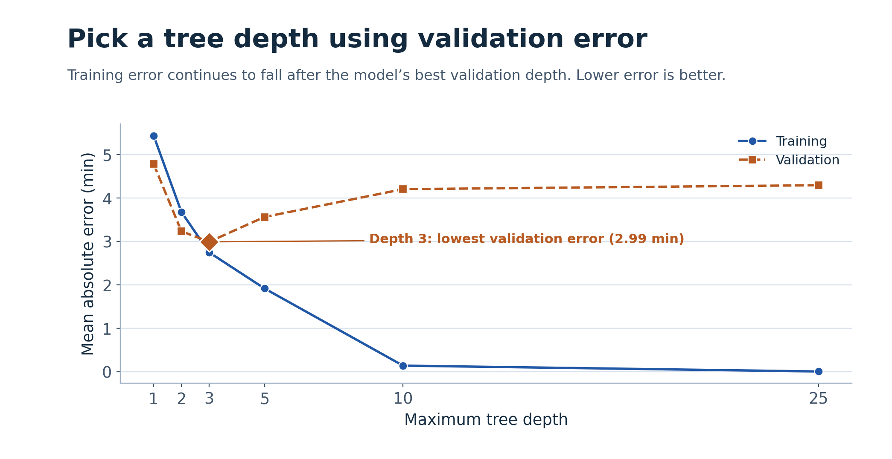
Open full-size image ↗👀 Read the visual. Compare the gap between the two lines at deeper settings. Use the minimum on the validation line to select the tree, then read test error separately.
🧪 444 · Choose a cutoff for rare urgent orders
| Lesson name | What you’ll do | Download |
|---|---|---|
| Choose a cutoff for rare urgent orders Core | Compare precision and recall and pick an alert cutoff on validation orders before testing. | ⬇️ Lesson ZIP |
▶️ Run. Extract the ⬇️ Lesson ZIP. In the lesson folder, run python -m pip install -r requirements.txt once and then python lesson.py.
✅ Check. The chosen cutoff catches 104 urgent test orders instead of 38. False alarms rise from 26 to 199.
🧪 Change one input. Change min_recall from 0.70 to 0.85. Check why the new cutoff is lower and how the alert counts change. Pick a target on validation only.
 Open full-size image ↗
Open full-size image ↗👀 Read the visual. Read precision and recall for the diamond, then compare default and chosen cutoffs in the separate test table.
➡️ Next Core lesson. Evaluate delivery errors by group.
🧪 445 · Check whether predicted probabilities are reliable
| Lesson name | What you’ll do | Download |
|---|---|---|
| Check whether predicted probabilities are reliable Practice | Fit a calibration model using validation rows and compare probability quality on a separate test set. | ⬇️ Lesson ZIP |
▶️ Run. Extract the ⬇️ Lesson ZIP. In the lesson folder, run python -m pip install -r requirements.txt once and then python lesson.py.
✅ Check. The two Brier scores are close. In this test the raw forest scores 0.1081 and the adjusted forest 0.1083. Use the chart to see where the probability estimates differ.
🧪 Change one input. Change bins from 5 to 10. Compare the chart’s grouping. The Brier scores should stay the same.
 Open full-size image ↗
Open full-size image ↗👀 Read the visual. Closer to the diagonal means the group’s predicted rate was closer to what happened. The raw model has the slightly lower Brier score for these test rows.
🧪 446 · Evaluate delivery errors by route, weight and zone
| Lesson name | What you’ll do | Download |
|---|---|---|
| Evaluate delivery errors by route, weight and zone Core | Compare a delivery model to a median baseline on a larger batch of future deliveries. | ⬇️ Lesson ZIP |
▶️ Run. Extract the ⬇️ Lesson ZIP. In the lesson folder, run python -m pip install -r requirements.txt once and then python lesson.py.
✅ Check. On 180 later deliveries, model MAE is 2.89 minutes and the median baseline is 23.70. The Missing weight group has 12 orders and 6.39 minutes MAE.

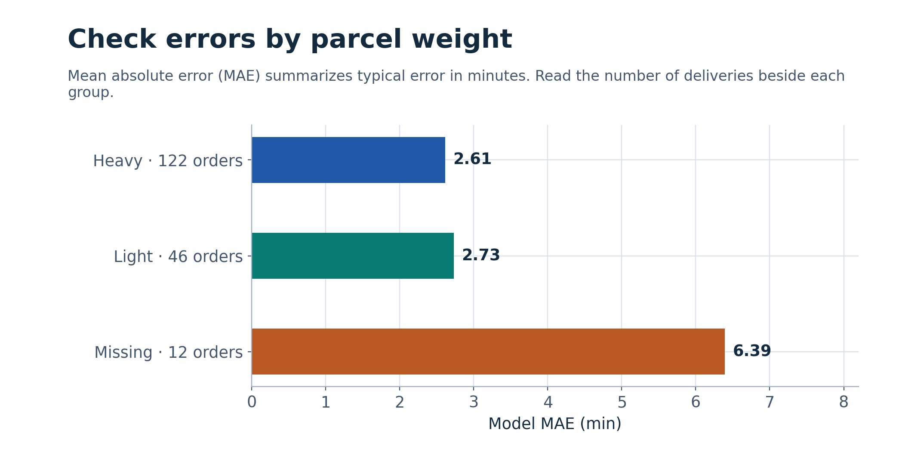
Open full-size image ↗👀 Read the visual. The missing-weight group has the largest error and the smallest count. Read both values before drawing a conclusion.
👉 Use what you see. Inspect the twelve underlying records to understand why the weight is missing. Check the same group in a later batch.
🧪 Change one input. Change short_route_max_km from 25 to 20. The route-group counts should change while the overall model MAE stays the same.
➡️ Next Core lesson. Build and monitor the delivery model.
🧪 447 · Capstone: From delivery CSV to local model service
| Lesson name | What you’ll do | Download |
|---|---|---|
| Capstone: From delivery CSV to local model service Core | Train, validate, test, and save a model. Send local requests and monitor later labeled deliveries. | ⬇️ Lesson ZIP |
▶️ Run. Extract the ⬇️ Lesson ZIP. In the lesson folder, run python -m pip install -r requirements.txt once and then python lesson.py.
✅ Check. Ridge wins validation. Test MAE is 2.80 minutes and later-batch MAE rises to 5.59. Three requests are accepted and three return 422.

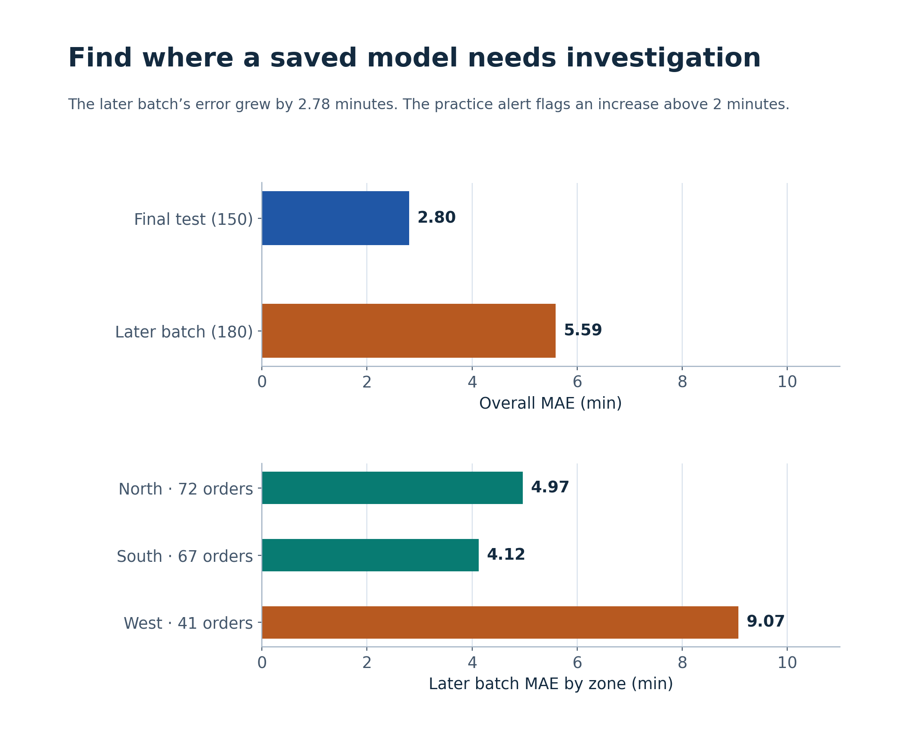
Open full-size image ↗👀 Read the visual. Compare the later batch with the final test. Using the unrounded errors, the increase is 2.78 minutes. It crosses the lesson’s 2-minute alert threshold.
👉 Use what you see. Start with the West orders and verify what changed before fitting or shipping a replacement.
🧪 Change one input. Change the 90 km request to 60 km. Run python send_requests.py to use your saved model. That request should receive 200 and an estimate.
Open the lesson README for the data dictionary, the 10-point self-check, and the command to open the local service. Run python lesson.py from the extracted capstone ZIP. It calls the included training, request, and monitoring modules. The request check uses a local test client. Training records package versions alongside the model. Only load Joblib artifacts you trained or trust. Model persistence
📦 Lesson downloads
| File or folder | What it contains |
|---|---|
lesson.py |
One complete example you can run. Its numbered comments explain what happens at each step. |
sample.csv |
Original practice rows. For supervised learning, some rows have measured answers to train or check the model. |
new_inputs.csv |
Where available, change these rows to try new inputs with the fitted model or transformation. |
README.md |
A small input table, setup instructions, examples of what to change, and what to look for in the output. |
requirements.txt |
Packages needed by that lesson. |
Use the badges to find Core, Practice, and Reference lessons. The links open the individual lesson ZIPs in sample_code_folder. They work from this Markdown after you extract the full download. The coverage table also lists each lesson’s PDF page and file names. Start with Your first prediction, or jump to Min-Max Scaling, Outliers, Data Sets, or Machine Learning Categories.
448 lessons
🌱 Start here
| Lesson name | What you’ll do | Download |
|---|---|---|
| 001 · Start here Practice | Read a delivery table, teach a model with three rows, and ask it for a new delivery time. Shared code with lesson 002. | ⬇️ Lesson ZIP |
| 002 · Your first prediction Core | Predict how long a 4 km delivery will take, then check the model against two trips with known times. Shared code with lesson 001. | ⬇️ Lesson ZIP |
🟩 1. Data Science Pipeline
| Lesson name | What you’ll do | Download |
|---|---|---|
| 003 · 1. Data Science Pipeline Practice | Turn a business question into something you can measure before you choose a model. Shared code with lesson 005. | ⬇️ Lesson ZIP |
🎯 1.1 Problem Definition
| Lesson name | What you’ll do | Download |
|---|---|---|
| 004 · 1.1 Problem Definition Practice | Decide what question the model should answer and how you will judge its answers. Shared code with lesson 006. | ⬇️ Lesson ZIP |
| 005 · Understand the business problem or use case Practice | Name the decision you want to make for a delivery, a support message, or a shopper. Shared code with lesson 003. | ⬇️ Lesson ZIP |
| 006 · Define the objective Practice | Decide whether the task needs a number, a category, or groups of similar rows. Shared code with lesson 004. | ⬇️ Lesson ZIP |
| 007 · Identify key performance metrics Practice | Pick a score that fits the question, such as minutes of error or how many urgent cases the model catches. | ⬇️ Lesson ZIP |
| 008 · Understand the domain knowledge related to the data Practice | Write down what the data means, including its units and what you know before predicting. | ⬇️ Lesson ZIP |
| 009 · Set constraints & assumptions Practice | Record the time, hardware and accuracy limits that affect your project. | ⬇️ Lesson ZIP |
📥 1.2 Data Collection
| Lesson name | What you’ll do | Download |
|---|---|---|
| 010 · 1.2 Data Collection Practice | Read orders from a CSV, a small database, a local API, and a sample web page. Shared code family (see lesson 011 for the same script). | ⬇️ Lesson ZIP |
| 011 · Identify data sources Practice | Compare four ways to bring order data into Python. Shared code family (see lesson 010 for the same script). | ⬇️ Lesson ZIP |
| 012 · Databases Practice | Put CSV orders into SQLite and read them back with a query. Shared code family (see lesson 010 for the same script). | ⬇️ Lesson ZIP |
| 013 · APIs Practice | Use a local test client to request order rows and read the JSON reply. Shared code family (see lesson 010 for the same script). | ⬇️ Lesson ZIP |
| 014 · Web scraping Practice | Read a sample HTML page and pick out order zones from tagged elements. Shared code family (see lesson 010 for the same script). | ⬇️ Lesson ZIP |
| 015 · Files Practice | Load a CSV with order IDs and zones, then check its rows. Shared code family (see lesson 010 for the same script). | ⬇️ Lesson ZIP |
| 016 · Gather structured and unstructured data Practice | Collect a delivery table, a text file, an image, and a short video into one folder. Shared code family (see lesson 017 for the same script). | ⬇️ Lesson ZIP |
| 017 · Structured data (tables, CSVs) Practice | Use the table of order times as structured data and save the columns your team needs. Shared code family (see lesson 016 for the same script). | ⬇️ Lesson ZIP |
| 018 · Unstructured data (text, images, videos) Practice | Create and read a text file, picture and short video, then check the file list. Shared code family (see lesson 016 for the same script). | ⬇️ Lesson ZIP |
| 019 · Store data in a centralized location Practice | Save the collected records, media and file list in one location. Shared code family (see lesson 016 for the same script). | ⬇️ Lesson ZIP |
| 020 · Local storage Practice | Write practice files into a local folder and open them again. Shared code family (see lesson 016 for the same script). | ⬇️ Lesson ZIP |
| 021 · Cloud storage Reference | Practice grouping files locally before following the cloud storage walkthrough. Local example + manual walkthrough. Shared code family (see lesson 016 for the same script). | ⬇️ Lesson ZIP |
| 022 · Database storage Practice | Store orders in a database table and retrieve them with SQL. Shared code family (see lesson 010 for the same script). | ⬇️ Lesson ZIP |
| 023 · Track metadata Practice | Record where a file came from, how large it is and what its columns contain. Shared code family (see lesson 016 for the same script). | ⬇️ Lesson ZIP |
| 024 · Data type Practice | Inspect the column types before sharing the delivery table. Shared code family (see lesson 016 for the same script). | ⬇️ Lesson ZIP |
| 025 · File size Practice | Read the size of the saved delivery file in bytes. Shared code family (see lesson 016 for the same script). | ⬇️ Lesson ZIP |
| 026 · Collection method Practice | Record how the sample file was collected so the next reader can trace it. Shared code family (see lesson 016 for the same script). | ⬇️ Lesson ZIP |
| 027 · Handle data privacy & security concerns Practice | Export a delivery table with order IDs and times while keeping contact details out of the shared file. Shared code family (see lesson 016 for the same script). | ⬇️ Lesson ZIP |
| 028 · GDPR Practice | Practice sharing only the fields the task needs. The sample uses fictitious contact details. Shared code family (see lesson 016 for the same script). | ⬇️ Lesson ZIP |
| 029 · HIPAA Practice | Practice keeping a contact field out of a shared export using fictitious records. Shared code family (see lesson 016 for the same script). | ⬇️ Lesson ZIP |
🧼 1.3 Data Cleaning & Preprocessing
| Lesson name | What you’ll do | Download |
|---|---|---|
| 030 · 1.3 Data Cleaning & Preprocessing Practice | Start by finding blanks and question marks in your delivery data. Shared code with lesson 031, lesson 032, lesson 033. | ⬇️ Lesson ZIP |
🕳️ 1.3.1 Handle Missing Values
| Lesson name | What you’ll do | Download |
|---|---|---|
| 031 · 1.3.1 Handle Missing Values Practice | Count missing entries and locate the delivery rows you need to review. Shared code with lesson 030, lesson 032, lesson 033. | ⬇️ Lesson ZIP |
| 032 · Identify missing values Core | Find which weights or delivery zones are missing and read the affected rows. Shared code with lesson 030, lesson 031, lesson 033. | ⬇️ Lesson ZIP |
| 033 · Null and NaN indicators Practice | Use pandas to count blank cells and question marks as missing. Shared code with lesson 030, lesson 031, lesson 032. | ⬇️ Lesson ZIP |
| 034 · Handle missing values Practice | Decide which incomplete delivery rows you can still use to train a model. Shared code with lesson 035. | ⬇️ Lesson ZIP |
| 035 · Remove Practice | Drop a spare note column and remove rows missing a required distance or known time. Shared code with lesson 034. | ⬇️ Lesson ZIP |
| 036 · Impute Practice | Fill a missing parcel weight before estimating the delivery time. Shared code with lesson 037. | ⬇️ Lesson ZIP |
| 037 · Numerical Data: Mean, Median, Mode, KNN Imputer Practice | Compare four ways of filling the same missing weight and see how each changes the prediction. Shared code with lesson 036. | ⬇️ Lesson ZIP |
| 038 · Mean Practice | Fill an empty weight with the average of the measured training weights. | ⬇️ Lesson ZIP |
| 039 · Median Practice | Fill an empty weight with the middle training weight after sorting. | ⬇️ Lesson ZIP |
| 040 · Mode Practice | Fill an empty weight with a value that appears most often in the training data. | ⬇️ Lesson ZIP |
| 041 · KNN Imputer Practice | Use two similar training deliveries to estimate a parcel’s missing weight. | ⬇️ Lesson ZIP |
| 042 · Categorical Data: Mode, "Unknown" placeholder Practice | Try the most common delivery zone and an explicit Unknown label for the same blank cell. | ⬇️ Lesson ZIP |
| 043 · Categorical Mode Practice | Fill a missing zone with the most common zone in the training rows. | ⬇️ Lesson ZIP |
| 044 · Unknown placeholder Practice | Keep a blank zone visible to the model by using Unknown as its own category. | ⬇️ Lesson ZIP |
| 045 · Time-Series Data: Forward Fill (ffill), Backward Fill (bfill) Practice | Fill a gap in daily counts using the previous day or the next recorded day. Shared code with lesson 046. | ⬇️ Lesson ZIP |
| 046 · Forward Fill (ffill) Practice | Carry the most recent known count forward to fill a missing day. Shared code with lesson 045. | ⬇️ Lesson ZIP |
| 047 · Backward Fill (bfill) Practice | Use the next recorded count to repair a gap in historical data. | ⬇️ Lesson ZIP |
| 048 · When missing values change the answer Practice | See how losing the slower trips can make the average delivery time look too low. | ⬇️ Lesson ZIP |
🔁 1.3.2 Remove Duplicates
| Lesson name | What you’ll do | Download |
|---|---|---|
| 049 · 1.3.2 Remove Duplicates Practice | Check whether repeated order records would give some deliveries extra weight in training. Shared code with lesson 050. | ⬇️ Lesson ZIP |
| 050 · Detect & Remove Exact Duplicates Practice | Keep one copy of each exact row before training on distance and time. Shared code with lesson 049. | ⬇️ Lesson ZIP |
| 051 · Handle Near-Duplicates Practice | Compare near-identical names and use the order ID before combining records. Shared code with lesson 052, lesson 053. | ⬇️ Lesson ZIP |
| 052 · Standardize text cases and remove spaces Practice | Clean up capitalization and spaces so the same name has a consistent comparison key. Shared code with lesson 051, lesson 053. | ⬇️ Lesson ZIP |
| 053 · Fuzzy matching Practice | Score how similar two names are, then use the order details to decide what to keep. Shared code with lesson 051, lesson 052. | ⬇️ Lesson ZIP |
🧰 1.3.3 Fix Inconsistent Data
| Lesson name | What you’ll do | Download |
|---|---|---|
| 054 · 1.3.3 Fix Inconsistent Data Practice | Get two systems’ dates, weight units and delivery zones into one shared format. Shared code family (see lesson 055 for the same script). | ⬇️ Lesson ZIP |
| 055 · Standardize formats Core | Turn dates, pounds and uneven zone names into consistent model inputs, then predict a new delivery. Shared code family (see lesson 054 for the same script). | ⬇️ Lesson ZIP |
| 056 · Convert date formats (MM/DD/YYYY to YYYY-MM-DD) Practice | Read US-style and ISO dates and convert both to YYYY-MM-DD. Shared code family (see lesson 054 for the same script). | ⬇️ Lesson ZIP |
| 057 · Convert text to lowercase and remove spaces Practice | Trim spaces and turn zone names into lowercase before the model uses them. Shared code family (see lesson 054 for the same script). | ⬇️ Lesson ZIP |
| 058 · Ensure correct units (kg vs. lbs) Practice | Convert pounds to kilograms so every weight means the same thing to the model. Shared code family (see lesson 054 for the same script). | ⬇️ Lesson ZIP |
| 059 · Fix typos and spelling variations Practice | Map known spelling variants to a single category before encoding it. | ⬇️ Lesson ZIP |
📊 1.3.4 Handle Outliers
| Lesson name | What you’ll do | Download |
|---|---|---|
| 060 · 1.3.4 Handle Outliers Practice | Use parcel weights to see which records deserve a closer look. | ⬇️ Lesson ZIP |
| 061 · Detection Methods Practice | Compare two ways to flag unusual parcel weights and inspect the chart. Shared code with lesson 062. | ⬇️ Lesson ZIP |
| 062 · Boxplots & Visualization Practice | Find a weight far from the others on a boxplot. Shared code with lesson 061. | ⬇️ Lesson ZIP |
| 063 · Z-score Method Practice | Flag a parcel that is more than three standard deviations from the average weight. | ⬇️ Lesson ZIP |
| 064 · Interquartile Range (IQR) Practice | Use the middle half of the weight distribution to set a review range. | ⬇️ Lesson ZIP |
| 065 · Handling Strategies Practice | Compare deleting a confirmed error, clipping a value and applying a log. Shared code with lesson 066, lesson 067, lesson 068. | ⬇️ Lesson ZIP |
| 066 · Remove Practice | Remove an impossible negative parcel weight before fitting a model. Shared code with lesson 065, lesson 067, lesson 068. | ⬇️ Lesson ZIP |
| 067 · Cap/Clip Values Practice | Cap very low and very high weights using limits learned from training rows. Shared code with lesson 065, lesson 066, lesson 068. | ⬇️ Lesson ZIP |
| 068 · Transform Data Practice | Use a log to shrink the effect of large weights, then compare the predicted time. Shared code with lesson 065, lesson 066, lesson 067. | ⬇️ Lesson ZIP |
| 069 · Spot, check, and handle an outlier Core | Review a recorded 90 kg parcel, correct it using the weighing slip, and compare the two predictions on a graph. | ⬇️ Lesson ZIP |
⚖️ 1.3.5 Normalize or Standardize Data
| Lesson name | What you’ll do | Download |
|---|---|---|
| 070 · 1.3.5 Normalize or Standardize Data Practice | Learn a scale from training deliveries and reuse it on new rows. Shared code with lesson 125, lesson 175. | ⬇️ Lesson ZIP |
| 071 · Normalization (Min-Max Scaling) Core | Scale known distances, then see what happens when training covers 1–50 km and someone enters 90 km. | ⬇️ Lesson ZIP |
| 072 · Standardization (Z-score Scaling) Practice | Measure distance and weight relative to their training averages, then estimate a new delivery time. | ⬇️ Lesson ZIP |
| 073 · When to use? Practice | Compare several transformations using the same rows and pick one based on validation error. Shared code with lesson 147. | ⬇️ Lesson ZIP |
🏷️ 1.3.6 Convert Categorical Data
| Lesson name | What you’ll do | Download |
|---|---|---|
| 074 · 1.3.6 Convert Categorical Data Practice | Turn labels such as color into numerical columns a model can read. Shared code with lesson 075, lesson 126, lesson 174. | ⬇️ Lesson ZIP |
| 075 · One-Hot Encoding (For Unordered Categories) Practice | Give each known color its own 0-or-1 column and try a new color. Shared code with lesson 074, lesson 126, lesson 174. | ⬇️ Lesson ZIP |
| 076 · Label Encoding (For Ordered Categories) Practice | Turn Low, Medium and High into ordered numbers before predicting a review action. | ⬇️ Lesson ZIP |
| 077 · Target Encoding (For High-Cardinality Categories) Practice | Summarize each supplier by its learned delay rate and try a supplier the model has never seen. | ⬇️ Lesson ZIP |
✍️ 1.3.7 Text Data Cleaning
| Lesson name | What you’ll do | Download |
|---|---|---|
| 078 · 1.3.7 Text Data Cleaning Practice | Clean the capitalization and punctuation in support messages before classifying them. Shared code with lesson 079, lesson 127. | ⬇️ Lesson ZIP |
| 079 · Convert to lowercase & remove punctuation Practice | Compare the original and cleaned message, then see which category the model predicts. Shared code with lesson 078, lesson 127. | ⬇️ Lesson ZIP |
| 080 · Remove stop words (e.g., "the", "and", "is") Practice | Drop selected common words such as the and is, then test a delivery or billing message. | ⬇️ Lesson ZIP |
| 081 · Tokenization & Lemmatization Practice | Split sentences into words and bring a few word variants back to the same form. Shared code with lesson 082, lesson 083. | ⬇️ Lesson ZIP |
| 082 · Tokenization Practice | Break a support message into words so the model can count them. Shared code with lesson 081, lesson 083. | ⬇️ Lesson ZIP |
| 083 · Lemmatization Practice | Bring words such as charges and charged back to charge in the sample vocabulary. Shared code with lesson 081, lesson 082. | ⬇️ Lesson ZIP |
| 084 · Convert Text to Numerical Representation Practice | Compare plain word counts and weighted word counts for short messages. | ⬇️ Lesson ZIP |
| 085 · CountVectorizer Practice | Make one column for each learned word and count it in a new message. | ⬇️ Lesson ZIP |
| 086 · TF-IDF Practice | Make words that stand out across messages count more than words that appear everywhere. | ⬇️ Lesson ZIP |
| 087 · Word Embeddings (Word2Vec, BERT, etc.) Practice | Represent a message with a short list of numbers and feed it into a classifier. Shared code with lesson 088. | ⬇️ Lesson ZIP |
| 088 · Word2Vec Practice | Learn small word vectors from practice messages and average them to represent a new message. Shared code with lesson 087. | ⬇️ Lesson ZIP |
| 089 · BERT Practice | Use a tiny BERT model to inspect how token vectors become one message vector. | ⬇️ Lesson ZIP |
✅ 1.3.8 Handle Boolean Data
| Lesson name | What you’ll do | Download |
|---|---|---|
| 090 · 1.3.8 Handle Boolean Data Practice | Make mixed yes/no entries consistent before a model uses them. Shared code with lesson 091. | ⬇️ Lesson ZIP |
| 091 · Convert Boolean values to standard format (1 or 0) Practice | Change different spellings of yes and no into 1 and 0 and flag unrecognized values. Shared code with lesson 090. | ⬇️ Lesson ZIP |
| 092 · Fill missing values with mode Practice | Fill an unknown signup flag with the most common training value before making a prediction. Shared code with lesson 128. | ⬇️ Lesson ZIP |
⏳ 1.3.9 Handle Date/Time Data
| Lesson name | What you’ll do | Download |
|---|---|---|
| 093 · 1.3.9 Handle Date/Time Data Practice | Read written dates and timestamps so Python can use them consistently. Shared code with lesson 094, lesson 130. | ⬇️ Lesson ZIP |
| 094 · Convert to datetime format Practice | Parse two date formats and a Unix timestamp, and spot an unreadable value. Shared code with lesson 093, lesson 130. | ⬇️ Lesson ZIP |
| 095 · Extract useful features (Year, Month, Day, Weekday, Hour, etc.) Practice | Turn one timestamp into model inputs such as weekday and hour. | ⬇️ Lesson ZIP |
| 096 · Year Practice | Pull the year out of each order date. | ⬇️ Lesson ZIP |
| 097 · Month Practice | Pull the month out of each order date. | ⬇️ Lesson ZIP |
| 098 · Day Practice | Pull the day of the month out of each order date. | ⬇️ Lesson ZIP |
| 099 · Weekday Practice | Find the day of the week from each timestamp. | ⬇️ Lesson ZIP |
| 100 · Hour Practice | Get the hour of the day so the model can use time of day. | ⬇️ Lesson ZIP |
| 101 · Handle missing dates using interpolation Practice | Estimate a missing time-series reading from the readings on either side. | ⬇️ Lesson ZIP |
🔢 1.3.10 Handle Large Numbers
| Lesson name | What you’ll do | Download |
|---|---|---|
| 102 · 1.3.10 Handle Large Numbers Practice | Check how a log makes large numeric values easier to compare. Shared code with lesson 103, lesson 136, lesson 167. | ⬇️ Lesson ZIP |
| 103 · Apply Log Transformation (if data is highly skewed) Practice | Use a log so a few very large readings have less influence on the scale. Shared code with lesson 102, lesson 136, lesson 167. | ⬇️ Lesson ZIP |
| 104 · Convert to scientific notation (if values are too large) Practice | Display large numbers in compact scientific notation and read the original value alongside them. Shared code with lesson 129. | ⬇️ Lesson ZIP |
🗂️ Data Types, Issues & Preprocessing Techniques
| Lesson name | What you’ll do | Download |
|---|---|---|
| 105 · Data Types, Issues & Preprocessing Techniques Practice | Turn a nested record into a flat row and identify the fields a model can use. Shared code family (see lesson 109 for the same script). | ⬇️ Lesson ZIP |
| 106 · Geospatial (Lat/Long, Addresses) Practice | Look up coordinates for three depots and use them to estimate delivery time. Shared code with lesson 107, lesson 108. | ⬇️ Lesson ZIP |
| 107 · Convert to coordinates Practice | Turn a known depot name into latitude and longitude. Shared code with lesson 106, lesson 108. | ⬇️ Lesson ZIP |
| 108 · Geocoding APIs Reference | Try a local address lookup and see how it handles an address outside its small list. Local example + manual walkthrough. Shared code with lesson 106, lesson 107. | ⬇️ Lesson ZIP |
| 109 · Complex Data (JSON, XML, Dictionaries) Practice | Read the same delivery fields from a nested dictionary, JSON, and XML. Shared code family (see lesson 105 for the same script). | ⬇️ Lesson ZIP |
| 110 · Flatten JSON Practice | Flatten nested parcel details into named table columns. Shared code family (see lesson 105 for the same script). | ⬇️ Lesson ZIP |
| 111 · Extract XML fields Practice | Read relevant fields from an XML record and compare them with the tabular version. Shared code family (see lesson 105 for the same script). | ⬇️ Lesson ZIP |
| 112 · Dictionaries and missing keys Practice | Handle a dictionary that lacks a parcel weight without losing the other fields. Shared code family (see lesson 105 for the same script). | ⬇️ Lesson ZIP |
| 113 · Images (Pixels, Matrices) Practice | Turn simple color pictures into a small matrix of numbers. Shared code with lesson 115, lesson 116, lesson 117. | ⬇️ Lesson ZIP |
| 114 · Image embeddings Practice | Summarize a drawing with two numeric measurements and use them to predict its direction. | ⬇️ Lesson ZIP |
| 115 · Resize images Practice | Resize training and test pictures to the same dimensions. Shared code with lesson 113, lesson 116, lesson 117. | ⬇️ Lesson ZIP |
| 116 · Grayscale Practice | Turn RGB pictures into a single brightness channel before classifying them. Shared code with lesson 113, lesson 115, lesson 117. | ⬇️ Lesson ZIP |
| 117 · Convolutional Neural Networks (CNN) Practice | Pass a tiny image through a convolution before predicting light or dark. Shared code with lesson 113, lesson 115, lesson 116. | ⬇️ Lesson ZIP |
| 118 · Audio (Waves, Spectrograms) Practice | Create tones, inspect how their pitch looks in a plot, and classify them. Shared code with lesson 119, lesson 120, lesson 121. | ⬇️ Lesson ZIP |
| 119 · WAV and MP3 Practice | Create a WAV tone and compare a converted MP3 with its decoded waveform. Shared code with lesson 118, lesson 120, lesson 121. | ⬇️ Lesson ZIP |
| 120 · Spectrograms Practice | See how a tone’s frequencies appear in a spectrogram. Shared code with lesson 118, lesson 119, lesson 121. | ⬇️ Lesson ZIP |
| 121 · MFCC features Practice | Turn short tones into MFCC features and use them to predict low or high pitch. Shared code with lesson 118, lesson 119, lesson 120. | ⬇️ Lesson ZIP |
| 122 · Video (Frames, Sequences) Practice | Make a short video from frames and classify which way an object moves. Shared code with lesson 123, lesson 124. | ⬇️ Lesson ZIP |
| 123 · MP4 and frame extraction Practice | Save sample frames as MP4 and read the frames back for a model. Shared code with lesson 122, lesson 124. | ⬇️ Lesson ZIP |
| 124 · CNN and LSTM sequence modeling Practice | Use a CNN to read each frame and an LSTM to follow the movement over time. Shared code with lesson 122, lesson 123. | ⬇️ Lesson ZIP |
| 125 · Numeric (int, float) Practice | Use whole-number and decimal measurements in a delivery model. Shared code with lesson 070, lesson 175. | ⬇️ Lesson ZIP |
| 126 · Categorical (enum, labels) Practice | Turn category names into separate 0-or-1 columns for a model. Shared code with lesson 074, lesson 075, lesson 174. | ⬇️ Lesson ZIP |
| 127 · Text (strings) Practice | Clean short text strings and turn their word counts into model inputs. Shared code with lesson 078, lesson 079. | ⬇️ Lesson ZIP |
| 128 · Boolean (True/False) Practice | Change a yes/no switch into a numeric input and fill missing values from training. Shared code with lesson 092. | ⬇️ Lesson ZIP |
| 129 · Large Numbers (BigInt, Long Float) Practice | Read large values and display them in a shorter format. Shared code with lesson 104. | ⬇️ Lesson ZIP |
| 130 · Datetime (Timestamps, Dates) Practice | Read dates and numeric timestamps into a consistent date field. Shared code with lesson 093, lesson 094. | ⬇️ Lesson ZIP |
ℹ️ Data transformations
| Lesson name | What you’ll do | Download |
|---|---|---|
| 131 · Data Practice | Use original sensor readings to see how a numeric transformation changes model inputs. Shared code with lesson 132, lesson 133. | ⬇️ Lesson ZIP |
| 132 · Min-Max Scaling (Normalization) Practice | Rescale the sensor training range to 0–1 and predict the costs of new readings. Shared code with lesson 131, lesson 133. | ⬇️ Lesson ZIP |
| 133 · Fixed range [0, 1] Practice | See how the smallest and largest training readings map to 0 and 1. Shared code with lesson 131, lesson 132. | ⬇️ Lesson ZIP |
| 134 · Fixed range [-1, 1] Practice | Rescale training readings to −1 through 1 and compare the scaled values. | ⬇️ Lesson ZIP |
| 135 · Z-Score Standardization (Standardization) Practice | Measure sensor readings in standard deviations from the training average. | ⬇️ Lesson ZIP |
| 136 · Log Transformation (Log Scaling) Practice | Use a log so large sensor readings have less influence on the scale. Shared code with lesson 102, lesson 103, lesson 167. | ⬇️ Lesson ZIP |
| 137 · Log1p and base-10 log Practice | Compare what happens when you apply log1p to a reading and when you use a base-10 log. | ⬇️ Lesson ZIP |
| 138 · Robust Scaling (Median & IQR Scaling) Practice | Scale readings using the middle value and the spread of the middle half. | ⬇️ Lesson ZIP |
| 139 · Power Transformations (Box-Cox & Yeo-Johnson) Practice | Try two power transformations on the same readings and compare the cost predictions. | ⬇️ Lesson ZIP |
| 140 · Box-Cox Transformation Practice | Use Box-Cox to reshape positive readings before predicting cost. | ⬇️ Lesson ZIP |
| 141 · Yeo-Johnson Transformation Practice | Use Yeo-Johnson on negative, zero and positive readings. | ⬇️ Lesson ZIP |
| 142 · Quantile Transformation (Rank Scaling) Practice | Use the rank of each reading to place it on a new scale. | ⬇️ Lesson ZIP |
| 143 · Uniform distribution Practice | Spread readings across a uniform scale based on their ranks. | ⬇️ Lesson ZIP |
| 144 · Normal distribution Practice | Map readings to a bell-shaped scale based on their ranks. | ⬇️ Lesson ZIP |
| 145 · Binning (Discretization) Practice | Put continuous sensor readings into bins and use the bins as model inputs. | ⬇️ Lesson ZIP |
| 146 · Polynomial Features (Feature Expansion) Practice | Add squared terms so a linear model can describe a curved pattern. Shared code with lesson 166, lesson 168. | ⬇️ Lesson ZIP |
| 147 · Which Technique Should You Use? Practice | Use the same validation folds to compare which transformation makes better predictions. Shared code with lesson 073. | ⬇️ Lesson ZIP |
🔍 1.4. Exploratory Data Analysis (EDA)
| Lesson name | What you’ll do | Download |
|---|---|---|
| 148 · 1.4. Exploratory Data Analysis (EDA) Practice | Explore a delivery table with charts and numbers before you train. Shared code family (see lesson 149 for the same script). | ⬇️ Lesson ZIP |
| 149 · Visualization is used here! Practice | Use charts to see how weights spread and how time changes with distance. Shared code family (see lesson 148 for the same script). | ⬇️ Lesson ZIP |
| 150 · Data distributions (mean, median, skewness) Practice | Compare the mean, middle and skew of delivery measurements. Shared code family (see lesson 148 for the same script). | ⬇️ Lesson ZIP |
| 151 · Trends, correlations, and patterns Practice | Look for relationships between distance, weight and time. Shared code family (see lesson 148 for the same script). | ⬇️ Lesson ZIP |
| 152 · Detecting outliers & anomalies Practice | Spot unusually high weights so you can go back to the source rows. | ⬇️ Lesson ZIP |
| 153 · Feature relationships and multicollinearity Practice | Find two columns that tell almost the same story about distance. Shared code family (see lesson 148 for the same script). | ⬇️ Lesson ZIP |
| 154 · Visualization Techniques Practice | Use histograms, scatter plots, box plots, heatmaps and pair plots to explore the same table. Shared code family (see lesson 148 for the same script). | ⬇️ Lesson ZIP |
| 155 · Histograms Practice | Count how often each range of weights occurs. | ⬇️ Lesson ZIP |
| 156 · Scatter Plots Practice | Put distance on one axis and delivery time on the other. | ⬇️ Lesson ZIP |
| 157 · Box Plots Practice | Find which weights sit far outside the usual group. | ⬇️ Lesson ZIP |
| 158 · Heatmaps Practice | Compare how strongly pairs of numeric columns move together. | ⬇️ Lesson ZIP |
| 159 · Pair Plots Practice | View several pairs of input columns at once. Shared code family (see lesson 148 for the same script). | ⬇️ Lesson ZIP |
🛠️ 1.5. Feature Engineering & Feature Selection
| Lesson name | What you’ll do | Download |
|---|---|---|
| 160 · 1.5. Feature Engineering & Feature Selection Practice | See how creating or choosing useful input columns helps the model. Shared code family (see lesson 161 for the same script). | ⬇️ Lesson ZIP |
| 161 · Visualization helps here! Practice | Shuffle model inputs one at a time and plot which one changes the score most. Shared code family (see lesson 160 for the same script). | ⬇️ Lesson ZIP |
| 162 · Feature Engineering Practice | Create age and an urgent-word flag from two raw fields. Shared code with lesson 163, lesson 164, lesson 165. | ⬇️ Lesson ZIP |
| 163 · Create new features Practice | Give the model numbers derived from dates and messages. Shared code with lesson 162, lesson 164, lesson 165. | ⬇️ Lesson ZIP |
| 164 · Age from Date of Birth Practice | Calculate age at a reference date before using it in a prediction. Shared code with lesson 162, lesson 163, lesson 165. | ⬇️ Lesson ZIP |
| 165 · Extracting keywords from text Practice | Mark whether a support message contains the word urgent. Shared code with lesson 162, lesson 163, lesson 164. | ⬇️ Lesson ZIP |
| 166 · Transform features Practice | Change the shape of an input so the model can represent a curved pattern. Shared code with lesson 146, lesson 168. | ⬇️ Lesson ZIP |
| 167 · Log transformation Practice | Take a log of large sensor readings before predicting cost. Shared code with lesson 102, lesson 103, lesson 136. | ⬇️ Lesson ZIP |
| 168 · Polynomial features Practice | Add powers of an input to capture a curve. Shared code with lesson 146, lesson 166. | ⬇️ Lesson ZIP |
| 169 · Feature Selection Practice | Choose useful input columns, then see how the choice affects predictions. Shared code with lesson 171. | ⬇️ Lesson ZIP |
| 170 · Remove irrelevant or redundant features Practice | Remove an ID and a duplicate measurement before selecting model inputs. | ⬇️ Lesson ZIP |
| 171 · Use statistical tests (ANOVA, Chi-square test) Practice | Compare ANOVA and chi-square to see which input each method chooses. Shared code with lesson 169. | ⬇️ Lesson ZIP |
| 172 · ANOVA Practice | Use ANOVA to ask whether a numeric measurement differs across groups. | ⬇️ Lesson ZIP |
| 173 · Chi-square test Practice | Use a chi-square score with nonnegative inputs to choose a model column. | ⬇️ Lesson ZIP |
| 174 · Encoding categorical variables Practice | Turn category names into input numbers the model can read. Shared code with lesson 074, lesson 075, lesson 126. | ⬇️ Lesson ZIP |
| 175 · Scaling and Normalization Practice | Put distance and weight on comparable scales before predicting time. Shared code with lesson 070, lesson 125. | ⬇️ Lesson ZIP |
| 176 · Visualization Techniques Practice | Plot model importance and compare related inputs. Shared code family (see lesson 160 for the same script). | ⬇️ Lesson ZIP |
| 177 · Bar plots Practice | Use bars to compare how much each input helps the model. Shared code with lesson 207. | ⬇️ Lesson ZIP |
| 178 · Pair plots Practice | Use a pair plot to check relationships before deciding which columns to keep. Shared code family (see lesson 148 for the same script). | ⬇️ Lesson ZIP |
🏗️ 1.6. Data Splitting
| Lesson name | What you’ll do | Download |
|---|---|---|
| 179 · 1.6. Data Splitting Practice | Give training, validation and test rows different jobs. Same split lab. Different check in each README; lesson 184 uses 80/20. | ⬇️ Lesson ZIP |
| 180 · Training set Practice | Use training rows to teach a decision tree how to flag urgent deliveries. Same split lab. Different check in each README; lesson 184 uses 80/20. | ⬇️ Lesson ZIP |
| 181 · Validation set Practice | Use validation rows to choose a tree depth. Same split lab. Different check in each README; lesson 184 uses 80/20. | ⬇️ Lesson ZIP |
| 182 · Test set Practice | Check the chosen model once using its untouched test rows. Same split lab. Different check in each README; lesson 184 uses 80/20. | ⬇️ Lesson ZIP |
| 183 · Common split ratios Practice | Compare how many rows go into an 80/20 split and a 70/20/10 split. Same split lab. Different check in each README; lesson 184 uses 80/20. | ⬇️ Lesson ZIP |
| 184 · 80%-20% (Train-Test) Practice | Train with 80% of the rows and check the model with the remaining 20%. Same split lab. Different check in each README; lesson 184 uses 80/20. | ⬇️ Lesson ZIP |
| 185 · 70%-20%-10% (Train-Validation-Test) Practice | Use 70% to learn, 20% to choose tree depth and 10% to check it. Same split lab. Different check in each README; lesson 184 uses 80/20. | ⬇️ Lesson ZIP |
| 186 · Stratified Sampling Practice | Keep similar proportions of urgent orders in each group. Same split lab. Different check in each README; lesson 184 uses 80/20. | ⬇️ Lesson ZIP |
🤖 1.7. Model Selection & Training
| Lesson name | What you’ll do | Download |
|---|---|---|
| 187 · 1.7. Model Selection & Training Practice | Compare candidate models using the same training task and a common error measure. Shared code with lesson 188, lesson 189. | ⬇️ Lesson ZIP |
| 188 · Choose the best Machine Learning model Practice | Check which model works better on the same rows and metric. Shared code with lesson 187, lesson 189. | ⬇️ Lesson ZIP |
| 189 · Train the model using the training dataset Practice | Give models the same inputs and known answers before comparing their errors. Shared code with lesson 187, lesson 188. | ⬇️ Lesson ZIP |
| 190 · Tune hyperparameters Practice | Try different Ridge settings and compare how search methods find them. Shared code with lesson 193. | ⬇️ Lesson ZIP |
| 191 · Grid Search Practice | Try every value in a small settings list and keep the best validation score. | ⬇️ Lesson ZIP |
| 192 · Random Search Practice | Test a random subset of settings when trying every option would take longer. | ⬇️ Lesson ZIP |
| 193 · Bayesian Optimization Practice | Use scores from earlier trials to choose another setting to try. Shared code with lesson 190. | ⬇️ Lesson ZIP |
| 194 · Cross-validation Practice | Take turns holding different deliveries back and compare the error on each group. | ⬇️ Lesson ZIP |
📏 1.8. Model Evaluation
| Lesson name | What you’ll do | Download |
|---|---|---|
| 195 · 1.8. Model Evaluation Practice | Measure prediction errors on check rows and read the chart that explains them. Shared code family (see lesson 160 for the same script). | ⬇️ Lesson ZIP |
| 196 · Visualization is used here! Practice | Use separate charts to see missed cases, thresholds and feature importance. Shared code family (see lesson 160 for the same script). | ⬇️ Lesson ZIP |
| 197 · Classification Metrics Practice | Check how a classifier handles urgent orders with several scores. Shared code family (see lesson 160 for the same script). | ⬇️ Lesson ZIP |
| 198 · Accuracy, Precision, Recall, F1-score, AUC-ROC Practice | Measure correct answers, false alarms, missed urgent cases and ranking. Shared code family (see lesson 160 for the same script). | ⬇️ Lesson ZIP |
| 199 · Accuracy Practice | Count the share of predictions that match their known answers. | ⬇️ Lesson ZIP |
| 200 · Precision Practice | Find out how often an order predicted urgent is actually urgent. | ⬇️ Lesson ZIP |
| 201 · Recall Practice | Find out how many known urgent orders the model catches. | ⬇️ Lesson ZIP |
| 202 · F1-score Practice | Use one score that drops when either precision or recall is low. | ⬇️ Lesson ZIP |
| 203 · AUC-ROC Practice | Check how well the model ranks urgent orders across thresholds. | ⬇️ Lesson ZIP |
| 204 · Visualization Techniques Practice | Choose a chart that answers your question about classifier mistakes. Shared code family (see lesson 160 for the same script). | ⬇️ Lesson ZIP |
| 205 · Confusion Matrix Practice | Locate missed urgent orders and false alarms in a labeled matrix. | ⬇️ Lesson ZIP |
| 206 · ROC Curve Practice | Compare catches and false alarms at two fixed practice cutoffs. | ⬇️ Lesson ZIP |
| 207 · Feature Importance Plot Practice | Shuffle an input to see how much worse the model performs without its original values. Shared code with lesson 177. | ⬇️ Lesson ZIP |
| 208 · Regression Metrics Practice | Read prediction errors in minutes and compare them with a simple baseline. Worked calculation using two test trips. Shared code with lesson 209, lesson 210. | ⬇️ Lesson ZIP |
| 209 · RMSE, MAE, R² score Practice | Compare average error, large misses and fit relative to a baseline. Worked calculation using two test trips. Shared code with lesson 208, lesson 210. | ⬇️ Lesson ZIP |
| 210 · Residual Plots Practice | Plot actual minutes minus predicted minutes to see where the model is off. Worked calculation using two test trips. Shared code with lesson 208, lesson 209. | ⬇️ Lesson ZIP |
| 211 · RMSE Practice | Use RMSE to give bigger errors more weight. Worked calculation using two test trips. | ⬇️ Lesson ZIP |
| 212 · MAE Practice | Read the average size of the error in the original unit, minutes. Worked calculation using two test trips. | ⬇️ Lesson ZIP |
| 213 · R² score Practice | Measure how much the model improves on a constant average prediction. Worked calculation using two test trips. | ⬇️ Lesson ZIP |
| 214 · Compare multiple models Practice | Compare a simple baseline and a trained classifier on the same metric. Shared code family (see lesson 160 for the same script). | ⬇️ Lesson ZIP |
🚀 1.9. Model Deployment
| Lesson name | What you’ll do | Download |
|---|---|---|
| 215 · 1.9. Model Deployment Practice | Serve a delivery model through a local test endpoint. Shared code family (see lesson 216 for the same script). | ⬇️ Lesson ZIP |
| 216 · APIs, Web Apps, or Cloud Services Practice | Send input data to a local API and inspect what comes back. Shared code family (see lesson 215 for the same script). | ⬇️ Lesson ZIP |
| 217 · API deployment Practice | Test a prediction route before deploying it. Shared code family (see lesson 215 for the same script). | ⬇️ Lesson ZIP |
| 218 · Web app deployment Practice | Send a request from a small web page and show the estimate. Shared code with lesson 231, lesson 232. | ⬇️ Lesson ZIP |
| 219 · Cloud services Reference | Check what an endpoint would accept before following a cloud deployment guide. Local request check + manual cloud walkthrough. | ⬇️ Lesson ZIP |
| 220 · Flask, FastAPI, or Streamlit Practice | Run a local API example before comparing Python frameworks. Shared code family (see lesson 215 for the same script). | ⬇️ Lesson ZIP |
| 221 · FastAPI Practice | Send valid and invalid deliveries to a FastAPI route and read the response. Shared code family (see lesson 215 for the same script). | ⬇️ Lesson ZIP |
| 222 · Flask Practice | Send the same delivery fields to a Flask route and read the JSON reply. | ⬇️ Lesson ZIP |
| 223 · Streamlit Practice | Fill in a Streamlit form and see the delivery estimate change. | ⬇️ Lesson ZIP |
| 224 · AWS, Google Cloud, or Heroku Reference | Practice a local request check, then use the deployment notes for your platform. Local request check + manual cloud walkthrough. | ⬇️ Lesson ZIP |
| 225 · AWS Reference | Check sample payloads on your computer before trying the AWS walkthrough. Local request check + manual cloud walkthrough. | ⬇️ Lesson ZIP |
| 226 · Google Cloud Reference | Check sample payloads on your computer before trying the Google Cloud walkthrough. Local request check + manual cloud walkthrough. | ⬇️ Lesson ZIP |
| 227 · Heroku Reference | Check sample payloads on your computer before trying the Heroku walkthrough. Local request check + manual cloud walkthrough. | ⬇️ Lesson ZIP |
| 228 · REST API or integrate with mobile/web apps Practice | Turn CSV rows into JSON request bodies a web or mobile app would send. | ⬇️ Lesson ZIP |
| 229 · REST API Practice | Try the same delivery API with several JSON inputs. Shared code family (see lesson 215 for the same script). | ⬇️ Lesson ZIP |
| 230 · Mobile app integration Reference | Send the distance and weight fields a mobile app would send, using a local test client. Local example + manual walkthrough. Shared code family (see lesson 215 for the same script). | ⬇️ Lesson ZIP |
| 231 · Web app integration Practice | Pass a distance from a small web page to an API route. Shared code with lesson 218, lesson 232. | ⬇️ Lesson ZIP |
| 232 · First API call from a web page Practice | Send a distance to a local model from a web page and read the response. Shared code with lesson 218, lesson 231. | ⬇️ Lesson ZIP |
| 233 · Cloud deployment walkthrough Reference | Check your request format locally, then follow the deployment steps for your chosen platform. Local request check + manual cloud walkthrough. | ⬇️ Lesson ZIP |
📈 1.10. Model Monitoring & Maintenance
| Lesson name | What you’ll do | Download |
|---|---|---|
| 234 · 1.10. Model Monitoring & Maintenance Practice | Follow a model over several batches and decide when to investigate or retrain. Shared code family (see lesson 235 for the same script). | ⬇️ Lesson ZIP |
| 235 · Visualization helps track model performance! Practice | Plot how accuracy and input distances change between batches. Shared code family (see lesson 234 for the same script). | ⬇️ Lesson ZIP |
| 236 · Monitor model accuracy & performance over time Practice | Check model accuracy after new delivery outcomes are recorded. Shared code family (see lesson 234 for the same script). | ⬇️ Lesson ZIP |
| 237 · Detect data drift Practice | See whether the new trips cover different distances than the earlier trips. Shared code family (see lesson 234 for the same script). | ⬇️ Lesson ZIP |
| 238 · Implement automated alerts Practice | Raise a local alert if accuracy falls or the input data changes too much. Shared code family (see lesson 234 for the same script). | ⬇️ Lesson ZIP |
| 239 · Retrain the model periodically with new data Practice | Train a candidate on newer deliveries and compare it with the running model on a later batch. Shared code family (see lesson 234 for the same script). | ⬇️ Lesson ZIP |
| 240 · Visualization Techniques Practice | Use a local dashboard to read the latest accuracy and see an alert. Shared code with lesson 241, lesson 248. | ⬇️ Lesson ZIP |
| 241 · Live dashboards using Tableau, Power BI, or Matplotlib/Seaborn Practice | Create a local dashboard and use the companion lessons to prepare BI imports. Shared code with lesson 240, lesson 248. | ⬇️ Lesson ZIP |
| 242 · Tableau Reference | Turn batch counts into a CSV that Tableau can plot. Local example + manual walkthrough. | ⬇️ Lesson ZIP |
| 243 · Power BI Reference | Turn batch counts into a CSV that Power BI can plot. Local example + manual walkthrough. | ⬇️ Lesson ZIP |
| 244 · Matplotlib Practice | Use Matplotlib to set up the comparison charts. Shared code family (see lesson 234 for the same script). | ⬇️ Lesson ZIP |
| 245 · Seaborn Practice | Use Seaborn to show how recent inputs compare with earlier ones. Shared code family (see lesson 234 for the same script). | ⬇️ Lesson ZIP |
| 246 · Drift detection charts Practice | Compare the old and new distributions to see how delivery distances have shifted. Shared code family (see lesson 234 for the same script). | ⬇️ Lesson ZIP |
| 247 · Real-time model accuracy tracking dashboards Practice | Watch how accuracy changes as batches with known results arrive. Shared code family (see lesson 234 for the same script). | ⬇️ Lesson ZIP |
| 248 · A dashboard that refreshes on your computer Practice | Run a local dashboard that reads the latest accuracy file. Shared code with lesson 240, lesson 241. | ⬇️ Lesson ZIP |
| 249 · Scheduled model checks Practice | Reuse the same model check for each batch and see which one raises an alert. | ⬇️ Lesson ZIP |
🟪 2. Data Sets
| Lesson name | What you’ll do | Download |
|---|---|---|
| 250 · 2. Data Sets Practice | Start the practice datasets with a small table of experience and salary. Shared code family (see lesson 251 for the same script). | ⬇️ Lesson ZIP |
📘 2.1. Salary & Experience Dataset
| Lesson name | What you’ll do | Download |
|---|---|---|
| 251 · 2.1. Salary & Experience Dataset Practice | Use years of experience and department from invented employee records to estimate salary. Shared code family (see lesson 250 for the same script). | ⬇️ Lesson ZIP |
| 252 · Description Reference | Inspect the columns in the invented employee records and see what each row represents. Shared code with lesson 258. | ⬇️ Lesson ZIP |
| 253 · Practice Practice | Use years of experience and department from invented employee records to estimate salary. Shared code family (see lesson 250 for the same script). | ⬇️ Lesson ZIP |
| 254 · Missing values Practice | Find missing entries in the invented employee records and see how the example prepares them for a model. Shared code family (see lesson 250 for the same script). | ⬇️ Lesson ZIP |
| 255 · Feature scaling Practice | Put the numerical inputs on a common scale before using the invented employee records in a model. Shared code family (see lesson 250 for the same script). | ⬇️ Lesson ZIP |
| 256 · Outliers Practice | Look for unusual measurements in the invented employee records and see which rows need checking. Shared code family (see lesson 250 for the same script). | ⬇️ Lesson ZIP |
| 257 · Categorical encoding Practice | Turn categories in the invented employee records into numbers the model can read. Shared code family (see lesson 250 for the same script). | ⬇️ Lesson ZIP |
| 258 · Source Reference | Read the dataset name from the PDF and inspect the invented employee records used in this exercise. Shared code with lesson 252. | ⬇️ Lesson ZIP |
📘 2.2. Titanic Dataset
| Lesson name | What you’ll do | Download |
|---|---|---|
| 259 · 2.2. Titanic Dataset Practice | Use age, fare and family details from invented ferry bookings to estimate priority boarding. Shared code family (see lesson 261 for the same script). | ⬇️ Lesson ZIP |
| 260 · Description Reference | Inspect the columns in the invented ferry bookings and see what each row represents. Shared code with lesson 267. | ⬇️ Lesson ZIP |
| 261 · Practice Practice | Use age, fare and family details from invented ferry bookings to estimate priority boarding. Shared code family (see lesson 259 for the same script). | ⬇️ Lesson ZIP |
| 262 · Missing values Practice | Find missing entries in the invented ferry bookings and see how the example prepares them for a model. Shared code family (see lesson 259 for the same script). | ⬇️ Lesson ZIP |
| 263 · Categorical encoding Practice | Turn categories in the invented ferry bookings into numbers the model can read. Shared code family (see lesson 259 for the same script). | ⬇️ Lesson ZIP |
| 264 · Outliers Practice | Look for unusual measurements in the invented ferry bookings and see which rows need checking. Shared code family (see lesson 259 for the same script). | ⬇️ Lesson ZIP |
| 265 · Scaling Practice | Put the numerical inputs on a common scale before using the invented ferry bookings in a model. Shared code family (see lesson 259 for the same script). | ⬇️ Lesson ZIP |
| 266 · Feature extraction Practice | Make a family-size column from siblings and parents before predicting boarding priority. Shared code family (see lesson 259 for the same script). | ⬇️ Lesson ZIP |
| 267 · Source Reference | Read the dataset name from the PDF and inspect the invented ferry bookings used in this exercise. Shared code with lesson 260. | ⬇️ Lesson ZIP |
📘 2.3. House Prices Dataset
| Lesson name | What you’ll do | Download |
|---|---|---|
| 268 · 2.3. House Prices Dataset Practice | Use floor area, rooms and neighborhood from invented property listings to estimate sale price. Shared code family (see lesson 270 for the same script). | ⬇️ Lesson ZIP |
| 269 · Description Reference | Inspect the columns in the invented property listings and see what each row represents. Shared code with lesson 276. | ⬇️ Lesson ZIP |
| 270 · Practice Practice | Use floor area, rooms and neighborhood from invented property listings to estimate sale price. Shared code family (see lesson 268 for the same script). | ⬇️ Lesson ZIP |
| 271 · Missing values Practice | Find missing entries in the invented property listings and see how the example prepares them for a model. Shared code family (see lesson 268 for the same script). | ⬇️ Lesson ZIP |
| 272 · Categorical encoding Practice | Turn categories in the invented property listings into numbers the model can read. Shared code family (see lesson 268 for the same script). | ⬇️ Lesson ZIP |
| 273 · Outliers Practice | Look for unusual measurements in the invented property listings and see which rows need checking. Shared code family (see lesson 268 for the same script). | ⬇️ Lesson ZIP |
| 274 · Feature scaling Practice | Put the numerical inputs on a common scale before using the invented property listings in a model. Shared code family (see lesson 268 for the same script). | ⬇️ Lesson ZIP |
| 275 · Handling skewed data Practice | Use a log on prices so a few very expensive homes have less influence on the scale. Shared code family (see lesson 268 for the same script). | ⬇️ Lesson ZIP |
| 276 · Source Reference | Read the dataset name from the PDF and inspect the invented property listings used in this exercise. Shared code with lesson 269. | ⬇️ Lesson ZIP |
📘 2.4. Iris Dataset
| Lesson name | What you’ll do | Download |
|---|---|---|
| 277 · 2.4. Iris Dataset Practice | Use sepal and petal measurements from invented flower measurements to estimate flower type. Shared code family (see lesson 279 for the same script). | ⬇️ Lesson ZIP |
| 278 · Description Reference | Inspect the columns in the invented flower measurements and see what each row represents. Shared code with lesson 284. | ⬇️ Lesson ZIP |
| 279 · Practice Practice | Use sepal and petal measurements from invented flower measurements to estimate flower type. Shared code family (see lesson 277 for the same script). | ⬇️ Lesson ZIP |
| 280 · Feature scaling Practice | Put the numerical inputs on a common scale before using the invented flower measurements in a model. | ⬇️ Lesson ZIP |
| 281 · Outliers Practice | Look for unusual measurements in the invented flower measurements and see which rows need checking. Shared code family (see lesson 277 for the same script). | ⬇️ Lesson ZIP |
| 282 · Categorical encoding Practice | Turn categories in the invented flower measurements into numbers the model can read. Shared code family (see lesson 277 for the same script). | ⬇️ Lesson ZIP |
| 283 · Visualization Practice | Plot petal and sepal measurements to see which flowers look similar. Shared code family (see lesson 277 for the same script). | ⬇️ Lesson ZIP |
| 284 · Source Reference | Read the dataset name from the PDF and inspect the invented flower measurements used in this exercise. Shared code with lesson 278. | ⬇️ Lesson ZIP |
📘 2.5. UCI Adult Income Dataset
| Lesson name | What you’ll do | Download |
|---|---|---|
| 285 · 2.5. UCI Adult Income Dataset Practice | Use age, education and working hours from invented income records to estimate income group. Shared code family (see lesson 287 for the same script). | ⬇️ Lesson ZIP |
| 286 · Description Reference | Inspect the columns in the invented income records and see what each row represents. Shared code with lesson 292. | ⬇️ Lesson ZIP |
| 287 · Practice Practice | Use age, education and working hours from invented income records to estimate income group. Shared code family (see lesson 285 for the same script). | ⬇️ Lesson ZIP |
| 288 · Missing values Practice | Find missing entries in the invented income records and see how the example prepares them for a model. Shared code family (see lesson 285 for the same script). | ⬇️ Lesson ZIP |
| 289 · Categorical encoding Practice | Turn categories in the invented income records into numbers the model can read. Shared code family (see lesson 285 for the same script). | ⬇️ Lesson ZIP |
| 290 · Feature scaling Practice | Put the numerical inputs on a common scale before using the invented income records in a model. Shared code family (see lesson 285 for the same script). | ⬇️ Lesson ZIP |
| 291 · Outliers Practice | Look for unusual measurements in the invented income records and see which rows need checking. Shared code family (see lesson 285 for the same script). | ⬇️ Lesson ZIP |
| 292 · Source Reference | Read the dataset name from the PDF and inspect the invented income records used in this exercise. Shared code with lesson 286. | ⬇️ Lesson ZIP |
📘 2.6. Wine Quality Dataset
| Lesson name | What you’ll do | Download |
|---|---|---|
| 293 · 2.6. Wine Quality Dataset Practice | Use alcohol, citric acid and sulphates from invented wine measurements to estimate quality. Shared code family (see lesson 295 for the same script). | ⬇️ Lesson ZIP |
| 294 · Description Reference | Inspect the columns in the invented wine measurements and see what each row represents. Shared code with lesson 301. | ⬇️ Lesson ZIP |
| 295 · Practice Practice | Use alcohol, citric acid and sulphates from invented wine measurements to estimate quality. Shared code family (see lesson 293 for the same script). | ⬇️ Lesson ZIP |
| 296 · Missing values Practice | Find missing entries in the invented wine measurements and see how the example prepares them for a model. | ⬇️ Lesson ZIP |
| 297 · Outliers Practice | Look for unusual measurements in the invented wine measurements and see which rows need checking. Shared code family (see lesson 293 for the same script). | ⬇️ Lesson ZIP |
| 298 · Feature scaling Practice | Put the numerical inputs on a common scale before using the invented wine measurements in a model. Shared code family (see lesson 293 for the same script). | ⬇️ Lesson ZIP |
| 299 · Categorical encoding Practice | Turn categories in the invented wine measurements into numbers the model can read. Shared code family (see lesson 293 for the same script). | ⬇️ Lesson ZIP |
| 300 · Normalization Practice | Put the numerical inputs on a common scale before using the invented wine measurements in a model. | ⬇️ Lesson ZIP |
| 301 · Source Reference | Read the dataset name from the PDF and inspect the invented wine measurements used in this exercise. Shared code with lesson 294. | ⬇️ Lesson ZIP |
📘 2.7. Boston Housing Dataset
| Lesson name | What you’ll do | Download |
|---|---|---|
| 302 · 2.7. Boston Housing Dataset Practice | Use room count, crime rate and household income from invented neighborhood records to estimate house price. Shared code family (see lesson 304 for the same script). | ⬇️ Lesson ZIP |
| 303 · Description Reference | Inspect the columns in the invented neighborhood records and see what each row represents. Shared code with lesson 309. | ⬇️ Lesson ZIP |
| 304 · Practice Practice | Use room count, crime rate and household income from invented neighborhood records to estimate house price. Shared code family (see lesson 302 for the same script). | ⬇️ Lesson ZIP |
| 305 · Missing values Practice | Find missing entries in the invented neighborhood records and see how the example prepares them for a model. Shared code family (see lesson 302 for the same script). | ⬇️ Lesson ZIP |
| 306 · Feature scaling Practice | Put the numerical inputs on a common scale before using the invented neighborhood records in a model. Shared code family (see lesson 302 for the same script). | ⬇️ Lesson ZIP |
| 307 · Outliers Practice | Look for unusual measurements in the invented neighborhood records and see which rows need checking. Shared code family (see lesson 302 for the same script). | ⬇️ Lesson ZIP |
| 308 · Categorical encoding Practice | Turn categories in the invented neighborhood records into numbers the model can read. Shared code family (see lesson 302 for the same script). | ⬇️ Lesson ZIP |
| 309 · Source Reference | Read the dataset name from the PDF and inspect the invented neighborhood records used in this exercise. Shared code with lesson 303. | ⬇️ Lesson ZIP |
📘 2.8. MNIST Dataset
| Lesson name | What you’ll do | Download |
|---|---|---|
| 310 · 2.8. MNIST Dataset Practice | Use pixels in each drawing from hand-drawn digit shapes to estimate digit. Shared code family (see lesson 312 for the same script). | ⬇️ Lesson ZIP |
| 311 · Description Reference | Inspect the columns in the hand-drawn digit shapes and see what each row represents. Shared code with lesson 317. | ⬇️ Lesson ZIP |
| 312 · Practice Practice | Use pixels in each drawing from hand-drawn digit shapes to estimate digit. Shared code family (see lesson 310 for the same script). | ⬇️ Lesson ZIP |
| 313 · Resizing Practice | Make the hand-drawn digit shapes the same size before using them in a model. Shared code family (see lesson 310 for the same script). | ⬇️ Lesson ZIP |
| 314 · Normalization Practice | Put the pixels on a common scale before using the hand-drawn digit shapes in a model. Shared code family (see lesson 310 for the same script). | ⬇️ Lesson ZIP |
| 315 · Feature scaling Practice | Put the pixels on a common scale before using the hand-drawn digit shapes in a model. Shared code family (see lesson 310 for the same script). | ⬇️ Lesson ZIP |
| 316 · Outliers Practice | Look for blank drawings or unusual pixel patterns in the hand-drawn digit shapes and see which rows need checking. Shared code family (see lesson 310 for the same script). | ⬇️ Lesson ZIP |
| 317 · Source Reference | Read the dataset name from the PDF and inspect the hand-drawn digit shapes used in this exercise. Shared code with lesson 311. | ⬇️ Lesson ZIP |
📘 2.9. Customer Segmentation Dataset
| Lesson name | What you’ll do | Download |
|---|---|---|
| 318 · 2.9. Customer Segmentation Dataset Practice | Use age, annual income and spending score from invented shopper records to estimate shopper group. Shared code family (see lesson 320 for the same script). | ⬇️ Lesson ZIP |
| 319 · Description Reference | Inspect the columns in the invented shopper records and see what each row represents. Shared code with lesson 325. | ⬇️ Lesson ZIP |
| 320 · Practice Practice | Use age, annual income and spending score from invented shopper records to estimate shopper group. Shared code family (see lesson 318 for the same script). | ⬇️ Lesson ZIP |
| 321 · Missing values Practice | Find missing entries in the invented shopper records and see how the example prepares them for a model. Shared code family (see lesson 318 for the same script). | ⬇️ Lesson ZIP |
| 322 · Feature scaling Practice | Put the numerical inputs on a common scale before using the invented shopper records in a model. Shared code family (see lesson 318 for the same script). | ⬇️ Lesson ZIP |
| 323 · Categorical encoding Practice | Turn categories in the invented shopper records into numbers the model can read. Shared code family (see lesson 318 for the same script). | ⬇️ Lesson ZIP |
| 324 · Outliers Practice | Look for unusual measurements in the invented shopper records and see which rows need checking. Shared code family (see lesson 318 for the same script). | ⬇️ Lesson ZIP |
| 325 · Source Reference | Read the dataset name from the PDF and inspect the invented shopper records used in this exercise. Shared code with lesson 319. | ⬇️ Lesson ZIP |
📘 2.10. Bank Marketing Dataset
| Lesson name | What you’ll do | Download |
|---|---|---|
| 326 · 2.10. Bank Marketing Dataset Practice | Use balance, duration and job from invented bank campaign records to estimate subscription. Shared code family (see lesson 328 for the same script). | ⬇️ Lesson ZIP |
| 327 · Description Reference | Inspect the columns in the invented bank campaign records and see what each row represents. Shared code with lesson 333. | ⬇️ Lesson ZIP |
| 328 · Practice Practice | Use balance, duration and job from invented bank campaign records to estimate subscription. Shared code family (see lesson 326 for the same script). | ⬇️ Lesson ZIP |
| 329 · Categorical encoding Practice | Turn categories in the invented bank campaign records into numbers the model can read. Shared code family (see lesson 326 for the same script). | ⬇️ Lesson ZIP |
| 330 · Feature scaling Practice | Put the numerical inputs on a common scale before using the invented bank campaign records in a model. Shared code family (see lesson 326 for the same script). | ⬇️ Lesson ZIP |
| 331 · Outliers Practice | Look for unusual measurements in the invented bank campaign records and see which rows need checking. Shared code family (see lesson 326 for the same script). | ⬇️ Lesson ZIP |
| 332 · Missing values Practice | Find missing entries in the invented bank campaign records and see how the example prepares them for a model. Shared code family (see lesson 326 for the same script). | ⬇️ Lesson ZIP |
| 333 · Source Reference | Read the dataset name from the PDF and inspect the invented bank campaign records used in this exercise. Shared code with lesson 327. | ⬇️ Lesson ZIP |
📘 2.11. Heart Disease Dataset
| Lesson name | What you’ll do | Download |
|---|---|---|
| 334 · 2.11. Heart Disease Dataset Practice | Use age, cholesterol and other practice measurements from invented health-related rows to estimate fabricated label. Shared code family (see lesson 336 for the same script). | ⬇️ Lesson ZIP |
| 335 · Description Reference | Inspect the columns in the invented health-related rows and see what each row represents. Shared code with lesson 340. | ⬇️ Lesson ZIP |
| 336 · Practice Practice | Use age, cholesterol and other practice measurements from invented health-related rows to estimate fabricated label. Shared code family (see lesson 334 for the same script). | ⬇️ Lesson ZIP |
| 337 · Feature scaling Practice | Put the numerical inputs on a common scale before using the invented health-related rows in a model. Shared code family (see lesson 334 for the same script). | ⬇️ Lesson ZIP |
| 338 · Categorical encoding Practice | Turn categories in the invented health-related rows into numbers the model can read. Shared code family (see lesson 334 for the same script). | ⬇️ Lesson ZIP |
| 339 · Outliers Practice | Look for unusual measurements in the invented health-related rows and see which rows need checking. Shared code family (see lesson 334 for the same script). | ⬇️ Lesson ZIP |
| 340 · Source Reference | Read the dataset name from the PDF and inspect the invented health-related rows used in this exercise. Shared code with lesson 335. | ⬇️ Lesson ZIP |
📘 2.12. Fashion MNIST
| Lesson name | What you’ll do | Download |
|---|---|---|
| 341 · 2.12. Fashion MNIST Practice | Use pixels in each drawing from hand-drawn clothing shapes to estimate clothing type. Shared code family (see lesson 310 for the same script). | ⬇️ Lesson ZIP |
| 342 · Description Reference | Inspect the columns in the hand-drawn clothing shapes and see what each row represents. Shared code with lesson 348. | ⬇️ Lesson ZIP |
| 343 · Practice Practice | Use pixels in each drawing from hand-drawn clothing shapes to estimate clothing type. Shared code family (see lesson 310 for the same script). | ⬇️ Lesson ZIP |
| 344 · Resizing Practice | Resize one clothing drawing and check its dimensions and pixel count. | ⬇️ Lesson ZIP |
| 345 · Normalization Practice | Put the pixels on a common scale before using the hand-drawn clothing shapes in a model. Shared code family (see lesson 310 for the same script). | ⬇️ Lesson ZIP |
| 346 · One-hot encoding Practice | Turn categories in the hand-drawn clothing shapes into numbers the model can read. Shared code family (see lesson 310 for the same script). | ⬇️ Lesson ZIP |
| 347 · Flattening Practice | Flatten one clothing drawing and reconstruct the original pixel grid. | ⬇️ Lesson ZIP |
| 348 · Source Reference | Read the dataset name from the PDF and inspect the hand-drawn clothing shapes used in this exercise. Shared code with lesson 342. | ⬇️ Lesson ZIP |
📘 2.13. Google Play Store Dataset
| Lesson name | What you’ll do | Download |
|---|---|---|
| 349 · 2.13. Google Play Store Dataset Practice | Use price, rating and category from invented app listings to estimate install count. Shared code family (see lesson 351 for the same script). | ⬇️ Lesson ZIP |
| 350 · Description Reference | Inspect the columns in the invented app listings and see what each row represents. Shared code with lesson 355. | ⬇️ Lesson ZIP |
| 351 · Practice Practice | Use price, rating and category from invented app listings to estimate install count. Shared code family (see lesson 349 for the same script). | ⬇️ Lesson ZIP |
| 352 · Categorical encoding Practice | Turn categories in the invented app listings into numbers the model can read. Shared code family (see lesson 349 for the same script). | ⬇️ Lesson ZIP |
| 353 · Missing values Practice | Find missing entries in the invented app listings and see how the example prepares them for a model. Shared code family (see lesson 349 for the same script). | ⬇️ Lesson ZIP |
| 354 · Outliers Practice | Look for unusual measurements in the invented app listings and see which rows need checking. Shared code family (see lesson 349 for the same script). | ⬇️ Lesson ZIP |
| 355 · Source Reference | Read the dataset name from the PDF and inspect the invented app listings used in this exercise. Shared code with lesson 350. | ⬇️ Lesson ZIP |
🧠 3. Machine Learning Categories
| Lesson name | What you’ll do | Download |
|---|---|---|
| 356 · 3. Machine Learning Categories Practice | Try a delivery prediction, then explore the other types of learning. Shared code family (see lesson 357 for the same script). | ⬇️ Lesson ZIP |
🔵 3.1. Supervised Learning
| Lesson name | What you’ll do | Download |
|---|---|---|
| 357 · 3.1. Supervised Learning Practice | Use deliveries with known times to train and check a model. Shared code family (see lesson 356 for the same script). | ⬇️ Lesson ZIP |
| 358 · Common Algorithms Practice | Fit a first supervised model and use the following lessons to try other algorithms. Shared code family (see lesson 356 for the same script). | ⬇️ Lesson ZIP |
| 359 · Regression Algorithms Practice | Use known delivery times to learn how to predict a number. Shared code family (see lesson 356 for the same script). | ⬇️ Lesson ZIP |
| 360 · Linear Regression Practice | Fit a line to distance and weight and estimate delivery minutes. Shared code family (see lesson 356 for the same script). | ⬇️ Lesson ZIP |
| 361 · Ridge/Lasso Regression Practice | Compare two ways to keep a regression model from putting too much weight on an input. | ⬇️ Lesson ZIP |
| 362 · Ridge Regression Practice | Use Ridge to shrink large coefficients before estimating delivery minutes. | ⬇️ Lesson ZIP |
| 363 · Lasso Regression Practice | Use Lasso to shrink coefficients and allow some to become zero. | ⬇️ Lesson ZIP |
| 364 · Polynomial Regression Practice | Add curved input terms to a model that predicts delivery time. | ⬇️ Lesson ZIP |
| 365 · Support Vector Regression (SVR) Practice | Use support vector regression to estimate a numeric delivery time. | ⬇️ Lesson ZIP |
| 366 · Decision Trees (for Regression) Practice | Split deliveries by conditions on distance and weight to predict minutes. | ⬇️ Lesson ZIP |
| 367 · Random Forest (for Regression) Practice | Average the predictions of several trees for a delivery. | ⬇️ Lesson ZIP |
| 368 · Gradient Boosting (GBM) Practice | Fit trees in sequence so later trees can correct earlier time errors. | ⬇️ Lesson ZIP |
| 369 · XGBoost Practice | Use XGBoost to predict delivery time and check the error in minutes. | ⬇️ Lesson ZIP |
| 370 · LightGBM Practice | Use LightGBM to predict delivery time and read the held-out error. | ⬇️ Lesson ZIP |
| 371 · Classification Algorithms Practice | Use known late or on-time answers to predict a category for a new delivery. Shared code with lesson 372, lesson 437. | ⬇️ Lesson ZIP |
| 372 · Logistic Regression Practice | Estimate whether a delivery will be late from its distance and weight. Shared code with lesson 371, lesson 437. | ⬇️ Lesson ZIP |
| 373 · K-Nearest Neighbors (KNN) Practice | Look at nearby deliveries with known answers to predict late or on time. | ⬇️ Lesson ZIP |
| 374 · Support Vector Machines (SVM) Practice | Learn a boundary between late and on-time deliveries. | ⬇️ Lesson ZIP |
| 375 · Decision Trees (for Classification) Practice | Use a tree of yes/no decisions to predict whether a delivery will be late. | ⬇️ Lesson ZIP |
| 376 · Random Forest (for Classification) Practice | Combine votes from several trees to classify a new delivery. | ⬇️ Lesson ZIP |
| 377 · Naive Bayes Practice | Use probabilities learned from known late and on-time deliveries. | ⬇️ Lesson ZIP |
| 378 · Gradient Boosting Practice | Add trees in sequence to correct the late/on-time model’s mistakes. | ⬇️ Lesson ZIP |
| 379 · XGBoost Practice | Use XGBoost to classify a delivery as late or on time. | ⬇️ Lesson ZIP |
| 380 · LightGBM Practice | Use LightGBM to classify a delivery as late or on time. | ⬇️ Lesson ZIP |
| 381 · K-Means Classifier Practice | Find clusters first, then use known labels to name each cluster. | ⬇️ Lesson ZIP |
🟢 3.2. Unsupervised Learning
| Lesson name | What you’ll do | Download |
|---|---|---|
| 382 · 3.2. Unsupervised Learning Practice | Group similar shoppers using their measurements without given group labels. Shared code family (see lesson 383 for the same script). | ⬇️ Lesson ZIP |
| 383 · Common Algorithms Practice | Explore how an algorithm can group shoppers from their measurements. Shared code family (see lesson 382 for the same script). | ⬇️ Lesson ZIP |
| 384 · Clustering Algorithms Practice | Find groups of shoppers with similar ages, incomes and spending scores. Shared code family (see lesson 382 for the same script). | ⬇️ Lesson ZIP |
| 385 · K-Means Practice | Choose three shopper groups and see where the fitted model puts new shoppers. Shared code family (see lesson 382 for the same script). | ⬇️ Lesson ZIP |
| 386 · Hierarchical Clustering Practice | See which shoppers merge first by reading the clustering tree from bottom to top. | ⬇️ Lesson ZIP |
| 387 · DBSCAN Practice | Look for dense groups of shoppers and flag isolated points as noise. | ⬇️ Lesson ZIP |
| 388 · Gaussian Mixture Models (GMM) Practice | Give each shopper a probability of belonging to each group. | ⬇️ Lesson ZIP |
| 389 · Dimensionality Reduction Practice | Shrink three input measurements into fewer measurements you can inspect. Shared code with lesson 390, lesson 439. | ⬇️ Lesson ZIP |
| 390 · Principal Component Analysis (PCA) Practice | Combine overlapping measurements into fewer columns and see how much variation they keep. Shared code with lesson 389, lesson 439. | ⬇️ Lesson ZIP |
| 391 · t-Distributed Stochastic Neighbor Embedding (t-SNE) Practice | Draw similar rows near one another in a two-dimensional plot. | ⬇️ Lesson ZIP |
| 392 · Linear Discriminant Analysis (LDA) Practice | Use known group labels to build a smaller set of measurements that separates the groups. | ⬇️ Lesson ZIP |
| 393 · Independent Component Analysis (ICA) Practice | Use independent component analysis to separate patterns mixed across the measured columns. | ⬇️ Lesson ZIP |
| 394 · Anomaly Detection Practice | Compare a typical parcel with one that needs a closer look. Shared code with lesson 395, lesson 440. | ⬇️ Lesson ZIP |
| 395 · Isolation Forest Practice | Train on regular parcels and see which new measurements are unusual. Shared code with lesson 394, lesson 440. | ⬇️ Lesson ZIP |
| 396 · One-Class SVM Practice | Learn a boundary around typical parcels and check which new ones fall outside. | ⬇️ Lesson ZIP |
| 397 · Z-score Algorithm Practice | Check how many standard deviations a parcel weight lies from the training average. | ⬇️ Lesson ZIP |
| 398 · Association Practice | Find which items shoppers put in the same basket. Shared code with lesson 401, lesson 441. | ⬇️ Lesson ZIP |
| 399 · Apriori Algorithm Practice | Find frequent pairs by testing item combinations and dropping rare candidates. | ⬇️ Lesson ZIP |
| 400 · Frequent Pattern Growth Practice | Find common item pairs by organizing recurring items in a tree. | ⬇️ Lesson ZIP |
| 401 · Frequently occurring items Practice | Add a shopping basket and see which item pairs remain common. Shared code with lesson 398, lesson 441. | ⬇️ Lesson ZIP |
🟣 3.3. Semi-Supervised Learning
| Lesson name | What you’ll do | Download |
|---|---|---|
| 402 · 3.3. Semi-Supervised Learning Practice | Fit a small classifier using rows with known and missing labels. Shared code with lesson 403, lesson 404. | ⬇️ Lesson ZIP |
| 403 · Common Algorithms Practice | Try one way to use both labeled and unlabeled rows before predicting new cases. Shared code with lesson 402, lesson 404. | ⬇️ Lesson ZIP |
| 404 · Semi-Supervised Support Vector Machines (S3VM) Practice | See how a small support-vector example can choose labels for some unknown rows. Shared code with lesson 402, lesson 403. | ⬇️ Lesson ZIP |
| 405 · Label Propagation Practice | Pass labels from known points to nearby unknown points. | ⬇️ Lesson ZIP |
| 406 · Self-Training Practice | Use confident guesses as extra training labels and compare with the known check rows. Shared code with lesson 409. | ⬇️ Lesson ZIP |
| 407 · Co-Training Practice | Let models trained on different input columns teach each other from unlabeled rows. | ⬇️ Lesson ZIP |
| 408 · Regression Practice | Train a model with a few known numbers, then use its confident estimates to add practice rows. | ⬇️ Lesson ZIP |
| 409 · Classification (Semi-Supervised) Practice | Use labeled and unlabeled examples to predict a class for new points. Shared code with lesson 406. | ⬇️ Lesson ZIP |
🟠 3.4. Reinforcement Learning
| Lesson name | What you’ll do | Download |
|---|---|---|
| 410 · 3.4. Reinforcement Learning Practice | Follow a robot’s moves and see the rewards it earns. Shared code with lesson 411, lesson 418. | ⬇️ Lesson ZIP |
| 411 · Key Concepts Practice | Connect the robot’s position, chosen move and reward using a short track. Shared code with lesson 410, lesson 418. | ⬇️ Lesson ZIP |
| 412 · Agent Practice | See how a robot receives feedback after choosing which way to move. | ⬇️ Lesson ZIP |
| 413 · Environment Practice | Read the track rules that decide what happens after each move. | ⬇️ Lesson ZIP |
| 414 · Actions Practice | Try moving left and right from the same starting cell. | ⬇️ Lesson ZIP |
| 415 · State Practice | Give the robot different starting positions and see its next state. | ⬇️ Lesson ZIP |
| 416 · Reward Practice | Compare the rewards for an ordinary move and a move that reaches the goal. | ⬇️ Lesson ZIP |
| 417 · Policy Practice | Follow a simple rule for choosing moves and compare the resulting rewards. | ⬇️ Lesson ZIP |
| 418 · Value Function Practice | Add future rewards with more weight on the rewards that come sooner. Shared code with lesson 410, lesson 411. | ⬇️ Lesson ZIP |
| 419 · Common Algorithms Practice | Learn from trial moves until the robot can choose a better path. Shared code with lesson 420, lesson 425. | ⬇️ Lesson ZIP |
| 420 · Q-Learning Practice | Build a table of expected rewards for each cell and move. Shared code with lesson 419, lesson 425. | ⬇️ Lesson ZIP |
| 421 · Deep Q Networks (DQN) Practice | Teach a small neural network to score left and right moves. | ⬇️ Lesson ZIP |
| 422 · Policy Gradient Methods Practice | Improve the probability of choosing a move that has paid off. Shared code with lesson 426. | ⬇️ Lesson ZIP |
| 423 · Actor-Critic Practice | Use one part to choose actions and another to estimate how good they are. | ⬇️ Lesson ZIP |
| 424 · Monte Carlo Tree Search (MCTS) Practice | Try several possible future move sequences before choosing a first move. | ⬇️ Lesson ZIP |
| 425 · Model-Free Practice | Learn which moves pay off through trial runs without needing a planning model. Shared code with lesson 419, lesson 420. | ⬇️ Lesson ZIP |
| 426 · Policy Optimization Practice | Adjust the robot’s chances of picking an action based on the rewards it earns. Shared code with lesson 422. | ⬇️ Lesson ZIP |
| 427 · Model-Based Practice | Plan moves using rules that describe what happens next. | ⬇️ Lesson ZIP |
| 428 · Learn the Model Practice | Build a small transition table from observed moves and use it to plan. | ⬇️ Lesson ZIP |
| 429 · Given the Model Practice | Plan the best move using a transition table that is already available. | ⬇️ Lesson ZIP |
📚 Category Summary & Final Algorithm Diagram
| Lesson name | What you’ll do | Download |
|---|---|---|
| 430 · Summary of Machine Learning Categories Practice | Match a delivery problem to one of the four learning categories. | ⬇️ Lesson ZIP |
| 431 · Machine Learning Algorithms Practice | Use delivery data to connect the diagram’s regression branch to a concrete prediction. | ⬇️ Lesson ZIP |
| 432 · Simple Linear Regression Practice | Use distance alone to predict delivery time. Shared code with lesson 434. | ⬇️ Lesson ZIP |
| 433 · Multivariate Regression Practice | Predict delivery minutes and fuel use for each new delivery. | ⬇️ Lesson ZIP |
| 434 · Simple Linear Regression (one input) Practice | Teach a model one relationship, from delivery distance to time. Shared code with lesson 432. | ⬇️ Lesson ZIP |
| 435 · Multiple Linear Regression Practice | Use distance and weight together to estimate one outcome. | ⬇️ Lesson ZIP |
| 436 · Regression (diagram) Reference | Follow the regression branch of the diagram with a prediction measured in minutes. | ⬇️ Lesson ZIP |
| 437 · Classification (diagram) Reference | Follow the classification branch of the diagram and predict late or on time. Shared code with lesson 371, lesson 372. | ⬇️ Lesson ZIP |
| 438 · Clustering (diagram) Reference | Follow the clustering branch and group shoppers without known labels. Shared code family (see lesson 382 for the same script). | ⬇️ Lesson ZIP |
| 439 · Dimensionality Reduction (diagram) Reference | Follow the dimensionality-reduction branch and shrink several measurements into two. Shared code with lesson 389, lesson 390. | ⬇️ Lesson ZIP |
| 440 · Anomaly Detection (diagram) Reference | Follow the anomaly-detection branch and flag unusual deliveries. Shared code with lesson 394, lesson 395. | ⬇️ Lesson ZIP |
| 441 · Association (diagram) Reference | Follow the association branch and find products that often appear together. Shared code with lesson 398, lesson 401. | ⬇️ Lesson ZIP |
💾 Train once, test many times
| Lesson name | What you’ll do | Download |
|---|---|---|
| Train, save, and test a delivery model | Train once, edit the new CSV, and run only the test script to get fresh estimates. | ⬇️ Lesson ZIP |
🛠️ Added exercises
| Lesson name | What you’ll do | Download |
|---|---|---|
| 442 · Choose the right data split Core | Compare random, customer-grouped, and chronological splits on the same delivery data. | ⬇️ Lesson ZIP |
| 443 · Spot overfitting with a validation curve Practice | Vary model complexity, read the training and validation errors, and test the selected setting once. | ⬇️ Lesson ZIP |
| 444 · Choose a cutoff for rare urgent orders Core | Compare precision and recall and pick an alert cutoff on validation orders before testing. Same labeled order CSV. Different decisions and scripts. | ⬇️ Lesson ZIP |
| 445 · Check whether predicted probabilities are reliable Practice | Fit a calibration model using validation rows and compare probability quality on a separate test set. Same labeled order CSV. Different decisions and scripts. | ⬇️ Lesson ZIP |
| 446 · Evaluate delivery errors by route, weight and zone Core | Compare a delivery model to a median baseline on a larger batch of future deliveries. | ⬇️ Lesson ZIP |
| 447 · Capstone: From delivery CSV to local model service Core | Train, validate, test, and save a model. Send local requests and monitor later labeled deliveries. | ⬇️ Lesson ZIP |
💾 Train once, then test with different data
| Lesson name | What you’ll do | Download |
|---|---|---|
| Train, save, and test a delivery model | Choose a model with validation data, check it on test rows, save it, then try another CSV. | ⬇️ Lesson ZIP |

👀 Read the visual. The saved model keeps the rules learned from the training CSV.
👉 Use what you see. After the first run, change new_deliveries.csv and rerun only the test script.
- Extract the lesson ZIP and open its folder in a terminal.
- Run
python -m pip install -r requirements.txtif the packages are missing. - Run
python train_delivery_model.pyonce. It usestraining_deliveries.csvand savesdelivery_model.joblib. - Open
new_deliveries.csv. Try a short distance, a long distance, or a delivery with a blank weight. - Run
python test_delivery_model.py. Read the predicted minutes next to the original inputs. Include an actual time to see how far off the prediction was.
🔍 Read the output before changing the requests
The training command uses 16 rows to learn, 4 to choose a model, and 4 for the final check. It saves a fitted model that the second command loads. The request CSV can include a measured time, which lets the script report the absolute error for that row.
| Distance | Weight | Zone | Predicted time | Measured time | Error |
|---|---|---|---|---|---|
| 5 km | 2 kg | North | 22.27 min | 23 min | 0.73 min |
| 8 km | 3 kg | South | 33.26 min | 34 min | 0.74 min |
| 11 km | — | North | 35.07 min | 36 min | 0.93 min |
| 6 km | 1 kg | West | 25.45 min | — | — |
🧪 Change one input. In new_deliveries.csv, change the 5 km distance to 7 and clear the original measured time in that row. Rerun python test_delivery_model.py. Find the 7 km estimate. Its error stays blank until you enter an observed time for that delivery.
Read the complete training script (`train_delivery_model.py`)
"""Train a delivery-time model with training_deliveries.csv.
Run once: python train_delivery_model.py
Then run: python test_delivery_model.py
"""
from pathlib import Path
import joblib
import pandas as pd
from sklearn.compose import ColumnTransformer
from sklearn.dummy import DummyRegressor
from sklearn.impute import SimpleImputer
from sklearn.linear_model import LinearRegression
from sklearn.metrics import mean_absolute_error
from sklearn.pipeline import make_pipeline
from sklearn.preprocessing import OneHotEncoder
# Keep the CSV and saved model next to this Python file.
folder = Path(__file__).resolve().parent
input_columns = ["distance_km", "weight_kg", "zone"]
def main():
# 1. Read the CSV. Each row is one completed delivery.
csv_path = folder / "training_deliveries.csv"
if not csv_path.is_file():
raise SystemExit("Put training_deliveries.csv next to this Python file.")
data = pd.read_csv(csv_path)
# 2. Give each group a job.
# Train = teach. Validation = choose. Test = check the chosen model.
train = data[data["split"] == "train"]
validation = data[data["split"] == "validation"]
test = data[data["split"] == "test"]
print(f"Rows to teach: {len(train)}. To choose: {len(validation)}. To check: {len(test)}.")
# 3. Prepare the inputs. Learn the median weight and zone names
# only from the training rows. An unfamiliar zone can still be predicted.
prepare = ColumnTransformer([
("weight", SimpleImputer(strategy="median"), ["weight_kg"]),
("zone", OneHotEncoder(handle_unknown="ignore"), ["zone"]),
("distance", "passthrough", ["distance_km"]),
])
# 4. Teach the model with the inputs and their actual delivery times.
model = make_pipeline(prepare, LinearRegression())
model.fit(train[input_columns], train["actual_minutes"])
# 5. Choose on the validation rows. The baseline is a simple guess:
# use the middle training time for every delivery.
baseline = DummyRegressor(strategy="median")
baseline.fit(train[input_columns], train["actual_minutes"])
actual = validation["actual_minutes"]
baseline_error = mean_absolute_error(actual, baseline.predict(validation[input_columns]))
model_error = mean_absolute_error(actual, model.predict(validation[input_columns]))
print(f"Average validation error: model {model_error:.2f} min, baseline {baseline_error:.2f} min.")
if model_error < baseline_error:
print("Chosen model: linear regression.")
else:
print("Chosen model: median baseline.")
model = baseline
# 6. Check the chosen model on the rows we kept for the end.
predictions = model.predict(test[input_columns])
test_error = mean_absolute_error(test["actual_minutes"], predictions)
print(f"Average error on the final test rows: {test_error:.2f} minutes.")
# 7. Save the chosen model and any preparation it learned.
model_path = folder / "delivery_model.joblib"
joblib.dump(model, model_path)
print(f"Saved {model_path.name}. Next run: python test_delivery_model.py")
if __name__ == "__main__":
main()Read the complete test script (`test_delivery_model.py`)
"""Predict delivery times from new_deliveries.csv.
1. Train once with: python train_delivery_model.py
2. Edit the rows in new_deliveries.csv and save it.
3. Run this file again each time: python test_delivery_model.py
"""
from pathlib import Path
import joblib
import pandas as pd
folder = Path(__file__).resolve().parent
input_columns = ["distance_km", "weight_kg", "zone"]
def main():
# 1. Open the model created by the training script.
model_path = folder / "delivery_model.joblib"
if not model_path.exists():
raise SystemExit("Run python train_delivery_model.py first.")
# Load the file you trained here, or another artifact from a source you trust.
model = joblib.load(model_path)
# 2. Read your new deliveries. Keep distance in km and weight in kg.
# Leave weight blank when unknown. Keep a zone name in every row.
csv_path = folder / "new_deliveries.csv"
if not csv_path.is_file():
raise SystemExit("Put new_deliveries.csv next to this Python file.")
deliveries = pd.read_csv(csv_path)
if deliveries.empty:
raise SystemExit("Add at least one delivery to new_deliveries.csv.")
# 3. Ask for an estimate. The supplied practice model fills a blank
# weight using the middle weight it learned during training.
predictions = model.predict(deliveries[input_columns])
results = deliveries[input_columns].copy()
results["predicted_minutes"] = predictions.round(2)
# 4. If you recorded a real time, show how far off the guess was.
if "actual_minutes" in deliveries.columns:
actual = deliveries["actual_minutes"]
errors = (actual - predictions).abs()
results["actual_minutes"] = actual
results["error_minutes"] = errors.round(2)
if errors.notna().any():
print(f"Average error where the actual time is known: {errors.mean():.2f} minutes.")
# 5. Read the table. A dash marks an unknown value.
print(results.to_string(index=False, na_rep="—"))
if __name__ == "__main__":
main()For a local application that also validates requests and monitors a later batch, run the delivery capstone.
🧭 PDF page map
| PDF pages | Workbook section |
|---|---|
| 1 | Problem Definition and Data Collection |
| 2–4 | Ten nested Data Cleaning & Preprocessing topics |
| 5 | Data Types, Issues & Preprocessing Techniques |
| 6–8 | Eight transformations and selection table |
| 9 | Exploratory Data Analysis and Feature Engineering & Feature Selection |
| 10–11 | Data Splitting through Monitoring & Maintenance |
| 11–15 | All 13 Data Sets headings, each with original sample data |
| 16–18 | Machine Learning Categories, including the summary table |
| 19 | Machine Learning Algorithms, including diagram-only topics |
Python references · scikit-learn on fitting preprocessing and avoiding leakage · TargetEncoder cross-fitting · MinMaxScaler